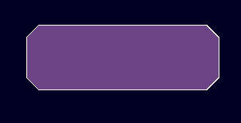
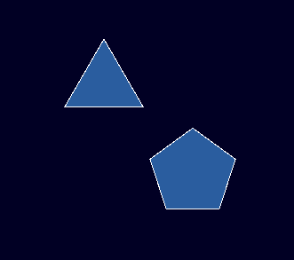
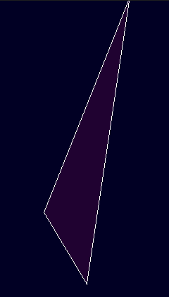

JaderVN Overview
JaderVN is a data driven, highly customizable, deterministic JavaScript visual novel engine and creation toolkit for building story-driven games. It turns editor-created JSON scenes and project data into a playable runtime, while still providing a JavaScript API for custom game systems and more advanced projects.
It includes a visual editor for designing scenes, UI, messages, assets, arcs, and plugins; a sample project to use as a starting point; and runtime systems for dialogue, choices, characters, animation, audio, camera effects, lighting, saves, achievements, notifications, and more.
Beginner's Guide
Learn JaderVN by tracing the included Sample Game before building a game from a blank project. It is a working reference, not a required template: its SampleGame.* JavaScript is game-specific policy, while the Editor tools and Jader.* APIs are reusable engine systems.
The file paths below describe the included source checkout. In a project opened through the packaged Editor, the same project-owned content is displayed as game/data, game/assets, and game/plugins; use the Editor's file selectors rather than hard-coding a path.
1. First Steps
- Open the packaged JaderVN Editor and open/create a project. See Editor Manual if this is your first launch.
- Before editing, open Game Play Test and launch the sample. At the title screen choose New Game.
- Enter a player name when prompted. The sample then runs its
getting_startedarc: Choose Your Name followed by Scene Workshop. - Read the Boot Report after closing the test. It establishes a baseline for plugins, data, and content packs before you change anything.
This first playthrough demonstrates typed text input, a custom dialogue layout, conditional flow, scene commands, lighting, choices, and queue-end cleanup. Do not try to understand every system at once—use the following sections to follow one visible moment back to its authored data.
Sample Game Map
| What you see | Included source to inspect | What it teaches |
|---|---|---|
| New Game learning path | data/scenes/arcs.json → getting_started | An Arc orders the naming and arcs/getting_started/scene_workshop scenes. |
| Name prompt and confirmation | data/scenes/naming.json and data/messages/sampleScenes.json → namingScene | Reusable messages, two message orders for keyboard/controller input, and conditional flow after a text field. |
| Workshop lighting and choices | data/scenes/arcs/getting_started/scene_workshop.json and data/messages/featureTour.json | Message order, before commands, conditions, a custom command, and queue-end cleanup. |
| Branching sample route | data/scenes/arcs.json → branching_routes | Condition-selected sub-arcs, Trust-aware routing, and character presentation. |
| Dialogue presentation | data/ui/designer/dialogue_naming.json and dialogue_ui.json | Scene-selected Dialogue UI files/variants. |
| Characters and relationships | data/visual/characters.json and data/characters/player/meta.json | Character poses/layers/outfits and player relationship metadata. |
2. Asset Creation
Start by inspecting the assets the sample already uses. Open Asset Creator and its relevant JSON/data file rather than editing raw JSON first.
- Inspect the Sample Game's character definitions. Bob demonstrates a simple expression asset; Sally demonstrates a layered body/expression composition; Jim demonstrates layered items and a default outfit.
- Open the Dialogue UI files in UI Designer. Compare
dialogue_naming, used by the name scene, withdialogue_ui, used by Scene Workshop and the other sample scenes. - Make one safe cosmetic experiment: duplicate or save a new UI/asset file, then change a color, position, label, or image reference. Do not overwrite the only working reference until you have a tested copy.
- Save and launch Game Play Test to verify the change in the real production boot path.
The sample's assets are useful examples of how data points to visuals. Your project policy—such as which characters exist, how relationships work, or which menu actions are available—belongs in your own game data/plugins, not in JaderVN core.
3. Your First Scene
Use the sample name scene as the smallest complete scene to study, then make a small variation of it.
- In Message Library, load
sampleScenesand inspect thenamingScenegroup. Each entry has a stable message ID, speaker/text data, and optional presentation behavior. - In Scene Designer, load
naming. ItsmessageOrderreferences those message IDs rather than copying their dialogue into the scene. - Notice the
standard_inputandcontroller_inputmessage orders. The scene selects the controller order only when a gamepad condition passes. - Notice that
confirm_nameconditionally routes toname_savedorname_fallback, then the selected final message ends the queue. - Create a new scene and message group for a short two-to-three-message exchange. Set the scene's Dialogue UI, put the message IDs in order, save, and test it before adding branching or custom commands.
For the next level up, inspect Scene Workshop: its first message applies evening lighting before dialogue, its condition depends on the saved name, its custom command shows choices, and its queue-end command removes the lighting. That is the right model for adding presentation and flow one piece at a time.
4. Using the Sample Project (Basis for Your Own Game)
Treat Sample Game as a readable collection of examples, not as a sealed base you must preserve. Keep the generic engine contract in Jader.*; when you need game-specific policy, place it in your own module/data namespace instead of extending SampleGame.*.
- Keep a known-good copy or version-control checkpoint before changing sample files.
- Replace visible text and art in a small sample scene first. Verify that every changed message is still referenced by the correct scene Message Order.
- Adapt the
getting_startedarc only after its scenes work independently. Arcs are route structure; Scenes are playable units; Message Library holds reusable dialogue. - Use the
branching_routesarc as a reference when you are ready for conditions. Its sub-arcs select trusted or independent content, then rejoin at character presentation. - Rename/rebuild game-specific plugins and configuration intentionally rather than relying on
SampleGameidentifiers in a release.
5. Making Plugins (Expand JaderVN and Add Your Own Game Methods)
Do this after you can author and test a basic scene without custom code. The included SampleGame.js is a reference for project policy such as title flow, input actions, saves, choices, Trust presentation, achievements, and scene-specific commands.
Use Plugin Manager to register your own project plugin. Give it a unique ID, load it after the engine/plugin APIs it needs, and keep its public/game code under your own namespace. Add a custom command only when scene JSON needs a reusable behavior that normal Scene Designer options cannot express.
After a plugin change, use Game Play Test and inspect its Boot Report. A manifest save or static source check does not prove that a custom command, player flow, or rendered UI works in Electron.
6. Game Deployment
When the sample-derived project has a playable beginning, create a player build through Deployment Editor. First create a Production Package, launch its JaderVN.exe, and play the same core route outside the Editor.
Only then create a Game Installer and test an installed copy. Optional First-Launch Setup, Content Manager, pack protection, and content packs belong after the base-game loop works. Keep the editable source project as your canonical project; deployments and installers are generated player artifacts.
For detailed controls, see Game Play Test, Deployment Editor, and Open a Deployed Game.
Narrative Structure
JaderVN separates reusable dialogue, scene execution, and broader story progression into Messages, Scenes, and Arcs. This keeps text libraries independent from scene staging and allows the same message data to be referenced wherever it is needed.
Arc
`-- Scene order
|-- Scene
| |-- Message references
| |-- Message Order
| |-- Scene Commands
| `-- Flow Control
`-- Sub-arc block
`-- Parallel conditional scene sequences

The diagram is a conceptual route overview. In authored Arc JSON, sub-arcs are subArcs blocks placed in an Arc's sceneOrder; they are not stored as child objects inside a message.
Core Narrative Hierarchy
Messages
Messages are the fundamental dialogue units. They are stored in named groups inside Message Library JSON files. A message can contain its speaker, glyph text and notetags, optional plain text, automatic-advance timing, name-box and speaking behavior, narration state, and other message metadata.
A scene normally stores a reference to a message by source file, group, and message ID. The reusable message remains in the Message Library rather than being copied into every scene that uses it.
Scenes
A Scene is a JSON-defined narrative execution unit. It combines message references with scene-wide presentation properties, ordered message IDs, per-message overrides, timed commands, queue-end commands, and continuation instructions.
A scene can contain one message or a long sequence. Flow Control can continue within the current scene, jump to a message in another scene file, end the queue, or store a Return Point before entering nested content.
Arcs
An Arc is a higher-level story route containing scene definitions and an authored sceneOrder. Arc conditions determine which scenes are eligible as the player progresses.
An Arc scene-order slot can contain a scene ID, an empty spacing slot, or a subArcs block. A sub-arc block groups parallel branch sequences, each with its own sub-arc ID, scenes, and optional conditions. This supports routes, parallel story threads, and conditional branches without placing their execution logic inside an individual dialogue message.
Message Order Is the Scene Timeline
The Novel queue is not a fixed payload containing every remaining message. It grows as resolved queue-message objects are processed and routed, which also makes it useful as a record of the messages visited during the current run.
The current scene's selected Message Order supplies the normal timeline. Each position contains a scene message ID. When Flow Control says to play next, JaderVN locates the following playable ID in that selected order.
A scene may define multiple named messageOrders. When the scene is entered, JaderVN selects an order using this priority:
- An explicitly requested message-order ID from the supplied context.
- A selected tone whose name matches a message-order ID.
- The first
messageOrderSelectorbranch whose conditions pass. - The selector's default order.
- The legacy/default
messageOrderarray.
When routing enters another scene, that scene resolves and uses its own Message Order. If a Return Point later resumes an earlier scene, execution resumes from the stored return message and continues according to that message's scene and selected order context.
The Message Processing Cycle
Each queue message passes through a consistent runtime lifecycle:
- Before commands: Commands with
timing: "before"execute before the message is presented. Per-command waits and wait-before-phase timing are honored. - UI creation: JaderVN creates the message box, name box, glyph text, and text indicators using scene properties and any message-specific overrides.
- Flow planning: The current message's Flow Control is resolved before typing begins. JaderVN calculates the authored continuation or explicit target and stores a continuation on the Return Stack when Return Point is enabled.
- During/typewriter: Glyph notetags are processed as text is presented. A typewriter tag can run registered
onGlyphcallbacks for individual reveals andonCompletecallbacks when typing finishes. - Player interaction: After typing, JaderVN waits for player input. This is the interaction window for advancing, menus, saves, choices, and other enabled UI behavior. Auto mode can replace the manual wait with the message's configured auto-continue delay.
- After commands: After the player or auto mode advances, commands with
timing: "after"execute. - Routing: JaderVN adds the resolved next message, changes the active scene metadata when necessary, resumes a Return Point, pauses when no route is available, or runs queue-end commands when the message ends the queue.
The current queue runner explicitly executes the before and after JSON-command phases. The player stage is an interaction wait in the lifecycle; it is not currently a separate executeCmds("player") pass.
Cross-Scene Routing
Flow Control belongs to a scene message reference. Its base result can play the next message in the current order or target a specific path, scene ID, and message ID. Conditional flow branches can replace that base result when their conditions pass.
Because a target can belong to another scene JSON file, one continuous dialogue run can move through several scenes. On each scene change, JaderVN updates the active path, scene ID, scene data, Message Order, message-order index, and related scene metadata.

This diagram illustrates how one player-facing narrative sequence can traverse several engine-facing Scene JSON files and Message Orders. Its Reaction Scene and Transition Scene routes depict the optional Ultaimia extension and require Ultaimia_Systems.js; direct targets, queue ending, and Return Points are available in base JaderVN.
Return Points and Scene Nesting
When Return Point is enabled and an authored continuation can be resolved, JaderVN pushes that continuation onto sceneMeta.returnStack before following the actual route.
If the routed or nested content reaches a point with no next message, JaderVN can pop the latest Return Point and resume its stored message. Multiple nested interruptions create multiple stack layers and are unwound in last-in, first-out order.
Ultaimia reaction and transition behavior can optionally insert a transition message before returning. That extension requires Ultaimia_Systems.js; the underlying Novel Return Stack and Return Point behavior are part of base JaderVN.
How This Maps to the Editor
- Message Library authors reusable dialogue units and glyph notetags.
- Scene Designer references those units and authors Message Orders, commands, presentation overrides, Flow Control, and Return Points.
- Scene Tester runs the live Novel player and previews predicted authored message routes.
- Arc Viewer organizes scenes into higher-level routes, conditional slots, and sub-arc branches.
- Jader.Novel documents the runtime API and queue lifecycle behind scene playback.
Click and Hover Actions
JaderVN separates a control's visible display object, pointer hit region, hover feedback, navigation focus, input binding, and dispatched action. Simple controls can combine these pieces through one helper, while advanced interfaces can configure each layer independently.
A typical interaction follows this route:
Pointer tap or keyboard/gamepad confirm
|
v
Interactive UI target or glyph block
|
v
Action ID in the active system
|
v
Registered action-dispatch callbackPointer and controller activation should normally share the same action ID. This keeps the callback independent from the device that activated it.
Click Events
PIXI display objects participate in pointer hit testing when their eventMode permits it. JaderVN's click helpers normally use eventMode: "static" and cursor: "pointer". A custom hitArea can make the target larger or more regular than its rendered pixels.
const entry = Jader.UI.getUIEntry("newGameButton");
Jader.UI.addClickEvent(entry, {
action: "newGame",
deactivateOnClick: false,
keepHoverOnActivate: false
});addClickEvent() accepts the action through action, event, or on. On pointer activation it verifies that the navigation root is interactive, then sends the action to the active system's dispatch map.
Direct PIXI listeners remain available when a control does not need JaderVN dispatch or navigation:
const gfx = entry.graphics ?? entry;
gfx.eventMode = "static";
gfx.cursor = "pointer";
gfx.on("pointertap", () => {
// Direct local behavior.
});Direct listeners are responsible for their own state validation and cleanup. Use dispatched actions when mouse, keyboard, and gamepad activation should reach the same game behavior.
Adding Interaction to UI and Other Display Elements
Jader.UI.addInteraction() is the shared modern entry point for tracked UI and compatible PIXI display objects. addGlyphInteraction() uses this same lifecycle after calculating a glyph container or tag-block hit region.
What Is a Compatible PIXI Display Object?
For JaderVN interaction, a compatible PIXI display object is an object that can participate in PIXI pointer events and exposes the display properties used by the configured interaction. It should provide on() and off() for pointerover, pointerout, and pointertap; input properties such as eventMode and cursor; visual properties such as alpha, x, y, rotation, and scale; and bounds through getLocalBounds() or width/height.
Optional properties such as tint and filters are required only when a selected hover animation uses them. An object can therefore be pointer-compatible without being compatible with every animation.
addInteraction() accepts the PIXI object directly, a tracked Jader UI entry, a UI ID, or a wrapper that stores the display object in graphics:
Jader.UI.addInteraction(pixiObject, opts);
Jader.UI.addInteraction("trackedUIID", opts);
Jader.UI.addInteraction({
id: "customControl",
graphics: pixiObject
}, opts);Display-Object Types Used by JaderVN
| PIXI type | JaderVN uses | Interaction notes |
|---|---|---|
PIXI.Sprite |
UI images, static spritesheet frames, single-image characters, backgrounds, parallax, generic visuals, FX images, glyph sprites, navigation indicators, and overlays. | The most common interaction target. Supports normal pointer bounds and common tint/filter animations. |
PIXI.AnimatedSprite |
Animated UI sprites, animated icons, spritesheet visuals, navigation indicators, and animated glyph replacements. | Uses the same interaction model as a sprite while continuing its frame animation. |
PIXI.Graphics |
Boxes, circles, ellipses, stars, polygons, paths, custom UI shapes, and legacy transparent hitboxes. | Drawn geometry normally supplies useful bounds, making Graphics well suited to button-like controls. |
PIXI.Container |
Complete glyph text, layered characters, composite visuals, interaction regions, camera/world organization, and Jader layers. | Appropriate for a bounded composite control. Empty containers need an explicit hitArea. Root world/UI layers are technically containers but are usually too broad to be useful controls. |
PIXI.TilingSprite |
Tiled backgrounds and looping parallax surfaces. | Can receive pointer interaction. Large or full-screen targets should normally use navigable: false. |
PIXI.HTMLText |
HTML-styled text created by Jader.UI.createHTMLText(). |
Can act as one interaction target but does not provide separately addressable glyph blocks. |
PIXI.Text |
Temporary text used internally while JaderVN generates glyph textures; developers may also create persistent Text objects. | JaderVN's temporary glyph-generation Text objects are destroyed and must not receive interaction. A persistent developer-created Text object can be used when it exposes the required input and display properties. |
Common JaderVN Interaction Targets
In engine terms, suitable targets include UI images, spritesheet frames, animated UI sprites, boxes and shapes, complete glyph-text containers, HTML text, characters, backgrounds, parallax objects, generic visuals, FX visuals, and developer-created composite controls.
Whether a target should be interactive is separate from whether it technically can be interactive. For example, a character container may be a useful world target, while an entire JaderLayers.ui or world-layer container would usually intercept far too much input.
Objects That Are Not Display Targets
Textures, text styles, filters, spritesheet data, asset promises, geometry/configuration data, rectangles/bounds by themselves, and the PIXI renderer are not display objects and should not be passed as interaction targets. Target the display object that uses those resources:
// Incorrect: a Texture is a resource, not a display target.
Jader.UI.addInteraction(sprite.texture, opts);
// Correct: interact with the Sprite that displays the texture.
Jader.UI.addInteraction(sprite, opts);In this manual, “compatible PIXI display object” means a tracked Jader UI entry, a wrapper containing a display object in graphics, or a PIXI object that supports pointer events, display bounds, and the visual properties required by its configured hover animations.
const interaction = Jader.UI.addInteraction("optionsIcon", {
id: "optionsIcon",
action: "options",
hitPadding: 8,
hover: {
animations: [
{ name: "pulse", opts: { duration: 0.5 } },
{ name: "tintPulse", opts: { duration: 0.7 } }
]
}
});Tracked UI Entries
Jader.UI.getUIEntry(id) returns the tracked entry object. Its PIXI object is normally stored in entry.graphics. Pass the entry to addHoverPulse() and addClickEvent() so JaderVN can retain interaction metadata and navigation state.
const entry = Jader.UI.getUIEntry("optionsIcon");
Jader.UI.addHoverPulse(entry, {
tintIn: "#88ccff",
tintOut: "#ffffff",
duration: 0.15
});
Jader.UI.addClickEvent(entry, {
action: "options"
});applyHoverClickToUI() applies a stored hover style and click action to an array of authored UI records. Jader.SupraUI.setHoverNonHitbox() provides a higher-level path for a UI entry or compatible PIXI display object that is not one of SupraUI's generated hitboxes.
Non-UI Display Elements
addInteraction(), addHoverPulse(), and addClickEvent() accept a wrapper containing graphics or a compatible PIXI object. Objects outside Jader.UI._ui are not automatically removed with tracked UI, so their owner must call removeInteraction() or otherwise remove listeners and navigation before destroying or detaching them.
Use registerNavItem() only when the non-UI object should participate in keyboard/gamepad selection. Pointer-only controls can set _skipNav and _allowNoNavInteraction when using the lower-level interaction model.
Glyph-Text Container Interaction
createGlyphText() renders individual glyph sprites inside one PIXI container. Its interaction option can turn that visible text container into one clickable and hoverable control without creating a second transparent hitbox.
await Jader.UI.createGlyphText("newGame", "New Game", style, {
x: 100,
y: 200,
interaction: {
id: "newGame",
action: "newGame",
hitPadding: 8,
enabled: true,
hover: {
animations: [
{
name: "pulse",
scope: "text",
opts: { duration: 0.5 }
},
{
name: "tintPulse",
scope: "text",
opts: {
tintIn: "#88ccff",
tintOut: "#ffffff",
duration: 0.7
}
}
]
}
}
});A container interaction has one action and one rectangular hit region based on the complete text bounds. hitPadding expands that region without rendering another display object. A container may also be hover-only when it defines a hover stack without an action.
Do not combine a container action with interactive tag blocks in the same glyph entry. JaderVN warns and skips the container action when interactive blocks already exist, preventing a child block and its parent from dispatching competing actions.
Interactive Glyph Tag Blocks
A single glyph-text entry may contain several tagged interaction blocks. Each block represents one text range and may have its own action, hover stack, stable ID, and enabled state.
[["clickEvent"], [{
id: "accept",
action: "acceptInvitation",
interactionScope: "group",
hitPadding: 6,
enabled: true,
hover: {
animations: [
{
name: "pulse",
scope: "group",
opts: { duration: 0.45 }
}
]
}
}]]Accept[/]
or
[["clickEvent"], [{
id: "decline",
action: "declineInvitation",
interactionScope: "group",
hover: {
animations: [
{
name: "tintPulse",
scope: "group",
opts: { tintIn: "#ff8888", duration: 0.6 }
}
]
}
}]]Decline[/]The required tag format is a tag-name array followed by an argument-object array. The editor's Clickable / Hoverable Block builder generates this syntax.
Interaction Scope
interactionScope: "group"makes only the tagged text range clickable. This is the normal choice when one glyph entry contains multiple actions.interactionScope: "text"uses the complete glyph-text container as the hit region. Use it only when the entry represents one action.
Hover-Only Blocks
A hoverGroup tag with an animations array creates the new consolidated hover region without registering a click action:
[["hoverGroup"], [{
id: "termHint",
interactionScope: "group",
animations: [
{
name: "tintPulse",
scope: "group",
opts: { tintIn: "#88ccff", duration: 0.6 }
}
]
}]]important term[/]Hover Animation Stacks
A hover stack is an array of animations that start together. Each item chooses its animation, target scope, and independent options:
{
name: "animationName",
scope: "group", // or "text"
enabled: true,
opts: {
// Options for this animation only.
}
}scope: "group"applies the animation to the glyphs represented by the tagged block.scope: "text"applies the animation once to the complete glyph container.enabled: falsekeeps an animation configuration in the stack without running it.
Compatible effects such as position, tint, and outline effects can run together. Two animations that continuously write the same property can compete—for example, two scale loops or two tint loops. Prefer one active animation per visual property channel.
When hover ends or the interaction is disabled, JaderVN stops returned controllers, cancels the shared hover token where supported, and restores the captured position, alpha, tint, rotation, and scale state.
Registering Custom Hover Animations
Jader.Anim.register() makes a developer animation available to Jader.Anim.apply(), generalized hover stacks, the runtime animation index, and the editor's animation selectors.
Jader.Anim.register(
"customHoverLift",
(target, opts = {}) => {
const startY = target.y;
const token = opts.token ?? { cancelled: false };
const controller = Jader.Anim.moveTo(target, {
y: startY - (opts.distance ?? 6),
duration: opts.duration ?? 0.35,
token
});
return {
stop() {
token.cancelled = true;
controller?.stop?.();
target.y = startY;
}
};
},
{
category: "custom",
description: "Lifts a control while it is hovered or focused.",
defaults: { distance: 6, duration: 0.35 },
channels: ["positionY"],
supportsHover: true
}
);A custom hover animation should return a controller with stop(), honor the supplied opts.token, or preferably do both. This allows pointer-out, disablement, redraw, and cleanup to stop the animation safely. channels describes the display properties the animation writes and is available as metadata for editor presentation and future conflict checks.
Use Jader.Anim.unregister(name) to remove an animation that was registered through this API. After registration or removal, JaderVN rebuilds the animation index. Refresh editor support data after registering an animation while the editor is already open.
In the UI Designer, use Element Click / Hover Interaction for the serialized interaction object. Add Hover Animation lists hover-compatible runtime animations, including custom registrations, and Add Animation To Interaction appends the selected animation and its opts to the element's hover stack.
Registering Dispatched Click Actions
Interactive controls store action IDs; the active system's dispatch map determines which callback receives an action. Register dispatches when the system is initialized:
Jader.Core.activeSystem = "title";
Jader.UI.registerActionDispatches("title", {
newGame: async (target, opts) => {
await SampleGame.Game.startNewGame();
},
options: (target, opts) => {
SampleGame.Options.open();
},
quitGame: () => {
window.close();
}
});registerActionDispatch() registers one callback. registerActionDispatches() registers an action-to-callback map. addActionDispatch() is a flexible convenience form. removeActionDispatch() and clearActionDispatches() remove registrations.
The callback receives target and the click options. A missing active-system map or missing action is reported through Jader.Debug.error(). Keep game-state validation inside the callback as well as the UI state layer, because code may invoke the same behavior through another route.
Keyboard and Gamepad Input Actions
Input actions and click-dispatch actions are related but separate:
- Input action: A keyboard, gamepad-button, or axis binding such as
advanceornav_down. - Click action: A UI intent such as
newGameoroptionsresolved through the active system's dispatch map.
Bind physical codes to input action names with Jader.Input.bind(), persist a changed binding with bindAndSave(), and remove one with unbind(). Projects normally load their default bindings and controller profiles from input.json.
Jader.Input.onAction("nav_down", () => {
Jader.Input.navigate("down", "nav_down");
});
Jader.Input.registerRepeatAction("nav_down", () => {
Jader.Input.repeatDesignerNavigation("down", "nav_down");
});
Jader.Input.registerActionSystemHandlers("advance", {
title: () => Jader.Input.activateControllerNavigation(),
options: () => Jader.Input.activateControllerNavigation()
});onAction() adds an action listener and offAction() removes it. registerRepeatAction() handles held input. registerActionSystemHandlers() selects an input callback according to Jader.Core.activeSystem. Directional input moves through Jader.UI's navigation list, while confirm activates the selected item's click action.
Game code may map friendly names such as confirm and navDown to the actual binding names authored in input.json. Do not assume that an input binding name and a dispatched UI action ID are the same identifier.
Enabling and Disabling Interaction
General UI and Display Objects
const interaction = Jader.UI.addInteraction(entry, {
id: "options",
action: "options",
hover: { animations: [{ name: "customHoverLift" }] }
});
Jader.UI.setInteractionEnabled(interaction, false);
Jader.UI.setInteractionEnabled(interaction, true);
Jader.UI.removeInteraction(interaction);Glyph Containers and Blocks
// Disable one tagged block.
Jader.UI.setGlyphInteractionEnabled("inviteText", false, {
block: "accept"
});
// Re-enable it later.
Jader.UI.setGlyphInteractionEnabled("inviteText", true, {
block: "accept"
});
// Disable every new-model interaction on the entry.
Jader.UI.setGlyphInteractionEnabled("inviteText", false);A disabled glyph interaction rejects pointer hover and clicks, stops its hover stack, uses the configured disabledAlpha or 0.5, and is skipped by keyboard/gamepad navigation. Its dispatcher remains registered so the block can be re-enabled without rebuilding it.
Action-Level Menu State
deactivateEntry(action, reactivate) marks one action deactivated and can reactivate other actions in the same update. activateEntry(), activateEntries(), and reactivateEntries() restore action state. isEntryDeactivated() reads the current action-level state.
Use block enablement when one range inside a glyph entry changes availability. Use action-level deactivation when the same action should be unavailable across the current menu state. The dispatcher should still validate important game requirements.
Navigation, Focus, and Accessible Feedback
registerNavItem() adds a control to keyboard/gamepad navigation. removeNavItem() removes it, clearNavItems() clears the list, and reSortNav() orders entries by X, Y, or a manual ID list. moveNavSpatial() moves according to live authored coordinates. refreshNavSelection() reapplies the selected hover state after a redraw.
- Give interactive blocks stable IDs when manual navigation order or later enablement matters.
- Use
hitPaddingto enlarge small text targets. - Provide visible focus feedback for controller users as well as mouse hover feedback.
- Do not communicate disabled state only through color; alpha, labels, icons, or other cues can provide additional distinction.
- Choose hover colors with sufficient contrast. JaderVN hover helpers support accessible contrast tint behavior.
Legacy Hitboxes and Compatibility Methods
Earlier JaderVN menus commonly rendered transparent box hitboxes above glyph text. This avoided one pointer listener per glyph and produced a larger target, but required the hitbox and visible text to remain aligned.
Jader.SupraUI.buildTextHitbox()builds one hitbox aligned to text.buildTextHitboxes()builds several text/action hitboxes.setHover()applies hover, click, and navigation behavior to hitboxes.setHoverNoNav()applies pointer behavior without keyboard/gamepad navigation.setHoverNonHitbox()targets another UI/display object.
Hitboxes remain useful for composite controls spanning multiple display objects, intentionally oversized targets, irregular layouts, and existing menu implementations. For a single glyph label or tagged inline action, the new container/block model normally avoids the extra authored UI element.
Legacy hover, hoverGroup, and clickEvent tags continue to use their prior behavior unless the new interaction fields—such as interactionScope or an animation stack—opt the block into consolidated interaction.
Interaction Lifecycle and Cleanup
- Create the display object or glyph text.
- Install its hover/click behavior and register navigation when applicable.
- Resolve pointer hover or navigation focus.
- On pointer tap or confirm, verify enabled state and dispatch the action.
- Stop hover controllers when focus leaves or the interaction becomes disabled.
- Remove listeners and navigation metadata when the control is destroyed or replaced.
removeInteraction() removes only the listeners installed for one generalized interaction and restores its previous input properties. removeHoverAndClick() remains the compatibility cleanup helper and recognizes generalized and glyph interaction targets. removeUIByID() and clearAllUI() stop and unregister tracked interactions before removing their UI.
Composition Rules
- Use one container action when the complete glyph entry represents one control.
- Use separate tagged blocks when different text ranges dispatch different actions.
- Do not activate a container action and child block actions at the same time.
- Clickable scope and animation scope are independent: a small block may animate the complete text.
- Two blocks may share an action ID, but their stable block IDs should remain distinct when they need independent state.
- A hover-only block does not need an action dispatcher.
- A pointer-only object should not be registered in navigation unless controller focus is intended.
Troubleshooting
The Cursor Appears but the Action Does Not Run
Confirm that the action exists in the dispatch map for the current Jader.Core.activeSystem, that the target is enabled, and that it remains registered for interaction/navigation.
Controller Confirm Works but Pointer Click Does Not
Check the target's eventMode, hit region, parent visibility, and whether another interactive object overlaps it.
Pointer Click Works but Controller Confirm Does Not
Check that the target is registered through registerNavItem(), the directional and confirm input actions are registered, and the selected index points to an enabled item.
A Hover Animation Does Not Stop Cleanly
Use animations that return a stoppable controller or honor the supplied cancellation token. Avoid stacking several continuous animations that write the same display property.
A Container Action Is Skipped
The glyph entry likely contains interactive tagged blocks. Choose either the one-action container model or the multiple-block model.
The Clickable Area Does Not Match the Text
Check interactionScope, wrapping, scale, and hitPadding. Use group scope for inline ranges and text scope for one complete-label action.
Editor Manual
JaderVN Editor is the authoring application for projects, scenes, assets, UI, plugins, content packs, testing, and deployment.
Open the Packaged JaderVN Editor
Launch the installed JaderVN Editor/Engine application from the Start menu or its shortcut. With no project selected, it opens the Editor Welcome screen rather than a game.
- Choose Open Project and select an existing JaderVN project folder, or enter a project name, App ID, and version and choose Create Project.
- JaderVN validates the selected/created workspace, restarts into that project, and opens the Editor alongside its designer-mode runtime.
- Use the Editor cards to open the appropriate authoring tool. The API Manual is available from the Editor.
The active workspace is remembered for the next editor session. Use the Welcome screen to switch projects when needed. Editor configuration—including theme, window size, and DevTools preference—is managed through Editor Configurations.
Do not use a deployed player game as the Editor. A game deployment/installer contains a bundled player project and starts the game runtime. Open the packaged JaderVN Editor/Engine to create or edit source projects; use Deployment Editor to create a separate player release.
Legacy Development-Engine Launch
For a source/development checkout of the engine, install dependencies once and start it from a terminal in the engine project folder:
npm ci
npm startLater launches normally need only npm start. This development route opens the workspace-aware designer session and is intended for engine contributors or source-checkout workflows, not ordinary packaged-editor use.
Older JaderVN project layouts use JaderVN.engineMode in the project's legacy src/vn/data/config.json to describe the preferred boot mode: "designer" for editor/designer work, "production" for the game runtime, or "demo" for a restricted demo configuration. Keep that explanation for legacy projects, but do not change this value merely to open the current packaged Editor—the Welcome screen and project selection flow are the supported packaged workflow.
Open a Deployed Game
A deployed game is the player release created from Deployment Editor. It is separate from the JaderVN Editor/Engine and opens directly into the game's player runtime; it does not show the Editor Welcome screen or require Node.js, npm, or a source-project checkout.
Production Package Folder
If you created Create Production Package, open the generated <project-name>-deployment folder and run JaderVN.exe. This is useful for author smoke tests before creating an installer. Keep the entire deployment folder together: the executable needs its adjacent resources files, including the bundled game project and any loose included content packs.
Installed Game
If you created and ran a Game Installer, launch the installed game from its Start Menu or desktop shortcut. You can also run <Game Name>.exe from the install location chosen during setup. The installer is assisted, so the player chooses that install location and shortcut options.
First Launch and Content
On the first eligible launch, a game that includes a valid authored First-Launch Setup shows its player setup window before the runtime. After the player saves choices, later launches open the game directly. If the deployment includes Player Content Manager, players can use the in-game Content button to enable/disable compatible packs or install compatible ZIP packs; restart the game after content changes.
Do not launch a deployed game with npm start, and do not edit its sealed project archive to change game content. Make changes in the editable source project, test them, then create a new deployment or installer.
Editor Configurations
Upon starting the editor for the first time or when clicking Change Editor Configs at the bottom of the editor, First-Time Setup will appear. The values can be changed here or directly edited in config.json, where these values are saved to. Please restart the editor after making changes.
Editor Configs
Editor Theme
Choose a color theme for the editor window.
Editor Width/Height
Sets the width and height of the editor window.
Editor Language
The language that the editor will boot in. Currently only supports English.
Game Configs
Fullscreen Shortcut
The JS button press for fullscreen access from keyboard.
Game Width/Height
Sets the width and height of the runtime window. Note: ALL visual/UI items scale from this number.
Game Background Color
Choose a color for the runtime window background.
Advanced
Show FPS Counter in Game
Enable to allow an FPS counter on the runtime window.
Game DevTools
Enable to allow DevTools for the runtime window.
Editor DevTools
Enable to allow DevTools for the editor.
Editor Console Warnings
Various warnings in the editor console can occur. These two will appear on editor boot, but can safely be ignored.
Electron Development Warning
When running JaderVN directly from source, Electron may display an Insecure Content-Security-Policy warning in the developer console. This is an Electron development diagnostic, not a JaderVN runtime error or evidence that your project has been compromised.
JaderVN loads its editor and runtime from local project files, with Node.js integration disabled and context isolation enabled. The warning is not displayed in packaged builds. Developers may ignore it while working with trusted, local JaderVN projects.
Do not use JaderVN to load untrusted scripts or remote content. Content Security Policy restrictions should be reviewed before distributing projects that incorporate outside web content.
Ultaimia_Systems.js is Not Loaded
The warning Skipping phrase discovery because Ultaimia_Systems.js is not loaded will appear as Ultaimia_Systems.js is the plugin used by JaderPlays to develop the Ultaimia visual novel series. This only blocks Ultaimia-specific systems and does not cause an error for any use of JaderVN's engine. Anything described in this API related to JaderVN is supported without Ultaimia_Systems.js.
Game Project Management
Upon starting the editor for the first time, there will not be an Active Project loaded.
A project can be created in the fields to the right in the Active Project block on the Welcome page.
Fill in a project name, App ID, and version number and hit Create Project. You will then get to pick a location for the game project files.
Once created, click Load Project to reload the editor with your project.
From now on, the game project is where every file pertaining to the game will be, including JSON, JS plugins, and visual/audio assets.
UI Designer
The UI Designer is a module of the JaderVN Editor and can be reached from the home page.
It is used for creating UI elements and menu designs easily, and can be loaded into runtime with little effort.
Dialogue UI Authoring
UI Design Type selects the authoring contract for the file. Use Standard UI for menus, HUD-style layouts, and reusable UI designs whose entries stay visible according to their normal draw/clear lifecycle. Use Dialogue UI for a layout selected by a scene or message through useDialogueUI, dialogueUIFile, and dialogueUIFileVariant. Dialogue UI reveals the Dialogue UI Components panel and saves its metadata in the active variant's messageUIComponents object.
Changing the design type does not convert existing elements or automatically assign them to a component. Set the type before editing component assignments. The selected variant and its normal blocks still hold the actual glyph/non-glyph entries; components only describe how dialogue presentation controls those entries.
Dialogue UI Components
Assign a loaded entry to one of four component groups: Message, Name, Advance Indicator, or Auto Advance Indicator. An entry can belong to only one component. Adding it to another component moves the assignment; it is not copied. Each group records an ordered elements list plus optional bindings and animation settings.
When a dialogue layout is drawn, entries assigned to these four component groups begin hidden. JaderVN shows or hides them as the message, speaker name, advance indicator, or auto-advance indicator becomes relevant. Entries not assigned to a component remain persistent authored UI: they draw with the layout and are not automatically hidden or managed by those component lifecycles. Use persistent entries for static framing, decorations, and other always-visible dialogue-layout artwork.
Bindings and Dynamic Bounds
| Role | Allowed entry | Stored contract and runtime behavior |
|---|---|---|
| Text Binding | Glyph only; Message or Name only | Stores the component's bindings.text ID. JaderVN writes the current dialogue or speaker text into this glyph. Only one text binding is retained per component; assigning another replaces that role. |
| Bounds Element | Non-glyph only; Message or Name only | Stores bindings.bounds, normally the message/name box or panel. Only one bounds binding is retained per component. |
| Resize With Text | Non-glyph only; Message or Name only | Adds the entry ID to resizeElements. Dynamic resizing occurs only when this same entry is the component's bound bounds element and the bound text glyph is live. Marking another non-glyph as resizable is stored, but it is not resized by the current dialogue renderer. |
| Portrait Element | Non-glyph only; Message or Name only | Stores bindings.portrait as component metadata. It is available to game/plugin presentation code, but the current core dialogue renderer does not itself position, replace, or animate a portrait from this binding. |
Left Text Inset and Right Text Inset are saved with the component's text binding as textInsets.left and textInsets.right. When a bound box is also marked Resize With Text, JaderVN calculates its width as the rendered glyph width plus both insets, preserves the box's authored horizontal center, and moves the text to the resized box's left inset. Insets are non-negative pixels in authored UI coordinates.
Component Animation Stacks
Each component has independent Opening Stack and Closing Stack fields. Enter an array of descriptors such as [{ name: "fadeIn", opts: { duration: 0.2 } }]. Every item requires a non-empty name (or animName) and an object opts; stacks run in list order across every live element assigned to that component.
Opening stacks run when the component becomes visible. Closing stacks run when it is dismissed; JaderVN hides the component after the longest configured close duration. Enable Disable these stacks during Fast Forward to save disableAnimationsDuringFastForward: true; while fast-forwarding, the component changes visibility without running its lifecycle stacks. These component stacks are distinct from an entry's ordinary animations, which remain draw-time behavior rather than message/name/indicator lifecycle behavior.
Use Add New Component to apply an entry assignment or its changed roles, and Save Component Animation Stacks to apply the selected component's stacks. Both modify the in-memory UI design only. Use Save To Disk to persist the active file.
Content-Pack UI Design Authoring
UI Designer can load mounted content-pack designs, reference mounted pack images, and save a design as a pack data override. Use the header's Content Source / Save To selector to choose Base Game or an available valid pack. The selector chooses the save destination; it does not convert the current design or copy any base file into a pack until you save it.
Loading and Saving a Pack Design
| Action | What UI Designer does | Authoring consequence |
|---|---|---|
| Select a design under Content Pack: [name] | The File selector groups mounted ui-design data entries by pack. Loading one passes its pack ID to the runtime loader, which reads that pack's declared JSON entry instead of the base file. | Use this to inspect or revise a pack-provided UI design. The Content Source / Save To selector switches to that pack when it is loaded. |
| Save To Disk with Base Game | Writes src/vn/data/ui/designer/<file>.json in the editable workspace. | Base Game is rejected when the serialized design contains any contentPackID image reference. Choose a pack destination before saving a design that uses pack assets. |
| Save To Disk with a content pack selected | Saves data/ui/designer/<file>.json into the chosen pack and updates its manifest with data ID ui.design.<file>, type ui-design, and an override targeting that same data ID. | This is a whole-document replacement contract, not a merge of individual UI entries or variants. Save a complete compatible design under the same file ID when the pack is intended to replace a base design. |
The automatic manifest update also declares the replacement as a data override using the current project game-version range. Do not manually create a second, conflicting manifest row for the same ui.design.<file> ID. Use Content Pack Editor for the pack's identity, dependencies, load order, and any broader manifest review.
Pack-Aware Image and Texture Asset Selection
For Sprite entries, the image-data picker includes a Mounted Content Packs group containing declared image assets. Choosing one stores an asset identity rather than a base path:
{
"asset": {
"contentPackID": "com.example.expansion",
"contentPackAssetID": "title-banner"
}
}At runtime JaderVN resolves that pair through the mounted pack registry. It is different from a base Sprite asset, which stores folder and file. The picker changes Content Source / Save To to the asset's owner when that pack is known, but a design may still reference an asset from another mounted pack. In that case, the referenced asset's pack must also be accepted and mounted at runtime.
| UI Designer control | Available sources | What is serialized | Pack support |
|---|---|---|---|
| Sprite → Asset Data | Project asset-data values tagged for imageAsset, plus declared image assets under Mounted Content Packs. | A base/custom choice populates asset.folder and asset.file. A mounted-pack choice serializes asset.contentPackID and asset.contentPackAssetID. | Supported. A mounted-pack choice is an identity lookup, not a copied filesystem path. The renderer uses the mounted registry key for that exact pack/asset pair. |
| Texture Fill → Asset Data | Project asset-data values tagged for textureFill. | Populates opts.textureFolder and opts.textureFile when the shape is saved with Texture Fill enabled. | Base/custom texture paths only. The current texture-fill picker does not list Mounted Content Packs, and texture-fill serialization has no contentPackID/contentPackAssetID fields. |
| Manual Folder / File fields | Typed asset-relative base path values. | Sprite: asset.folder/asset.file. Texture Fill: textureFolder/textureFile. | Use these for normal assets/images/<folder>/<file>.png paths. They are not a substitute for a pack asset identity. |
Do not paste a value such as pack:com.example.expansion/asset/title-banner into Texture Folder/File. The editor recognizes that form only for the Sprite asset picker. Shape texture fill calls the normal base/custom texture loader with textureFolder and textureFile, so it cannot resolve a pack image identity in the current release.
When choosing a Sprite pack image, select it from the picker rather than hand-authoring the two identity fields. The picker filters to declared image entries from accepted packs and retains the stable asset ID even if the pack's physical file path changes. If the pack is disabled, incompatible, undeclared, or missing at runtime, that identity cannot resolve; test the UI with the intended pack configuration enabled.
Availability, Overrides, and Limits
- Only packs accepted by the current workspace/runtime registry appear as content sources, design-file groups, or mounted image choices. Resolve invalid manifests, compatibility, and dependency problems in Content Pack Editor before expecting assets or designs to appear.
- Pack data is writable only in an editable project workspace. A bundled deployment can load mounted pack content but cannot save pack data from UI Designer.
- When normal runtime code loads a UI design by file ID, a declared content-pack override for
ui.design.<file>wins over the base JSON. Pack load/conflict resolution therefore determines which replacement is used when multiple packs target the same design. - The Scene and Message dialogue-UI file pickers currently list base UI design filenames. For a pack-authored dialogue layout, use the same file ID as the base layout it replaces; do not rely on a pack-only filename appearing in those selectors.
Recommended workflow: create and validate the pack first, select it as Content Source / Save To, choose only mounted pack assets that the pack's runtime dependencies guarantee, then save and test with that pack enabled in Game Play Test. Keep the base design independent unless the pack is explicitly intended to override it.
File Actions
Manage JSON files for UI design here.
New UI Design File
Input the name of a new UI design file here and press Create New UI Design File.
Starting Point can create a blank design or an editable copy of the native screen or radial text keyboard. The copy contains the normal glyph, box, interaction, coordinate, layer, and animation entries from that keyboard. Creating initializes the design in memory; press Save To Disk to write the new file under /data/ui/designer. The engine keyboard file used as the starting point is not changed.
New Variant Key
A variant key is the name of a complete UI variation inside one UI design JSON file.
{
"variants": {
"default": {
"blocks": {},
"menuLook": {}
},
"compact": {
"blocks": {},
"menuLook": {}
}
}
}Here, default and compact are variant keys.
Selecting a variant tells the UI Designer which version of the design to work with.
Each variant can have its own: UI blocks and entries, Menu Look, Variant configuration, Layout and styling
Hierarchy:
UI design file
└── Variant key
├── Menu Look
└── Blocks
└── UI entriesIn short, it is a way to have different versions of the same UI without multiple files.
Uses for this: a title screen that needs a version for each font/fontsize, menus that change throughout the narrative, etc.
Type in the name of a new variant key here and press Add New Variant to add it in the document's memory.
New Block Path
A Block Path selects a particular group of UI entries inside the active variant.
{
"variants": {
"Garamond_36": {
"nonGlyphs": {},
"glyphs": {},
"pages": {
"display_page_1": {
"nonGlyphs": {},
"glyphs": {}
}
}
}
}
}This struction contains these block paths:
[root]: the nonGlyphs and glyphs directly under Garamond_36
pages.display_page_1: the entries inside that nested object
The selected Block Path determines: which entries appear in the UI Entry List, where newly created entries are inserted,
which group is edited or removed, and which group Draw Current UI draws.
Block paths use dots to represent nesting. For example:
pages.display_page_1 means variant.pages.display_page_1.
[root] is represented internally by a blank path. It means the variant itself is the block.
The important distinction is that variant key selects the overall UI configuration and block path selects one particular UI group inside that variant.
Type in the name of a new block path and press Add New Block Path to add it under the currently loaded file/variant.
Options Menu Layout Blocks
Options menus use the same UI Designer block-path system as any other menu, but Jader.Options gives a few block names special meaning.
The category shell normally lives in a block named category. This block contains the always-visible options frame, category buttons, close button, page buttons, and any other shared menu pieces.
Individual options pages normally live under pages.{optionType}.page{page}. For example, pages.reading.page1 is page 1 of the Reading category, pages.sound.page1 is page 1 of the Sound category, and pages.display.page1 is page 1 of the Display category.
{
"variants": {
"Inter_28": {
"blocks": {
"category": {
"nonGlyphs": {},
"glyphs": {}
},
"pages": {
"reading": {
"page1": {
"nonGlyphs": {},
"glyphs": {}
},
"page2": {
"nonGlyphs": {},
"glyphs": {}
}
},
"sound": {
"page1": {
"nonGlyphs": {},
"glyphs": {}
}
},
"display": {
"page1": {
"nonGlyphs": {},
"glyphs": {}
}
}
}
}
}
}
}When this file is opened through Jader.Main.openMenu("options", { file:"ui_options", optionType:"reading", page:1 }), JaderVN draws the category block first and then draws the active page block without clearing the shell.
The options schema may choose how the menu is built with top-level ui.mode. Use "authored" for exact UI Designer layout control, "generated" for an engine-built options UI, or "fallback" to try authored blocks first and generate missing pieces later. The SampleGame schema currently uses "authored".
"ui": {
"mode": "authored"
}Generated layout can be tuned with ui.generated.layout. Coordinates use the same base-resolution placement style as authored UI Designer entries, then JaderVN scales them through the normal generated-entry drawing path. This block is safe to keep in the schema while mode remains "authored"; it only affects generated or fallback-generated Options UI.
The JaderVN Editor exposes the most common generated layout knobs in the Options asset inspector under Generated Options Layout. This edits options.json directly, so users can adjust category spacing, row spacing, row alignment, page controls, and frame safety bounds without hunting through runtime code. In the UI Designer, use Preview Generated Options UI to draw a generated category/page from the current options.json before tuning those values. Entries selected from a generated preview are treated as generated entries: visual drag sync writes matching ui.generated.layout properties back to options.json instead of changing ui_options.json.
"ui": {
"mode": "authored",
"generated": {
"layout": {
"titleX": 392,
"titleY": 135,
"pageX": 805,
"pageY": 650,
"pagePrevX": 720,
"pageNextX": 930,
"categoryX": 80,
"categoryStartY": 135,
"categoryGap": 70,
"footerX": 80,
"footerY": 665,
"rowStartY": 260,
"rowGap": 140,
"labelX": 392,
"infoX": 392,
"infoYOffset": 44,
"infoMaxWidth": 560,
"leftX": 740,
"valueX": 805,
"valueRangeX": 820,
"rightX": 915,
"trueX": 750,
"falseX": 900,
"z": 5,
"startAlpha": 1,
"includeInfo": true,
"hover": { "name": "hover" }
},
"frames": {
"category": [
{
"id": "options_category_panel",
"fit": "bounds",
"padding": { "left": 44, "right": 32, "top": 40, "bottom": 28 },
"minW": 260,
"minH": 610,
"maxBottom": 710,
"uiType": "round_box",
"opts": {
"radius": 18,
"fill": "#000000",
"stroke": "#ffffff",
"strokeWidth": 2,
"z": 1,
"alpha": 0.6
}
}
],
"page": [
{
"id": "options_page_panel_{category}_{page}",
"fit": "bounds",
"padding": { "left": 40, "right": 40, "top": 40, "bottom": 26 },
"minW": 620,
"minH": 540,
"maxRight": 1240,
"maxBottom": 710,
"uiType": "round_box",
"opts": {
"radius": 18,
"fill": "#000000",
"stroke": "#ffffff",
"strokeWidth": 2,
"z": 1,
"alpha": 0.47
}
}
],
"row": [
{
"id": "options_row_{rowId}_frame",
"fit": "bounds",
"padding": { "left": 20, "right": 20, "top": 12, "bottom": 12 },
"minH": 86,
"maxRight": 1210,
"uiType": "round_box",
"opts": {
"radius": 12,
"fill": "#ffffff",
"stroke": "#ffffff",
"strokeWidth": 1,
"z": 2,
"alpha": 0.07
}
}
]
}
}
}Generated frames use UI Designer-compatible non-glyph entries and are drawn before generated glyph content. Use frames.category for the persistent category shell, frames.page for the active page region, and frames.row for one repeated frame per generated option row. Frame IDs and string opts may use {category}, {page}, {rowId}, {rowIndex}, and {rowNumber}. Use fit:"bounds" with padding, minW, minH, maxW, maxH, maxRight, and maxBottom when a frame should wrap generated glyph content while staying inside a screen-safe region. Use layout infoMaxWidth to wrap generated info text before frame bounds are estimated. For row frames, opts.yOffset is added to the generated row's y coordinate when opts.y is omitted.
Generated UI can be inspected directly with Jader.Options.buildGeneratedCategoryBlock() or Jader.Options.buildGeneratedPageBlock(optionType, page), and drawn directly with drawGeneratedCategoryBlock() or drawGeneratedPageBlock(). During normal menu flow, buildCategoriesUI() and buildPage() use authored blocks in "authored" mode, generated blocks in "generated" mode, and authored-then-generated behavior in "fallback" mode.
For JaderVN to inject option labels and values, the page's glyph IDs must match the row slots in the active options.json schema. This lets the schema decide which option rows exist while the UI Designer decides where their labels, arrows, and values appear.
At runtime, each authored option slot is resolved through Jader.Options.getOptionDisplayConfig(). This keeps the UI Designer focused on placement while the options schema and game provider decide text, selected state, enabled state, disabled alpha, and slot-specific animations.
Repeated display behavior can be placed in top-level displayPresets. Any display config may use preset:"name" or presets:["nameA","nameB"]; the row-level fields then override the preset fields.
"displayPresets": {
"valuePop": {
"animations": [
{ "name": "scaleTo", "opts": { "targetScale": 1.08, "frames": 6, "ease": "outCubic" } }
]
}
}Array-style choice rows can author display templates and animations under display.value, display.left, and display.right. The value template may use {label}, {value}, {choiceIndex}, {choiceNumber}, and {choiceCount}. Choice arrows continue to wrap by default, so their display config starts enabled unless a provider override changes it.
"display": {
"value": {
"text": "{label}",
"preset": "valuePop"
}
}Boolean rows can author selected and unselected display config objects in options.json with choices.true.selected, choices.true.unselected, choices.false.selected, and choices.false.unselected. Use text with {label} to insert the choice label, and optionally include enabled, disabledAlpha, or animations. The older shortcut fields selectedText and unselectedText still work.
"choices": {
"true": {
"label": "Enable",
"selected": {
"text": "[ {label} ]",
"preset": "valuePop"
},
"unselected": {
"text": "{label}",
"preset": "valueReset"
}
}
}Range rows can author display.value with {value}, {suffix}, {min}, and {max} template tokens. Range rows also automatically disable their left arrow at range.min and their right arrow at range.max. Disabled arrows stop receiving click/hover interaction and dim to range.disabledAlpha, defaulting to 0.35 when the row does not define it.
"range": { "min": 0, "max": 100, "step": 10, "suffix": "%" },
"display": {
"value": {
"text": "{value}{suffix}",
"preset": "valuePop"
}
}The active category marker can be drawn by the engine with Jader.Options.getActiveCategoryIndicatorConfig(), or disabled there if the authored category block uses its own visual indicator or constant animation.
How To Add A New Option
At minimum, a new SampleGame option needs one saved default value and one row definition in vn/data/ui/en/options.json. Add the option key to presets.default, add the row ID to a category page's rows array, then define the row under that category's rows map.
{
"presets": {
"default": {
"showTextBox": true
}
},
"categories": {
"display": {
"pages": [
{
"pageId": "display_page_1",
"title": "Display",
"rows": ["startFullScreen", "showTextBox"]
}
],
"rows": {
"showTextBox": {
"rowId": "showTextBox",
"type": "boolean",
"optionKey": "showTextBox",
"label": "Show Text Box",
"info": "Shows the dialogue text-box background.",
"slots": {
"info": "showTextBox_info",
"label": "showTextBox_label",
"valueTrue": "showTextBox_true",
"valueFalse": "showTextBox_false"
},
"choices": {
"true": {
"label": "Show",
"selected": { "text": "[ {label} ]", "preset": "valuePop" },
"unselected": { "text": "{label}", "preset": "valueReset" }
},
"false": {
"label": "Hide",
"selected": { "text": "[ {label} ]", "preset": "valuePop" },
"unselected": { "text": "{label}", "preset": "valueReset" }
}
}
}
}
}
}
}For a range option, use range with numeric min, max, and step. The row dispatch generator creates the left/right click actions from the slot IDs, clamps the value, redraws the active page, and dims disabled arrows at the min/max edges.
"musicFadeSeconds": {
"rowId": "musicFadeSeconds",
"type": "select",
"optionKey": "musicFadeSeconds",
"label": "Music Fade",
"info": "Changes how long music fades take.",
"slots": {
"info": "musicFadeSeconds_info",
"label": "musicFadeSeconds_label",
"left": "musicFadeSeconds_left",
"value": "musicFadeSeconds_value",
"right": "musicFadeSeconds_right"
},
"range": { "min": 0, "max": 5, "step": 0.5, "suffix": "s" },
"display": {
"value": {
"text": "{value}{suffix}",
"preset": "valuePop"
}
}
}For a choice option, use choices as an array of { value, label } objects. Choice rows wrap left/right by default, so they are useful for named modes such as font size, language, difficulty, or motion presets.
"messageWindowMode": {
"rowId": "messageWindowMode",
"type": "select",
"optionKey": "messageWindowMode",
"label": "Message Window",
"info": "Changes the dialogue window presentation.",
"slots": {
"info": "messageWindowMode_info",
"label": "messageWindowMode_label",
"left": "messageWindowMode_left",
"value": "messageWindowMode_value",
"right": "messageWindowMode_right"
},
"choices": [
{ "value": "box", "label": "Box" },
{ "value": "transparent", "label": "Transparent" }
],
"display": {
"value": {
"text": "{label}",
"preset": "valuePop"
}
}
}Generated Options UI does not require manual UI placement for the new row; JaderVN builds the label, info, arrows, values, and row frame from the registry. Authored Options UI does require matching glyph IDs in ui_options.json for each listed slots value. If a slot ID exists in the schema but not in the authored page block, JaderVN cannot inject or update that visible slot.
If the engine already knows how to apply the option key through Jader.Options.changeTrueValue(), no provider code is needed beyond the default and row schema. If the option affects project-specific behavior, handle it in SampleGame.Options.onOptionChanged(key, value, config), or extend changeTrueValue() when the behavior belongs in the engine itself.
onOptionChanged(key, value, config) {
switch (key) {
case "showTextBox":
SampleGame.UI.showTextBoxBackground = value === true;
break;
}
return null;
}After editing options.json, reload or restart the sample project so the localized options schema is cached again. During runtime testing, call SampleGame.Options.registerOptionRowDispatches() after the schema changes if you are not restarting, then open Options and click the new row controls.
UI Design File
Choose a design file to load from. Press Load Selected UI Design to load in.
Active Variant
Choose a variant key for the editor to add UI/Menu Look elements to.
Block Path Preset
Choose a Block Path for the editor to add UI/Menu Look elements to.
Choose [root] to place on the root of the variant instead of a block path.
Block Path Override
Takes priority over the Block Path Preset dropdown.
For example, if pages.display_page_1 is entered, then UI Designer operations target that path, even if the dropdown currently shows another path.
This affects actions such as loading the entry list, adding or editing entries, drawing the current UI, and exporting the selected block.
It is mainly useful for typing a nested path directly. It does not create that path automatically; Add New Block Path does that. Most operations will report an error if the override points to a block that does not exist.
To use the variant's root block, leave the override blank and select [root] from the preset.
Button Actions
Create New UI Design File
Creates a new in-memory UI Design after inputting a name in the New UI Design File field. Choose Blank UI Design, Text Input - Screen Keyboard, or Text Input - Radial Keyboard from Starting Point. Keyboard choices copy the complete existing layout and automatically open its first variant for editing. Press Save To Disk to write the copy under /data/ui/designer.
Add New Variant
Adds a new variant key to the document after inputting a name in the New Variant Key field.
Add New Block Path
Adds in a new Block Path after inputting a name in the New Block Path field.
Load Selected UI Design
Loads in selected file from the UI Design File field.
Undo Last Change
Restores the previous in-memory snapshot of the entire UI design document.
Does not rewrite saved file.
Redo Last Change
Reapplies the most recently undone UI Designer snapshot
Available after undoing a snapshot.
Does not rewrite saved file. Can only redo so far.
Save Whole File to Disk
Serializes the document into JSON and overwrites the loaded file on disk.
Save often!
Draw Current UI
Renders UI and Menu Look into the viewport window from the currently loaded file from the active Variant.
Export Selected Variant
Exports selected variant as a serialized json string into the Export Output. Copy/paste ready.
Export Whole File
Exports the whole loaded file as a serialized json string into the Export Output. Copy/paste ready.
Status
An in-editor status that displays actions and error messages when prompted.
Current State
Displays what UI File, Variant Key, or Block Path are loaded in.
Export Output
The serialized JSON output of the in-memory document after selecting Export Selected Variant or Export Whole File. Copy/paste ready.
Current Entries
A list of the current UI entries in the active Variant.
Select one to load into the Element Inspector.
Load Selected Entry
Loads the entry selected in Current Entries into the Element Inspector. Its ID, type, position, layer, appearance, asset, text, and type-specific options become available for inspection or editing. Loading does not change the entry or redraw it.
Refresh Current Block Entries
Reloads the entry lists from the active variant and block path. Use it to refresh the editor's view of the current in-memory block after changes. This action only refreshes the lists; it does not redraw the runtime UI.
Sync Selected From Live
Reads the selected entry's current runtime x and y coordinates into its in-memory design entry and refreshes the inspector with that synchronized entry. The entry must already be drawn in the runtime. Other runtime properties are not copied by this action.
Duplicate Selected + Draw
Creates a new entry from the currently loaded inspector values and immediately draws it. If the inspector still uses the selected entry's ID, the editor generates a unique copy ID; entering another ID uses that name instead. The original entry remains unchanged.
Remove Selected Entry
Removes the selected entry from the active variant and block path and removes its live runtime object if it is drawn. The removal updates the in-memory design and can be undone, but it is not written to the JSON file until the design is saved.
Menu Look
Menu Look is the container for any visual elements that do not live on the UI layer and help to create a visual scene for a menu without being in dialogue.
Container order for menus is top to bottom: UI, Camera, then inside Camera: FX, Characters, then Parallax. Menu Look visuals live under the UI layer, and camera transforms do not affect UI itself.
Each variant has its own Menu Look.
When the menu loads in, the entries in order execute.
Menu Look Type
List of visual types to choose to add to the current variant's Menu Look.
Parallax
Parallax IDUnique runtime name used to find, edit, remove, animate, drag, or synchronize this parallax.
FolderFolder inside assets/images/parallax containing the image.
PNG filename without the .png extension.
PIXI blend filter applied to the parallax. Unsupported values fall back to normal rendering.
XAuthored horizontal position. UI Designer viewport scaling is applied when drawn.
YAuthored vertical position. UI Designer viewport scaling is applied when drawn.
ScaleSize multiplier for the parallax. Defaults to 1.
Opacity from 0 (transparent) to 1 (opaque).
Draw order inside the world/parallax layer. Higher values appear above lower values in that layer.
Parallax FactorControls how strongly camera movement offsets the visual. 1 follows the normal world position; lower values create more depth separation.
When true, creates a tiling sprite so the texture can repeat. When false, creates one regular sprite.
When true, continuously advances the texture using Scroll X and Scroll Y.
When Loop is enabled, sizes the tiling area to the full window instead of the source texture dimensions.
Scroll XHorizontal texture-scroll speed. Positive and negative values move in opposite directions.
Scroll YVertical texture-scroll speed. Positive and negative values move in opposite directions.
Weather
Weather IDUnique name for the weather group, used to edit or remove all particles belonging to it.
FolderFolder inside assets/images/effects containing the particle image.
Particle PNG filename without the .png extension.
PIXI blend filter applied to every particle in the weather group.
Scale RangeTwo-value array such as [0.7, 1.4]. Each particle receives a random scale within the range.
Two-value array such as [0.3, 1.0]. Each particle receives a random target opacity within the range.
Draw order assigned to every particle inside the effects layer.
CountNumber of particles created for this weather group.
Speed X RangeTwo-value array defining the random horizontal velocity range in pixels per second.
Speed Y RangeTwo-value array defining the random vertical velocity range in pixels per second.
Rotation RangeTwo-value array defining the random rotation-speed range in radians per second.
Drift StrengthStrength of the continuous side-to-side sine drift added to particle movement.
ParallaxControls how particle positions react to camera movement. Values below 1 make the weather move more slowly than the camera.
Configures the intended small-noise movement amount. The current weather update stores this value on each particle but does not yet apply it to movement.
Wind Burst ChancePer-update probability of a temporary horizontal gust. For example, 0.004 is a 0.4% chance each update.
Horizontal velocity added when a wind burst occurs; the direction is chosen randomly.
Fade InTime in milliseconds for newly spawned particles to reach their target alpha.
Fade OutTime in milliseconds used when the weather group is removed without instant removal.
Image
Visual IDUnique runtime name used to find, edit, remove, animate, drag, or synchronize the image.
LayerParent visual layer: effectsLayer, characterLayer, worldLayer, or uiLayer.
Folder inside assets/images containing the image.
Image path/filename without the file extension, relative to the selected Folder.
XAuthored horizontal position, converted to the live viewport when drawn.
YAuthored vertical position, converted to the live viewport when drawn.
ScaleUniform size multiplier applied to both X and Y scale.
AlphaStarting opacity from 0 to 1.
Draw order within the selected Layer.
Sprite
Visual IDUnique runtime name used to find, edit, remove, animate, drag, or synchronize the sprite.
LayerParent visual layer: effectsLayer, characterLayer, worldLayer, or uiLayer.
ID of a loaded spritesheet asset.
FrameName of the static texture frame to display from the selected spritesheet.
XAuthored horizontal position, converted to the live viewport when drawn.
YAuthored vertical position, converted to the live viewport when drawn.
ScaleUniform size multiplier applied to both X and Y scale.
AlphaStarting opacity from 0 to 1.
Draw order within the selected Layer.
Animated Sprite
Visual IDUnique runtime name used to find, edit, remove, animate, drag, or synchronize the animated sprite.
LayerParent visual layer: effectsLayer, characterLayer, worldLayer, or uiLayer.
ID of a loaded spritesheet asset containing the animation.
AnimationName of the animation sequence to use from the selected spritesheet.
XAuthored horizontal position, converted to the live viewport when drawn.
YAuthored vertical position, converted to the live viewport when drawn.
ScaleUniform size multiplier applied to both X and Y scale.
AlphaStarting opacity from 0 to 1.
Draw order within the selected Layer.
Animation SpeedPIXI animation speed per update. The default is 0.15; larger values play faster.
When true, restarts the animation after its final frame.
When true, begins playback immediately after the animated sprite is created.
Character
Menu Character IDUnique runtime instance name for this menu character. It may differ from Character so the same definition can be spawned as separate instances.
CharacterName of the loaded character definition to copy for the menu instance.
PosePose from the selected character definition.
ExpressionExpression frame or animation belonging to the selected pose.
PositionNamed position stored under the selected pose, such as left, center, or right.
When true, stops talking and blinking behavior after spawn so the selected expression remains static.
Multiplier applied on top of the engine's default character scale and current UI viewport scale.
AlphaStarting character opacity from 0 to 1.
Draw order inside the character layer.
X OverrideOptional authored X coordinate that replaces the selected named Position's X coordinate.
Y OverrideOptional authored Y coordinate that replaces the selected named Position's Y coordinate.
FX
FX NameUnique runtime name used to find, edit, remove, animate, drag, or synchronize the FX visual.
FolderFolder inside assets/images/effects containing the FX image.
FX PNG filename without the .png extension.
PIXI blend filter applied to the FX visual.
XAuthored horizontal position, converted to the live viewport when drawn.
YAuthored vertical position, converted to the live viewport when drawn.
ScaleUniform size multiplier for the FX visual.
AlphaOpacity from 0 to 1.
Draw order inside the effects layer.
LoopWhen true, creates a tiling FX sprite so its texture can repeat.
When true, continuously advances the tiled texture using Scroll X and Scroll Y.
When Loop is enabled, sizes the tiling area to the full window.
Scroll XHorizontal texture-scroll speed. Positive and negative values move in opposite directions.
Scroll YVertical texture-scroll speed. Positive and negative values move in opposite directions.
Current Menu Look Entries
List of current entries. Select one to edit.
Menu Look Action
spawn
Spawns in a new element based on selected visual type and opts.
remove
Removes an entry of the selected element.
edit
Changes properties of an element in runtime.
setLayer
Character-only action. Equips or replaces one modular layer slot on the named Menu Character ID using a layer item from the character definition's layerItems map. The Character picker is used to populate the Layer Item list; the runtime target is still the Menu Character ID.
removeLayer
Character-only action. Removes one equipped modular layer slot from the named Menu Character ID.
playLayer
Character-only action. Plays an animated modular layer slot on the named Menu Character ID. Restart, Frame, FPS, Animation Speed, and Loop can be supplied; FPS takes precedence over Animation Speed in the runtime layer playback API.
pauseLayer
Character-only action. Pauses an animated modular layer slot at its current frame.
stopLayer
Character-only action. Stops an animated modular layer slot and moves it to the selected frame, defaulting to frame 0.
clearAll
Removes all entries of the selected element.
Spawn Animation
Choose an animation to affect the Menu Look entry. Visit Jader.Anim for animation API.
Menu Look Button Actions
Load Selected Menu Look Entry
Loads the entry selected in Current Menu Look Entries into the Menu Look inspector. The action, visual type, identifiers, asset fields, position, display options, animation settings, and other type-specific values become available for inspection or editing. Loading does not change the entry or its live runtime object.
Add Menu Look Entry
Builds an entry from the current Menu Look fields and appends it to the selected Menu Look type in the active variant. This updates the in-memory design and undo history, but does not immediately spawn, remove, edit, or clear anything in the runtime.
Update Selected Menu Look Entry
Replaces the selected entry in the current Menu Look type with the values from the inspector. The change is made in memory and added to undo history; redraw the Menu Look to apply the revised entry to the runtime.
Remove Selected Menu Look Entry
Deletes the selected entry from its Menu Look type in the active variant. This changes the in-memory design only and does not immediately remove an already drawn runtime object. Use Draw Menu Look or Clear Menu Look to refresh the runtime.
Clear Current Menu Look Type
Removes every authored entry from the currently selected Menu Look type, such as all parallax or all characters, while leaving the other type lists unchanged. Existing runtime objects remain visible until the Menu Look is redrawn or cleared.
Enable Menu Look Drag
Makes the selected Menu Look spawn entry draggable in the runtime using the active followers, clamp, nudge, and snap-grid settings. The visual must already be drawn. Drag supports parallax, image, sprite, animated sprite, character, and FX entries; weather and non-spawn actions cannot use drag mode.
Disable Menu Look Drag
Stops drag interaction for the selected Menu Look runtime target and ends the displayed drag session. It does not copy the final runtime coordinates into the design automatically; use Sync Menu Look From Live before or after disabling drag to retain the new position.
Sync Menu Look From Live
Reads the selected entry's live runtime x and y, converts them back to authored design coordinates, and stores them in the in-memory Menu Look entry. Only position is synchronized. The entry must be a supported spawn type and its runtime object must currently exist.
Draw Menu Look In Runtime
Clears the Menu Look previously drawn by the UI Designer, applies the active variant configuration, and executes the active variant's Menu Look entries in runtime. It draws only Menu Look visuals; it does not draw the variant's UI block entries.
Clear Menu Look In Runtime
Removes the Menu Look objects currently tracked as drawn by the UI Designer, including generic visuals, FX, characters, parallax, and weather. This affects only the runtime preview and does not delete the authored Menu Look entries from the in-memory design.
Menu Look Drag Session
Status
Shows whether a Menu Look drag session is active. During an active session it reports the selected Menu Look type, the resolved runtime target ID, any follower IDs, and whether viewport clamping is on or off. It returns to Menu Look drag inactive when drag is disabled.
Clamp Menu Look to Window
When enabled, keeps the dragged target's scaled bounds inside the runtime viewport. When disabled, the target can be moved partly or fully outside the window. Clamping is calculated from the target only, so followers preserve their relative movement and are not independently clamped. This setting is shared with Clamp Drag To Window in Element Drag Properties.
Menu Look Followers
Selects other draggable Menu Look visuals that should move by the same X and Y difference as the target. The checklist includes valid spawn entries from parallax, image, sprite, animated sprite, character, and FX lists; weather, non-spawn actions, and the current target are excluded. Follower positions change in the live runtime, but each changed Menu Look entry must be synchronized from live if its new coordinates should be kept in the in-memory design.
Element Inspector
Editor for adding/editing UI elements.
Element Click / Hover Interaction
Authors an optional opts.interaction object for any supported UI Designer element. It can define an action, enabled state, navigation behavior, hit padding, disabled alpha, and a stacked hover.animations array. Runtime callback functions are programmatic options and should not be stored in UI JSON. For glyph text containing several independent actions, use the Glyph Tag Builder's Clickable / Hoverable Block controls instead of one element-level action.
Add Hover Animation
Selects a hover-compatible animation from the live runtime animation index. Custom animations registered with Jader.Anim.register() are labeled as custom after editor support data refreshes. Animation Opts accepts an object literal for that animation. Add Animation To Interaction appends the selected animation and opts to the element interaction's hover stack.
Entry Animations
UI Designer entries may include an animations array for effects that should start after the entry is spawned. Each item names a Jader.Anim animation and provides its own opts. Use this for idle effects, spawn motion, constant rotation, or other entry-level visual behavior that is not tied to hover.
"animations": [
{
"name": "rotateContinuous",
"opts": {
"degrees": 360,
"direction": "right",
"duration": 2,
"ease": "linear"
}
}
]When a UI Designer entry is drawn, returned animation controllers are stored on the live UI entry as _uiDesignAnimationControllers. Continuous or looping animations should return a controller with stop(); call it when removing, replacing, or manually ending that effect.
const entry = Jader.UI.getUIEntry("spinIcon");
entry?._uiDesignAnimationControllers?.forEach((controller) => {
controller?.stop?.();
});For a single known controller, use its array index. For example, Jader.UI.getUIEntry("spinIcon")?._uiDesignAnimationControllers?.[0]?.stop?.(). Avoid running multiple continuous animations that write the same visual property, such as two rotation loops on the same entry.
SupraUI Builder
The SupraUI Builder element type authors composed UI entries that are drawn through Jader.SupraUI instead of a single Jader.UI primitive. The editor exposes UI-standard builders buildUIScrollableChoiceList and buildUIRichChoiceCard, plus legacy builders buildScrollableChoiceList and buildRichChoiceCard. These entries are saved in the active block's nonGlyphs object with uiType:"supra_ui", a builder name, and an opts object.
Basic Properties still provide the authored entry ID, X, Y, Z, and Start Alpha. Width and Height live inside the SupraUI Builder section and are saved as opts.w and opts.h. Runtime scaling is applied when the design is drawn, like other UI Designer entries.
When a UI-standard SupraUI builder is selected, the normal Element Click / Hover Interaction section remains available and edits the current Card Entry's direct interaction. UI-standard SupraUI cards and lists attach the same direct interaction style used by authored UI entries such as ui_title.json. They do not create separate hitbox UI boxes and do not use hover preset registration. Click actions belong on the card data itself: use items[].action for a scrollable list, or item.action for one rich card. Hover behavior comes from the Card Entry's Interaction section and is saved as an item interaction.hover object such as { name:"hover" }. The Interaction section remains hidden for legacy SupraUI builders.
Editable SupraUI Builder Fields
BuilderSelects the SupraUI method used at draw time. UI Scrollable Choice List saves builder:"buildUIScrollableChoiceList". UI Rich Choice Card saves builder:"buildUIRichChoiceCard". The legacy choices save builder:"buildScrollableChoiceList" or builder:"buildRichChoiceCard".
Card/list item width. Saved as opts.w.
Card/list item height. Saved as opts.h.
Scrollable-list only. Saved as opts.orientation. Choose vertical or horizontal.
Scrollable-list only. Saved as opts.visibleCount. Controls how many cards are rendered in the visible window.
Saved as opts.gap. Controls spacing between list cards and is also available to the rich-card layout.
Scrollable-list only. Saved as opts.selectedIndex. Controls the initially selected item before the list adjusts its visible window.
HTML-friendly editor for one rich-card item. For a single card builder, this becomes opts.item. For a scrollable list builder, Add Card, Update Selected, Remove Selected, and Clear Cards maintain the opts.items array.
Saved as item id. Also contributes to generated child UI IDs.
Saved as item label. Used by the default field layout when Text Fields does not define its own display text.
Saved as item action. UI-standard builders pass this to Jader.UI.addInteraction() on the visible card.
Disabled cards save enabled:false. The runtime dims disabled visual targets with Disabled Alpha and does not dispatch the card action.
Optional card fill override saved as item fill.
Optional card outline override saved as item stroke.
Card opacity saved as item alpha.
Opacity used for disabled card visuals. Saved as item disabledAlpha.
Array-literal editor for card text fields. Saved as item fields. Each field may define key, text, x, y, align, maxWidth, alpha, and field-specific style values supported by buildRichChoiceCard().
For UI-standard builders, the shared Element Click / Hover Interaction section edits the active card item. Add Hover Animation appends to the card interaction's hover stack. The Card Entry Action field and the Interaction Action field both resolve to the item action, with the Card Entry field taking precedence when filled.
Hover PresetLegacy-builder only. Shared hover style preset passed to SupraUI as opts.hoverPreset. The default editor value is title.
Legacy-builder only. Saved as opts.keepHover. When enabled, the active hover treatment can remain after activation according to SupraUI hover handling.
Legacy-builder only. Saved as opts.deactivateOnClick. When enabled, the generated hitbox action is deactivated after click.
Legacy-builder only. Saved as opts.disabledHitboxes. When enabled, disabled items may still build hitboxes without dispatching an action.
Scrollable-list only. Saved as opts.wheel. When enabled, mouse-wheel input can move the visible list window when the pointer is inside the list bounds.
Scrollable-list only. Saved as opts.swipe, opts.swipeMode, opts.swipeThreshold, opts.swipeCooldownMs, opts.swipeAxisLockRatio, and opts.swipePointerTypes. When enabled, touch or pen swipes inside the list bounds move the selected card and scroll the visible list window on mobile-style input. Add mouse to Swipe Pointer Types to test swipe with a desktop mouse.
Scrollable-list only. Saved as opts.autoFocus. When enabled, SupraUI focuses the selected generated hitbox after rendering or selection movement.
Scrollable-list only. Saved as opts.showScrollbar. When enabled and the list has more items than the visible count, SupraUI draws a proportional scrollbar track and thumb.
Scrollable-list only. Saved as opts.showScrollIndicators. When enabled and the list can scroll, SupraUI draws previous/next indicator sprites using the configured indicator sheet and frames.
Advanced object-literal editor for remaining SupraUI options. These options are merged with the fields above. If the same property appears in both places, the visible form field wins. Keep uncommon list timing, scrollbar colors, indicator frames, help text, background sprites, and other supported builder options here.
{
visibleCount: 4,
gap: 12,
scrollDuration: 0.2,
items: [
{
id: "new_game",
label: "New Game",
action: "startGame",
hover: { name: "hover" },
fields: [
{ key: "label", text: "New Game", y: 14 },
{ key: "detail", text: "Begin from chapter one.", y: 44, alpha: 0.78 }
]
},
{
id: "continue",
label: "Continue",
action: "continueGame",
hover: { name: "hover" },
disabled: false
}
]
}For a single rich card, place the card data under item. If item is omitted, the editor supplies a small sample item so the entry can draw visibly.
{
item: {
id: "extras",
label: "Extras",
action: "openExtras",
hover: { name: "hover" },
fields: [
{ key: "label", text: "Extras", y: 14 },
{ key: "detail", text: "Gallery and music room.", y: 44, alpha: 0.78 }
]
},
deactivateOnClick: false,
keepHoverOnActivate: false
}SupraUI builder entries are composite runtime objects. A single authored entry can create multiple UI IDs, such as cards, text fields, sprites, scrollbar pieces, and scroll indicators. Legacy builders may also create separate hitbox IDs. UI Designer redraw and remove operations clear the composite children through the stored builder controller or collected child IDs.
Composite UI Element Types
Template, Import UI from File, and Scrolling Element are authored as one entry in the current UI design but draw one or more child entries at runtime. Select, drag, update, remove, and layer the composite root in UI Designer; do not expect its generated children to appear as editable entries in the current block. Edit the template or source UI file when the child design itself must change.
Template
Use Template to place a reusable block created in the separate Template Designer. Select a Template File and a Template ID. A legacy file containing exactly one template can resolve without an ID; a multi-template file requires the ID so JaderVN never guesses which block to draw.
Instance Key keeps generated child IDs distinct when the same template is drawn more than once. The template is placed relative to the authored composite entry. Its source file remains unchanged; the runtime copies and draws the template children under the composite root.
Context Namespace defaults to item. The structured Action, Label, Detail, Enabled, and Disabled fields create values under that namespace; Additional Context merges an object literal into the complete template context. Template glyph tags and template interactions can read this context at runtime. Use a project-owned namespace and stable field names so reusable templates do not accidentally collide with other UI systems.
Template-Instance Context
A Template entry stores its instance data in opts.context. When JaderVN draws the template, it temporarily makes that object available as Jader.UI.templateContext while every template child is created, then restores the previous context. Context is therefore a draw-time data contract for the template instance, not a global state store or an automatically reactive binding.
| Inspector field | Stored value | Exact behavior |
|---|---|---|
| Context Namespace | Object key used by the structured fields; default item | Creates/updates a nested object such as context.item. Pick a stable name that matches the paths used by the template's glyph logic and interactions. |
| Action, Label, Detail | context[namespace].action, .label, .detail | Non-empty structured text values overwrite matching values supplied in Additional Context. Leave a field blank to preserve an existing value from Additional Context rather than writing an empty replacement. |
| Enabled, Disabled | context[namespace].enabled, .disabled | Written only when the selector is set to Yes or No; Not Set preserves any Additional Context value. These are data fields until an interaction explicitly reads them. |
| Additional Context | Complete context object | Must be an object literal, not an array. It may contain the chosen namespace and unrelated namespaces, for example { item: { slotID: 4 }, menu: { mode: "load" } }. Structured fields take precedence only inside their selected namespace. |
| Instance Key | opts.instanceKey; default item | Forms generated child IDs as <rootID>_<instanceKey>_<templateEntryID>. It does not rename, create, or select the Context Namespace at runtime. Use the same word for both only when that makes the authoring clearer. |
Using Context in Template Children
Template child glyph logic can read Jader.UI.templateContext while the instance is being drawn. For example, a source that expects item.label should receive { item: { label: "Save Slot 1" } }, rather than a top-level { label: "Save Slot 1" }. Keep the context shape owned by the reusable template documented alongside that template.
Interactions can resolve three path aliases against the same instance context as the child is created: actionPath (also actionFrom or contextAction), enabledPath (also enabledFrom), and disabledPath (also disabledFrom). For example, actionPath: "item.action" copies that value into the live interaction action; disabledPath: "item.disabled" disables it only when the resolved value is true. These paths are resolved during drawing, so redraw the instance after changing the source data.
Context Producers and Precedence
- A direct UI Designer Template entry passes its saved
opts.contextunchanged to the instance. - A Scrolling Element starts with the selected source's context, then merges each object item from Runtime Data Path or Preview / Fallback Items into that source's Context Name. This is why a repeating card normally reads
item.label,item.action, and similar fields. - Notification templates receive caller-provided
templateContext, but the notification renderer supplies/overridesnotification.id,title,text,fullText,location, andicon.
Template Designer Mock Context is preview data for designing the template. It is not automatically merged into a runtime instance. Supply the real context from the Template entry, a scrolling source, or the API that creates the instance.
Context is scoped and stack-safe: a nested draw restores its parent context after it completes, including on an error. That prevents one instance from leaking values into the next, but it also means nested templates do not automatically inherit the outer instance's context. Give each nested instance the context it needs explicitly.
Templates may contain normal glyph/non-glyph entries, interactions, and supported automatic-height boxes. Their internal entries stay encapsulated by the runtime composite; edit the original template file to alter them for every instance.
Import UI from File
Use Import UI from File when one existing UI Designer entry should be reused without copying its definition into the current file. Choose the source UI File, Variant, and UI Element. The runtime clones that source entry, places it relative to the importing composite entry, and preserves normal supported entry behavior.
This is appropriate for a shared primitive such as a button, icon, or label. It is not a general nesting system: importing an entry whose own type is import_ui is currently unsupported. Edit the referenced source entry to change its visual design, then redraw the importing design.
Scrolling Element (Scrollable List)
Use Scrolling Element to build one managed list/grid composite. It draws repeated item children, a viewport/mask, optional scrollbar parts, and input/navigation behavior as one runtime unit. This overview explains its source model; the inspector exposes the viewport, scrollbar, animation, and navigation settings for the same composite.
Each Repeating Source Pattern is either a Template source or a UI Element From File source. Sources repeat in list order until the list reaches its item count. A source can supply an X/Y offset and its own context. Template sources use a Template File and Template ID; UI-element sources use a UI File, Variant, and UI Element.
Runtime Data Path is an optional global path to an array. When it resolves to an array at runtime, that array determines the list length and each item object merges into the source's context namespace. Preview / Fallback Items are used in the editor preview and whenever the runtime path does not resolve to an array. The list context also exposes its list ID, item index, visible index, selected state, source index, and item data.
Choose this element type for repeated, scrollable content—not for a single static template. Dragging or removing the scrolling root affects the full managed composite, including its generated rows and accessories.
Scrolling Element Configuration
Configure a scrolling element in four layers: item slots, its viewport, the repeating source/data context, and optional scrollbar behavior. The authored root is the list controller; the rendered rows, mask, track, and thumb are regenerated whenever the controller scrolls.
Item Slots and Navigation
| Inspector field | Stored option | Runtime behavior |
|---|---|---|
| Total Entries | itemCount | Positive integer; default 1. Used only when no runtime array and no fallback-items array supplies a length. |
| Visible Entries | visibleCount | Positive integer; default 4. Clamped to the available item count. It determines how many source instances are drawn at once. |
| Orientation | orientation | vertical (default) stacks slots by height; horizontal stacks them by width. Measured Row Heights and Automatic Viewport Height apply only to vertical lists. |
| Item Width / Height / Gap | itemWidth, itemHeight, gap | Minimum width and height are 1; gap is never negative. These are slot geometry, scaled with the current UI viewport. A source can draw smaller or larger content inside its slot. |
| Scroll Step | scrollStep | Positive integer; default 1. Programmatic/controller scrolling moves this many start-index positions at a time. |
| Start Index | startIndex | Zero-based first visible item. The runtime clamps it to the last valid window (or wraps it when Loop is enabled). |
| Selected Index | selectedIndex | Zero-based logical selection. It is exposed to each source as selected, and is moved into the visible window when scrolling requires it. |
| Loop | loop | When enabled, controller scrolling past either end wraps the start index. It does not duplicate runtime data. |
Viewport and Clipping
| Inspector field | Stored option | Runtime behavior |
|---|---|---|
| Measured Row Heights | variableItemHeight | Vertical only. Measures the bounds drawn by each visible source, uses at least Item Height, and spaces the next row after the measured bounds. It estimates the remaining content height from measured rows. |
| Automatic Viewport Width | autoViewportWidth | Sizes the viewport to the measured width of rendered content plus horizontal padding. Maximum Viewport Width caps that automatic result. |
| Automatic Viewport Height | autoViewportHeight | Vertical only. Sizes to measured content plus vertical padding; Maximum Viewport Height caps it. The first rendered position establishes the remembered automatic height used by later scrolled redraws. |
| Viewport Height | viewportHeight | Fixed vertical viewport height when automatic height is off. If omitted, it is calculated from visible entries, Item Height, and Gap. |
| Maximum Viewport Width / Height | maxViewportWidth, maxViewportHeight | Optional positive caps for the respective automatic viewport dimension; they do not resize a fixed viewport. |
| Viewport Padding X / Y | viewportPaddingX, viewportPaddingY | Non-negative space expanding the mask around content. For a fullscreen list, optional fullscreenViewportPaddingY replaces the normal Y padding, allowing a different fullscreen breathing room without changing the windowed layout. |
| Use Viewport Mask | useViewportMask | Enabled by default. Clips generated item graphics to the viewport. Disable it only when intentionally allowing rows to render outside the list window. |
Repeating Sources and Runtime Data
Add one or more sources, then arrange them in the desired pattern. Item 0 uses source 0, item 1 uses source 1, and so on; after the last source, the pattern starts again. An empty source list cannot draw a scrolling element.
| Inspector field | Stored option | Runtime behavior |
|---|---|---|
| Source Type | sources[].type | Use template with its Template File/ID, or ui_element with its UI File, Variant, and UI Element. Each source is drawn relative to its item slot. |
| Source Offset X / Y | sources[].offsetX, sources[].offsetY | Offsets that source inside every slot that uses it; it does not alter the slot spacing or viewport geometry. |
| Context Name and fields | sources[].contextRoot, sources[].context | Context Name defaults to item. Action, Label, Detail, Enabled, Disabled, and Additional Context are available to the source under that namespace. Structured runtime item objects merge into that same namespace; scalar items are exposed as { value: scalar }. |
| Runtime Data Path | itemsPath (legacy alias itemsFrom) | Resolved against globals at draw time. Only a resolved array overrides the list length, including an empty array. A missing or non-array path falls back to Preview / Fallback Items, then Total Entries. |
| Preview / Fallback Items | items | Array used by the editor preview and at runtime when Runtime Data Path does not resolve to an array. Its length overrides Total Entries when it is non-empty. |
Every rendered source also receives listID, itemIndex (also index), visibleIndex, sourceIndex, selected, source, and itemData. Use these stable values in glyph bindings and interaction actions rather than hard-coding a row number.
Scrollbar, Pointer, and Animation Behavior
| Inspector field | Stored option | Runtime behavior |
|---|---|---|
| Show Scrollbar / Scrollbar Gap | showScrollbar, scrollbarGap | A scrollbar is drawn only when the list can scroll and Show Scrollbar is not disabled. The gap is non-negative. Vertical lists place it to the right; horizontal lists place it below. |
| Track and Thumb appearance | scrollbarTrack*, scrollbarThumb* | Each has an independent solid/texture fill, tint, alpha, stroke, stroke width, and stroke alignment. Texture mode loads its Folder/File; if loading fails or File is blank, the tint is used. Alpha is clamped from 0 to 1; stroke width cannot be negative. |
| Track Spawn / Thumb Spawn | scrollbarTrackSpawnAnimations, scrollbarThumbSpawnAnimations | Animation stacks run when the corresponding accessory first spawns. They are skipped for hidden or already-spawned scrollbar redraws. |
| Thumb Hover | scrollbarThumbHoverAnimations | Hover stack used by the navigation fallback thumb, when that fallback is created. |
| Default Item Hover | defaultItemHoverAnimations | Copied to rendered interactive item entries that have no hover stack of their own. A source's explicit hover animations take precedence. |
| Thumb Navigation Fallback | scrollbarThumbFallbackInteraction | Enabled by default. If no rendered item supplies navigation interaction, the thumb becomes a focusable fallback. Directional input while it is focused scrolls by Scroll Step; the runtime restores focus after the list redraws. It is not added when an item already provides navigation. |
The track supports pointer taps to jump near that position. The thumb supports drag input. Both controls are generated only with a needed scrollbar, so do not build required game actions exclusively around the fallback thumb.
Element Type
Dropdown list of UI elements to choose from.
Glyph (Text)
Readable on-screen text. Each letter is displayed individually as a Glyph, and the full UI element forms a Glyph Group.
Individual Glyphs can be targeted with animations/notetags, or as a group.
Element IDUI ID of the UI element.
XX starting coordinate of the UI element.
YY starting coordinate of the UI element.
ZZ layer within the UI PIXI display container that the UI element will reside.
Start AlphaThe starting alpha/opacity of the UI element.
Glyph TextThe literal text that the element will contain. Allows letters, numbers, punctuation, spaces, and Unicode characters, emojis,
explicit newlines using \n, automatic word wrapping when maxWidth is provided in the Message Library, and does not require quotations. (Automatically parsed as a string and will parse out notetags.)
Wrap individual letters or whole sentences in notetags for text effects.
Notetag Syntax:
[['tagName'], [{ option: 'value' }]]This is where the custom text goes![/]Example: (More listed below as part of the editor)
Hello [['bold'], [{}]]important text[/].This tag will show up as "Hello important text."
Load Text From JSONUse any JSON file from data/ui/[language] to load pre-authored text from. [language] should equal one of the languages stored in Jader.Core, such as "en" for English.
In config.json, languages can be added and set.
Currently only English is supported, but UI text can still load other languages if authored.
Load Text From JSON - Text JSON FileThe text JSON file to be chosen from a drop-down list within the folder path data/ui/[language].
The object property path that the string text appears.
Load Text From JSON - Filter String PathsFilters the drop-down list in Available String Paths.
A drop-down list of string paths in the selected file. Filtered by inputted keys from Filter String Paths.
Press to load the text from the selected string path into the Glyph element.
Load Text From JSON Button Action - Wrap Glyph In Loaded TextPress to load the text from the selected string path into the Glyph element and have it wrap around the current text.
Apply Tags ImmediatelyIf enabled, glyph tags run as soon as the glyph is drawn. Use with Auto Apply Tags to control whether tags happen right away or are saved for later behavior like typewriter-style reveal.
If enabled, delayed tags will be applied automatically during later reveal/processing steps. Use with Apply Tags Immediately to control whether tags happen right away or are saved for later behavior like typewriter-style reveal.
List of fields for easily adding notetags with correct syntax to glyph text.
Glyph Tag Builder - IconReplaces each letter in a wrapped notetag with an icon from a icon sheet from the Asset Creator.
Click Append Icon Tag to add to the Glyph's text.
Replaces each letter in a wrapped notetag with an Animated Icon from a icon sheet from the Asset Creator.
Click Append Animated Icon Tag to add to the Glyph's text.
A dynamic input notetag. It replaces the wrapped placeholder with the current keyboard or controller icon for a registered action. If the configured sheet or frame is unavailable, it displays the active binding's player-facing text label, such as X, B, Up, or Right. If the action has no binding, fallbackText/fallback is used, then the humanized action name.
[['inputIcon'], [{ action: 'cancel', fallbackText: 'Cancel' }]]i[/]Click Append Input Tag to add to the Glyph's text.
textInput displays an editable value inside glyph text. Click or navigate to its glyphs to open the editor. The wrapped text is the empty-value fallback; typed text replaces it and redraws the glyph entry. It accepts physical keyboard input, mouse/touch on-screen keys, and a gamepad radial keyboard.
[['textInput'], [{ id: 'playerName', label: 'Your name', required: true, minLength: 2, maxLength: 20, pattern: "^[A-Za-z '.-]+$", validationMessage: 'Enter a valid name.' }]]Choose a name[/]id (or name) is a required string key shared by the tag and Jader.Input.Text. profile/profileId selects a Text Input Profiles asset entry. label/title is the editor heading (default Enter text); placeholder is the native input hint and optional glyph fallback; maxLength is a positive character limit (default 32). required, minLength, pattern, patternFlags, and validationMessage control confirmation validation. mode can be screen or radial; by default it chooses radial when a gamepad is connected and screen otherwise. fontFamily defaults to current, which follows the font selected in the game options. sectors/radialSectors and rows/keyboardRows accept arrays or |-separated strings. Explicit tag fields override matching profile fields. The wrapped text is used when the value is empty and no placeholder is supplied. A tag opens editing without requiring a menu action dispatch entry.
Use Add Text Input in the UI Designer or Message Library. Its fields expose mode, font, radial sectors, screen rows, placeholder, length, and validation rules.
A tag that replaces wrapped text with the value of a variable. It can be optionally formatted.
Click Append Variable Tag to add to the Glyph's text.
The tag runs a runtime function and replaces the wrapped text with that function's return value.
[['call'], [{ fn: 'MySystem.getPlayerName' }]]Unknown[/]
This calls MySystem.getPlayerName() and displays its result. If the function cannot be resolved or throws an error, it displays the wrapped fallback text: Unknown.
You can pass arguments:
[['call'], [{ fn: 'MySystem.getLabel', args: 'Jader.Core.activeSystem|title' }]]Unknown[/]
Arguments are separated with |. Values that look like variable paths are resolved at runtime before being passed to the function.
The returned value can also be formatted:
[['call'], [{ fn: 'MySystem.getPlayerName', format: 'titleCase' }]]Unknown[/]
Supported aliases include: Tag names: 'call', 'function', or 'fn' Function field: fn, function, call, path, or name Argument fields: args, arguments, or arg
Unlike icon_case, which uses a variable to select a spritesheet icon, call can execute application logic and insert the returned text, including returned glyph notetags.
For example, a runtime function could return a colored glyph notetag based on the player's status:
globalThis.GameText = {
getStatusLabel() {
if (Jader.Trust.value >= 50) {
return "[['color'], [{ color: '#66ff99' }]]Trusted[/]";
}
return "[['color'], [{ color: '#ff7777' }]]Suspicious[/]";
}
};
Use it in Novel dialogue:
Current status: [['call'], [{ fn: 'GameText.getStatusLabel' }]]Unknown[/]
Possible runtime results:
Current status: Trusted
Here, Trusted is rendered in green. It does not display the returned notetag literally.
If trust is below 50:
Current status: Suspicious
Suspicious is rendered in red. If GameText.getStatusLabel cannot be resolved or throws, the wrapped fallback is used:
Current status: Unknown
The function can also generate nested animation tags
globalThis.GameText = {
getWarning() {
return "[['shake'], [{ duration: 0.5, strength: 4 }]]DANGER![/]";
}
};
[['call'], [{ fn: 'GameText.getWarning' }]]Safe[/]
Runtime display: DANGER!, with the shake glyph animation applied.
Click Append Call Tag to add to the Glyph's text.
A dynamic icon notetag. It reads a runtime variable, optionally formats its value, uses that value as a frame or animation name in a spritesheet, then replaces the wrapped fallback glyph with that icon (every letter).
[['icon_case'], [{ variable: 'Jader.Core.activeSystem', sheet: 'systemIcons', format: 'titleCase' }]]i[/]
If Jader.Core.activeSystem equals "title", it displays the frame named "Title" from systemIcons. The wrapped i supplies fallback text/name if the variable cannot resolve.
For a dynamic Animated Icon:
[['icon_case'], [{ variable: 'Jader.Core.activeSystem', sheet: 'systemIcons', iconType: 'anim' }]]i[/]
Click Append Icon Case Tag to add to the Glyph's text.
Changes wrapped text to be a chosen variant of the current font.
It is called narration as a way to differentiate narration from the main dialogue.
Alternatively, use the font tag for more control over the font.
Click Append Narration Tag to add to the Glyph's text.
Based on a font JSON asset in the Asset Creator, choose a font, fontsize, and a variant of the font.
Any text within the tag will change to the chosen font, font variant, and fontsize. It will revert after the notetag end block '[/]'.
Click Append Font Tag to add to the Glyph's text.
Choose an animation to affect text. Visit Jader.Anim for animation API.
The text within the notetag will be all be affected by any animation its wrapped in. Multiple wrapped animation notetags are accepted.
Example:
Base text: "Hello world!"
Glyph with single animation: "Hello [['tintTo'], [{ targetTint: '#ff0000' }]]world[/]!"
('world' will change from font color to red.)
Glyph with multiple animations nested on a word: "Hello [['tintTo'], [{ targetTint: '#ff0000' }]]w[['shake'], [{ intensity: 10, axis: 'both', repeat: 0, speed: 30 }]]or[/]ld[/]!"
('world' will change from font color to red. Letters 'or' within 'world' will change to red AND shake.)
Use Extra Opts for adding specific opts to the animation notetag.
For the typewriter animation, onGlyph and onComplete accept either a function or a registered callback name, depending on where they are used. JavaScript options may contain function references directly. Serialized glyph notetags must use callback names because text/JSON cannot contain functions.
Register functions before referencing their names in a glyph notetag:
Jader.UI.registerTypewriterCallback("playGlyphSound", (glyph, index, controller) => {
AudioSystem.playTypingSound();
});
Jader.UI.registerTypewriterCallback("typingFinished", (controller) => {
console.log("Typing complete");
});
[['type'], [{
onGlyph: 'playGlyphSound',
onComplete: 'typingFinished'
}]]Hello![/]
onGlyph(glyph, index, controller) runs before each glyph is revealed. onComplete(controller) runs after all glyphs have been revealed, including when the typewriter is skipped to its completed state.
Functions can instead be supplied directly when starting typewriter text through JavaScript:
Jader.UI.typewriterGlyphText("dialogueText", {
onGlyph(glyph, index, controller) {
console.log("Revealed:", glyph._char);
},
onComplete(controller) {
console.log("Finished");
}
});
A string such as "MySystem.finished" is not automatically resolved as a global function path. String values are looked up specifically in Jader.UI.typewriterCallbacks, so register them first with Jader.UI.registerTypewriterCallback().
Click Append Animation Tag to add to the Glyph's text.
Creates a consolidated interaction region for Affected Text. Block ID provides a stable identifier for later enable/disable calls; Action names the active-system dispatch action; Clickable Region chooses the tagged group or complete text; Initially Enabled sets the starting state; and Hit Padding enlarges the pointer target.
Hover Animation Stack accepts an array literal. Every item supplies its own animation name, scope, and opts. The animations run together. Leave Action blank to create a hover-only block.
Box (Square)
A box in the shape of a square.
Element IDUI ID of the UI element.
XX starting coordinate of the UI element.
YY starting coordinate of the UI element.
ZZ layer within the UI PIXI display container that the UI element will reside.
Start AlphaThe starting alpha/opacity of the UI element.
WidthWidth of the UI element.
HeightHeight of the UI element.
Fill ColorThe color of the interior of the UI element.
Put null for no fill.
The color of the outline border around the UI element.
Put null for no border.
Type of fill. Solid Color or Texture Fill.
Texture Fill will ignore chosen colors and use a chosen texture image to fill interior.
Fill Mode - Texture Fill - Texture FolderThe folder path containing a texture png.
Fill Mode - Texture Fill - Texture FileThe name of the texture png file.
Stroke (Outline) WidthThe width of the outline border around the UI element.
Box (Round)
A box in the shape of a rounded rectangle.
Element IDUI ID of the UI element.
XX starting coordinate of the UI element.
YY starting coordinate of the UI element.
ZZ layer within the UI PIXI display container that the UI element will reside.
Start AlphaThe starting alpha/opacity of the UI element.
WidthWidth of the UI element.
HeightHeight of the UI element.
Fill ColorThe color of the interior of the UI element.
Put null for no fill.
The color of the outline border around the UI element.
Put null for no border.
Type of fill. Solid Color or Texture Fill.
Texture Fill will ignore chosen colors and use a chosen texture image to fill interior.
Fill Mode - Texture Fill - Texture FolderThe folder path containing a texture png.
Fill Mode - Texture Fill - Texture FileThe name of the texture png file.
Stroke (Outline) WidthThe width of the outline border around the UI element.
Corner RadiusThe radius of each corner on the UI element.
Box (Angled/Chamfered)

A box in the shape of a angled/chamfered rectangle.
Element IDUI ID of the UI element.
XX starting coordinate of the UI element.
YY starting coordinate of the UI element.
ZZ layer within the UI PIXI display container that the UI element will reside.
Start AlphaThe starting alpha/opacity of the UI element.
WidthWidth of the UI element.
HeightHeight of the UI element.
Fill ColorThe color of the interior of the UI element.
Put null for no fill.
The color of the outline border around the UI element.
Put null for no border.
Type of fill. Solid Color or Texture Fill.
Texture Fill will ignore chosen colors and use a chosen texture image to fill interior.
Fill Mode - Texture Fill - Texture FolderThe folder path containing a texture png.
Fill Mode - Texture Fill - Texture FileThe name of the texture png file.
Stroke (Outline) WidthThe width of the outline border around the UI element.
ChamferThe angle of each corner on the UI element.
Box (Fillet)
A box in the shape of a fillet rectangle.
Element IDUI ID of the UI element.
XX starting coordinate of the UI element.
YY starting coordinate of the UI element.
ZZ layer within the UI PIXI display container that the UI element will reside.
Start AlphaThe starting alpha/opacity of the UI element.
WidthWidth of the UI element.
HeightHeight of the UI element.
Fill ColorThe color of the interior of the UI element.
Put null for no fill.
The color of the outline border around the UI element.
Put null for no border.
Type of fill. Solid Color or Texture Fill.
Texture Fill will ignore chosen colors and use a chosen texture image to fill interior.
Fill Mode - Texture Fill - Texture FolderThe folder path containing a texture png.
Fill Mode - Texture Fill - Texture FileThe name of the texture png file.
Stroke (Outline) WidthThe width of the outline border around the UI element.
FilletThe fillet of each corner on the UI element.
Negative for inward, positive for outward.
Polygon (Regular)

A regular shape, such as a triangle, pentagon, hexagon, etc.
Element IDUI ID of the UI element.
XX starting coordinate of the UI element.
YY starting coordinate of the UI element.
ZZ layer within the UI PIXI display container that the UI element will reside.
Start AlphaThe starting alpha/opacity of the UI element.
Fill ColorThe color of the interior of the UI element.
Put null for no fill.
The color of the outline border around the UI element.
Put null for no border.
Type of fill. Solid Color or Texture Fill.
Texture Fill will ignore chosen colors and use a chosen texture image to fill interior.
Fill Mode - Texture Fill - Texture FolderThe folder path containing a texture png.
Fill Mode - Texture Fill - Texture FileThe name of the texture png file.
Stroke (Outline) WidthThe width of the outline border around the UI element.
RadiusThe distance from the polygon's center to each outer corner (vertex).
SidesThe amount of sides in the polygon.
Rotation ModeType of value used for rotation: in degrees or radians. Choose No Rotation for no rotation.
Note: Rotation is not an animation, this is the rotation that the polygon spawns in.
Rotation ValueNumeric value of the rotation. Based on mode chosen above.
Polygon (Round)
A rounded version of a regular shape.
Element IDUI ID of the UI element.
XX starting coordinate of the UI element.
YY starting coordinate of the UI element.
ZZ layer within the UI PIXI display container that the UI element will reside.
Start AlphaThe starting alpha/opacity of the UI element.
Fill ColorThe color of the interior of the UI element.
Put null for no fill.
The color of the outline border around the UI element.
Put null for no border.
Type of fill. Solid Color or Texture Fill.
Texture Fill will ignore chosen colors and use a chosen texture image to fill interior.
Fill Mode - Texture Fill - Texture FolderThe folder path containing a texture png.
Fill Mode - Texture Fill - Texture FileThe name of the texture png file.
Stroke (Outline) WidthThe width of the outline border around the UI element.
RadiusThe distance from the polygon's center to each outer corner (vertex).
SidesThe amount of sides in the polygon.
Corner RadiusThe radius of each corner on the UI element.
Rotation ModeType of value used for rotation: in degrees or radians. Choose No Rotation for no rotation.
Note: Rotation is not an animation, this is the rotation that the polygon spawns in.
Rotation ValueNumeric value of the rotation. Based on mode chosen above.
Ellipse
A closed curve that looks like an oval or a squished circle.
Element IDUI ID of the UI element.
XX starting coordinate of the UI element.
YY starting coordinate of the UI element.
ZZ layer within the UI PIXI display container that the UI element will reside.
Start AlphaThe starting alpha/opacity of the UI element.
Fill ColorThe color of the interior of the UI element.
Put null for no fill.
The color of the outline border around the UI element.
Put null for no border.
Type of fill. Solid Color or Texture Fill.
Texture Fill will ignore chosen colors and use a chosen texture image to fill interior.
Fill Mode - Texture Fill - Texture FolderThe folder path containing a texture png.
Fill Mode - Texture Fill - Texture FileThe name of the texture png file.
Stroke (Outline) WidthThe width of the outline border around the UI element.
Radius XThe horizontal distance from the ellipse's center to its left or right edge.
Radius YThe vertical distance from its center to its top or bottom edge.
Rotation ModeType of value used for rotation: in degrees or radians. Choose No Rotation for no rotation.
Note: Rotation is not an animation, this is the rotation that the ellipse spawns in.
Rotation ValueNumeric value of the rotation. Based on mode chosen above.
Circle
A round flat shape with all points on its outer edge at the exact same distance from the center.
Element IDUI ID of the UI element.
XX starting coordinate of the UI element.
YY starting coordinate of the UI element.
ZZ layer within the UI PIXI display container that the UI element will reside.
Start AlphaThe starting alpha/opacity of the UI element.
Fill ColorThe color of the interior of the UI element.
Put null for no fill.
The color of the outline border around the UI element.
Put null for no border.
Type of fill. Solid Color or Texture Fill.
Texture Fill will ignore chosen colors and use a chosen texture image to fill interior.
Fill Mode - Texture Fill - Texture FolderThe folder path containing a texture png.
Fill Mode - Texture Fill - Texture FileThe name of the texture png file.
Stroke (Outline) WidthThe width of the outline border around the UI element.
RadiusThe distance from the circle's center to its outer edge.
Rotation ModeType of value used for rotation: in degrees or radians. Choose No Rotation for no rotation.
Note: Rotation is not an animation, this is the rotation that the circle spawns in.
Rotation ValueNumeric value of the rotation. Based on mode chosen above.
Star
A non-convex, self-intersecting polygon created by connecting non-adjacent vertices of a regular polygon.
Element IDUI ID of the UI element.
XX starting coordinate of the UI element.
YY starting coordinate of the UI element.
ZZ layer within the UI PIXI display container that the UI element will reside.
Start AlphaThe starting alpha/opacity of the UI element.
Fill ColorThe color of the interior of the UI element.
Put null for no fill.
The color of the outline border around the UI element.
Put null for no border.
Type of fill. Solid Color or Texture Fill.
Texture Fill will ignore chosen colors and use a chosen texture image to fill interior.
Fill Mode - Texture Fill - Texture FolderThe folder path containing a texture png.
Fill Mode - Texture Fill - Texture FileThe name of the texture png file.
Stroke (Outline) WidthThe width of the outline border around the UI element.
RadiusThe distance from the star's center to the outer points. It controls the star's overall size.
PointsThe amount of points in the star.
Inner RadiusThe distance from the center to the inward corners between those points. It controls how deep or shallow the indentations are.
Rotation ModeType of value used for rotation: in degrees or radians. Choose No Rotation for no rotation.
Note: Rotation is not an animation, this is the rotation that the star spawns in.
Rotation ValueNumeric value of the rotation. Based on mode chosen above.
Line Path
A Line Path is a custom shape built from an ordered sequence of drawing commands.
Each command continues from the previous command, allowing you to construct straight lines, curves, arcs, open lines, or enclosed shapes.
For example, this creates a filled obtuse triangle:
{
"uiType": "path",
"opts": {
"x": 0,
"y": 0,
"fill": "#200231",
"stroke": "#ffffff",
"strokeWidth": 2,
"path": [
{ "cmd": "moveTo", "x": 300, "y": 300 },
{ "cmd": "lineTo", "x": 420, "y": 0 },
{ "cmd": "lineTo", "x": 360, "y": 400 },
{ "cmd": "closePath" }
]
}
}

The element's x and y position place the entire path. The coordinates inside path are local offsets from that position.
Because the example uses closePath, its fill color or texture is visible. For a simple open line, omit closePath and use a stroke:
"path": [
{ "cmd": "moveTo", "x": 300, "y": 300 },
{ "cmd": "lineTo", "x": 420, "y": 0 }
]
When using curves, they use Control Points.
A control point is an invisible coordinate that pulls or guides the curve's direction and shape. The curve usually does not pass through the control point; it bends toward it.
A Quadratic Curve starts at the previous path position. cx and cy are the control point. x and y are the curve's ending point.
{
"cmd": "quadraticCurveTo",
"cx": 100,
"cy": -80,
"x": 200,
"y": 0
}
Control point
(100,-80)
●
.-´ `-.
Start ●──────────´ `──────────● End
(0,0) (200,0)
For a Bézier curve, there are two control points: Control Point 1 guides how the curve leaves its starting position and Control Point 2 guides how it approaches its ending position.
They act like handles that shape the curve without becoming visible parts of the rendered line.
Element IDUI ID of the UI element.
XX starting coordinate of the UI element.
YY starting coordinate of the UI element.
ZZ layer within the UI PIXI display container that the UI element will reside.
Start AlphaThe starting alpha/opacity of the UI element.
Fill ColorThe color of the interior of the UI element.
Put null for no fill.
The color of the outline border around the UI element.
Put null for no border.
Type of fill. Solid Color or Texture Fill.
Texture Fill will ignore chosen colors and use a chosen texture image to fill interior.
Fill Mode - Texture Fill - Texture FolderThe folder path containing a texture png.
Fill Mode - Texture Fill - Texture FileThe name of the texture png file.
Stroke (Outline) WidthThe width of the outline border around the UI element.
Path BuilderEditor for Line Paths.
Path Builder - Path CommandsDropdown list of commands for Line Paths.
Path Builder - Path Commands - moveToMoves the starting position without drawing.
Path Builder - Path Commands - lineToDraws a straight line to a position.
Path Builder - Path Commands - arcToDraws a rounded connection between two lines.
Path Builder - Path Commands - quadraticCurveToDraws a curve using one control point.
Path Builder - Path Commands - bezierCurveToDraws a curve using two control points.
Path Builder - Path Commands - closePathConnects the final point back to the starting point.
Path Builder - Button Actions Path Builder - Button Actions - Add to PathAdds command to the path.
Path Builder - Button Actions - Updated Selected Path CommandUpdates selected command.
Path Builder - Button Actions - Remove Selected Path CommandRemoves selected command.
Path Builder - Button Actions - Clear Path CommandsClears all commands.
Path Builder - Current Path CommandsCurrent commands.
Image
An image loaded from the assets folder.
Element IDUI ID of the UI element.
XX starting coordinate of the UI element.
YY starting coordinate of the UI element.
ZZ layer within the UI PIXI display container that the UI element will reside.
Start AlphaThe starting alpha/opacity of the UI element.
Asset FolderFolder path to image asset.
Asset FileName of the image png.
Scale XStarting scale on width.
Scale YStarting scale on height.
Sprite
An image loaded from a spritesheet frame.
Element IDUI ID of the UI element.
XX starting coordinate of the UI element.
YY starting coordinate of the UI element.
ZZ layer within the UI PIXI display container that the UI element will reside.
Start AlphaThe starting alpha/opacity of the UI element.
Sheet IDID of the spritesheet containing the frame of the sprite.
Uses sprite sheets created in the Asset Creator.
FrameName of the frame the sprite can be found.
Scale XStarting scale on width.
Scale YStarting scale on height.
Animated Sprite
A group of images loaded from a spritesheet that uses multiple frames to create an animation.
Element IDUI ID of the UI element.
XX starting coordinate of the UI element.
YY starting coordinate of the UI element.
ZZ layer within the UI PIXI display container that the UI element will reside.
Start AlphaThe starting alpha/opacity of the UI element.
Sheet IDID of the spritesheet containing the frame of the sprite.
Uses sprite sheets created in the Asset Creator.
AnimationName of the animation for the animated sprite.
Scale XStarting scale on width.
Scale YStarting scale on height.
Animation SpeedSpeed of the sprite animation.
LoopEnable or disable looping the animation.
Play on SpawnEnable or disable if the animation will play on spawn.
Element Inspector Button Actions
Add Element
Builds an entry from the current Element Inspector fields and adds it to the active variant and block path. The in-memory design and Current Block Entries list are updated, but the element is not drawn in the runtime. An existing entry with the same ID is replaced, so use a unique Element ID when creating a separate entry.
Add Element + Draw
Adds the inspector entry to the active variant and block path, then immediately draws that single entry in the runtime window and makes it selectable on the canvas. It does not redraw the entire block.
Send Selected Backward
Subtracts 1 from the selected entry's z value, then redraws the current block. Lower z values place the entry farther back in the UI layer order.
Bring Selected Forward
Adds 1 to the selected entry's z value, then redraws the current block. Higher z values place the entry farther forward in the UI layer order.
Send Selected To Back
Sets the selected entry's z value to one less than the lowest z currently used in the block, then redraws the block. This places it behind every other current entry.
Bring Selected To Front
Sets the selected entry's z value to one more than the highest z currently used in the block, then redraws the block. This places it in front of every other current entry.
Enable Drag on Selected
Makes the selected, currently drawn runtime entry draggable using the active Drag Properties. Followers, viewport clamping, nudge distance, and snap-grid settings are applied when the session begins. Moving the target updates the in-memory X and Y values for the target and its followers.
Finish Drag and Sync to Inspector
Disables dragging on the selected entry, records the completed drag state in undo history, and loads the entry's synchronized data back into the inspector. The new coordinates remain in memory until the UI design file is saved to disk.
Update Selected + Draw
Replaces the selected entry with the values currently in the inspector and redraws the resulting entry. The Element ID and element section may change, so this action can also rename the entry or change between glyph and non-glyph types.
Element Drag Session (Drag Properties)
Current Block Entries
Selects the UI entry that will become the drag target. The list contains the entries from the active variant and block path, with each option showing its layer (z), element type, and ID. Use Enable Drag on Selected in the Element Inspector actions to begin moving the selected entry in the runtime window.
Status
Shows whether an element drag session is active. During an active session it reports the target entry ID, follower IDs, whether window clamping is enabled, the directional nudge distance, and the current snap-grid size or off. It returns to Drag session inactive after the drag session is finished.
Drag Followers From Current Entries
Provides checkboxes for the other entries in the current block. Checked entries become followers: whenever the target is dragged, each follower moves by the same X and Y difference, preserving its offset from the target. The current drag target is excluded from this list.
Drag Followers
Adds follower IDs manually as a comma-separated list. This is useful when an intended live UI follower is not available in the current-block checklist. Manual IDs and checked follower IDs are combined, duplicate IDs are removed, and the target ID is ignored if it is entered as its own follower.
Clamp Drag to Window
When enabled, constrains the target element's bounds to the runtime viewport while it is dragged. When disabled, the target can be moved partly or fully outside the window. Clamping is calculated from the target element; followers retain their relative movement and are not independently clamped.
Designer Nudge Distance
Sets the number of pixels used when moving the selected designer element with directional input. The minimum is 1. When Snap to Grid is enabled, a directional nudge uses at least the current grid size and the resulting position is snapped to the grid.
Snap to Grid
When enabled, rounds dragged and directionally nudged positions to the nearest grid intersection. It also displays the designer grid overlay in the runtime window. Disabling it removes the overlay and allows unsnapped positioning.
Grid Size
Sets the spacing of the snap grid in pixels, with a minimum value of 1 and a default of 16. Both X and Y coordinates are rounded to the nearest multiple of this value while snapping is enabled.
Grid Color
Chooses a white or black runtime grid overlay for contrast against the current design. This changes only the grid's appearance; it does not alter grid spacing or snapping behavior.
Template Designer
Template Designer is a separate editor for reusable UI components. Use it for a card, notification, row, badge, or other self-contained component that is instantiated by UI Designer, a Scrolling Element, a notification, or game code. It shares familiar entry-inspector tools with UI Designer, but a template is not a screen design: it has no UI Design Type, variants, dialogue components, or normal UI Designer blocks.
Template Files and IDs
Base templates are stored under src/vn/data/ui/templates/<file>.json and are referenced at runtime as ui/templates/<file>.json. The file name identifies the reusable file; the Template ID identifies one block inside that file. Keep both stable once another design, scene, notification, or plugin refers to them.
A file may contain one or many templates. Template Designer saves the current block into the canonical templates map and preserves the other blocks in that same loaded file:
{
"templates": {
"save_card": {
"id": "save_card",
"type": "ui_template",
"mockContext": { "item": { "label": "Slot 1" } },
"nonGlyphs": {},
"glyphs": {}
},
"locked_card": {
"id": "locked_card",
"type": "ui_template",
"mockContext": { "item": { "label": "Locked" } },
"nonGlyphs": {},
"glyphs": {}
}
}
}| File Actions field | Purpose and rules |
|---|---|
| Existing Templates | Chooses a template file. The list groups Base Game files and mounted content-pack files; selecting a file loads its available Template IDs. |
| Template in File | Chooses which block in the loaded file is being edited. Switching it replaces the editor form with that block; it does not merge fields from two blocks. |
| File Name | The path/name without ui/templates/ or .json. Nested names such as menus/save_card are valid. Invalid filename characters are normalized by the editor. |
| Template ID | The block key used by callers. It is normalized to a single ID (slashes become underscores). A runtime caller may omit it only when the selected file contains exactly one template. |
| Type | Stored metadata; new blocks default to ui_template. It does not select an alternative Template Designer mode. |
For a file with multiple blocks, always supply both Template File and Template ID when creating a UI Designer Template entry or another template consumer. The runtime deliberately refuses an ambiguous multi-template file rather than silently choosing the first block. Older single-block files remain loadable for compatibility; saving them through Template Designer converts them to the canonical templates map.
Template elements are split into nonGlyphs and glyphs, just as their names imply. mockContext is preview data for the Template Designer; it documents/example-populates the fields the component expects, but it is not automatically supplied to a runtime instance. See Template-Instance Context later in this manual for the runtime data contract.
Core Authoring Workflow
- Open File Actions & Raw Template JSON. Choose an existing file and its Template in File block, or enter a new File Name and Template ID then choose Create New Template. Creating initializes an empty block with a sample
mockContext; it does not create a UI Designer variant. - Use Current Entries to select an existing child, then choose Load Selected Entry. This copies the entry into the Inspector and Selected Entry JSON for editing. Loading is read-only until you choose Add Entry or Update Entry.
- Choose an Element Type, set a required Entry ID, and edit its Inspector fields. The Inspector writes to the selected entry's JSON object, while the raw Non-Glyph Elements and Glyph Elements fields remain the complete source lists for the active template block.
- Choose Add Entry for a new unique ID, or Update Entry after loading an existing entry. These actions update the in-memory template form only. Use Save Template to persist the file or pack override.
- Use Draw Template Preview to send the current in-memory entries to the editor runtime without saving. Return to the form and update/save after checking the result.
| Action | Effect before Save Template | Important detail |
|---|---|---|
| Create New Template | Starts a new template block and then saves it through the current Content Source / Save To destination. | Enter the intended file name first. A new block begins empty except for sample Mock Context; it is ready for entries but has no visible UI by itself. |
| Refresh Templates & Entries | Rebuilds available file/block and entry lists from the current workspace/editor data. | Use after adding files outside the editor or changing mounted-pack availability. It does not discard or save your current form edits. |
| Add Entry | Inserts the Inspector entry into glyphs for Glyph, otherwise nonGlyphs. | The ID must be unique across both sections. If the ID already exists, Add Entry refuses to overwrite it; load that entry and use Update Entry instead. |
| Update Entry | Replaces the loaded entry with the Inspector version, including an ID/type/section change. | Updating can rename an entry or move it between Glyphs and Non-Glyphs. Choose a destination ID carefully: an existing destination entry is replaced. |
| Duplicate Selected | Loads the selected entry, changes its ID to <id>_copy, then adds it. | If that copy ID already exists, choose a different ID and use Add Entry; the designer does not auto-number duplicates. |
| Remove Selected Entry | Removes the selected item from the active form lists. | The deletion is not durable until Save Template. There is no confirmation dialog, so save only after verifying the list. |
| Save Template | Writes the active block into its file while retaining other blocks in the file. | This is the persistence step for entry edits, raw JSON edits, Template ID/type, and Mock Context. Check the Status area for validation or pack-save errors. |
Safe editing pattern: load an entry before changing it, use Update Entry, then preview and save. For a brand-new entry, choose a unique ID, configure it, Add Entry, preview, and save. Do not rely on an Inspector field change alone; it is not added to the template until Add Entry or Update Entry runs.
Template Document Schema
Template Designer writes one JSON document per template file. The canonical top-level shape is an object whose templates property maps each Template ID to a block. Use objects—not arrays—for the template map and both entry maps.
{
"templates": {
"save_card": {
"id": "save_card",
"type": "ui_template",
"mockContext": {
"item": {
"label": "Slot 1",
"detail": "Chapter 2",
"action": "load_slot_1",
"disabled": false
}
},
"nonGlyphs": {
"card_background": {
"uiType": "round_box",
"opts": { "x": 0, "y": 0, "w": 420, "h": 140, "fill": "#1b2640" }
}
},
"glyphs": {
"label": {
"uiType": "glyph",
"text": "Save Slot 1",
"opts": { "x": 24, "y": 20, "size": 28 }
}
}
}
}
}| Path | Type | Required / behavior |
|---|---|---|
templates | object map | Canonical file root. Each property key names a template block. Template Designer retains other map entries when saving the currently selected block. |
templates[id].id | string | Template ID used by callers. Keep it equal to its map key. The runtime uses the block's id when present, otherwise the map key. |
templates[id].type | string | Metadata, normally "ui_template". Template Designer saves the value from its Type field; the current runtime does not use it to choose a different renderer. |
templates[id].mockContext | object | Optional preview/example data shape, normally organized under a namespace such as item. It is stored with the block but is not merged into live instance context. |
templates[id].nonGlyphs | object map | Non-text children keyed by Entry ID. Each entry normally contains uiType and an opts object, plus type-specific properties such as asset or animations. |
templates[id].glyphs | object map | Text children keyed by Entry ID. A glyph entry normally contains uiType: "glyph", text, and opts. |
Raw JSON Fields
Mock Context, Non-Glyph Elements, Glyph Elements, and Selected Entry JSON are parsed as strict JSON. Use double-quoted property names and strings; do not use comments, trailing commas, JavaScript functions, or unquoted object-literal keys. Invalid JSON prevents the related Add, Update, Refresh, or Save action and leaves the form unsaved.
The two Elements fields represent the complete entry maps for the active block, so raw edits can add, remove, or alter several entries at once. Selected Entry JSON is the advanced starting object for one Inspector entry; when you Add or Update it, normal Inspector controls rewrite their corresponding fields such as uiType, opts, assets, interactions, and animations. Use the raw entry object for supported advanced properties that do not have their own control, then avoid changing a conflicting Inspector control.
Compatibility and Save Normalization
The runtime can read legacy documents that place a single block at the file root or under template. It can also infer the only Template ID when exactly one block exists. Template Designer saves in the canonical templates map, so treat a save as a format normalization step.
When saving the active block, Template Designer writes its ID, Type, Mock Context, Non-Glyph Elements, and Glyph Elements. Keep project-specific block-level metadata elsewhere or extend the editor before relying on it: unknown top-level properties on the edited block are not part of that saved block contract. Unknown properties within an entry are retained unless an Inspector control for that same property rewrites them.
Element Authoring
Template Designer uses the same basic Glyph, shape, sprite, interaction, and animation concepts as UI Designer. For control-by-control definitions, use the UI Designer reference; this section records only the Template Designer differences.
| Template Designer rule | Authoring result |
|---|---|
| Supported element types | glyph; square, round, angled, and fillet boxes; path; regular/round polygons; ellipse, circle, and star; sprite, sprite_frame, and animated_sprite. |
| Glyph versus non-glyph storage | Selecting glyph writes the entry to glyphs. Every other supported type writes to nonGlyphs. Updating an entry can move it between those maps. |
| Composite types are unavailable | Template Designer does not offer template, import_ui, scrolling_element, or supra_ui as authored child types. Build reusable primitive content in a template; compose/repeat it from UI Designer. |
| Glyph interaction and animation | The general Element Click/Hover and draw-time Animation panels are hidden for Glyph entries. Use the Glyph Tag Builder, including interactive tagged blocks, for glyph-specific presentation and interaction behavior. |
| Non-glyph interaction and animation | Non-glyph entries use the same interaction/hover and draw-time animation stacks as ordinary UI Designer elements. Context paths such as item.action are resolved from the template instance context when it is drawn. |
Unknown raw uiType | When an entry is added or updated through the Inspector, an unsupported type is normalized to glyph in the Glyph section or square_box otherwise. Do not use raw JSON to invent a template-only type. |
Use the Inspector for normal entry fields. Selected Entry JSON is appropriate for supported advanced options that do not have a dedicated Template Designer control, such as a non-glyph box's opts.autoHeight configuration. The runtime honors supported options when it instantiates the template; loading that entry into the Inspector and updating it preserves unrelated entry fields unless a visible control rewrites the same property.
For a template intended for a Scrolling Element, prefer a stable data contract—typically item.label, item.action, and item.disabled—rather than hard-coded row text. The Scrolling Element supplies the real item context; Template Designer's Mock Context exists only to make that expected shape understandable while authoring.
Template Context and Interaction Paths
Template Designer defines what a component expects; the system that creates an instance supplies the real context. For the complete instance lifecycle and namespace rules, see Template-Instance Context. In Template Designer, use Mock Context as a small example contract for other authors, not as a source of live game state.
| Interaction field | Stored path / fallback | Draw-time result |
|---|---|---|
| Action / Action From Context | interaction.action / interaction.actionPath | If Action From Context resolves, its value becomes the live action; the manually entered Action is the fallback. The runtime also recognizes legacy aliases actionFrom and contextAction. |
| Initially Enabled / Enabled From Context | interaction.enabled / interaction.enabledPath | A resolved value of false disables the interaction. When the path is absent or cannot resolve, Initially Enabled remains the fallback. The legacy alias is enabledFrom. |
| Disabled From Context | interaction.disabledPath | A resolved value of true disables the interaction. If both Enabled From Context and Disabled From Context are present, a true Disabled value wins. The legacy alias is disabledFrom. |
For example, a reusable save card can declare actionPath: "item.action" and disabledPath: "item.disabled". A Scrolling Element then supplies a different item object for each rendered card. The same template can therefore produce Load, Save, or disabled cards without changing its own JSON.
Paths are resolved once while the template child is created. Changing the underlying game data later does not mutate an already-drawn interaction; redraw the template/list to resolve the current values again. A static Action with no context path remains appropriate for a component whose behavior never varies.
Preview caveat: Draw Template Preview sends the current child entries directly to the runtime; it does not instantiate the template with mockContext. Use it to inspect geometry, style, and static behavior. Test context-dependent glyphs and interaction paths through a real UI Designer Template entry, Scrolling Element, notification, or other runtime consumer that supplies live context.
Preview and Drag Workflow
Use Template Designer's preview as an authoring surface for the entries currently in the editor. It is intentionally separate from a live template instance: it draws the current nonGlyphs and glyphs entries directly, without saving the file or resolving mockContext.
- Draw Template Preview. This clears the existing runtime UI-design drawing, then draws a snapshot of every current template entry. Draw again after changing an entry when you need the runtime surface to reflect the new form state. The remembered preview is also redrawn when the game screen changes size.
- Select the entry to move in the Template Elements list, then choose Enable Drag On Selected. The entry must already exist in the drawn preview under the same ID. If it is not live, draw the preview first.
- Move the entry in the runtime preview. Drag controls operate on the selected live entry and any configured followers. They change the preview's live positions only until you finish the session.
- Finish Drag And Sync To Inspector. This ends the drag session and copies the current positions of preview entries with live graphics back into their authored
opts.xandopts.yfields. Save Template to persist those in-memory changes to the template file.
| Drag control | Behavior |
|---|---|
| Followers | Select other current template entries from the checklist, or enter comma-separated entry IDs manually. Duplicate IDs are removed and the selected drag target is never treated as its own follower. |
| Clamp Drag Window | Enabled by default. Keeps the drag target within the runtime viewport while dragging. |
| Nudge Distance | The keyboard nudge distance in authored pixels. It defaults to 1 and cannot be lower than 1. |
| Snap Grid | Off by default. When enabled, the configured grid size controls snapping; it defaults to 16 and cannot be lower than 1. Grid color is available as white or black. |
Important: Finish synchronizes every current preview entry that has live graphics, not just the selected target or its followers. It converts their live screen positions back to the template's authored coordinate space. Use this after arranging the full preview; if you want to discard unsaved drag results, reload the template before saving.
Content-Pack Template Authoring
Template Designer can load a mounted template from a content pack and save a template as that pack's data override. Use Content Source / Save To to choose Base Game or an available valid pack. This selector controls the next save destination; changing it does not convert the current form, copy a base template into the pack, or change where an already-loaded template came from.
| Authoring action | What Template Designer does | Resulting contract |
|---|---|---|
| Load a Base Game template | Reads src/vn/data/ui/templates/<file>.json from the editable workspace and selects Base Game as its source. | Edits remain in memory until Save Template. Saving to Base Game writes the complete file at that path. |
| Load a content-pack template | The File Name list groups accepted mounted entries whose manifest data type is ui-template and whose data ID begins ui.template.. Selecting one switches Content Source / Save To to its owning pack and reads that declared data entry. | The loaded file is the pack's authored document, not a merge with the similarly named base file. |
| Save to a content pack | Writes data/ui/templates/<file>.json in the selected pack and registers data ID ui.template.<file> with type ui-template. | The pack manifest receives or updates a data override for that same ID, using the current project game-version range. This is a whole-template-document replacement, not an entry-by-entry merge. |
| Save to Base Game | Writes the active template document into the workspace's base template path. | Saving is refused when the document contains content-pack asset references. Choose an appropriate pack destination instead; the base file is left unchanged. |
Template Designer preserves the other template blocks in the loaded document when it saves the active block, but a pack override replaces the entire document seen by the runtime for that file ID. If the base file contains several Template IDs, include all blocks the game still needs in the pack version; do not expect a pack document to inherit omitted blocks from Base Game.
Pack Assets in Template Entries
For a sprite, choose a mounted image in the Inspector's image-asset picker. Template Designer stores the selected reference as asset: { contentPackID, contentPackAssetID }; its displayed form is pack:<packID>/asset/<assetID>. The picker lists only accepted, mounted image assets and labels each one with its pack name and kind.
A base template may not be saved after it references such a pack asset. The selected save destination does not automatically rewrite image references, so moving a template between Base Game and a pack requires reviewing its assets yourself. Texture Fill remains a base path-style textureFolder/textureFile setting rather than a pack: asset reference; use a Sprite when the image must come from a content pack.
Content-pack writes are available only in an editable project workspace. Use Content Pack Editor for pack identity, compatibility range, dependencies, and load order; Template Designer maintains only the template document and its matching manifest data/override declaration.
Advanced and Raw-Only Authoring
Use the normal Inspector for supported, common fields. Use the raw JSON editors only for a supported property that has no dedicated control, and keep the result valid JSON. The raw fields are powerful, but they do not create a separate template format or bypass the normal save rules.
| Advanced authoring rule | Exact behavior |
|---|---|
| Save one Template ID | When editing a loaded template document, Save Template reads its existing blocks, replaces only the active Template ID, preserves the other blocks, and writes the canonical { "templates": { ... } } document shape. This also normalizes a legacy single-block document when it is saved. |
| Call a multi-template file | Supply templateId (or the supported alias templateID) whenever the file contains more than one block. The runtime infers an ID only when exactly one block exists; otherwise it refuses to draw the template instead of guessing which block was intended. |
| Raw entry and block fields | Selected Entry JSON can retain supported type-specific fields that have no Inspector control. Mock Context, Non-Glyph Elements, and Glyph Elements can edit the active block's stored maps directly. An Inspector control may overwrite the same property when you Add or Update, and unknown top-level block properties are not retained by the active-block save contract. |
| Pack-aware images versus texture fills | Pack asset selection currently applies to Sprite/image entries through contentPackID and contentPackAssetID. Texture Fill accepts its normal textureFolder/textureFile path settings; it does not support pack:<packID>/asset/<assetID>. |
Verification note: the Preview and drag workflow described above is confirmed from the editor and runtime source. It should still receive an Electron smoke test before treating visual behavior—drawing, screen-change redraw, drag interaction, snapping, and synchronization—as live-verified behavior.
Arc Viewer
The Arc Viewer is a module of the JaderVN Editor and can be reached from the home page.
Use it to create and edit arc files, organize scenes into an authored order, define parallel sub-arc branches, inspect possible routing, and attach conditional Trust Scenes. An arc is a route-like collection of related scenes; see Narrative Structure for how arcs, scenes, and messages fit together.
Inspector changes are held in the editor's in-memory draft. Use Save Arc File To Disk to persist them.
Arc Files
Return To Editor List
Returns to the editor home page. It does not automatically save the current arc draft.
Arc File
Selects an existing arc JSON file from the project.
New Arc File Path
Sets the project-relative destination for a new arc file, such as src/vn/data/scenes/arcs.json.
Load Selected Arc File
Reads the selected file into the Arc Viewer and populates Current Arcs. Unsaved edits in the previous draft are not written automatically.
Create New Arc File
Creates a new in-memory jader-arc-v1 document at the entered path. Add an arc with the Arc Inspector, then save the file to persist it.
Save Arc File To Disk
Writes the complete current arc document to its loaded or newly assigned path. Before writing, Arc Viewer commits the current Arc Inspector whenever an arc is selected or the Arc ID field contains a value. Saving can therefore create or update that one arc from the visible inspector; resolve any inspector validation error before the file is written.
Arc Document Format and Normalization
Arc Viewer reads older compatible shapes, but it saves a canonical jader-arc-v1 document. Treat Save Arc File To Disk as a normalization step: unsupported top-level fields and unsupported arc/scene fields are not preserved by the current editor save contract.
{
"format": "jader-arc-v1",
"arcs": {
"memories": {
"label": "Memories",
"description": "",
"lane": "",
"allowReplay": true,
"allowPresenting": true,
"sceneOrder": ["intro", null],
"scenes": {
"intro": {
"label": "Introduction",
"summary": "",
"scene": "src/vn/data/scenes/intro.json",
"requires": [],
"next": [],
"conditions": [],
"trustScenes": { "scenes": [], "conditions": [] },
"tags": [],
"repeat": false
}
}
}
}
}| Path | Normalization and default |
|---|---|
format | String document format. A missing, blank, or non-string value saves as "jader-arc-v1". |
arcs | Object map keyed by Arc ID. Non-object roots or invalid arc records are discarded. |
arcs[id].label, description, lane | Strings. Label falls back to the Arc ID; description and lane fall back to "". |
allowReplay, allowPresenting | Both default to true; only an explicit false disables the setting. |
sceneOrder | Normalized array of scene IDs, null spacing slots, or { type: "subArcs", branches: [...] } blocks. When a legacy document has no array, Arc Viewer derives the order from each scene's numeric order value, then uses scene IDs as a stable fallback order. |
scenes | Object map keyed by Scene ID. Each saved scene receives the supported label, summary, file, requirements, next references, conditions, Trust Scene container, tags, and repeat fields shown above. |
trustScenes | Canonical object { scenes: [], conditions: [] }. A legacy array is read as the scenes list with an empty conditions list. |
String lists are trimmed and empty values are removed. Invalid scene-order entries, incomplete conditions, malformed requirement groups, and invalid record shapes are normalized away rather than being kept as raw JSON. Use the Arc Output drawer to review the resulting canonical draft before saving.
Status, State, and Output
Arc Status
Reports the result of the latest Arc Viewer action, including validation or file-operation errors.
Arc State
Shows whether the viewer is loading or creating a file, the active file path, and the selected arc.
Arc Output
Displays the current normalized arc JSON as a read-only reference. Edit data through the inspectors rather than typing into this output.
Inspector Tabs
The five tabs are different views of the same in-memory arc draft. Switching tabs changes the visible editor; it does not save the file or discard the current draft.
| Tab | Use it for |
|---|---|
| Arcs | Managing arc records and their top-level settings. |
| Scene Order Tools | Building and repairing the ordered progression, empty slots, and subArcs slots. |
| Sub Arcs | Editing the parallel branches contained by a selected subArcs slot. |
| Scenes in Arc | Adding, updating, and removing the scene records that belong to the selected arc. |
| Trust Scenes | Editing Trust Scene records attached to the selected parent scene. |
Predicted Flow
Draws a diagram of the selected arc's current inspector draft. It never executes scenes, commands, player input, save-state lookups, or live runtime conditions, and it does not change the active Arc Runner.
Flow Preview
Every possible route is the default. It shows every authored sceneOrder branch, optional next connection, Trust Scene connection, and cross-arc jump.
Arc simulation lets an author select one sub-arc lane from a clicked scene. The diagram redraws with that selected lane in place of the parallel sub-arc rows. Simulation choices and entered values are editor-session state only: they are not saved into the arc file or game save.
Arc Simulation
In Arc simulation, click a local scene node to open its Arc Simulation panel. The node still loads the normal Scene in Arc Inspector; the simulation panel adds a compact, route-focused view of decisions available at that point.
Simulated Sub-arc Choice
Shown for a scene inside a subArcs slot. Select a branch by its subArcId to display only that lane for the slot. This is an author-directed route selection; it does not evaluate the branch conditions against a live save.
Available Flag and Choice Context
The panel exposes condition inputs for the selected scene's sub-arc branches and scene gate, then reads the scene file named by the arc scene record and exposes reachable message-level decisions: Message Order selector branches, message conditions, and conditional flowControl.branches. Each input is labelled with its authored valueA operator valueB comparison.
These inputs are a scene-level decision inventory for planning and handoff to Scene Tester. They do not execute the comparison or change the Arc Viewer graph beyond an explicitly selected sub-arc lane. Use Scene Tester's Message Simulation to resolve message-order and message-flow branches into an actual message path.
Arc Simulation intentionally excludes player-input nesting, inserted messages, and Return Points. Those are Novel queue semantics and are documented under Scene Tester.
Authored Order
Gold arrows connect consecutive sceneOrder slots. Parallel rows represent branches in a subArcs slot. An empty slot appears as Empty Scene and represents time passing.
Next
Blue arrows represent scene IDs listed in a scene's next array.
Trust
Green arrows represent Trust Scenes attached to a parent scene.
Condition Gate
Gate badges report authored branch, scene, requirement, or Trust Scene conditions. Every possible route reports their presence without resolving them. Arc simulation exposes relevant condition values on a clicked scene but resolves only an explicitly chosen sub-arc lane.
Arc Jump
Purple arrows represent qualified next references to another arc, written as arcId::sceneId.
The diagram also marks missing references and scenes that exist in the arc but are not placed in sceneOrder.
Selecting a Flow Node
Select a local scene node to load that scene into the Scene in Arc Inspector. In Arc simulation it also opens that scene's decision inventory. Empty slots cannot be selected. Selecting a missing reference reports an error, while selecting an Arc Jump reports that its source arc must be loaded before it can be edited; the viewer does not automatically switch arcs.
The diagram refreshes from the active inspector draft, so it can preview unsaved edits. Save Arc File To Disk is still required to write those edits to the arc file.
Arc Inspector
Current Arcs
Lists the arcs stored in the loaded file. Selecting an entry and choosing Load Selected Arc loads it into the inspector.
Arc ID
The key used to identify the arc in the document's arcs map. Update Arc does not rename the old key: changing this ID writes the inspector data under the new key and leaves the old arc record in place. If that new key already exists, Update Arc replaces it. To perform an intentional rename, update under the new ID, verify it, then remove the old arc and save.
Arc Label
A human-readable name for the arc.
Lane
Optional grouping metadata for organizing the arc into a narrative lane.
Description
Optional author-facing summary of the arc.
Scene Order JSON
The normalized ordered array used by the Scene Order Tools. A string is a scene ID, null is an empty spacing slot, and a subArcs object contains parallel branches. The field must contain a JSON array.
Allow Replaying a Scene in Selected Arc
When disabled, a completed scene is not eligible to play again unless runtime context explicitly overrides the restriction.
Allow Presenting within a Scene in Selected Arc
Controls Ultaimia presentation behavior for the arc. This option is shown only when the Ultaimia Systems plugin is available.
Load Selected Arc
Copies the selected arc into the inspector without changing it.
Add Arc
Adds the inspector values as a new arc in the in-memory file.
Update Arc
Replaces the selected arc with the current inspector, scene-order, and scene values.
Remove Arc
Removes the selected arc from the in-memory file. Save the file to make the removal persistent.
Scene Order Tools
sceneOrder describes the arc's authored progression independently of each scene's optional next routing.
Available Scene IDs
Selects a scene already defined in the active arc for insertion into the order.
Insert Relative To Selected Slot
Places a new scene, empty slot, or sub-arcs slot above or below the selected slot. With no valid selection, the new slot is appended.
Current Scene Order
Lists the normalized order slots. Use the buttons to add a scene, add an empty slot, add a subArcs slot, duplicate a slot, move it, or remove it.
Scene Order Warnings
Reports invalid slots, duplicate scene placements, missing scene references, empty sub-arc branches, and scenes that have not been placed in the order.
Add Missing Scenes To End
Appends every scene that exists in Current Scenes but is absent from the scene order.
Remove Duplicate Slots
Removes repeated scene placements while retaining their first occurrence.
Remove Missing Scene Refs
Removes order references whose scene IDs do not exist in the active arc.
SubArcs Block Editor
A subArcs slot groups two or more possible narrative branches at the same position in the authored order. Each branch has its own ID, ordered scene list, and optional conditions.
SubArcs Slot
Select a subArcs entry in Current Scene Order to load its branches, or build branches in the draft and choose Add SubArcs Slot. Update Selected SubArcs Slot replaces the selected slot with the current draft.
SubArcs Branches In Draft Block
Lists the branches currently being assembled for the slot. Each valid branch requires a non-empty SubArc ID and at least one scene.
SubArc ID
Identifies the branch within its subArcs block.
Scenes In Selected SubArc Branch
Defines the branch's local scene sequence. Add scenes from Available Scene IDs, move them up or down, or remove the selected entry.
Branch Actions
Add SubArc Branch adds the inspector values to the draft. Update SubArc Branch replaces the selected branch, Remove SubArc Branch deletes it, and Clear SubArc Branches empties the draft. Clear SubArcs Editor also resets the branch inspector.
Conditions
Sub-arc branches, scenes, and Trust Scene containers use the same condition editor. Conditions are stored as an array; all authored conditions in that container are available to the runtime when it decides eligibility.
Compare
Compares Value A with Value B using the selected operator. Values may resolve from runtime context rather than being treated only as display text.
Character In Scene
Requires the named character to be present in the scene context.
Completed Scene
Requires the specified scene ID to have been completed.
Condition Actions
Add Condition appends the inspector condition. Update Condition replaces the selected condition, Remove Condition deletes it, and Clear Conditions empties the condition list for that branch, scene, or Trust Scene container.
Scene in Arc Inspector
Current Scenes
Lists the scene records belonging to the active arc. Select one to load it into the inspector.
Scene ID
The scene's unique key within the arc. Updating a selected scene with a different ID moves that scene record to the new key, and the editor rejects a collision with an existing scene ID. It does not rewrite references elsewhere: update any affected sceneOrder, subArcs, next, requires, or Trust Scene references yourself.
Scene Label
A human-readable scene name.
Scene File
The project-relative JSON file loaded when this arc scene plays. This is a picker populated with discovered scene files, not a free-form path field, and Arc Viewer does not create scene JSON files. Create and save the scene in Scene Designer first, then select it here. A previously loaded path that is no longer discovered can remain available so the record can be repaired or replaced.
Repeat
Marks the scene as repeatable metadata. Arc-wide replay eligibility is controlled separately by Allow Replaying a Scene.
Summary
Optional author-facing description of the scene's purpose or content.
Requires
Defines prerequisite scene completion. Enter a JSON array or a comma-separated list. Structured JSON may use {"type":"anyOf","scenes":[...]} or {"type":"allOf","scenes":[...]}, including nested requirement groups.
Next
A comma-separated list of possible next scene references. Use a local scene ID or arcId::sceneId to reference another arc.
Tags
Comma-separated metadata labels attached to the scene record.
Scene Actions
Add Scene adds the inspector data to the active arc. Update Scene replaces the selected scene, and Remove Scene deletes it from the in-memory arc. Scene-order warnings identify any references affected by the change.
Trust Scene Inspector
Attaches an ordered set of Trust Scenes to the currently selected parent scene. The runtime can use these scenes after the parent finishes when the Trust Scene container's conditions are satisfied.
Available Scene IDs
Selects another scene from the current arc to add as a Trust Scene.
Current Trust Scenes
Shows their execution order. Add a scene, move the selected entry up or down, or remove it.
Current Trust Scene Conditions
Defines conditions on the parent scene's Trust Scene container. These conditions gate the container rather than editing the conditions stored on each referenced scene.
Scene Designer
The Scene Designer is a module of the JaderVN Editor and can be reached from the home page.
It creates the scene JSON consumed by Jader.Novel: scene metadata, reusable message references, message ordering, per-message presentation overrides, timed runtime commands, and queue routing.
Scene Document Format and Normalization
A scene document has one default messageOrder array and a messages map keyed by its local Scene Message IDs. It can also contain scene presentation defaults, queue-end commands, and optional named message-order variants.
{
"sceneName": "Arrival",
"sceneDescription": "The first meeting.",
"sceneProperties": {},
"messageOrder": ["arrival_scene_intro"],
"messages": {
"arrival_scene_intro": {
"json": "messages/main",
"messageGroup": "arrival",
"sourceMessageID": "arrival_01",
"conditions": [],
"messageCmds": [],
"messageProperties": {},
"flowControl": { "playNext": true, "returnPoint": true, "endQueue": false }
}
},
"queueEndCmds": [],
"messageOrders": {},
"messageOrderSelector": {}
}Loading and saving normalize the document. The editor keeps only object-shaped message records with non-empty IDs; converts message IDs in messageOrder to strings; normalizes command, condition, message-order, selector, and flow-control structures; and removes invalid top-level shapes. A legacy message next object is accepted on load and written back as canonical flowControl.
Scene File
Return To Editor List
Returns to the editor home page. This does not automatically save the current in-memory scene.
Scene File
Selects a scene JSON file under src/vn/data/scenes.
New Scene File Path
Destination used to create a new scene document, such as src/vn/data/scenes/memories/new_scene.json. The filename becomes the default scene ID.
Scene File Button Actions
Load Scene File
Reads and normalizes the selected scene JSON into editor memory, then refreshes every Scene Designer inspector.
Create New Scene File
Creates a new scene document in memory at the entered path. No disk file is written until Save Scene File To Disk is used.
Save Scene File To Disk
Serializes the complete in-memory scene and writes it to the loaded scene-file path.
Scene Status
Reports file operations, inspector changes, command actions, flow validation, Message UI Designer sessions, and runtime synchronization errors.
Scene State
Shows the active editor mode, loaded scene file, and selected scene message.
Scene Output
Shows the complete normalized scene JSON currently held in memory. Authoring actions refresh this output; saving to disk remains separate.
Designer Navigation
Scene Designer tabs expose different inspectors for the same loaded in-memory scene. Switching tabs does not save, discard, or otherwise change authored data.
| Tab | Purpose |
|---|---|
| Message UI | Starts and manages the live dialogue-layout drag session for the selected scene message. |
| Commands | Authors commands, command scopes, and live command-drag sessions. |
| Flow | Edits the selected scene message's next-flow target, return behavior, queue ending, and conditional branches. |
| Scene | Edits scene-wide metadata and properties through the Basics, Presentation, and Queue & Routing subsections. |
| Messages | Adds Message Library references and manages the default ordered scene-message list. |
| Message Inspector | Edits the selected reference through Reference and Presentation Override subsections. |
Message UI Designer
Draws the selected scene message as a live sample and allows its message text, name text, boxes, and indicators to be repositioned directly in the runtime.
Save Scope
Scene Properties saves the resulting layout as the scene-wide default. Selected Message Override saves only differences for the selected scene message.
Preview Boxes
Forces message and name boxes to appear during the design session so they can be positioned even when normal message settings would hide them.
Use Message Backdrop
Controls whether the runtime's dialogue UI backdrop is used while previewing the message layout.
Clamp Message UI Drag To Window
Keeps the dragged message UI target inside the runtime viewport when enabled.
Designer Nudge Distance
Number of pixels applied by each keyboard nudge during the active design session.
Snap To Grid
Rounds dragged and nudged coordinates to the configured Grid Size.
Grid Size
Spacing of the message-layout snap grid in pixels, with a minimum of 1.
Grid Color
Changes the runtime grid overlay between white and black without changing snapping behavior.
Message UI Designer Button Actions
Start Message UI Designer
Draws the selected scene message and enables live drag editing for its presentation elements.
Sync Message UI From Live
Reads the current runtime positions into the active editor layout. This synchronizes in-memory fields but does not save the scene file.
Save Message UI Layout
Writes the synchronized layout into either Scene Properties or the selected message override, according to Save Scope.
End Message UI Designer
Ends the live drag session and clears its runtime design helpers.
Scene Properties
Copy Scene Properties from Scene
Copies sceneProperties from the selected source scene into the destination scene in memory. It does not copy the source scene's name, description, messages, orders, or commands.
Keeping a source selected makes it a continuing source rather than a one-time copy: both Update Scene Properties and Save Scene File To Disk re-read that source's sceneProperties and replace the destination properties. Clear the source selection before editing independent destination properties, then update or save.
Scene Name
Readable scene name stored in scene metadata.
Scene Description
Optional author-facing description of the scene.
Message Orders
Defines one or more named arrays of scene message IDs. The active order determines the sequence used by normal playNext routing.
Order ID
Key for a message-order variation.
Available Message IDs
Lists scene messages that can be inserted into the selected order.
Messages In Selected Order
Ordered message-ID list. Entries can be added, moved up or down, or removed without deleting the underlying scene message.
Default Order
Message-order ID used when no selector branch chooses another order.
Message Order Selector
Chooses a Branch Order when its conditions pass, allowing one scene to use different authored timelines.
Selector Branches
Ordered branch list. Each branch points to a message order and contains its own conditions.
Branch Conditions
Conditions can compare Value A and Value B with an Operator, require a Character in the current scene, or require a Completed Scene ID. Conditions are edited in a working list before the branch is added or updated.
Message Presentation Defaults
Scene-wide defaults control maximum text width, letter spacing, short-text centering, message/name box visibility, name-text visibility, box shapes, image-backed boxes, coordinates, alignment, offsets, Z layers, and advance/auto indicators.
Max Text Width Type and Value
Selects how the dialogue width is interpreted and supplies its numeric limit.
Short Text Center, Max Chars, and Padding X
Centers short dialogue according to the character threshold and horizontal padding.
Name Shape and Message Shape
Selects the generated box geometry. Round Radius, Chamfer, and Fillet supply shape-specific corner values.
Name and Message Images
Folder and File fields provide optional image-backed name and message boxes.
Explicit XY Controls
Message Text, Message Box, Name Text, and Name Box can each use explicit X/Y coordinates when their corresponding XY switch is enabled.
Location and Offset Controls
Named horizontal/vertical locations provide responsive placement. Name and Message offsets adjust the resulting coordinates.
Z Controls
Message Text Z, Message Box Z, Name Text Z, and Name Box Z control stacking order.
Advance and Auto Indicators
Indicator text and coordinates configure the dialogue advance and auto-play markers. Advance POV Icons JSON maps POV names to optional sheet/frame icon definitions.
Update Scene Properties
Writes all current Scene Properties fields into the in-memory scene document.
Available Messages
Connects reusable Message Library units to this scene.
Message File and Message Group
Select the source Message Library JSON and group.
Source Message ID
Selects the reusable unit in the chosen group. If its local Scene Message ID differs, this selected source is written as sourceMessageID so Novel loads the intended Message Library unit.
Scene Message ID
Optional local ID for the reference inside this scene. When omitted, the source message ID is used. If it differs from the source ID, the editor stores sourceMessageID so Novel still loads the chosen Message Library unit.
Add Message Reference To Scene
Adds the selected source locator to the scene's message map. The source dialogue remains in the Message Library rather than being duplicated into the scene.
Scene Message Order
Ordered Scene Messages
Lists the messages currently referenced by the scene. Load selects a message for editing; Move Up and Move Down change the default scene message order; Remove deletes the scene reference and removes it from that default order.
Removing a reference does not rewrite named messageOrders variants or other authored references to its ID. Remove or replace those stale IDs manually before saving.
Scene Message Reference
Scene Message ID is the local key used by scene order and flow. Source Message File, Source Message Group, and Source Message ID identify the reusable unit. sourceMessageID is omitted when it matches the local key and is required when they differ. Message Conditions JSON stores optional conditions on the reference.
Update Scene Message Reference
Updates the selected reference and its source locator in memory. Renaming its local Scene Message ID moves the message record and updates the default messageOrder list. It does not rewrite named messageOrders variants, same-scene or cross-scene flowControl.targetMessageID values (including branch results), or other authored references; update those manually. The editor rejects a rename that collides with an existing Scene Message ID.
Message Properties Override
Overrides the scene-wide presentation defaults for only the selected scene message. The available layout, shape, visibility, image, coordinate, spacing, and Z fields correspond to Scene Properties.
The editor builds a complete presentation payload from the inspector, compares it with the current scene-property baseline, and stores only the differences in messageProperties. At runtime those differences are merged over the scene defaults. Clearing the override removes that object and restores scene-level inheritance.
Dialogue UI Override
Use UI Designer Dialogue File is a three-state setting: blank inherits the scene setting, true requests Dialogue UI for this message, and false suppresses it for this message. Dialogue UI File and Dialogue UI File Variant are optional; blank values inherit the next available scene-level value.
Message-level values take precedence over scene-level values. If the requested UI document has no matching variant, Novel uses its first available variant. With Dialogue UI active, the selected Dialogue UI document controls the authored dialogue presentation; use the UI Designer to edit its message, name, and indicator components.
Update Message Properties Override
Stores only values that differ from the scene baseline, keeping the override focused on message-specific changes.
Clear Message Properties Override
Removes the selected message's override so it inherits the scene defaults again.
Declared Asset Data
Lists values exposed by custom Asset Creator entries for Scene Designer use. Select a value, then focus a compatible editor field or enter that control's Target Field ID before choosing Apply Asset Data. This is an authoring shortcut only: it changes the current inspector field and is not stored until the relevant Scene, Message Reference, Message Properties Override, Command, or Flow action is updated or the scene is saved.
Scene Commands
Builds ordered runtime commands that run as the Novel queue processes a message or finishes a scene.
Command Scope
Message Level
Stores commands on the selected scene message.
Branch
Targets the whenTrue or whenFalse child-command list of a selected branch command.
Queue End
Stores commands that run when the scene queue reaches its end.
Ordered Scene Commands
Lists commands in the selected scope. Commands can be loaded, reordered, or removed.
Command ID and Order
Command ID uniquely identifies the command in its list. Order determines execution position.
Timing
before and after place the command in the JSON-command phases explicitly executed by the current Novel queue runner. The editor can preserve player as authored timing data, but the current runtime does not execute a separate executeCmds("player") pass; player interaction occurs between typing and the after phase.
Wait Before This Command
Optional seconds, frames, or milliseconds delay before the command runs. FPS controls frame conversion.
Wait Before Next Phase
Optional seconds, frames, or milliseconds delay attached to phase progression after the command. FPS controls frame conversion.
Command Types
FX, Parallax, Weather, and Generic
Spawn, remove, clear, or edit world visuals. Spawn fields select assets and display options; edit accepts changed options. Generic supports image, static spritesheet frames, and animated spritesheet animations.
Character
Spawns, removes, or clears characters; controls talking and blinking; changes pose or expression; and moves a character to a named position or explicit coordinates.
Clear Visuals
Clears active scene visuals through the runtime scene visual cleanup path.
Animation
Applies a selected Jader.Anim animation to a named UI, generic, character, FX, or parallax target using generated and extra options.
Scene UI
Spawns a glyph, removes a UI entry, clears scene UI, or suspends/resumes UI behavior.
Camera
Creates fades, screen fades, tints, resets, pans, zooms, and rotations using the fields required by the selected action.
Audio
Plays, fades out, or stops BGM, BGS, or SFX aliases, with relevant loop, crossfade, rate, pan, and fade options.
Code
Executes the entered JavaScript when the command is reached.
Wait and Wait Before Phase
Create timing-only commands using seconds, frames, milliseconds, and FPS.
Make Notification
Builds a notification with IDs, box/text UI targets, shape and color styling, title/body text, optional icon, optional SFX, and alpha values.
Cinema Boxes
Spawns, moves, or clears cinematic letterbox shapes using colors, Z placement, movement percentages, timing, easing, and completion callbacks.
Branch
Runs a condition list and executes the command's whenTrue or whenFalse child commands. Default Path controls the fallback branch.
Custom Commands
A custom command has two independent plugin-owned parts: a JavaScript runtime handler and an editor schema JSON file. The handler gives Jader.Novel behavior for a new type; the schema makes that type and its fields available in Scene Designer. Keep both files outside the engine core, then list the schema in the plugin manifest.
1. Register the Runtime Handler
In the plugin JavaScript file, after require("JaderVN"), register one handler for the command type. The handler receives only the serialized field values as opts; the selected Scene Designer action is available as context.action.
require("JaderVN");
Jader.Novel.registerCommandHandler("customSignal", async (opts, context) => {
if (context.action !== "send") return;
const signal = String(opts.signal ?? "").trim();
const channel = String(opts.channel ?? "scene").trim();
if (!signal) {
Jader.Debug.warn("customSignal requires a signal.");
return;
}
globalThis.MyCommands ??= {};
globalThis.MyCommands.lastSignal = { signal, channel, detail: opts.detail ?? {} };
Jader.Debug.log(`[MyCommands] ${channel}: ${signal}`);
});Choose a unique identifier matching [A-Za-z][A-Za-z0-9_-]*. Do not reuse a built-in Scene Designer type. A handler can switch on multiple actions, or a command type can omit actions entirely.
2. Define the Editor Schema
Create a JSON file owned by the same plugin. Its top-level value can be an array of command definitions or an object with a commands array. The schema below creates a Custom Signal command, exposes only the fields used by send, and produces cmd.opts.signal, cmd.opts.channel, and cmd.opts.detail.
{
"commands": [
{
"type": "customSignal",
"label": "Custom Signal",
"actions": [
{ "value": "send", "label": "Send Signal", "fields": ["signal", "channel", "detail"] }
],
"fields": [
{ "key": "signal", "label": "Signal", "type": "text", "required": true },
{ "key": "channel", "label": "Channel", "type": "text", "default": "scene" },
{ "key": "detail", "label": "Detail JSON", "type": "json", "default": {} }
]
}
]
}3. List the Schema in the Plugin Manifest
Add editorCommands to the plugin entry in src/vn/data/JaderPlugins.json. Paths may be written relative to src/ or with the src/ prefix. The plugin must be enabled for its schema to load.
{
"id": "MyCommands",
"file": "vn/plugins/MyCommands.js",
"enabled": true,
"autoload": true,
"requires": ["JaderVN"],
"editorCommands": ["vn/plugins/MyCommands.commands.json"]
}Reload the Plugin Manifest in Plugin Manager, or restart/reload the editor, after changing the manifest or schema. Scene Designer then adds the command as Custom Signal (custom) in Command Type.
Schema Contract
| Schema field | Type | Behavior |
|---|---|---|
type | string | Required unique command type. It must use the same identifier as registerCommandHandler() and cannot conflict with a built-in type. |
label | string | Human-readable Command Type label. Falls back to type. |
actions | string[] or object[] | Optional action list. A string uses itself as its label. An object uses value (or action), optional label, and optional fields array. When fields is supplied, only those named fields are shown for that action. |
fields | object[] | Form fields serialized under cmd.opts. Each needs a unique identifier key; valid field keys use letters, numbers, and underscores and cannot start with a number. |
key, label, default, placeholder, help | string/mixed | Field identity, visible label, initial value, hint text, and explanatory note. label falls back to key. |
type on a field | string | One of text, number, boolean, select, json, or hoverAnimations. Numbers are saved as finite numbers; booleans as true/false; JSON is parsed before save; hover animations become { animations: [...] }. |
required | boolean | Rejects an empty visible field when Add Command or Update Selected Command is used. Fields hidden by an action's fields list are not validated or serialized. |
options | array | Static choices for select. Each item may be a value or { value, label }. A non-required select receives an empty choice. |
min, max, step, rows | number | Number-input limits/increment and JSON textarea height. |
source | string or object | Dynamic select list. Supported types are animationEases, sceneUIIds, characters, characterOutfits, characterLayerItems, characterLayerSlots, characterPoses, characterExpressions, and characterPositions. Character-dependent sources may set characterField; pose-dependent sources may also set poseField. Saved values absent from the current list remain selectable as a saved custom value. |
What Scene Designer Saves
Scene Designer keeps its normal command metadata—cmdID, order, timing, optional note, and Advanced Args—at the command root. For a schema-backed command it writes the chosen type, optional action, and all generated field values under opts.
{
"cmdID": "scene_ready_signal",
"order": 1,
"timing": "after",
"type": "customSignal",
"action": "send",
"opts": {
"signal": "chapter-ready",
"channel": "scene",
"detail": { "chapter": 2 }
}
}The normal command scope and timing controls still apply: place the command on a message, inside a Branch child list, or at Queue End; choose before or after according to when the effect should run. Test it through Scene Tester, which uses the same Jader.Novel command lifecycle as gameplay.
Advanced Args
Optional object literal merged into the generated command for supported runtime options not exposed by dedicated fields.
Add Command
Builds and appends a command to the selected scope in memory.
Update Selected Command
Replaces the selected command with the current builder values.
Scene Command Drag Session
Allows supported spawned command targets to be repositioned in the live runtime.
Scene Command Followers
Selects other supported command targets that move by the same X/Y difference as the dragged target.
Clamp Scene Command Drag To Window
Keeps the dragged target within the viewport. Followers retain their relative movement and are not independently clamped.
Nudge and Grid Controls
Designer Nudge Distance sets keyboard movement. Snap To Grid, Grid Size, and Grid Color control coordinate rounding and the runtime overlay.
Enable Scene Command Drag
Starts live dragging for the selected supported spawn command after its runtime target has been drawn.
Disable Scene Command Drag
Ends the active command drag session.
Sync Scene Command From Live
Copies the live target's position back into the selected command in memory. Saving to disk remains separate.
Message Flow Control
Defines where Novel routes after the selected message completes.
Play Next Scene Message
When enabled, continues to the next message ID in the active message order.
Explicit Target
When Play Next is disabled, Target Path, Target Scene ID, and Target Message ID identify the next message, including routes into another scene JSON file. Choose them in order: Path filters Scene ID, then Scene ID loads that target scene and limits Target Message ID to its authored default messageOrder. All three values are required before Update Next Flow can save an explicit target.
Return To Current Scene After Nested Scene Ends
Stores a return point so a nested target scene can route back to the current scene after it finishes.
End Queue On This Message
Stops queue routing after this message.
Use Target Scene Queue End Cmds On Scene Change
Controls whether a scene change uses the target scene's queue-end command behavior.
Conditional Flow Branches
When enabled, evaluates ordered branches before using the base flow result. The base flow is the fallback configuration; a branch result overlays only the fields it supplies, so it can change one routing choice while inheriting the remaining base-flow values. At least one branch is required when conditional branches are enabled.
Default Branch
Marks a branch as the fallback when no earlier branch conditions match.
Branch Result
Each branch can play the next message, target another path/scene/message, create a return point, or end the queue.
Branch Conditions
Conditions compare Value A and Value B with an Operator, require a Character in the scene, or require a completed scene.
Update Next Flow
Validates and writes the base routing fields and conditional branches to the selected scene message. Each branch is validated after its result is combined with the base flow, so an inherited explicit target must still resolve to a complete Path, Scene ID, and Message ID.
Scene Tester
The Scene Tester is a module of the JaderVN Editor and can be reached from the home page.
It starts the selected scene through the live Jader.Novel scene player. Dialogue, commands, choices, flow control, and routing therefore use the same runtime lifecycle as normal gameplay rather than a separate editor simulation.
Scene Test
Return To Editor List
Returns to the editor home page. If a scene test is active, the editor first sends the Exit Scene Test action so the live scene is ejected before leaving the module.
Scene File
Selects a scene JSON file found recursively under src/vn/data/scenes. Message-library files and the special transitionRoutes.json, reactionScenes.json, and arcs.json files are excluded.
The selected file path is split into the runtime scene path and sceneID. For example, src/vn/data/scenes/SampleGame/Test.json resolves to path SampleGame and scene ID Test.
POV Preset
Lists names from the loaded character asset library. Selecting a character copies its name into the editable POV field. The preset is an authoring shortcut; the value in POV is what is sent to the runtime.
Start Message Order Index
Chooses the one-based position in the scene's authored messageOrder array where playback begins. A value of 1 starts at the first ordered message. This is an order position, not a source message ID.
The same starting position is used by Predicted Message Flow. Empty, non-numeric, zero, and negative values fall back to 1 when the test starts.
Use an in-range position. A value greater than the available messageOrder length is still sent to the live Novel player, which cannot find a starting message; Predicted Message Flow instead falls back to showing the first message. The diagram is therefore not confirmation that an out-of-range live test will start.
POV
POV name passed to Jader.Novel.playScene and stored in the active scene metadata. It can be selected through POV Preset or typed directly. A blank value defaults to Name.
Display Scene Name
Readable scene name passed to the live scene player and stored in scene metadata. It does not change which JSON file or scene ID is loaded. When blank, it defaults to the selected scene ID.
Scene Test Button Actions
Start Scene Test
Resolves the selected file into a path and scene ID, verifies that the scene exists in Jader.Novel, and starts it at the configured message-order position with the configured display name and POV.
If another Scene Tester session is already active, that session is ejected to designer mode before the new test begins. The test sets designer mode as its default exit destination.
Exit Scene Test
Immediately calls the Novel scene-exit path for the active test and returns runtime control to designer mode. If no Scene Tester session is active, Scene Test Status reports that no test was running.
Scene Test Status
Displays Scene Tester actions, validation errors, start progress, successful start information, runtime exit messages, and Predicted Message Flow safety warnings.
Scene Test State
Displays both the configured test target and the current live runtime state.
Configured State
Shows the active editor mode, selected file, resolved path and scene ID, selected POV preset, start index, POV, and display scene name before or during a test.
Runtime State
Shows whether the tester is running, the runtime scene file, path, scene ID, scene name, POV, Novel queue state, and current message-order index. Runtime values can change as authored routing moves playback into another scene JSON file.
Predicted Message Flow
Builds a diagram from the selected starting message and follows authored flowControl data through the current scene and explicitly targeted scene files. The diagram is separate from Scene Test playback: it never changes the live queue, save data, flags, commands, or the active runtime scene.
Flow Preview
Every possible path is the default. It expands every authored base route, conditional branch, default branch, message-order variant, and reachable explicit target. It is a structural diagnostic, not a prediction of live game state.
Message simulation resolves one author-selected route. In this mode, click a node to open that node's Message Simulation controls. Decisions are editor-session preview state keyed to the source scene file, scene ID, and message ID; they are not written into scene JSON or save data.
Message Simulation
Simulation is node-local. Selecting a node can set a simulated choice, values for its message and flow-branch conditions, and an optional player-input interruption. The preview redraws from the configured start position using those values.
Simulated Choice
Choose Automatic from flags, a numbered authored branch, a default branch, or Base flow. A direct branch choice uses that branch result even if the displayed condition values would not normally match. Automatic evaluates non-default branches in authored order, then uses the default branch, defaultResult, or base flow when no non-default branch passes.
Simulated Flag Values
Each shown condition accepts the simulated left-hand value for that condition's valueA operator valueB comparison. The tester parses true, false, null, and numeric text as those primitive values; other text is compared as a string, with matching quote marks removed. Blank values do not satisfy a simulated condition. These values only resolve the preview and do not set a real game flag.
Simulated Player Input
Use Scene to choose the scene entered by an interruption, then use Message to choose its entry point. Choosing the scene's first message is labelled nest scene start; choosing another message is labelled insert this message.
The interruption replaces the normal player advance after the selected node. The tester saves that node's already-resolved next message as a return point, then starts the selected target message. The target's authored conditions, branches, and flowControl remain authoritative; insertion is not a forced one-message stop.
A nested or inserted route returns only when it reaches a terminal flow with playNext: false and endQueue: false. endQueue: true terminates the active queue instead and suppresses a return, matching the live Novel queue. A target message can also continue, branch, or jump to further scenes before it eventually returns or ends.
Player Input only targets authored scene messages. It cannot select a random message unit from a Message Library group: reusable message units do not contain scene-level conditions, commands, or flowControl.
Message Nodes
Each node displays the scene name, message ID, source scene file, and routing badges. In Every possible path nodes are diagnostic only. In Message simulation, click a node to select it and configure its local simulation controls. Badges can report missing targets, loops, endQueue, branch counts, scene jumps, stored return points, returning nested nodes, player-input nesting or insertion, absent flow control, or another reason that prediction stops.
Flow Legend
play next
Shows the normal route to the next ID in the current scene's messageOrder when playNext is not false.
scene jump
Shows a route produced by targetPath, targetSceneID, and targetMessageID when playNext is false.
player input / nested scene
Shows the blue dashed route created by a simulated player-input interruption. Its label states whether the simulation entered a scene or inserted a selected message and whether a continuation was saved.
return point
Shows the teal dotted route from a nested terminal back to the saved caller continuation. It appears only when the nested route ends without endQueue.
branch/default
Shows possible routes authored in branches or defaultResult in Every possible path. In Message simulation, only the resolved simulated branch is shown.
Prediction Limits
Repeated targets are marked as loops instead of being expanded forever. Prediction stops after at most 100 processed message nodes and reports a warning if that safety limit is reached. It does not run commands, player UI, transition-message selection, arbitrary scripts, random selection, or live save-state lookups; verify player-facing behavior with a live Scene Test or deployed runtime smoke test.
Scene Tester Runtime Notes
Because Scene Tester uses the live Novel queue, authored routing can continue across multiple scene JSON files. Scene Test State follows the runtime file and scene rather than remaining fixed to the file initially selected in the inspector.
Exiting the scene normally through its authored flow also ends the Scene Tester session and reports the scene from which the test exited.
Message Library
The Message Library is a module of the JaderVN Editor and can be reached from the home page.
It creates reusable dialogue-message JSON files organized as named groups containing message units. Scene messages can reference these units instead of duplicating speaker, text, and dialogue metadata.
Message Document Format and Normalization
A Message Library file is an object map: each top-level Group ID contains an object map of Unit IDs, and each unit stores its message properties.
{
"intro": {
"welcome_01": {
"speaker": "System",
"text": "Welcome.",
"useNameBox": false,
"hasSpeaker": false
}
}
}When a file is loaded or saved, the editor normalizes this shape. Empty group or unit IDs, non-object groups, and non-object unit values are discarded. Supported unit fields are normalized through the Message Unit Creator; use Message Output to inspect the resulting in-memory document before saving.
Message Files
Return To Editor List
Clears any live message preview and returns to the editor home page. This does not automatically save in-memory message changes.
Message File
Selects a message-library JSON file found under the project's message data paths.
New Message File Path
Destination used when creating a new message library. The editor discovers message files under JaderVN.baseMessagesPath, relative to src/vn/data/; for example, src/vn/data/messages/main.json when the setting is "messages".
Message File Button Actions
Load Selected Message File
Reads and normalizes the selected JSON file, then loads its groups and units into editor memory.
Create New Message File
Creates an empty message library at the entered path in editor memory. No file is written yet.
Save Message File To Disk
Serializes the normalized in-memory library and writes it to the loaded message-file path.
Message Status
Reports file operations, group and unit changes, tag-builder actions, preview state, and validation errors.
Message State
Shows the active editor mode, loaded file, selected message group, and selected message unit.
Message Output
Shows the complete normalized message JSON currently held in editor memory. It updates after authoring actions but remains separate from Save Message File To Disk.
Message Groups
Current Groups
Lists the top-level groups in the loaded message file. Each group contains its own message-unit object.
Group Name
Key used to identify the group when scenes or other systems locate a message unit.
Message Group Button Actions
Load Selected Group
Makes the selected group active, loads its name, refreshes Current Units, and clears the unit inspector.
Add Group
Adds a new empty group to the in-memory library. Duplicate group names must be updated instead.
Update Group Name
Renames the selected group while preserving its units. If the name changes, its data is cloned to the new key and the old key is removed. The editor does not rewrite scene message references that use the old Group ID, so update those references manually. Choose a destination ID that does not already exist: updating to an existing Group ID replaces that group's units.
Remove Group
Removes the selected group and all units inside it from the in-memory library.
Message Units
Current Units
Lists the message units inside the active group.
Message Unit Button Actions
Load Selected Unit
Loads the selected unit's speaker, text, timing, display, narration, and optional plugin metadata into the inspector.
Remove Message Unit
Removes the selected unit from the active group in memory.
Preview Message Glyph In Runtime
Builds a preview from the current inspector fields and draws its Text as a glyph group in the runtime. A message containing a type or typewriterGlyphs tag runs through the typewriter system; other text is drawn statically. Narration tint is also applied when enabled.
The preview validates the current inspector directly and does not require the unit to be added, updated, or saved first. It is a temporary runtime glyph using the fixed editor preview ID; starting another preview clears and replaces the prior one. It does not create a scene, update a message unit, or save a file.
Clear Message Preview
Stops any active preview controller and removes the temporary preview glyph from the runtime.
Unit ID
Unique message key inside the active group. Updating a loaded unit with a different ID moves that unit to the new key and removes the old key. The editor does not rewrite scene message references that use the old Unit ID, so update those references manually. Choose a destination ID that does not already exist: updating to an existing Unit ID replaces that unit.
Speaker
Speaker name stored with the message and used by Novel dialogue presentation.
Text
Rendered dialogue text. It supports the same glyph notetag syntax and nested tags documented for UI Designer Glyph Text.
Add Message Unit
Validates the inspector and adds a new unit to the active group in memory.
Update Message Unit
Replaces the selected unit with the current inspector values.
Copy Message Properties from Selected Message
Loads the selected source unit's presentation and metadata fields into the current inspector. It does not copy Unit ID, Speaker, Text, or Plain Text, so the destination message keeps its identity and written dialogue. Use Add Message Unit or Update Message Unit to apply the copied values to the current unit.
Declared Asset Data
Lists values exposed by custom Asset Creator entries for Message Library use. Select a value, then focus a compatible editor field or enter that control's Target Field ID before choosing Apply Asset Data. This is an authoring shortcut only: it changes the current inspector field and is not stored until the message unit is added or updated.
Load Text From UI JSON
Loads reusable localized strings from UI text JSON into the message Text field.
Text JSON File
Selects the UI text JSON source.
String Property Path
Dot path to the string inside the selected JSON, such as shell.footer.leaveText.
Filter String Paths
Filters the Available String Paths list using the entered terms.
Available String Paths
Lists string-valued property paths found in the selected JSON and copies the selection into String Property Path.
Load Text Into Message
Replaces the current message Text with the resolved string.
Wrap Message In Loaded Text
Uses the current message as a glyph-tag template and inserts the resolved string inside its wrapped tag structure.
Dialogue UI Override
These optional fields control the Dialogue UI selected while this message plays. Leaving a field blank inherits the scene-level value where applicable.
Use UI Designer Dialogue File
true requests Dialogue UI presentation for this message, false suppresses the current Dialogue UI, and the blank Inherit value does not add a message-level setting. At runtime, the first boolean found in scene-message properties, this library unit, then scene properties is used.
Dialogue UI File
Selects the UI Designer Dialogue UI document to use for this message. A blank value inherits the next available value in the runtime selection order.
Dialogue UI File Variant
Optionally names the variant in the selected Dialogue UI document. A blank value inherits the next available variant. If the requested variant does not exist, the runtime uses that document's first available variant.
Message Metadata
Plain Text
Optional untagged equivalent of Text for systems that need readable dialogue without glyph markup.
Auto Continue Duration and Auto Continue Seconds
Optional time-based automatic advance values in seconds. Duration is an alias supported alongside Seconds. If both are authored, seconds wins when the runtime resolves the delay.
Auto Continue Frames
Optional automatic-advance delay expressed as a frame count.
Auto Continue Milliseconds
Optional automatic-advance delay expressed in milliseconds.
Use Auto Speed Option
When true, the runtime uses its configured auto-play speed as this message's delay. This takes precedence over all authored Duration, Seconds, Frames, and Milliseconds values.
Use a Name Box
When true, requests the dialogue name-box presentation for the Speaker.
Bust Talking Synced to Dialogue
Stored as hasSpeaker. When true, Novel treats the message as having a speaking character whose bust talking behavior can synchronize with dialogue.
Change Default Font Color to Narration
When true, marks the whole message as narration and applies the resolved narration tint during preview and Novel presentation.
Learnable Phrase
Marks the message as teaching a Listening phrase. When enabled, Phrase Learned By This Message is required. These fields require Ultaimia_Systems.js.
Phrase Learned By This Message
Stores the selected phrase ID together with its source character and phrase file so the runtime can resolve the learned phrase.
Can Present During This Message
Allows Listening-system phrase presentation during this message. This field requires Ultaimia_Systems.js.
Transition Tags
Optional comma-separated labels used by Ultaimia transition-message systems to identify narrative continuity between message layers. Whitespace and empty entries are removed. The field is saved only when Ultaimia_Systems.js is available; otherwise it is not included in the message unit.
Glyph Tag Builder
Creates valid glyph notetags and inserts or wraps them in the message Text field. The shared glyph editor behavior is the same as the UI Designer Glyph Tag Builder.
Narration Tag
Wraps the complete message in a narration tag using the selected base, bold, italic, or bold-italic paired-font variant.
Font Tag
Wraps the complete message in a font tag using the selected Asset Creator font, text size, and font variant.
Character Tags
Character Target optionally names the character to change; when omitted, the current speaker is used.
Add Change Pose Tag
Wraps the message in changePose using the selected Pose and optional Expression.
Add Change Expression Tag
Wraps the message in changeExpression using the selected Expression.
Add Change Position Tag
Wraps the message in changePosition using the selected named Position, Move Duration, and Move Ease.
Modular Character Tags
These tags operate on an already-active modular character when the tagged glyph block is applied. Every tag accepts an optional name; when omitted, the current message speaker is used. A missing character, outfit, slot, layer item, or non-animated playback target warns or returns without interrupting dialogue.
| Tag | Purpose | Arguments | Defaults and behavior |
|---|---|---|---|
changeOutfit |
Equips a named preset from the character definition's outfits object. Slots owned only by the previous outfit are removed before the new outfit slots are equipped. |
name (string, optional): Active character; falls back to the current speaker.outfit (string, required): Outfit preset key. |
No outfit default. The tag warns when outfit is absent or the preset is not defined. |
setCharacterLayer |
Equips or replaces one named slot with an entry from the character definition's layerItems object. Pose-specific layer-item overrides are resolved against the active pose. |
name (string, optional): Active character; falls back to the current speaker.slot (string, required): Developer-defined destination slot such as hairFront or top.layer (string, required): Layer-item key. |
No slot or layer default. Replacing a slot destroys its previous display object and remembers the new selection for later pose changes. |
removeCharacterLayer |
Removes an equipped slot and its remembered layer selection. | name (string, optional): Active character; falls back to the current speaker.slot (string, required): Slot to remove. |
No slot default. Removing a slot that is not equipped returns without changing the character. |
playCharacterLayer |
Starts or resumes an animated layer. It can optionally restart at a chosen frame and change playback speed or looping. | name (string, optional): Active character; falls back to the current speaker.slot (string, required): Animated layer slot.restart (boolean, optional): Restart instead of resume.frame (number, optional): Zero-based restart frame.animationSpeed (number, optional): PIXI frame-advance multiplier.fps (number, optional): Frames per second, converted to animationSpeed = fps / 60; wins over animationSpeed when both are supplied.loop (boolean, optional): Update repeat behavior. |
restart = false, frame = 0. Omitted speed and loop values retain the layer's current settings. Without restart, playback continues from the current frame. |
pauseCharacterLayer |
Pauses an animated layer at its current frame. | name (string, optional): Active character; falls back to the current speaker.slot (string, required): Animated layer slot. |
No slot default. The current frame, speed, and loop setting are retained. |
stopCharacterLayer |
Stops an animated layer and moves it to a selected frame. | name (string, optional): Active character; falls back to the current speaker.slot (string, required): Animated layer slot.frame (number, optional): Zero-based destination frame; negative and fractional values are normalized by the runtime. |
frame = 0. Speed and loop settings remain available for the next play action. |
[["changeOutfit"], [{ outfit: "casual" }]]Now this feels more like me.[/]
[["setCharacterLayer"], [{ slot: "hairFront", layer: "hair_long_front" }]]Let me fix my hair.[/]
[["playCharacterLayer"], [{ slot: "eyes", fps: 8, loop: true }]]I am watching.[/]Camera Tag
Wraps the complete message in a camera tag. Camera Action controls which additional fields are included.
Fade
Creates a fade-out camera action using Duration and Ease.
Tint and Clear Tint
Tint uses Tint Color, Tint Alpha, Duration, and Ease. Clear Tint removes the active camera tint.
Reset Camera
resetCameraInstant resets immediately; resetCameraSmooth uses Duration and Ease.
Pan, Zoom, and Rotate
Instant actions apply X/Y, Zoom, or degree Rotation immediately. Smooth actions additionally use Duration and Ease. Their reset actions restore the corresponding camera property immediately.
Shake and Stop Shake
Shake uses Power, Decay, and Duration. Stop Shake ends the active camera shake.
Shared Glyph Tag Builder
The following controls have exactly the same syntax and runtime behavior as their UI Designer Glyph Tag Builder counterparts:
Icon
Appends a static texture tag using the selected Icon Sheet and Icon Frame.
Animated Icon
Appends a textureAnim tag using the selected Animated Icon Sheet and Animation ID.
Input Icon
Appends a dynamic inputIcon tag for the selected registered input action. At runtime, a missing icon sheet/frame falls back to the active binding's player-facing text label; an unbound action falls back to fallbackText/fallback, then its humanized action name.
Variable
Appends a variable tag using Variable Path, optional case formatting, and Fallback Text.
Function Call
Appends a call tag using Function Path, comma-separated Function Args, and Call Fallback Text. The called function's result can contain additional glyph notetags.
Icon Case
Appends an icon_case tag that resolves a variable, optionally formats it, and uses the result as a static frame or animation name in the selected sheet.
Type
Uses the typewriterGlyphs animation options and wraps the complete message in a type tag. If another animation is selected, the first click switches to typewriterGlyphs so its options can be configured; click Add Type Tag again to apply it.
Text Input
Builds a textInput glyph tag for inline player text entry, including keyboard mode, font, radial sectors, screen rows, profile, required/minimum-length, pattern, and validation-message options. Its behavior is shared with the UI Designer; see UI Designer — Glyph Tag Builder for the complete contract.
Animation
Appends the selected animation around Affected Text using its generated Animation Opts and any valid Extra Opts object literal. Multiple animation tags can be nested.
Clickable / Hoverable Block
Builds a clickable clickEvent tag or hover-only hoverGroup tag around Affected Text. It supports an optional block ID, action, tagged-block or complete-text hit region, enabled state, hit padding, and a concurrent hover-animation stack. Its behavior is shared with the UI Designer; see UI Designer — Glyph Tag Builder for the complete contract.
For full examples—including function-returned tags, Icon Case, nested animation syntax, and registered typewriter onGlyph/onComplete callbacks—see the UI Designer Glyph Tag Builder documentation above.
Asset Creator
The Asset Creator is a module of the JaderVN Editor and can be reached from the home page.
It creates and edits the JSON data used by JaderVN's runtime asset systems. Changes made through the inspector update the file held in editor memory; use Save Asset File To Disk to persist that output.
Content Source / Save To
The header selector chooses Base Game or a valid content pack as the destination for the next save. Changing it does not copy, convert, or move the currently loaded asset; it only refreshes the available file list and changes where a later Save Asset File To Disk action writes.
| Selection | Load behavior | Save behavior |
|---|---|---|
| Base Game | Asset File lists discovered base-game files for the active Asset Type. | Writes the normalized asset document directly to its loaded base-game path. |
| Content pack | Asset File lists that pack's registered data entries that match the active Asset Type. Loading one reads the pack's declared JSON entry and switches this selector to its owner. | Writes a typed asset override to the selected pack, using the original base-game asset path as its source identity. |
A registered pack entry without a recoverable original source filename cannot be opened in Asset Creator. The pack must be valid and available to the editor before it appears in this selector.
Asset Files
Return To Editor List
Returns to the editor home page. This does not automatically save the current in-memory asset data.
Asset Type
Selects the asset schema, file list, inspector, normalization rules, and output format used by Asset Creator.
Asset File
Lists JSON files associated with the selected asset type. Choose a file before loading it into the editor.
New Asset File Path
Path used by Create New Asset File. Enter the original base-game logical path, such as game/data/audio.json or src/vn/data/audio.json; do not enter a path inside content-packs. When a content pack is selected, this base path identifies the asset being overridden rather than becoming a file created inside the pack.
Asset files should be placed under the relevant src/vn/data location and named so the engine's data discovery can associate them with the correct system. Audio filenames must include an audio-related term such as audio, sound, music, bgm, bgs, sfx, or voice.
Asset File Button Actions
Load Selected Asset File
Reads the selected JSON file, normalizes it for the active asset type, and loads its entries into the inspector and Asset Output.
Create New Asset File
Creates a new in-memory document using the active asset type's default structure and the base-game path entered in New Asset File Path. No base file or pack override is written until Save Asset File To Disk is used. When creating Trust data for a selected content pack, the editor begins with the configured base Trust document so a later merge can calculate its changes.
Save Asset File To Disk
First commits the currently selected asset entry through the same update path used by Update Asset Entry. Validation errors during that commit stop the save. It then serializes the normalized in-memory document and writes either to the loaded base-game file or, when Content Source / Save To is a pack, as that pack's typed asset override.
Trust Save Mode
Shown only when the active Asset Type is Trust and Content Source / Save To is a content pack.
Replace Complete Trust File
Saves the complete normalized Trust document as the pack's Trust override.
Merge Supplied Trust Tiers
Compares the current Trust draft with the configured base Trust file and saves only the changed Trust data as a merge patch. Saving is rejected when the draft has no changes relative to the base file; make a change or choose Replace Complete Trust File instead.
Asset Status
Reports file operations, inspector changes, previews, validation errors, and save results.
Asset State
Shows the active editor mode, asset type, loaded logical source file, selected entry, and whether the loaded data came from Base Game or a content pack. Source identifies where the current draft was loaded from; Content Source / Save To independently selects where the next save is written.
Asset Output
Shows the complete normalized JSON currently held in memory. It refreshes after editor actions but is not written to disk until Save Asset File To Disk is used. For a pack save, it is the draft used to build the pack override; when Trust Save Mode is Merge, the displayed full Trust draft is compared with Base Game and the saved pack payload is only the resulting change patch.
Asset Inspector
Search Entries
Filters the Current Entries list by asset entry ID/name after an asset file is loaded. This is useful for large asset files where scrolling through every entry would be slow. The filter changes only which options are visible in the editor list; it does not rename, remove, or rewrite asset data.
Current Entries
Lists the entries in the loaded asset document. The exact entry label and identifier depend on the selected asset type.
Asset Actions
Load Selected Asset Entry
Loads the selected entry's current values into its type-specific inspector.
Add Asset Entry
Validates the inspector and adds a new entry to the in-memory asset document. Existing identifiers must be updated instead of added again.
Update Asset Entry
Replaces the selected in-memory entry with the values currently in the inspector.
Remove Asset Entry
Removes the selected entry from the in-memory asset document. Saving remains a separate action.
Asset Types
Text Input Profiles
Authors reusable text editor behavior in src/vn/data/textInputProfiles.json. Each entry ID is a profile name. The grouped inspector covers mode and UI Designer file references, current-font behavior, length limits, required and regular-expression validation, validation messages, starting case, radial dead zone, character rows/sectors, labels, named radial input actions, and fullscreen passthrough keys.
The profile controls behavior while ui_text_keyboard.json and ui_text_radial.json, or custom replacements, control presentation. Asset Creator rejects invalid length ranges, regular expressions, row/sector structures, gamepad letter bindings, labels, and passthrough key arrays before updating an entry. A native radial layout exposes eight authored sector positions with up to four characters per sector.
Custom Plugin Asset Types
Plugins can add project-specific Asset Creator types without changing the core editor. A plugin manifest entry can provide editorAssets, using the same path style as editorCommands. When the manifest is loaded, each enabled plugin's asset schema is registered and appears in Asset Type as a custom option.
{
"id": "MyVN_Custom",
"name": "My VN Custom Systems",
"file": "vn/plugins/MyVN_Custom.js",
"editorAssets": ["vn/plugins/MyVN_Custom.assets.json"],
"enabled": true
}The referenced schema file can be an array or an object with an assets array. Each asset definition needs a unique type that does not conflict with a built-in Asset Creator type. label is the readable dropdown name, defaultFile is offered in the Asset File list, filePatterns filters discovered JSON files for that type, and fields describes the inspector controls.
{
"assets": [
{
"type": "relationships",
"label": "Relationships",
"defaultFile": "src/vn/data/relationships.json",
"filePatterns": ["relationships"],
"entryLabel": "{id} :: {displayName} - {mood}",
"fieldGroups": [
{ "label": "Identity", "fields": ["displayName", "mood"] },
{ "label": "Classification", "fields": ["tags"] }
],
"fields": [
{ "key": "displayName", "label": "Display Name", "type": "text" },
{ "key": "level", "label": "Level", "type": "number", "default": 0 },
{ "key": "enabled", "label": "Enabled", "type": "boolean", "default": true },
{
"key": "mood",
"label": "Mood",
"type": "select",
"options": ["warm", "tense", "distant"]
},
{ "key": "tags", "label": "Tags JSON", "type": "json", "default": [] }
]
}
]
}Supported custom field types are text, number, boolean, color, select, multiSelect, and json. A color field uses the browser color picker and saves its hex string. A select field can use simple string options or objects with value and label. multiSelect uses the same option sources and saves an array of selected string values. Both can also use assetSource to populate choices from another object-map JSON asset file, which lets one custom asset type reference another custom asset type. A json field must contain valid JSON before Add Asset Entry or Update Asset Entry can write it to the in-memory document.
{
"assets": [
{
"type": "relationshipMoods",
"label": "Relationship Moods",
"defaultFile": "src/vn/data/relationshipMoods.json",
"filePatterns": ["relationshipMoods"],
"fields": [
{ "key": "label", "label": "Label", "type": "text" },
{ "key": "description", "label": "Description", "type": "text" }
]
},
{
"type": "relationships",
"label": "Relationships",
"defaultFile": "src/vn/data/relationships.json",
"filePatterns": ["relationships"],
"entryLabel": "{id} :: {displayName} - {mood}",
"fields": [
{ "key": "displayName", "label": "Display Name", "type": "text" },
{
"key": "tags",
"label": "Tags",
"type": "multiSelect",
"options": ["fragile", "history", "romance_locked"],
"size": 4
},
{
"key": "mood",
"label": "Mood",
"type": "select",
"assetSource": {
"file": "src/vn/data/relationshipMoods.json",
"value": "id",
"labelField": "label",
"previewFields": ["label", "description"],
"includeBlank": true
}
}
]
}
]
}entryLabel customizes how entries appear in Current Entries while preserving the entry ID as the saved key. Template placeholders use {id} for the entry key or a field path such as {displayName}, {mood}, or {meta.summary}. Array values are joined with commas. If the template resolves to an empty label, the editor falls back to the entry ID plus the first field values.
fieldGroups organizes custom fields into labeled inspector sections without changing the saved JSON shape. Each group lists existing field keys in display order. Fields not listed in any group still render after the grouped sections. sections is accepted as an alias for fieldGroups.
assetSource.file points to a JSON file. By default, the editor reads the top-level object as an object map; path can target a nested object map such as sfx, frames, or categories.friendship.rows. value: "id" stores the source entry key, while any other value reads that field from the source entry. value and labelField can use dotted paths for nested entry fields. labelField chooses the human-readable dropdown label, and includeBlank adds an empty option. Source-backed select and multiSelect fields show a read-only reference preview for selected entries; previewFields can choose which source entry fields appear, and omitted preview fields default to the first simple source values. They also include a New Source Entry button that prompts for an entry ID and label, writes the source JSON file immediately, refreshes the choices, and selects the new value. If a saved value is no longer present in the source file, the editor keeps it in the dropdown as a saved custom value so loading the entry does not erase it. Add Asset Entry and Update Asset Entry also report non-blocking reference warnings when select or multiSelect values are missing from their assetSource.
{
"key": "notReadySound",
"label": "Not Ready Sound",
"type": "select",
"assetSource": {
"file": "src/vn/data/audio.json",
"path": "sfx",
"value": "id",
"includeBlank": true
}
}Editor Usage Metadata
A custom asset entry can include editorUsage to describe which of its own fields are meaningful to other editor tools. This metadata is stored inside the asset JSON entry, not in the asset schema. The key under each editor name is the field path inside the same entry, and the value is an accepted editor keyword. The editor keyword tells that editor what kind of target the field can be used for.
{
"sally_mira": {
"characterImage": "characters/sally/busts/base/sally_base",
"characterRelationshipColor": "#88ccff",
"romanceLocked": false,
"editorUsage": {
"uiDesigner": {
"characterImage": "textureFill",
"characterRelationshipColor": "fillColor"
},
"sceneDesigner": {
"romanceLocked": "conditionBoolean"
},
"messageLibrary": {
"characterRelationshipColor": "glyphColor"
}
}
}
}Field paths use dotted lookup for nested values, such as portrait.path or colors.relationship. The value at that field path is what the target editor offers or applies. Values can be strings, numbers, booleans, or other simple JSON values, but each editor keyword decides what type is useful for that editor feature. Unknown editor names and unknown keywords are ignored so projects can safely add future metadata before the editor supports it.
| Editor | Accepted keyword | Expected value | Current purpose |
|---|---|---|---|
uiDesigner |
textureFill |
Image path string, usually relative to assets/images/. |
Offers the value for texture-filled UI shapes. |
uiDesigner |
fillColor |
Color string such as #88ccff or another color value accepted by the target field. |
Offers the value for UI fill color fields. |
uiDesigner |
imageAsset |
Image path string, usually relative to assets/images/. |
Offers the value for UI image asset fields. |
sceneDesigner |
conditionBoolean |
Boolean value such as true or false. |
Reserved for scene condition authoring. More exact controls will be added later. |
messageLibrary |
glyphColor |
Color string such as #88ccff. |
Reserved for message glyph/color authoring. More exact controls will be added later. |
Custom asset files are edited as object maps keyed by Entry ID. Selecting the custom type, loading the matching file, and choosing an entry renders the schema's fields in the custom inspector. Add Asset Entry creates a new top-level key, Update Asset Entry replaces the selected key's value, Remove Asset Entry deletes that key, and Save Asset File To Disk writes the complete normalized object map.
{
"jim_mira": {
"displayName": "Jim and Mira",
"level": 3,
"enabled": true,
"mood": "tense",
"tags": ["fragile", "history"]
}
}The Asset Creator only authors the custom JSON. The runtime plugin remains responsible for loading, interpreting, validating, and using that data during the game.
Achievements
Creates achievement definitions keyed by Achievement ID.
Achievement ID
Stable key used by the achievement system to find and complete the achievement.
Display Name
Readable achievement title shown to the player.
Description
Text explaining the achievement requirement or result.
Category and Subcategory
Optional organization labels used to group achievements. Category defaults from the loaded filename when the inspector is reset.
Completed
Initial completion state stored in the asset definition.
Hide Name Before Complete
When true, allows the UI to conceal the display name until completion.
Hide Description Before Complete
When true, allows the UI to conceal the description until completion.
Hide Variations Before Complete
When true, marks achievement variation information as hidden until completion.
Variations JSON
Optional object containing variation-specific achievement data. The value must be valid JSON object syntax.
Audio
Maps convenient audio keys to filenames under the bgm, bgs, and sfx categories.
Audio Category
bgm is background music, bgs is looping background sound, and sfx is a sound effect.
Audio Key
Alias used by Jader audio methods and scene commands instead of repeating the source filename.
Audio File Name
Source audio filename, including its extension.
Preview Volume
Volume from 0 to 100 used only by the editor preview. When available, it follows the current option value for the selected audio category.
Preview Audio
Plays the inspector's audio file in the runtime without adding or updating the asset entry.
Stop Audio Preview
Stops the current Asset Creator audio preview.
Characters
Builds character visual definitions as characters containing poses, expressions, and named screen positions.
Sample Modular Character Creation Order
A modular character is built from the inside out: create the character and pose first, create reusable visual layer items next, and create outfits last because outfit slots reference layer items that already exist.
- Create the character entry. Load or create
characters.json, enter the Character Name, and choose Add Asset Entry. This creates the character container that will own the following poses, layers, and outfits. - Create a layered pose. Enter a Pose Name such as
base, set Bust Structure to the layered body-plus-head option, configure the Body Base File or animated Body Asset fields, then choose Add Pose. The reservedbodylayer is the reusable body underneath the expression and clothing. - Create the pose's expressions. Select the pose, enter an Expression Name such as
neutral, and provide its Base File. Talk File and Blink File are optional alternates. Choose Add Expression, then repeat for other expressions. In a layered pose these images normally contain only the head/expression region. - Create named character positions. Add at least one position such as
center. These coordinates position the complete character container; they are separate from the local offsets used to align body, expression, and clothing layers. - Create reusable layer items. Under Modular Character Layers, give each clothing, hair, or accessory asset a Layer Item ID such as
blueShirt. Configure its asset, offset, anchor, z-order, and animation options, then choose Add Layer Item. Repeat for every independently replaceable item. - Align each layer. Select Body Layer, Expression Layer, or Current Layer Item as the Live Offset Drag Target. Preview and drag it in the runtime, sync the offset into the inspector, then update the corresponding pose or layer item. Update Asset Entry also commits the currently displayed character fields to the in-memory document.
- Create an outfit. Enter an Outfit ID such as
casualand choose Add Outfit. An outfit contains references to existing layer items; it does not create the clothing assets itself. - Add outfit slots. Select the outfit, enter a developer-defined Slot Name such as
top,bottom,shoes, oraccessory, select the corresponding Layer Item, and choose Add Slot. Repeat until the outfit contains all desired items. The reserved body and expression layers normally do not need outfit slots. - Choose the default and test. Optionally select the outfit under Default Outfit and choose Set Default Outfit. Preview the character in runtime and test other outfits as needed.
- Commit and save. Choose Update Asset Entry to capture the current inspector state in the in-memory document, then choose Save Asset File To Disk to write the JSON file.
Character Name
Runtime character-definition key and top-level identity for the entry.
Current Pose and Pose Name
Selects an existing pose and supplies the key used when adding, duplicating, updating, or removing a pose.
Bust Structure
Chooses between complete expression images and a layered body-plus-head structure.
Body Base File
Static body-image shortcut used by a layered pose. A layered pose requires either this file or a Body Layer Definition.
Body Asset and Animation Fields
Body Asset Type chooses a static PNG, PNG frame sequence, spritesheet frame, or spritesheet animation. Frame Files, Sheet ID, Frame/Animation Name, FPS, Body Z, and Loop/Autoplay author the reserved body layer through ordinary controls. Body animation runs independently from expression talk and blink frames.
Head Offset X and Head Offset Y
Pixel offsets that position the expression/head layer relative to the layered body.
Head Anchor X and Head Anchor Y
Normalized anchor point used to align and transform the expression/head layer.
Pose Button Actions
Add Pose creates a pose, Duplicate Pose clones the selected pose under a new name, Update Pose writes the current pose metadata, and Remove Pose deletes the selected pose from the in-memory character.
Current Expression and Expression Name
Selects an expression in the active pose and supplies its entry key.
Base File
Default expression image. For a full-bust pose this is the complete character image; for a layered pose it is the head/expression image.
Talk File and Blink File
Optional alternate images used by character talking and blinking behavior.
Expression Button Actions
Add, duplicate, update, or remove expressions inside the current pose without replacing the other pose data.
Modular Character Layers
Creates reusable entries in the character's layerItems map through regular fields. Definition Scope chooses a shared definition or an override for the current pose. Asset Type selects a static PNG, PNG frame sequence, spritesheet frame, or spritesheet animation. The remaining fields author files, sheet keys, FPS, offsets, anchors, z-order, scale, alpha, looping, autoplay, and optional dialogue-frame synchronization.
Dialogue Idle, Talk, and Blink Frames
Optional zero-based frame indices for animated layer items. Supplying Talk and/or Blink opts the layer into the character's dialogue state. Idle defaults to frame 0 when omitted. This supports independently layered mouths, eyes, hair, or accessories while keeping the existing full-expression Base, Talk, and Blink files as the default behavior.
Talk follows the existing CPS-synchronized open/closed mouth cycle and takes precedence over automatic blinking. Blink follows the existing single/double blink timing. A synchronized layer is driven with gotoAndStop(); ordinary autoplay resumes only when explicitly requested through layer playback controls. Frame indices are clamped to the available animation frames.
Character Layer File Paths
A layer file value is a file name without the .png extension. The runtime resolves it from assets/images/characters/{assetName}/busts/{pose}/, relative to the project's src directory. When the character does not define assetName, its character name is used; the resulting character folder name is lowercased.
// Jim, pose "base"
{ "file": "shirt_blue" }
// Resolves to:
src/assets/images/characters/jim/busts/base/shirt_blue.pngString entries in a PNG frames sequence use the same automatic folder and extension. To bypass character-folder resolution, use path instead of file, or use a frame object with its own path. An explicit path is asset-relative and must include the complete file name and extension, such as assets/images/custom/shirt_blue.png. Spritesheet layers use their registered sheetId plus a frame or anim name and do not use this PNG path convention.
Outfit Presets
Creates entries in the character's outfits map. Add an outfit, then use Current Outfit Slot, Slot Name, and Layer Item to map slots such as top, bottom, or accessory to reusable items. Slot controls add, update, or remove individual mappings without editing JSON.
Set Default Outfit writes defaultOutfit, which is automatically equipped by Jader.Visual.spawn(). Selecting None clears that default. Preview Character In Runtime equips the currently selected outfit, falling back to the saved default outfit, and includes animated layers.
Copy Positions From Character Pose
Selects a source character and pose, then copies only named positions missing from the current pose. Existing destination position names and coordinates remain unchanged.
Current Position and Position Name
Selects a named position in the active pose and supplies the key used by runtime character positioning.
Position Preset
Loads one of the editor's predefined names and coordinates, from off-screen left through center to off-screen right.
Position X and Position Y
Authored screen coordinates stored as the selected pose's named position.
Position Button Actions
Add Position creates a named coordinate pair, Update Position changes the selected pair, and Remove Position deletes it.
Preview Character In Runtime
Builds a temporary definition from the current character, pose, expression, and position fields and displays it in the runtime. The inspector can be previewed before its data is saved to disk.
Clear Character Preview
Removes the temporary Asset Creator character preview from the runtime.
Character Meta
Edits one character-scoped metadata document rather than an object map of independent entries. Character Meta files must be JSON files inside a character folder under the configured character-data path, such as game/data/characters/player/meta.json. Add Asset Entry or Update Asset Entry commits the complete current metadata document.
Trust Relationships JSON
Stores an object map of known-character relationship data under trust.relationships. The field must contain a JSON object. Add Default Relationship inserts a starter relationship for the selected known character and refuses to overwrite an existing key.
Listening Metadata
When Ultaimia_Systems.js is available, the inspector additionally writes meta.memory and listening fields: memory level, non-negative tolerance, integer personality and dynamic-tolerance modifiers, and the phrasesLearned JSON object. Without that plugin, these Listening fields are not authored; Trust Relationships JSON remains available.
Fonts
Defines font files and optional family variants used by Jader UI and Novel glyph text.
Fonts Base Path
Shared folder prepended to font filenames. Update Fonts Base Path writes it to the in-memory font document.
Font Name
Font-definition key used by editor font selectors and runtime text styles.
Uses Font Family Variants
Marks the entry as a family whose regular, bold, italic, and bold-italic files belong together.
Base Font File
Required regular font filename.
Bold, Italic, and Bold Italic Files
Optional files used when the corresponding glyph style is requested.
Narration Paired Font
Optional second font definition used as this font's narration counterpart.
Narration Uses Bold, Italic, and Bold Italic
Selects which paired-font variant should be used for each narration style.
Preview Text
Text displayed in the regular, bold, italic, and bold-italic browser previews. The preview loads files from Fonts Base Path and warns when a selected narration pair is missing.
Input
Builds the complete input configuration: defaults, analog-axis conversion, action bindings, controller profiles, and glyph icon mappings.
Default Controller Type
Controller profile used when no more specific connected-device match is selected.
Axis Dead Zone
Threshold from 0 to 1 that analog input must cross before it becomes a digital direction.
Axis Entries
Maps an analog Axis number to Negative Code and Positive Code values such as axis:0:- and axis:0:+.
Default Bindings
Maps an Action name to comma-separated Keyboard Codes and Gamepad Codes. These bindings apply unless a controller profile overrides the same action.
Keyboard Icons
Maps a JavaScript keyboard code, such as Enter or KeyE, to a frame name in the active input-icon sheet.
Controller Profiles
Defines named device profiles such as Xbox, PlayStation, Switch, or generic controllers.
Profile Name
Unique controller-profile ID.
Inherits
Optional parent profile whose bindings and icon mappings supply defaults for this profile.
Icon Sheet
Spritesheet ID containing this controller profile's input icons.
Match Any
Comma-separated device-name or identifier fragments used to select the profile for a connected controller.
Profile Bindings
Action-specific keyboard and gamepad bindings that override or extend the defaults for this profile.
Profile Icons
Maps an input code such as gp:0 or axis:1:- to a frame in the profile's Icon Sheet.
Options
Builds the data-driven options menu shell, categories, pages, rows, and configuration presets.
Format
Schema/version label stored with the options document. New documents default to options-redraw-v1.
Footer
Leave Text and Change Page Text define footer labels. Leave Text Icon, Change Page Left Icon, and Change Page Right Icon define optional input-icon notetags for those actions.
Categories
Ordered shell entries identified by Category ID and shown with Category Label. Categories can be added, duplicated, updated, or removed.
Pages
Each category contains pages identified by Page ID and Page Title. A page stores an ordered array of row IDs.
Available Category Rows
Lists rows defined in the active category that can be added to the selected page.
Current Page Row Order
Controls the ordered row references shown on the selected page. Rows can be added, moved up or down, or removed from the page without deleting their category definitions.
Rows
Reusable option controls stored by Row ID inside a category. Row Type and Row Template determine which fields and behavior the row uses.
Option Key
Configuration property read or changed by the row.
Label and Info
Primary row text and optional explanatory text shown by the options UI.
Media Image Pad
Optional visual spacing associated with a row's media image.
Boolean Row Options
True Label and False Label control the text shown for boolean values.
Choice Row Options
Select Mode controls choice behavior. Choice Source can load values from another asset-backed source, while Choices stores the available values directly.
Range Row Options
Range Min, Range Max, and Range Step define the numeric bounds and increment.
Action Row Options
Action Value and Action Label define the action dispatched by an action-style row and its displayed text.
Value Label
Optional label used when displaying the row's current value.
Presets
Named collections of option-key values. Preset options can be boolean, choice, range, or generic values and are edited separately before the preset is added or updated.
Row Reference Warnings
Reports page row IDs that do not resolve to row definitions in their category.
Sheets
Creates the spritesheet registry loaded by JaderVN.
Sheet ID
Runtime key used by glyph icon tags, sprites, animated sprites, input profiles, and other sheet consumers.
Sheet JSON Name
Name/path of the spritesheet atlas JSON associated with the Sheet ID.
Spritesheets
Creates or edits PIXI-style atlas data containing static frames, named animations, and texture metadata.
Spritesheet Entry Type
Selects whether the inspector is editing a static frame or a named animation.
Meta Image
Texture image filename referenced by the atlas.
Meta Format
Pixel format stored in the atlas metadata. New files default to RGBA8888.
Meta Scale
Atlas scale string. New files default to 1.
Meta Width and Meta Height
Pixel dimensions of the source texture image.
Update Spritesheet Meta
Writes the metadata fields into the in-memory atlas without adding or replacing a frame or animation.
Entry Name
Key used to retrieve the static texture or animation from the loaded sheet.
Frame X and Frame Y
Top-left pixel coordinate of a static frame inside the source texture.
Frame Width and Frame Height
Pixel dimensions of the static frame rectangle.
Animation Frames
Comma-separated ordered frame names that form a named animation.
Trust
Defines the base JaderVN friendship and romance tier structures.
Trust Category
Selects friendship or romance.
Category Label
Readable category name stored in the selected trust definition.
Romance Unlock Friendship Minimum
Friendship value required before romance is permitted. This field belongs to the friendship category.
Allow Romance Globally
Master romance-category switch. When false, romance is disabled regardless of relationship-specific state.
Tier Label
Readable tier identifier used when reporting or matching the current trust range.
Range Min and Range Max
Inclusive numeric bounds represented by the tier.
Current Tiers
Ordered working list for the selected category. Add Tier, Update Selected Tier, Remove Selected Tier, and Clear Tiers change this list before the category entry is added or updated.
Trust Tier Message
Maps a friendship or romance tier and relationship character to flavor text. This asset type is part of base JaderVN.
Trust Category
Selects the friendship or romance message map.
Existing Tier
Lists tier IDs already available for the selected category and can copy the selection into Tier ID.
Tier ID
Tier key under the selected trust category.
Known Relationship Character
Lists available character names and can copy the selection into Relationship Character Name.
Relationship Character Name
Character key whose relationship with the active POV uses this flavor text.
Flavor Text
Message returned for the selected category, tier, and relationship character combination.
Plugin Manager
The Plugin Manager is a module of the JaderVN Editor and can be reached from the home page.
It is an editor that makes a JSON file that will load each plugin in as JaderVN boots based on specific files and their locations.
Disclaimer
Do not remove JaderVN.js and always remember to keep it as load order 0. Everything requires it except in a custom plugin that does not call from it.
If there is a JS error when using custom plugins, please disable the custom ones first before deciding JaderVN.js is the issue.
If there is an error directly found from JaderVN.js, please reach JaderPlays on itch.io or socials.
Direct editing and posting of JaderVN.js is not allowed, however, extending and requiring it for plugins is accepted as long as it is not a direct and exact replication of the engine.
Please refer to the JaderVN EULA for more information on plugin usage/uploading/editing and JaderPlays' involvement.
Editor Safety Boundaries
Plugin Manager allows any entry to be moved, disabled, or removed, including JaderVN. Its engine-order guidance is advisory: the editor does not protect the core entry, verify dependency availability, reorder dependencies, or rewrite other plugins' requires lists after a change.
Before saving a dependency or order change, review every affected plugin's requires values and ensure required plugins remain enabled and can load before their dependents. Test the changed manifest through a restart or reload, because editor list operations do not run the plugin boot sequence.
Example Output Plugin JSON
{
"plugins": [
{
"id": "JaderVN",
"name": "JaderVN",
"file": "vn/plugins/JaderVN.js",
"version": "1.0.0",
"description": "JaderVN engine. Do not remove. Required for any JaderVN processes.",
"enabled": true,
"autoload": true,
"requires": [],
"order": 0
},
{
"id": "myGame_Systems",
"name": "My Game Systems",
"file": "vn/plugins/myGame_Systems.js",
"version": "1.0.0",
"blockedLegacyVersions": [],
"description": "Manages all of the functions that run my new visual novel game specifically.",
"enabled": true,
"autoload": true,
"requires": [
"JaderVN"
],
"order": 1
},
{
"id": "weather_pack",
"name": "Advanced Weather Effects",
"file": "vn/plugins/WeatherPack.js",
"version": "1.2.0",
"blockedLegacyVersions": [
"<1.1.0"
],
"description": "Adds new advanced weather effects.",
"enabled": true,
"autoload": true,
"requires": [
"JaderVN",
"myGame_Systems"
],
"order": 2
}
]
}
The JSON must be named JaderPlugins.json found on the root of the /data folder.
Manifest Normalization and Order
When the manifest is loaded, Plugin Manager keeps object-shaped plugin entries, supplies missing editor defaults, sorts them by stored order, and rewrites their order values as a contiguous sequence beginning at 0. Save Manifest, Move Up, and Move Down also renumber the complete list.
Order is therefore a list position, not a permanent independent number. Moving one plugin can change the order value saved for every plugin after it.
Plugin Source Version Lines
A plugin can declare its own source version near the top of its JavaScript file. The loader scans this line after fetching the plugin source:
// @jader-plugin-version 1.2.0
A plugin can also declare legacy manifest versions that must be blocked when the source has been replaced by a newer incompatible file:
// @jader-block-legacy-versions <1.1.0, 1.0.5
Use blocked legacy rules only for versions that are not safe to boot. Normal version differences are warnings so project owners can decide case by case.
Plugin Manifest
Manifest File is the editor's read-only JaderPlugins.json path. Clicking Load Plugin Manifest reads and normalizes that file into editor memory.
Clicking Save Plugin Manifest to Disk renumbers the list, writes the normalized manifest in memory to disk, and refreshes registered editor schemas. It does not reload or execute the running game's plugins; restart or reload the editor/runtime before treating a manifest change as boot-tested.
The manifest can store version and blockedLegacyVersions for each plugin. The loader uses the manifest version as the remembered installed version and compares it to the version scanned from the plugin source.
Editor Command Schemas
Comma-separated JSON paths saved as editorCommands. After the manifest is loaded or saved, the editor loads these schemas from enabled plugins and exposes their command definitions in Scene Designer. See Scene Designer — Custom Commands for the schema contract.
Editor Asset Schemas
Comma-separated JSON paths saved as editorAssets. After the manifest is loaded or saved, the editor loads these schemas from enabled plugins and exposes their asset definitions in Asset Creator. See Asset Creator — Custom Plugin Asset Types for the schema contract.
Plugin Status
In-editor console detailing actions and errors from the editor.
Plugin State
Details current editor information.
Plugin Output
The current output of the in-memory manifest.
Plugins
Current Plugins
List of plugins found in the loaded manifest. Includes: order, enabled/disabled, autoload status, plugin ID, version, plugin name, required plugins, and blocked legacy rules.
Plugins are loaded from top to bottom in file (numerically from lowest to highest number).
Select one then click Load Selected Plugin to edit a plugin.
Plugin Button Actions
Load Selected Plugin
Loads in selected plugin to edit.
Move Up
Moves up in order.
Move Down
Moves down in order.
Enable Plugin
Sets only the selected plugin's enabled field to true. It does not change that plugin's Autoload setting or reorder the manifest.
Disable Plugin.
Sets only the selected plugin's enabled field to false. It does not change Autoload, dependency references, or manifest order.
Plugin Inspector
Plugin ID
Machine-readable name. Used by other plugins when requiring it.
Update Plugin does not rename an existing ID. It looks up the ID currently typed in the inspector. Changing it can add a second plugin entry while leaving the previously selected entry in place. To rename intentionally, add or update the new ID, update every dependent requires reference, verify the manifest, remove the old entry, then save.
Plugin Name
Human-readable name. Display/logging only. Can match ID.
Plugin File
The file and its folder path.
Version
Optional plugin version string stored in JaderPlugins.json. This is the manifest's remembered installed version for the plugin.
On boot, JaderVN fetches the plugin file and scans its source for @jader-plugin-version. If the manifest has no version, the scanned source version becomes the plugin's loaded version metadata.
If both versions exist and differ, the loader normally logs a warning and continues loading.
Blocked Legacy Versions
Optional comma-separated list of exact versions or version ranges that should stop boot when the manifest version matches one of them and the source version differs.
Accepted range operators are <, <=, >, >=, and =. A rule without an operator is treated as an exact version match. * blocks any legacy manifest version.
Examples: <1.1.0, 1.0.5, <=2.0.0.
If a blocked rule matches, the loader throws before executing that plugin and reports the plugin name, source version, manifest version, and matching rule.
Compatibility Fields Managed Elsewhere
Plugin Manager preserves existing engineApi and structured requiresPlugins metadata when updating an entry without changing its ID, but it has no controls for them. New entries receive engineApi: "^1.0.0" and an empty requiresPlugins list. Use Deployment Editor for deployment compatibility contracts.
Description
What the plugin does.
Requires
A list of comma seperated Plugin IDs that the plugin needs. If a plugin calls a function from another, it requires it.
To have the plugin itself require another plugin, use require("plugin_id"); at the top of the plugin file.
Enabled
Allows/disallows loading the plugin on boot.
If a plugin autoloads and requires a plugin that is disabled, the loader will throw an error.
Autoload
Determines whether an enabled plugin executes automatically during JaderVN startup.
When enabled, the loader fetches the plugin's JavaScript source, executes its required dependencies, and executes the plugin automatically in manifest order.
With autoload: false, the loader still fetches and registers the enabled plugin, but does not execute it during the initial automatic loading pass.
A plugin required by an autoloaded plugin will also execute when that dependency is resolved, even if its own autoload is false.
The Enable Plugin and Disable Plugin buttons do not modify this field. An enabled dependency can therefore still execute when an autoloaded plugin requires it, even when its own Autoload value is false.
Order
The requested list position for Add Plugin or Update Plugin. The editor inserts the entry at that position, clamps it to the available range, then renumbers every plugin from 0. Move Up and Move Down perform the same full renumbering.
Runtime Version API
After JaderLoader.loadAll() has read the manifest and plugin sources, version metadata can be inspected from JavaScript:
JaderLoader.getPluginVersion("weather_pack");
JaderLoader.getPluginMetadata("weather_pack");
JaderLoader.listPlugins();
getPluginVersion(idOrFile) returns the resolved version string or an empty string. getPluginMetadata(idOrFile) returns the plugin ID, name, file, resolved version, source version, blocked legacy rules, enabled/autoload state, loaded state, and required plugin IDs. listPlugins() returns metadata for every manifest entry known to the loader.
Plugin Inspector Button Actions
Add Plugin
Adds the plugin to the manifest.
Update Plugin
Updates the selected plugin with new inputted values.
Remove Plugin
Removes the plugin from the manifest.
Game Play Test
Game Play Test reloads the existing runtime window through the active workspace's normal production boot path. It is not a Scene Designer preview: the game loads the workspace data, enabled game plugins, save/config flow, and eligible content packs as the player runtime does.
A valid active project is required. The panel identifies that project by name, ID, and version. If no valid workspace is selected, launching, profile controls, pack controls, and clearing test data are unavailable.
Safe Test Profiles
Each workspace has its own isolated Game Play Test data area, and each launch profile has its own subfolder for saves, settings, and metadata. Play-test data never shares the normal player/deployment user-data location, so testing does not alter a player's saves or settings.
Launch Profile
Select the profile whose isolated data and content-pack choices should be used at launch. Every project begins with a Default profile. The selected profile is remembered for that project.
Create Profile
Enter a new profile name and choose Create Profile. JaderVN creates and selects it with content packs enabled and no individual packs disabled. Names can be up to 80 characters; their internal IDs are normalized to lowercase letters, numbers, hyphens, and underscores (up to 48 characters), so two names that normalize to the same ID cannot both be created.
Close the running play-test window before changing or creating profiles. This keeps one runtime session tied to one stable profile.
Isolated Test Data
The panel displays the exact folder used by the selected profile. Use separate profiles for clean-start testing, alternate choices, or different DLC/patch combinations without manually moving save files.
Launch and Reset
Launch Play Test
Loads the selected profile into the existing runtime window in production mode. If a play test is already running, the button focuses that runtime instead of opening another window. Close the runtime window before changing the profile or its content-pack settings, then launch again for those changes to take effect.
Returning to the Editor Welcome page ends the active play test: the runtime reloads in designer mode, clears all production visuals and game state, and restores the configured JaderVN_Background.
Clear Test Saves
After confirmation, deletes only the selected profile's isolated play-test save data, settings, and metadata. It does not remove project source files, player saves, deployment saves, other play-test profiles, or the saved profile definitions. Use it to return the selected profile to a clean first-run state.
Content Packs
Content-pack choices belong to the selected test profile and apply only to Game Play Test. They do not change the workspace pack files, deployment settings, or a player's enabled-pack choices.
Enable Content Packs for This Profile
When checked (the default), valid packs discovered for the workspace can load. Clear it to test the base game: all accepted content packs are disabled for that profile before pack plugin source and dependencies are resolved.
Pack List
With content packs enabled, each valid discovered pack appears with its name, type, and version. Clear an individual checkbox to exclude that DLC or patch pack for this profile while leaving the others enabled. Invalid, incompatible, dependency-blocked, or otherwise skipped packs are not selectable here; their reason appears in the Boot Report. If no valid packs are available, the panel says so.
Pack settings are locked while the play-test runtime is open. Close it, change the setting, and relaunch to test the revised load set.
Boot Report
The Boot Report is a rolling, time-stamped diagnostic log for the most recent test request (up to 80 entries). It records editor actions and production boot results, marking successful entries OK and failures ERROR.
Typical entries identify the requested launch, opened/closed runtime window, selected profile, workspace, enabled game plugins, isolated profile, accepted or disabled/skipped content packs, additive pack plugins, mounted entries, registered overrides, override conflicts, skipped mounted entries, save-migration registration, mod-folder detection, unhandled runtime errors, and final boot completion. A conflict or skipped entry is reported for investigation; it does not by itself prove that the game failed to boot.
Copy Report
Copies the displayed report to the clipboard for a bug report or comparison between profiles. The report is an aid to boot/load diagnosis; play the test window to verify player-facing behavior, rendering, input, and gameplay.
Recommended Test Loop
- Select an existing profile or create a clean one.
- Choose the base-game or content-pack combination to test.
- Launch the play test, then use the Boot Report to resolve load errors or unexpected pack decisions.
- Exercise the player-facing scenario in the production runtime.
- Close the test window before switching profile/pack settings; clear that profile's test saves when a fresh state is required.
Deployment Editor
Deployment Editor creates a distributable player build from the active project without changing that editable source workspace. It copies a packaged JaderVN engine and a copy of the project into a new output folder, then optionally protects selected code and base assets. Open it from the Editor's Assets category.
A valid active project and a packaged JaderVN engine are required. The editor disables package creation when no valid workspace is selected; development-mode npm start cannot create a deployment or installer. The Active Project status shows the name, ID, and version that will be used.
What a Deployment Contains
- A copy of the packaged JaderVN player runtime, not a copy of the editable engine workspace.
- A copy of the active game project, including its deployment manifest and game-owned plugin manifest.
- Included content packs copied to the deployment's loose
resources/content-packsfolder. - A readable
resources/JaderDeploymentBuild.jsonreceipt describing the project, build time, selected protected plugins, and asset-protection result.
The output folder is named <project-name>-deployment beneath the parent folder you choose. It must not already exist, and the chosen output must be outside the packaged engine folder. A failed deployment removes its incomplete output folder rather than leaving a partial player build.
Game and Content-Pack Plugins
This list offers only non-core project plugins and valid discovered content-pack plugins. Core JaderVN plugins are never candidates for project protection.
Plugin Checkboxes
Check only JavaScript files you own and want obfuscated in the copied deployment. Project-plugin selections identify the game plugin; content-pack selections identify both its pack and plugin. A disabled pack plugin or an entry without a .js source cannot be selected.
Obfuscation affects only the copied deployment/installer content. The original workspace is never rewritten and remains the canonical editable source. JaderVN cannot restore an obfuscated file to its original source form, so retain and version-control the workspace.
Content packs themselves remain loose after deployment, even when one of their plugins is obfuscated. This preserves a readable extension boundary for compatible patch and DLC content.
Package Contents and Protection
Protect Base Game Data and Assets
Enabled by default. It seals the copied base project into resources/project.asar, removing the loose copied project afterward. The player runtime recognizes the sealed archive. This protects the base game copy only; it does not alter source files.
When enabled, resources/content-packs and resources/mods deliberately remain loose as extension locations. Included content packs are therefore still separate from the sealed base. When disabled, the copied base project remains loose and readable in the deployment.
Include Player Content Manager
Enabled by default. It adds the player's in-game Content button and local ZIP installer. Turning it off removes that player UI; compatible content packs may still be placed manually in the deployment's loose content-pack folder.
Content Manager Text and Theme
Expand Content Manager Text and Theme to author the player-facing Content Manager metadata stored in game/data/JaderDeployment.json.
| Control | Stored behavior |
|---|---|
| Eyebrow | Optional short label, up to 80 characters. |
| Title | Optional Content Manager heading, up to 120 characters. |
| Intro | Optional player instructions, up to 280 characters. |
| Theme Preset | Applies one of Classic Gold, Emerald, Cobalt, Amethyst, or Ruby to the color controls. It is a convenient color reset; the generated configuration stores the resulting individual colors, not the preset name. |
| Color controls | Set background, panel, alternate panel, text, muted text, accent, glow, and warning colors. Each stored color must be a six-digit hexadecimal value such as #d6b25e. |
Generated contentManager JSON | Read-only preview of the configuration that would be saved, including the enabled state from Include Player Content Manager. |
Save Content Manager Config to Project writes these settings to the editable project's JaderDeployment.json, where future production packages carry them forward. Save before creating a production package; changing fields in the editor alone does not update that manifest.
Create Production Package
Choose Create Production Package, confirm when code or asset protection is selected, then choose an existing or new parent folder. JaderVN creates the named deployment folder there and reports its full path when complete. Cancelling the folder picker leaves the project unchanged.
The package is a portable deployed game folder for local testing or further distribution work. Test that deployed runtime before publishing it. Source checks and a successful package creation do not prove player-facing rendering, plugins, saves, or platform behavior in the deployed build.
Create Game Installer
Choose Create Game Installer to produce a Windows NSIS installer from a fresh protected game deployment. Choose the folder in which to save the installer; this is not the install location a player later chooses. The assisted installer lets players choose their install directory and shortcut options.
The installer uses the project name and version for its output filename: <Game Name> Setup <version>.exe. It renames the installed executable to the game name, applies the game icon, includes the selected protection/content-manager choices, and reports staged progress for deployment, engine preparation, packaging, signing preparation, compression, finalization, and completion. It may take several minutes and the editor can appear to pause while the installer is built.
Create an installer from the editable project through this button rather than distributing the generic JaderVN engine installer. On failure, release staging is retained for diagnosis; on success, temporary staging is removed and the completed installer path is shown.
Recommended Release Flow
- Validate and test the editable project, including the intended plugins and content packs.
- Save the Player Content Manager configuration if the player build should use it.
- Select only the project/pack JavaScript that should be obfuscated and decide whether to seal base assets.
- Create a Production Package and smoke-test the copied deployed game.
- Create the Game Installer, then test an installed copy with the same player-facing scenarios.
First Launch Setup
First-Launch Setup lets a project author create the welcome screen shown to a player before a bundled deployed game opens for the first time. Open it from the Editor's Assets category. Its authored file is game/data/JaderFirstRun.json.
The setup is authored in an editable project workspace. A valid format-version 1 definition is copied into a deployment with the project. In a bundled player release, JaderVN opens the setup window only when that definition exists and the player has not already completed it. A project without the file starts normally without a setup screen.
Welcome Screen
Title
Optional player-facing heading. If left empty, the player screen uses Before we begin.
Intro
Optional player-facing introduction. If left empty, the player screen explains that settings can be changed later in Options.
Preferences
Use Add Preference to add a setting the player chooses on the welcome screen. After the player selects Save and Start Game, valid values are written to that player's normal user configuration. These preferences are project-defined keys; the setup does not automatically create a game feature that consumes them. Read the saved key from your game/plugin configuration code.
| Authoring field | Contract |
|---|---|
| Config key | Required, unique key used in the player configuration. It must start with a letter or underscore and then contain only letters, numbers, dots, dashes, or underscores. Duplicate or invalid keys prevent saving. A key is only storage by default: to set a native JaderVN/SampleGame option, use that option's exact optionKey, such as textSpeed, bgmVolume, or notificationsEnabled. Any other key is custom and must be read and applied by game/plugin code. |
| Label | Player-facing name. When blank, the Config key is used. |
| Type: Toggle | A checkbox. Its authored default is false; the player may save either boolean value. |
| Type: Choice | A select menu. Enter one or more comma-separated label=value items, for example Relaxed=easy, Standard=normal, Challenge=hard. At least one choice is required. The first choice is the authored default. |
| Type: Range | A numeric input for a finite value between authored Minimum and Maximum. Set a positive Step and a numeric Default that is within the range and lands on that step. Use Range for native-style settings such as text speed, volume, or notification duration. |
| Choice value conversion | true and false become booleans; finite numeric text becomes a number; all other values remain strings. The displayed label and stored value can therefore differ. |
| Description | Optional explanatory text shown beneath the preference label. |
The player screen begins each control with the value already stored in that player's user configuration, when present; otherwise it uses the authored default. On submission, JaderVN accepts only declared preference keys, boolean values for toggles, values explicitly listed for choices, and finite range values that are in bounds and on the declared step. Unknown keys and invalid values are ignored rather than saved.
Included Content
Let Players Choose Included DLC/Content Packs
Enabled by default. When enabled and at least one compatible content pack is available in the player deployment, the welcome screen lists each accepted pack with its name, type, version, and an enabled checkbox. Players can clear a pack to start without it. Turn this authoring option off to omit the pack section entirely.
Section Title and Description
Optional player-facing heading and explanation for the included-content choices. With no title, the player screen uses Included content. The description is omitted when blank.
Only packs accepted by normal compatibility/dependency checks appear. A player can disable listed packs, but cannot use First-Launch Setup to enable an invalid, incompatible, or unavailable pack. Their choices are recorded as disabled pack IDs; all other accepted packs remain enabled.
Save First-Launch Setup
Writes the complete definition to game/data/JaderFirstRun.json with formatVersion: 1. Existing authored title, intro, preferences, and included-content settings load when the editor opens. The editor requires an active project; without one, its controls are disabled.
Save the setup before creating a deployment or installer. The player release receives the copied definition, not a live connection to the source project.
What Happens for the Player
- On the first eligible bundled launch, JaderVN displays the authored title, intro, preferences, and (when enabled) accepted included packs.
- The player chooses settings and selects Save and Start Game.
- JaderVN validates the declared settings and accepted pack IDs, writes valid preferences to the player's
config/config.json, and writes completion/content-pack state toconfig/first-run.jsonin that player's user-data storage. - The setup window closes and the normal game runtime opens. Later launches use the stored completion and content-pack state instead of showing the setup again.
Testing a source workspace or ordinary editor run does not by itself prove the player first-launch route. Verify a bundled deployment or installed game with clean player user data, then confirm the resulting preferences and selected packs behave correctly in the player runtime.
Content Pack Overview
A JaderVN content pack is a separate, versioned folder of optional game content. Use a DLC pack to add optional content, or a Patch pack to supply a compatible update. Packs keep their own manifest, assets, data, optional additive plugins, explicit replacements, and save migrations outside the base-game workspace.
This separation lets the base game remain sealed/readable on its own terms while compatible packs can be distributed, enabled, disabled, updated, or installed independently. A pack is accepted only when its declared game version, engine API, required plugins, paths, sources, and load-order dependencies validate. A rejected pack does not load.
Content packs can provide logical assets/data and explicitly override supported base entries. Declaring a file does not automatically make every game system consume it: the relevant runtime feature must support that entry type or override. Pack plugins are additive; they are not a way to replace JaderVN core or an existing base-plugin ID.
Compatible Pack Content
| Pack content | Compatible types | Important boundary |
|---|---|---|
| Runtime assets | image, audio, font, spritesheet, video, and other | Declare a stable asset ID and a pack-relative file path. other is retained for compatibility but has no automatic runtime resolver. |
| Asset Creator data | asset.achievements, asset.audio, asset.characters, asset.character-meta, asset.fonts, asset.input, asset.options, asset.phrases, asset.reaction-scenes, asset.sheets, asset.spritesheets, asset.text-input-profiles, asset.transition-routes, asset.trust, and asset.trust-tier-messages | These are pack-relative JSON files. Their logical ID begins with the data type. Only asset.trust supports the current merge mode; other data entries replace when used as an explicit override. |
| Custom plugin data | asset.custom.<PluginID>.<assetType> | The owning base plugin must be declared as a required plugin, and that plugin must provide the runtime consumer for the custom type. |
| UI content | ui-template and ui-design data | Use the dedicated UI Designer pack workflow where available. A UI design override replaces the complete matching design document, not individual entries/variants. |
| Code and save upgrades | Additive JavaScript patch plugins and JavaScript save migrations | Both must be declared in the manifest and stored at safe pack-local .js paths. They are code: distribute only trusted packs and test them in the target deployment. |
Adding New Plugins After Deployment
Do not edit the deployed base JaderPlugins.json or try to place a new plugin inside the sealed project archive. To add game code after deployment, create an additive Patch Plugin in Content Pack Editor, give it a new stable Plugin ID and pack-local JavaScript path, declare the base plugins it requires, and save/export the pack.
Bundle that pack loose with a new deployment, or distribute it as a ZIP for Player Content Manager to install. On the next game restart, JaderVN validates the pack, then adds each enabled accepted patch plugin to the normal plugin loader after engine/project plugins. Its declared requires and loadAfter IDs control when it executes. A disabled pack, disabled patch-plugin entry, failed compatibility check, missing dependency, or load error prevents that plugin from loading.
Pack plugins extend the game's JavaScript API; they do not replace a core/base plugin with the same ID, alter the packaged Electron runtime, or bypass compatibility validation. Use a new Pack ID/version when shipping an update and test the exact installed/deployed combination after restarting.
Content-Pack Toolchain
- Content Pack Editor creates, validates, saves, and exports the pack manifest and its source structure.
- UI Designer and supported asset tools can author pack-aware data/assets where their Content Source / Save To control is available.
- Game Play Test launches the production runtime with a per-profile pack selection and Boot Report for acceptance, order, mounting, overrides, and conflicts.
- Deployment Editor copies included packs loose beside the sealed base game and can preserve an extension boundary in a player release.
- Content Pack Manager lets players of an enabled deployed game manage compatible included or ZIP-installed packs.
Start with Content Pack Editor for the full authoring contract, then validate the intended player experience in Game Play Test and a deployed build.
Content Pack Editor
Content Pack Editor authors the editable source for a patch or DLC pack under the active project's content-packs folder. A pack is a self-contained folder whose manifest is named JaderContentPack.json. Open the editor from the Editor's Assets category.
Use it in an editable project workspace, not in a deployed game. The editor can validate, save, create source stubs, and export a pack, but does not overwrite base-game files. Test accepted packs with Game Play Test and test the exported copy beside a deployment before treating it as player-ready.
Project Content Packs
Pack Source Folder displays the active workspace's content-pack root. Open Pack lists its immediate pack folders. Select one and choose Load Selected Pack to load its manifest into the form. A folder with unreadable JSON appears as an invalid manifest; fix or replace it before using it at runtime.
New Pack
Clears the form and supplies compatibility defaults based on the active project: game-version and engine-API ranges plus known project plugin requirements. Enter a folder and stable pack ID before saving. New Pack does not write anything until Save succeeds.
Pack Manifest
| Field | Stored contract |
|---|---|
| Folder | The pack's filesystem folder under content-packs. It is separate from the Pack ID and is normalized to a safe folder name when saved/exported. |
| Pack ID | Required stable machine ID, using letters/numbers plus ., _, or -, beginning with a letter or number. IDs must be unique among accepted packs. |
| Name | Optional player-facing/display name. When omitted, runtime displays the Pack ID. |
| Version | Required semantic version such as 1.0.0. |
| Type | dlc for optional content or patch for a patch pack. |
| Load Order | Integer tie-breaker. Lower values load first when there is no Load After relationship; equal values are ordered by Pack ID. |
| Requires Game / Requires Engine API | Required semantic compatibility ranges checked against the active game and engine API. Exact versions plus ^, ~, and * ranges are supported. |
Dependencies
Required Plugins
Add each base plugin the pack needs, with its ID and compatible version range. A missing plugin or incompatible version rejects the pack before it loads. This is for existing project/engine plugins, not the pack's own Patch Plugins below.
Load After
Add pack IDs that must load first. JaderVN resolves these relations before applying numeric Load Order. A reference to a missing/rejected pack, or a cycle among packs, skips the affected pack and reports the reason.
Provided Content
Provided entries give pack-local files a stable logical identity. They must use paths inside the pack (no absolute paths or .. traversal), and an ID cannot be declared twice for the same entry kind.
Provided Assets
Add an Asset ID, runtime asset type, and pack-relative path. Supported types are image, audio, font, spritesheet, video, and other. The editor declares the entry but does not create or import the referenced source file; place that file in the pack yourself.
Provided Data
Add a Data ID, type, pack-relative JSON path, and integer schema version of at least 1. Standard Asset Creator data types use the asset.* namespaces shown in the type picker; their Data ID must begin with that full type and their path must end in .json.
Custom Asset Creator types use asset.custom.<PluginID>.<assetType>. The owning Plugin ID must also appear in Required Plugins, the custom type segment must be stable, the Data ID must begin with the full custom type, and the file must be JSON.
A declaration makes data available to the mounted-pack registry. It does not automatically replace every existing JSON cache or consumer: the relevant runtime/editor feature must support that data type or a declared override before the content changes what the player sees.
Patch Plugins
Patch plugins are additive JavaScript loaded from the pack after their required base plugins. They cannot replace an existing base-plugin ID; a collision with an installed base plugin is rejected.
For each plugin, supply a stable Plugin ID, display name, semantic version, pack-local .js path, optional comma-separated required base-plugin IDs, optional comma-separated plugin IDs to load after, and Enabled state. An enabled false plugin is retained in the manifest but skipped before source/dependency resolution.
Create Source / Open Source
Create Source creates the pack-local JavaScript file only when it does not already exist, preserving authored code. The generated stub declares a plugin version and an additive globalThis.JaderPatches namespace. Open Source opens an existing source file in the operating system's associated editor; create it first if it does not exist.
Explicit Replacements
An override explicitly replaces one logical asset or data target with a pack-provided asset or data entry. Specify the target kind, target ID, expected target version range, replacement kind, and replacement ID. The replacement must be declared under Provided Content with the same kind and ID; a filename alone never creates an override.
Only one override for a target kind/ID may be declared per pack. If multiple accepted packs override the same target, the registry records the conflict and selects according to resolved pack load order; inspect Game Play Test's Boot Report when validating that choice.
Save Migrations
A migration upgrades existing saves when a pack needs to change persisted data. Give it a unique migration ID, semantic From Version range, semantic To Version, safe pack-local .js path, and optional author note.
Create Source creates a non-destructive migration stub that exports module.exports.migrate(save, context). It may mutate and return the save, or return a replacement save object. At runtime, migrations register during pack load, run before the save is used, and completion is recorded per pack/migration/version so the same target version is not applied repeatedly. A migration error stops save loading; test upgrades against copied saves.
Validate, Save, and Export
Validate
Checks the in-memory manifest against the active project's engine/game/plugin compatibility, IDs, versions, safe paths, required source-file contracts, declarations, replacements, migrations, and patch-plugin rules. It does not save the form or prove that runtime gameplay behavior is correct.
Save
Validates and writes JaderContentPack.json, creating the pack folder plus empty assets and data folders when needed. It writes the manifest only; create or copy declared asset/data files separately, and use Create Source for plugin/migration stubs.
Export Content Pack
First validates and saves the current pack, then asks for an export parent folder and copies the complete pack folder into it. The destination folder must not already exist. Exported copies can be installed beside a deployed game through Player Content Manager or placed in the appropriate loose content-pack folder.
Recommended Authoring Loop
- Create a pack with a stable ID, compatible versions, and explicit dependencies.
- Place pack assets/data in their declared paths and add only the logical entries and overrides the runtime supports.
- Create and author any additive plugin or save-migration sources.
- Validate, save, and launch Game Play Test with the pack enabled; use its Boot Report to inspect acceptance, order, mounting, overrides, and migrations.
- Export the validated pack and test it in a copied deployment/player install.
Content Pack Manager
Content Pack Manager is the player-facing content screen available in a deployed game only when its creator enabled Include Player Content Manager in Deployment Editor. It opens from the game's Content button and manages compatible patch/DLC packs without editing the sealed base game.
If a deployment does not include the manager, its Content button is unavailable. Packs may still be handled manually through the deployment's loose content-pack location, subject to normal pack validation.
Installed Content
The manager lists compatible accepted packs, grouped into Patches and DLC. Each row can show the pack name, version, whether it is Included with game or Player installed, optional icon, author, and description. The compatible count excludes packs in Needs Attention.
Included packs ship with the deployment. Player-installed packs live in the player's user-data content-pack folder, separately from the installation. If a player-installed pack has the same Pack ID as an included pack, the player-installed version takes precedence; use this deliberately for an updated compatible pack.
Enable and Disable Content
Enable Content Packs
Clear this checkbox to run only the base game. The setting is saved for that player and disables all content packs; checking it again restores the per-pack selections.
Individual Pack Checkboxes
Clear a compatible pack's checkbox to exclude only that pack, while other enabled compatible packs remain available. Check it again to restore the pack. The manager saves these choices in the player's first-run/content settings, not in the deployed game folder or the source project.
Restart the game after any enable/disable change. Packs, overrides, patch plugins, and save migrations are resolved at boot; Refresh updates the manager view but does not hot-reload game content into an already-running runtime.
Install ZIP
Choose Install ZIP, then choose a downloaded .zip content pack. The import accepts a pack at the ZIP root or inside one enclosing folder. It requires a root JaderContentPack.json, safe paths, between 1 and 5,000 files, and no more than 1 GB of uncompressed content.
Before installation, JaderVN extracts to a temporary player-data folder and validates the manifest against the deployed game's version, engine API, and plugin contracts. It also verifies declared patch-plugin and save-migration source files. Invalid, incompatible, incomplete, or unsafe archives are rejected and the temporary import is removed.
A valid pack is installed under the player-data content-pack root using its normalized Pack ID. Installing another pack with the same normalized ID replaces the earlier player-installed copy atomically; it does not modify a bundled copy. Restart after installation to load the new content.
Uninstall
Only Player installed rows offer Uninstall. Confirming removal deletes that player's installed pack and removes any matching disabled selection. Included-with-game packs cannot be removed from the manager; disable them instead.
Needs Attention
This section appears when discovered packs are skipped. It reports the Pack ID/folder and reason, such as an invalid manifest, incompatible game/engine/plugin range, missing declared source file, duplicate Pack ID, missing Load After dependency, or load-order cycle.
A player-installed problem pack can be removed directly from this list. Bundled problem packs are read-only from the player's perspective; update or repair the deployment/content pack source, then distribute a corrected compatible pack.
Refresh and Presentation
Refresh rereads available packs and their validation results so the list, count, and Needs Attention section reflect the current folders. It does not apply content to the running game.
The game's creator controls the manager's eyebrow, title, introductory text, and color theme through Deployment Editor's Content Manager settings. These are presentation settings only; they do not alter compatibility or installation behavior.
Player Workflow
- Open Content Manager from an enabled deployed game.
- Install a trusted compatible ZIP if needed, or choose which included packs should be active.
- Review Needs Attention and remove player-installed packs that fail validation.
- Restart the game to apply changes, then verify the affected gameplay/content.
Sample Project API
SampleGame is the example game's plugin in src/vn/plugins/SampleGame.js. It demonstrates how a game owns its story, UI choices, presentation, and progression while reusable runtime behavior remains in Jader.*. Treat its names, UI files, characters, and achievement IDs as editable example content, not required engine contracts.
Load the plugin with require("SampleGame") after JaderVN. The plugin registers its defaults, commands, input handlers, UI dispatches, and checkpoint hooks when it loads. Do not call its initDispatches() or initUpdateDispatch() methods a second time unless you deliberately replace the sample's initialization flow.
Sample Game Modules at a Glance
| Module | Description |
|---|---|
SampleGame.Debug | A lightweight Sample Game logging adapter that prefixes normal, warning, and error output. Its character-spawn helper is a manual visual-test utility, not gameplay flow. |
SampleGame.Notifications | Owns the Sample Game presentation policy for automatic achievement, save, load, and Trust notifications. It selects editable template/animation presets for the reusable non-blocking Jader.Notifications system. |
SampleGame.Game | The high-level Sample Game lifecycle entry point: initializes module dispatches, loads/applies game-owned options, opens title, and exposes title-safe convenience actions. |
SampleGame.Input | Maps friendly Sample Game action names to input.json binding IDs, then delegates physical input, capture, persistence, navigation, and system handlers to Jader.Input. |
SampleGame.Save | Owns Sample Game save-menu policy and presentation: checkpoint eligibility, card data, visible labels, status text, and save/load routing. Reusable checkpoint storage and restoration remain in Jader.Save. |
SampleGame.MessageLog | Presents normalized engine dialogue history as the Sample Game retained scrolling Message Log. It chooses card data, opening position, and retention policy while the engine owns the underlying history. |
SampleGame.Title | Owns the root title-screen flow: opens the title UI, starts/resets a new run, routes to load/options/content management, and registers title redraw and click dispatches. |
SampleGame.Options | Supplies the Sample Game options schema, defaults, presentation choices, and lifecycle around reusable Jader.Options behavior. |
SampleGame.Controls | Presents player-friendly keyboard/gamepad bindings, captures rebinds, resolves conflicts, and restores authored defaults through SampleGame.Input. |
SampleGame.Choice | Owns the Sally route choice overlay and its game-specific Trust and achievement consequences; generic branch persistence remains in Jader.Choice. |
SampleGame.Scene | Supplies dialogue-layout defaults, arc handoff policy, scene-start helpers, and dialogue-system actions for the Sample Game. |
SampleGame.Lighting | Applies the Sample Game's temporary world-layer tint/alpha presentation, including morning, evening, and night presets. |
SampleGame.MainMenu | Owns the in-play menu flow, refreshes Trust cards, and routes players to save, load, log, options, achievements, and leave confirmation. |
SampleGame.Trust | Defines the Sample Game relationship roster/defaults and maps generic Trust relationships into main-menu card data. |
SampleGame.Achievements | Owns Sample Game achievement presentation, category filters, and story/Trust/choice progress and unlock policy. |
SampleGame.LeaveConfirmation | Shows the retained-UI confirmation overlay that safely cancels back to Main Menu or confirms a return to Title. |
SampleGame.State | Exposes stable game-owned story state, named-character values, and route conditions without exposing raw save flags to authored content. |
SampleGame Globals | Registers plugin-level scene commands, custom animations, initialization policy, input listeners, and lifecycle/checkpoint hooks when the plugin loads. |
1. SampleGame.Debug
| Method | Purpose | Parameters (type) | Defaults / arguments (types) | Returns (type) |
|---|---|---|---|---|
log | Write a prefixed normal console message. | ...args (any[]) | Required variadic values. | void |
warn | Write a prefixed warning. | ...args (any[]) | Required variadic values. | void |
error | Write a prefixed error. | ...args (any[]) | Required variadic values. | void |
debugSpawnCharacters() | Spawn all three sample characters for a manual visual test. | None. | Bob/left, Jim/center, Sally/right; base/neutral. | void |
2. SampleGame.Notifications
| Method | Purpose | Parameters (type) | Defaults / arguments (types) | Returns (type) |
|---|---|---|---|---|
getAutomatic(eventType = "") | Read a safe presentation-preset copy. | eventType (string) | ""; trims/normalizes case. | object; {} when unknown. |
configureAutomatic(eventType = "", presentation = {}) | Merge a presentation override. | eventType (string); presentation (object) | ""; {}; arrays invalid. | object | false |
presentAutomatic(event = {}) | Resolve a notification event to its presentation. | event ({ eventType?: string }) | {}. | object |
3. SampleGame.Game
| Method | Purpose | Parameters (type) | Defaults / arguments (types) | Returns (type) |
|---|---|---|---|---|
initDispatches(modules = []) | Run each named module's UI-dispatch and UI-update registration. | modules (string[]) | []; each name must resolve to a SampleGame module exposing both init methods. | void |
boot() | Load/apply provider options, then open title. | None. | None. | Promise<void> |
options() | Open the game Options system. | None. | None. | Promise<void> |
close() | Close the Electron window. | None. | None. | void |
4. SampleGame.Input
INPUT_ACTION_ALIASES
| Friendly action | Authored binding ID |
|---|---|
confirm | advance |
cancel | back |
navUp/navDown/navLeft/navRight | nav_up/nav_down/nav_left/nav_right |
switchLeft/switchRight | page_prev/page_next |
messageLog/messageVisibility/auto | mlog/message_toggle/auto_advance |
saveMenu/loadMenu | save/load |
| Method | Purpose | Parameters (type) | Defaults / arguments (types) | Returns (type) |
|---|---|---|---|---|
getInputBindingNames() | Read authored input IDs. | None. | None. | string[] |
getResolvedInputActions() | Filter aliases to bindings that exist. | None. | Missing bindings warn and are omitted. | Record<string,string> |
getInputActionName(key = "") | Resolve one alias. | key (string) | "". | string |
getInputActions() | Read all resolved aliases. | None. | None. | Record<string,string> |
getActionBindingKey(key = "") | Resolve a binding key. | key (string) | "". | string |
getActionBindingSummary(key = "", opts = {}) | Read display binding data. | key (string); opts (object) | ""; {}. | { action:string, keyboard:object[], gamepad:object[] } |
getActionBindings(key = "") | Read raw device codes. | key (string) | "". | { keyboard:string[], gamepad:string[] } |
rebindAction(key = "", device = "keyboard", codes = [], opts = {}) | Set a device binding. | key (string); device (string); codes (string[]); opts (object) | ""; "keyboard"; []; {}. Saves/clears conflicts unless false. | Promise<object> |
captureAndRebindAction(key = "", device = "keyboard", opts = {}) | Capture then bind the next input. | key (string); device (string); opts (object) | ""; "keyboard"; {}. | Promise<object> |
resetActionBinding(key = "", opts = {}) | Restore one default binding. | key (string); opts (object) | ""; {}. | Promise<object> |
resetAllBindings() | Restore all default bindings. | None. | None. | Promise<Record<string,string>> |
initInputActions() | Register global navigation/repeat actions and system handlers. | None. | Skips aliases absent from current input config. | true |
initInputActions() system dispatches
| Action | System(s) dispatched | Handler |
|---|---|---|
navUp/navDown/navLeft/navRight | Global navigation/repeat. | Navigate/repeat the matching direction. |
confirm | title, options, controls, save, game_menu, achievements, leave_confirmation, message_log | Activate controller navigation. |
confirm | dialogue | Skip typing; with active choices, activate choice navigation; otherwise confirm dialogue. |
cancel | controls, game_menu, save, options, achievements, leave_confirmation, message_log | Close/cancel the matching SampleGame system; Controls ignores cancel during capture. |
messageLog | dialogue, message_log | Open / close Message Log. |
switchLeft/switchRight | designer | Toggle Designer commands. |
auto/messageVisibility | dialogue | Toggle auto advance / dialogue message visibility. |
saveMenu | dialogue | Open Save in save mode. |
loadMenu | title, dialogue | Open Save in load mode. |
5. SampleGame.Save
| Method | Purpose | Parameters (type) | Defaults / arguments (types) | Returns (type) |
|---|---|---|---|---|
getCanSave() | Check dialogue checkpoint eligibility. | None. | None. | boolean |
getSlotAction(index = 0) | Build stable card action ID. | index (number) | 0. | string |
formatDate(timeStamp = 0) | Format saved timestamp. | timeStamp (number) | 0. | string |
formatPlayTime(playTimeMS = 0) | Format elapsed time. | playTimeMS (number) | 0. | string |
getPreviewText(meta = {}) | Choose card preview text. | meta (object) | {}. | string |
buildSlotItem(saveID = "", entry = {}, index = 0) | Build existing-save card. | saveID (string); entry (object); index (number) | ""; {}; 0. | object |
buildNewSaveItem(index = 0) | Build new-save card. | index (number) | 0. | object |
buildEmptyItem() | Build disabled empty-state card. | None. | None. | object |
getItems(mode = Save.mode) | Load/sort template cards. | mode ("save"|"load") | Current Save.mode. | Promise<object[]> |
open(opts = {}) | Open save system. | opts (object) | { mode?: "save"|"load", stackMode?: string, useFade?: boolean }. | Promise<object|null> |
setModeText() | Set save UI heading/instructions. | None. | None. | Promise<void> |
setStatus(text = "") | Set save status glyph. | text (string) | "". | Promise<unknown> |
saveToItem(item = null) | Create/overwrite a checkpoint. | item (object|null) | null. | Promise<boolean> |
quickSave() | Save without UI. | None. | None. | Promise<string|false> |
quickLoadNewest() | Load newest checkpoint without UI. | None. | None. | Promise<boolean> |
loadFromItem(item = null) | Restore selected checkpoint. | item (object|null) | null. | Promise<boolean|object> |
activateSlot(index = 0) | Route card to save/load. | index (number) | 0. | Promise<boolean|object> |
close(opts = {}) | Close save system. | opts (object) | Fade/fallback options; {}. | Promise<true> |
initDispatches() | Dispatch save_close and save_slot_0–save_slot_59 to system save; close restores parent, slots call activateSlot(index). | None. | None. | object |
initUpdateDispatch() | Register system save UI refresh; reopens current mode with replace/no fade. | None. | None. | void |
6. SampleGame.MessageLog
| Method | Purpose | Parameters (type) | Defaults / arguments (types) | Returns (type) |
|---|---|---|---|---|
open(opts = {}) | Refresh and open message_log. | opts (object) | {}; target index/IDs, draw, stack, fade options. | Promise<object|null> |
close(opts = {}) | Close log and restore parent. | opts (object) | {}; dialogue fallback. | Promise<true> |
getLog() | Read normalized engine history. | None. | None. | object |
resolveTargetIndex(opts = {}) | Resolve requested/latest item. | opts (object) | {}; index/messageID/sceneID. | number |
applyOpeningPosition(design = {}, targetIndex = 0) | Seed scrolling list position. | design (object); targetIndex (number) | {}; 0. | number |
buildItem(entry = {}, index = 0, source = "current") | Map engine entry to card. | entry (object); index (number); source (string) | {}; 0; "current". | object |
getItems(messageLog = getLog()) | Map retained/current history. | messageLog (object) | getLog(). | object[] |
refresh(messageLog = getLog()) | Refresh card cache. | messageLog (object) | getLog(). | object[] |
clear(opts = {}) | Clear history. | opts (object) | {}; refreshes UI unless false. | Promise<object[]> |
setLimit(quantity = 0, opts = {}) | Set retention policy. | quantity (number); opts (object) | 0; {}. | object |
keepNewest(quantity = 0) | Trim to latest entries. | quantity (number) | 0. | object |
clearAfter(quantity = 0) | Clear when over limit. | quantity (number) | 0. | object |
disableLimit() | Remove retention limit. | None. | None. | object |
initDispatches() | Dispatch message_log_close to system message_log; closes log. | None. | None. | object |
initUpdateDispatch() | Register message_log redraw; replaces without fade. | None. | None. | void |
7. SampleGame.Title
| Method | Purpose | Parameters (type) | Defaults / arguments (types) | Returns (type) |
|---|---|---|---|---|
title(opts = {}) | Open root title system and cache title UI IDs. | opts (object) | { useFade?: boolean }; fade defaults true. | Promise<object|null> |
newGame() | Reset game-owned state and start opening arc. | None. | None. | Promise<unknown> |
loadGame() | Open load-only Save UI. | None. | None. | Promise<object|null> |
openContentManager() | Request optional player Content Manager. | None. | None. | Promise<object|undefined> |
initDispatches() | Dispatch to system title: newGame starts new run; loadGame opens load; options opens Options; contentManager opens manager; quitGame closes window. | None. | None. | void |
initUpdateDispatch() | Register title redraw; reopens title without fade. | None. | None. | void |
8. SampleGame.Options
This game-owned provider supplies the Sample Game schema, defaults, menu presentation, and menu lifecycle around the reusable Jader.Options engine API. Its UI uses ui_options and the Inter_28 shell/layout variants.
| Method | Purpose | Parameters (type) | Defaults / arguments (types) | Returns (type) |
|---|---|---|---|---|
getSchema() | Read the localized Sample Game options schema. | None. | Reads ui/en/options; uses {} when unavailable. | object |
getPreset(preset = "default") | Read a safe copy of one named schema preset. | preset (string) | "default"; unknown preset returns {}. | object |
getDefaults() | Provide the initial configuration to JaderVN. | None. | Returns the default preset. | object |
getShellVariantKey() | Choose the options shell UI variant. | None. | Always "Inter_28", including after text-size changes. | string |
getOptionLayoutVariantKey() | Choose the options-row layout UI variant. | None. | Always "Inter_28", including after text-size changes. | string |
getActiveCategoryIndicatorConfig() | Describe the engine-drawn active-category marker. | None. | Returns ID options_activeCategoryIndicator, text >, offset { x: -28, y: 0 }, z 5, and no animations. Return false in a replacement provider for an authored marker. | object |
onOptionChanged(key, value, config) | Apply game/provider effects that the engine does not apply itself. | key (string); value (any); config (object) | Synchronizes BGM, BGS, or SFX volume when the matching volume key changes; other keys have no Sample Game side effect. | null |
open(opts = {}) | Open Options, register row dispatches, and build category UI. | opts (object) | { file?: string, stackMode?: string, optionType?: string, page?: number, useFade?: boolean, systemContext?: object }; file "ui_options", type "reading", page 1, fade on. | Promise<object|null> |
close(opts = {}) | Save provider configuration, close Options, and restore the parent menu. | opts (object) | { useFade?: boolean, fadeDuration?: number, fallbackSystem?: string }; fade on, duration 0.25, fallback "title". | Promise<true> |
initDispatches() | Register Options category, paging, and close actions. | None. | Registers actions in system options; Controls opens SampleGame.Controls, System currently redirects to Sound; caches Jader.Options.dispatchActions. | void |
initUpdateDispatch() | Register Options redraw for renderer/screen updates. | None. | Rebuilds Options through Jader.Options.redrawForScreenChange() and refreshes navigation. | void |
Options UI dispatches
initDispatches() registers these callbacks with the options system. They are invoked when an interactive ui_options glyph uses the matching action ID. It also calls Jader.Options.registerOptionRowDispatches(), which adds the schema-generated row controls for the currently configured option pages.
| Action ID | What it does |
|---|---|
category_reading | Shows page 1 of the Reading category, then refreshes controller navigation. |
category_sound | Shows page 1 of the Sound category, then refreshes controller navigation. |
category_display | Shows page 1 of the Display category, then refreshes controller navigation. |
category_controls | Pushes the controls system by opening SampleGame.Controls. |
category_system | Currently redirects to page 1 of Sound, then refreshes controller navigation; it is not a separate System page in the Sample Game. |
close | Saves provider configuration, closes the Options menu, and restores its parent system (or Title as fallback). |
options_page_prev | Moves to the previous page in the active category, then refreshes navigation. |
options_page_next | Moves to the next page in the active category, then refreshes navigation. |
| Schema-generated option-row actions | Jader.Options.registerOptionRowDispatches() registers the interactive actions named by each row's slots in options.json. Boolean actions select true/false; choice and range left/right actions change the value, apply it through the provider/engine, redraw the active page, and refresh navigation. |
initUpdateDispatch() registers a separate UI-update callback for the same options system. On a renderer/screen update it redraws the Options UI with Jader.Options.redrawForScreenChange() and restores navigation selection; it does not add a clickable action.
9. SampleGame.Controls
This module presents and edits the Sample Game's ten friendly input actions: Confirm, Back, four navigation directions, previous/next page, Message Window, and Auto Advance. It delegates persistent binding work to SampleGame.Input.
| Method | Purpose | Parameters (type) | Defaults / arguments (types) | Returns (type) |
|---|---|---|---|---|
getRowID(key = "") | Make a safe controls glyph/action-ID suffix. | key (string) | ""; non-letter/number/underscore/dash characters become _. | string |
getActionLabel(keyOrAction = "") | Resolve a friendly controls label. | keyOrAction (string) | ""; accepts friendly key or resolved Jader binding; otherwise title-cases the value. | string |
getActionLabels(keysOrActions = []) | Resolve unique readable labels for feedback. | keysOrActions (string|string[]) | []; accepts one value or an array and omits empty labels. | string[] |
getBindingText(key = "", device = "keyboard") | Format a device binding for a controls row. | key (string); device ("keyboard"|"gamepad") | ""; "keyboard"; joins labels/codes or returns "Unbound". | string |
formatStatusText(text = "", opts = {}) | Fit controls feedback into the authored two-line glyph. | text (string); opts ({ maxLineLength?: number }) | ""; {}; max line length is 42 (minimum 20). | string |
setStatus(text = "", opts = {}) | Format and write the controls_status glyph. | text (string); opts (object) | ""; {}. | Promise<unknown> |
refreshRows() | Refresh every visible keyboard/gamepad value and navigation selection. | None. | Updates all configured actions. | Promise<true> |
applyRuntimeGlyphContent(design = null, variantKey = null) | Seed an unloaded controls design with current binding text. | design (object|null); variantKey (string|null) | null; null; prefers supplied variant, then Inter_28, then first variant. | true|false |
open(opts = {}) | Open Controls and inject live bindings before drawing. | opts (object) | { stackMode?: string, useFade?: boolean, systemContext?: object }; file "ui_controls", stack "push", fade on. | Promise<object|null> |
close(opts = {}) | Cancel active capture, close Controls, and restore Options. | opts (object) | { useFade?: boolean, fadeDuration?: number, fallbackSystem?: string }; fade on, duration 0.25, fallback "options". | Promise<true> |
captureBinding(key = "", device = "keyboard") | Capture and save one key/button binding, clear conflicts, then refresh rows. | key (string); device ("keyboard"|"gamepad") | ""; "keyboard"; ignores re-entry while capture is active; capture timeout is 15 seconds. | Promise<object|false> |
resetBinding(key = "") | Restore one action's default binding and report it. | key (string) | ""; clears conflicts. | Promise<true> |
resetAllBindings() | Restore every default binding and report it. | None. | None. | Promise<true> |
initDispatches() | Register Controls close, reset-all, capture, and reset actions. | None. | Registers to system controls; creates three actions per configured control row. | object |
initUpdateDispatch() | Register a no-fade replacement redraw for Controls. | None. | Reopens with { stackMode: "replace", useFade: false }. | void |
Controls UI dispatches
initDispatches() registers these callbacks with the controls system. The three per-row patterns are generated for every current SampleGame.Controls.actions key: confirm, cancel, navUp, navDown, navLeft, navRight, switchLeft, switchRight, messageVisibility, and auto.
| Action ID | What it does |
|---|---|
controls_close | Cancels any active binding capture, closes the Controls menu, and restores Options (or its configured fallback). |
controls_reset_all | Restores every binding default through SampleGame.Input.resetAllBindings(), refreshes all rows, and writes the confirmation status. |
controls_{rowID}_keyboard | Starts a keyboard capture for that action. The next valid key is saved; conflicting bindings are cleared, then the rows and status text are refreshed. |
controls_{rowID}_gamepad | Starts a gamepad-button capture for that action with the same conflict-clearing, save, row-refresh, and status behavior. |
controls_{rowID}_reset | Restores that single action's default binding, clears conflicts, refreshes the rows, and writes a confirmation status. |
{rowID} is the safe form of the friendly action key from getRowID(); for example, Confirm produces controls_confirm_keyboard, controls_confirm_gamepad, and controls_confirm_reset. initUpdateDispatch() registers a separate update callback for controls: it reopens the current menu with stackMode:"replace" and useFade:false so live binding text is rebuilt without stacking another menu frame.
10. SampleGame.Choice
It owns the Sample Game's Sally route cards and their game-specific Trust/achievement effects; generic branch recording remains in Jader.Choice.
| Method | Purpose | Parameters (type) | Defaults / arguments (types) | Returns (type) |
|---|---|---|---|---|
isActive() | Report whether the choice overlay is open. | None. | True when activeItems has entries. | boolean |
getSaveSnapshot() | Serialize overlay state needed for checkpoint restoration. | None. | Includes open state, item IDs, selected ID, UI file, and UI variant. | { open:boolean, itemIDs:string[], selectedChoiceId:string, uiFile:string, uiVariant:string } |
restoreSaveSnapshot(snapshot = null) | Rebuild saved choice cards or clear a closed overlay. | snapshot (object|null) | null; restores matching authored choices and uses current file/variant for blank values. | boolean |
getRecordedChoiceId() | Read the persisted Sally-route choice, falling back to local selection. | None. | Prefers Jader.Choice.currentRun.choices.sally_route_approach.lastSeen. | string |
getSelectionSummary() | Build player-facing route/Trust proof text. | None. | Uses the recorded choice and Sally's current Friendship; Friendship 3+ is Trusted Access. | string |
redraw() | Draw the choices as a retained secondary dialogue overlay. | None. | Preserves dialogue designer state once; clears prior overlay IDs; requires the configured UI file/variant. | Promise<boolean> |
open() | Populate all authored choice cards and draw the overlay. | None. | Clears the prior selected ID and maps choices into enabled activeItems. | Promise<boolean> |
close() | Remove only the choice overlay and restore preserved dialogue state. | None. | Clears active/overlay items, restores writer state when captured, and refreshes navigation. | Promise<true> |
select(index = 0) | Commit one authored route choice, apply game effects, close it, and advance dialogue. | index (number) | 0; invalid index or inactive overlay returns false. Records sally_route_approach, changes Sally Friendship, records sample achievements, then confirms dialogue. | Promise<true|false> |
Choice UI dispatches
SampleGame.Choice does not define initDispatches() or initUpdateDispatch(). Its cards are drawn as a secondary overlay in the dialogue system, and SampleGame.Scene.initDispatches() owns their action callbacks.
| System | Action ID | What it does |
|---|---|---|
dialogue | sample_choice_0 | Calls SampleGame.Choice.select(0), selecting sally_leads. |
dialogue | sample_choice_1 | Calls SampleGame.Choice.select(1), selecting work_together. |
dialogue | sample_choice_2 | Calls SampleGame.Choice.select(2), selecting work_independently. |
Every successful choice records sally_route_approach through Jader.Choice, sets Sally's Friendship to the choice value, records the Sample Game Trust/route achievements, removes the overlay, and confirms the waiting dialogue. While the overlay is active, the dialogue Confirm input activates choice navigation instead of advancing dialogue underneath it.
11. SampleGame.Scene
This module owns the Sample Game's dialogue presentation defaults, arc handoff policy, scene-start convenience calls, and dialogue UI callbacks. The reusable scene, arc, dialogue, and queue runtime remain in Jader.Novel and Jader.Arc.
| Method | Purpose | Parameters (type) | Defaults / arguments (types) | Returns (type) |
|---|---|---|---|---|
drawDialogueUI(opts = {}) | Draw the selected/default dialogue layout and redraw a retained choice overlay. | opts (object) | {}; default file "dialogue_ui", variant "Inter_28", transition 0.18 seconds; scene properties override defaults. | Promise<unknown> |
startArc(arcId = "getting_started", opts = {}) | Run an arc sequentially, optionally scheduling a later arc handoff. | arcId (string); opts (object) | "getting_started"; opts.nextArcId and opts.nextArcAfterScene create a one-shot handoff; remaining options pass to Jader.Arc.runArc(). | Promise<unknown> |
attachArcHandoff(handoff = {}) | Install a one-shot scene-exit hook that begins the next authored arc after a named scene ends naturally. | handoff ({ nextArcId?: string, nextArcAfterScene?: string, runOpts?: object }) | {}; does nothing unless both next-arc values are nonempty. Preserves and calls the previous exit hook first. | true |
restoreArcHandoff(checkpoint = null) | Restore saved handoff policy, including the recognized older Workshop checkpoint migration. | checkpoint (object|null) | null; reads arcRunnerState.handoff, or maps the old arcs/getting_started/scene_workshop state to branching_routes. | Promise<true|false> |
startFromScene(path = "", sceneID = "cafe", opts = {}) | Load and play one scene directly. | path (string); sceneID (string); opts (object) | ""; "cafe"; {}; delegates to Jader.Novel.loadAndPlayScene(). | Promise<unknown> |
initDispatches() | Install the dialogue-layout resolver and register dialogue click actions. | None. | Registers actions in system dialogue; saves their IDs in Scene.dispatchActions. | void |
initUpdateDispatch() | Register dialogue UI restoration/redraw after renderer or system changes. | None. | Uses no transition when restoreReason is "menu-close"; otherwise resolves transition, redraws message UI, then refreshes navigation. | void |
Scene UI dispatches
initDispatches() registers the following callbacks with the dialogue system. It also supplies drawDialogueUI() as Jader's dialogue-layout resolver, allowing authored scene properties to select a layout before Sample Game defaults are used.
| Action ID | What it does |
|---|---|
sample_choice_0 | Selects Choice index 0 (sally_leads). |
sample_choice_1 | Selects Choice index 1 (work_together). |
sample_choice_2 | Selects Choice index 2 (work_independently). |
openOptions | Opens the options system through SampleGame.Game.options(). |
openMainMenu | Pushes the game_menu system through SampleGame.MainMenu.open(). |
openMessageLog | Opens the message_log system through SampleGame.MessageLog.open(). |
autoAdvance | Toggles dialogue auto advance. |
fastForward | Toggles dialogue fast-forward mode. |
quickSave | Creates a quick dialogue checkpoint without opening the Save menu. |
quickLoad | Loads the newest dialogue checkpoint without opening the Save menu. |
messageVisibility | Toggles dialogue message UI visibility so players can view the scene unobstructed. |
initUpdateDispatch() registers a separate update callback for dialogue. It resolves the correct layout for the current message, redraws the message UI after screen changes, and restores navigation selection; it does not add a clickable action.
12. SampleGame.Lighting
This game-owned presentation helper applies and tracks temporary tint/alpha overlays on the worldLayer. It is intended for scene commands such as morning, evening, and night; generic layer fading remains in Jader.gameCamera.
| Method | Purpose | Parameters (type) | Defaults / arguments (types) | Returns (type) |
|---|---|---|---|---|
changeBackgroundLighting(duration = 2, tint = "#FFFFFF", alpha = 0.5, zIndex = 5) | Fade a world-layer z level to a tint/alpha and remember its target state. | duration (number); tint (string); alpha (number); zIndex (number) | 2 seconds; white; 0.5; z 5. | void |
removeBackgroundLighting(duration = 2, zLayer = 5) | Clear a world-layer lighting overlay. | duration (number); zLayer (number) | 2 seconds; z 5; invalid duration falls back to 2 and is never below 0. | void |
morning(duration = 2, alpha = 0.28, zIndex = 5) | Apply the Sample Game's pale-orange morning tint (#ffb07a). | duration (number); alpha (number); zIndex (number) | 2; 0.28; 5. | void |
evening(duration = 2, alpha = 0.25, zIndex = 5) | Apply the Sample Game's orange evening tint (#fc834b). | duration (number); alpha (number); zIndex (number) | 2; 0.25; 5. | void |
night(duration = 2, alpha = 0.5, zIndex = 5) | Apply the Sample Game's dark-blue night tint (#011157). | duration (number); alpha (number); zIndex (number) | 2; 0.5; 5. | void |
Lighting has no initDispatches() or initUpdateDispatch(); invoke it from authored scene commands or game code.
13. SampleGame.MainMenu
This module owns the Sample Game's in-play menu: it refreshes Trust cards, pushes the authored game_menu UI, routes to supporting systems, and opens a confirmation overlay before leaving to Title.
| Method | Purpose | Parameters (type) | Defaults / arguments (types) | Returns (type) |
|---|---|---|---|---|
open(opts = {}) | Refresh Trust cards and open the in-game menu. | opts (object) | { stackMode?: string, useFade?: boolean }; opens game_menu with menu_ui, stack "push", fade on. | Promise<object|null> |
close(opts = {}) | Close the in-game menu and restore dialogue. | opts (object) | { useFade?: boolean }; fade on; fallback system "dialogue". | Promise<unknown> |
leaveToTitle() | Open the retained-UI leave confirmation overlay. | None. | Does not immediately discard the active game session; confirmation owns the stack reset/title transfer. | Promise<void> |
initDispatches() | Register in-game menu click actions. | None. | Registers actions in system game_menu. | void |
initUpdateDispatch() | Register an in-game menu redraw. | None. | Reopens with { stackMode: "replace", useFade: false }. | void |
Main Menu UI dispatches
initDispatches() registers these callbacks with the game_menu system.
| Action ID | What it does |
|---|---|
resume | Closes game_menu and restores dialogue. |
save | Opens the save system in "save" mode. |
load | Opens the save system in "load" mode. |
messageLog | Opens the message_log system. |
options | Opens the options system. |
achievements | Opens the achievements system. |
leaveToTitle | Opens the leave-confirmation overlay; it does not leave the current run until confirmation. |
initUpdateDispatch() registers a separate update callback for game_menu. It replaces the active menu with a no-fade redraw so refreshed Trust cards and current UI state are displayed without adding a second menu frame.
14. SampleGame.Trust
This module supplies the Sample Game's relationship roster, default relationship policy, and template-facing main-menu cards. Generic relationship storage, tiers, messages, and metadata remain in Jader.Trust.
| Method | Purpose | Parameters (type) | Defaults / arguments (types) | Returns (type) |
|---|---|---|---|---|
refreshRelationshipCards(character = "player") | Map normalized relationships into template-facing friendship/romance cards. | character (string) | "player"; updates relationship_card with name, tier labels, and tier messages. | void |
addRelationship(nonDefault = false, relationship = {}, character = "Jim") | Add one valid Sample Game character relationship to player. | nonDefault (boolean); relationship ({ friendshipValue?: number, romanceValue?: number, canRomance?: boolean }); character (string) | false; {}; "Jim". Case-insensitive names must be Bob, Jim, or Sally; otherwise warns and skips. | true|false |
addRelationships(charactersToAdd = Trust.characters) | Add each missing valid relationship to player. | charactersToAdd (string[]) | All configured Trust.characters when omitted, invalid, or empty. Existing/unknown names warn and are skipped. | string[] |
getPlayerRelationships(namesOnly = false) | Read player relationship data or only relationship names. | namesOnly (boolean) | false; true returns string[], otherwise normalized relationship map/undefined. | object|undefined|string[] |
Trust has no initDispatches() or initUpdateDispatch(). SampleGame.MainMenu.open() calls refreshRelationshipCards("player") before drawing game_menu, making its cards available to the authored menu template.
15. SampleGame.Achievements
This module owns the Sample Game's achievement policy and menu presentation: category filters, hidden-field display rules, story/Trust/choice thresholds, and achievement cards. Generic definitions, cross-save persistence, progress, and unlocking remain in Jader.Achievements.
Read-only presentation properties
| Property | Value |
|---|---|
activeCategoryLabel | The selected category label without its leading > marker; "All Achievements" when no category card matches. |
completionSummary | A string in the form "unlocked / total unlocked" derived from all achievement states. |
| Method | Purpose | Parameters (type) | Defaults / arguments (types) | Returns (type) |
|---|---|---|---|---|
unlock(id = "", opts = {}) | Unlock a defined cross-save achievement once. | id (string); opts ({ source?: string|null, unlockedAt?: string|number|null }) | ""; {}; passes source and unlocked time to Jader.Achievements. | Promise<object> |
getState(id = "") | Read one definition merged with the player's cross-save state. | id (string) | "". | object|undefined |
list(opts = {}) | List achievement states for menu rendering. | opts (object) | {}; optional engine filtering passes through. | object[] |
buildItem(achievement = {}) | Shape one achievement state into an authored menu card. | achievement (object) | {}; honors hidden name/description/requirements policy and formats unlocked/progress text. | object |
formatCategoryLabel(category = "") | Convert a category ID into a readable fallback label. | category (string) | ""; splits spaces, underscores, and dashes; blank becomes "Uncategorized". | string |
refreshCategories(achievements = list()) | Rebuild category cards and validate the active filter. | achievements (object[]) | Current list(); prepends all, creates achievements_category_* actions, and resets an invalid active category to all. | object[] |
registerCategoryDispatches() | Register one action for every current category card. | None. | Registers in system achievements; each handler selects its category. | object |
refresh() | Rebuild category cards, filtered achievement cards, and empty-state text. | None. | Uses current active category. | object[] |
selectCategory(category = "all") | Change filter, refresh dynamic category actions, and redraw when active. | category (string) | "all"; unknown category returns false. | Promise<true|false> |
setProgress(id = "", value = 0) | Store numeric game-owned progress without deciding an unlock. | id (string); value (number) | ""; 0. | Promise<object> |
incrementProgress(id = "", amount = 1) | Add numeric game-owned progress. | id (string); amount (number) | ""; 1. | Promise<object> |
recordSallyFriendship(value, source = "") | Map Sally Friendship to Trusted Access progress/unlock policy. | value (number); source (string) | Required finite nonnegative value; below 3 records progress only, 3+ unlocks sally_trusted_access. | Promise<object|null> |
recordRouteChoice(choiceID = "") | Map the authored Sally route to independent/explorer achievement policy. | choiceID (string) | ""; updates route_explorer from globally unique choices, unlocks independent_route for work_independently, and unlocks Explorer at 3 unique choices. | Promise<object> |
handleSceneExit({ previousSceneMeta } = {}) | Unlock scene-completion achievements after a natural queue end. | opts ({ previousSceneMeta?: object }) | {}; Workshop unlocks workshop_complete; Branching Routes Character Stage unlocks feature_tour_complete. | Promise<object|null> |
open(opts = {}) | Refresh and open the Achievements menu. | opts (object) | { category?: string, stackMode?: string, useFade?: boolean }; file ui_achievements, stack push, fade on. | Promise<object|null> |
close(opts = {}) | Close Achievements and restore Main Menu. | opts (object) | { useFade?: boolean }; fade on; fallback game_menu. | Promise<unknown> |
initDispatches() | Register static Achievements actions. | None. | Registers close in system achievements. | void |
initUpdateDispatch() | Register a no-fade replacement redraw. | None. | Reopens achievements with { stackMode: "replace", useFade: false }. | void |
Achievements UI dispatches
The static and dynamic actions both dispatch to the achievements system.
| Action ID | What it does |
|---|---|
close | Closes Achievements and restores game_menu. |
achievements_category_{safeCategoryID} | Generated by registerCategoryDispatches() for every current category card, including achievements_category_all. Selects that category, rebuilds cards/actions, and redraws the active Achievements UI. |
initUpdateDispatch() adds a separate achievements update callback that reopens the menu in replace/no-fade mode; it does not add a clickable action.
16. SampleGame.LeaveConfirmation
This module owns the protected exit-to-title decision. It overlays a confirmation block on the retained Main Menu so cancel restores the existing menu cleanly, while confirm deliberately resets navigation to the title root.
| Method | Purpose | Parameters (type) | Defaults / arguments (types) | Returns (type) |
|---|---|---|---|---|
open(opts = {}) | Open the retained-UI leave confirmation overlay. | opts (object) | { useFade?: boolean, fadeDuration?: number }; system leave_confirmation, file ui_leave_confirmation, push stack, preserves existing UI; block fade defaults 0.25. | Promise<object|null> |
cancel(opts = {}) | Fade/remove the overlay and restore retained Main Menu. | opts (object) | { useFade?: boolean, fadeDuration?: number }; fallback game_menu, overlay fade defaults 0.25. | Promise<unknown> |
confirm() | Confirm leaving the run and open Title. | None. | Delegates to SampleGame.Title.title(), which resets navigation to the root title system. | Promise<object|null> |
initDispatches() | Register confirm/cancel click actions. | None. | Registers in system leave_confirmation. | void |
initUpdateDispatch() | Register a no-fade replacement redraw. | None. | Reopens with { stackMode: "replace", useFade: false }. | void |
Leave Confirmation UI dispatches
| System | Action ID | What it does |
|---|---|---|
leave_confirmation | confirmLeave | Confirms the destructive route and opens Title. |
leave_confirmation | cancelLeave | Removes the overlay and restores the retained Main Menu. |
initUpdateDispatch() adds a separate leave_confirmation update callback that redraws the overlay using replace/no-fade mode; it does not add a clickable action.
17. SampleGame.State
This module exposes stable, game-owned story state so scenes, conditions, and glyph tags do not read raw save flags directly. It owns the default named-character and progression flags; generic persistence remains in Jader.Save.
Read-only state properties
| Property | Value |
|---|---|
customCharacterNamesReady | true when the saved customCharacterNames flag is present. |
trustedRouteAvailable | true when player-to-Sally Friendship is at least 3. |
| Method | Purpose | Parameters (type) | Defaults / arguments (types) | Returns (type) |
|---|---|---|---|---|
getCharacterName(character = "player") | Read a saved character name with safe authored fallbacks. | character (string) | "player"; reads customCharacterNames, then Flags_Default, then the requested key. | string |
getPlayerName() | Read the current player name. | None. | Equivalent to getCharacterName("player"). | string |
syncPlayerName(value = Jader.Input.Text.getValue("playerName")) | Copy text-input state into the saved player-name flag without discarding other names. | value (string) | Current playerName text-input value; blank values fall back to "Hero". | unknown |
State has no initDispatches() or initUpdateDispatch(). When this plugin loads it registers Flags_Default with Jader.Save and subscribes syncPlayerName() to the playerName text-input value-change event.
18. Globals and Plugin Initialization
The remaining Sample Game behavior is registered when SampleGame.js loads rather than exposed as a SampleGame.* module method. These command IDs, animation names, lifecycle hooks, and initialization calls are editable game policy.
Scene command handlers
Use these names as Scene Designer/custom-command IDs. They are registered through Jader.Novel.registerCommandHandler() and run in the normal scene-command flow.
| Command ID | Options | What it does |
|---|---|---|
changeBackgroundLighting | { duration?: number, tint?: string, alpha?: number, zIndex?: number }; defaults 2, "#FFFFFF", 0.5, 5. | Normalizes the fields, then calls SampleGame.Lighting.changeBackgroundLighting() to fade the requested world-layer tint. |
removeBackgroundLighting | { duration?: number, zIndex?: number }; defaults 2, 5. | Normalizes the fields, then calls SampleGame.Lighting.removeBackgroundLighting(). |
showSampleTrustChoices | None. | Opens the secondary Sample Game choice overlay through SampleGame.Choice.open(). |
meetSampleJim | None. | Sets hasMetJim to true and attempts the one-time meet_jim achievement unlock with its authored source. |
backgroundLighting | { lighting?: "morning"|"evening"|"night", duration?: number, alpha?: number, zIndex?: number }; defaults morning, 2, 0.5, 5. | Maps the named preset to SampleGame.Lighting.morning(), evening(), or night(). Unknown/missing preset uses morning. |
Custom animation
| Name | Options | What it does |
|---|---|---|
hover | Any Jader.Anim.tintTo() options. Sample defaults are teal #00ffcc, zero-duration/2-frame linear tint; supplied options override those defaults. | Registers a hover-compatible sampleGame animation that returns the engine tint controller. It is available to runtime animation stacks and editor animation selectors. |
Plugin-load registrations and hooks
| Registration / hook | What it does |
|---|---|
Jader.Novel.setMessageLogPolicy({ scope: "scene", groupBy: "narrative", maxGroups: 0 }) and SampleGame.MessageLog.refresh() | Uses scene-scoped narrative message history with unlimited groups, then builds the current Sample Game log cards. |
Jader.Save.registerFlagDefaults(SampleGame.State.Flags_Default) | Registers default named-character and hasMetJim flags for new runs and older-save fallback. |
Jader.Notifications.registerEventPresenter(...) | Routes automatic engine notification events to SampleGame.Notifications.presentAutomatic(), retaining generic notification mechanics in Jader.Notifications. |
Jader.Input.Text.onValueChange("playerName", ...) | Keeps the game-owned customCharacterNames.player flag synchronized whenever the player-name text value changes. |
Jader.Input.Text.onConfirm("playerName", ...) | Enables click-to-advance only when name entry is confirmed during choose_name or choose_name_controller. |
Jader.Input.Text.registerSaveDefaults(...) | Registers saved playerName, its "Hero" default, preview inclusion, and older-save fallback from customCharacterNames.player. |
SampleGame.Game.initDispatches([ ... ]) | Initializes dispatch/update handlers for Title, Save, MessageLog, Options, Controls, Scene, MainMenu, Achievements, and LeaveConfirmation. Choice is intentionally excluded because Scene owns its dialogue actions. |
Jader.Novel.registerAdvanceClickBlocker(...) | Blocks generic dialogue message-box advance clicks while the Sample Game choice overlay is active. |
Jader.Novel.onExitScene | Chains any previous scene-exit observer, then delegates natural scene-completion achievement policy to SampleGame.Achievements.handleSceneExit(). Arc-handoff wrappers preserve this hook. |
Jader.Novel.onCaptureDialogueCheckpoint | Stores only the game-owned Choice overlay snapshot in checkpoint presentation data. |
Jader.Novel.onRestoreDialogueCheckpoint | Migrates missing Sally Friendship from a recorded route when needed, restores or recognizes the legacy Workshop choice overlay, then reinstalls saved/legacy arc handoff policy. |
JaderVN API
Jader
The main JavaScript object containing everything related to JaderVN. No useable exposed methods on its own.
Jader.Config
Jader.Config is the runtime snapshot of the active project's engine configuration. It is populated during boot from config.json and exposed as Jader.Config.JaderVN, Jader.Config.Editor, and Jader.Config.Game.
This section documents engine-generic fields only. Game is the project's integration namespace for its own boot/input module contract, so its keys are deliberately not prescribed here. Keep game policy and content-specific fields in your project/plugin namespace rather than adding them to JaderVN's generic contract.
Read and Change Configuration
Read the loaded snapshot at runtime, for example Jader.Config.JaderVN.layoutBase. Treat it as boot-time configuration: changing the JavaScript object only changes the current process and is not a supported persistence API. Edit the editable project's game/data/config.json, then restart the affected Editor or runtime to apply changes. Legacy source-engine checkouts use src/vn/data/config.json.
In a packaged Editor without an active workspace, Editor settings are stored through the Editor configuration flow in mutable user configuration; do not attempt to write inside app.asar. Deployed player games consume the configuration copied from their source project.
Jader.Config.JaderVN
| Field | Type and default | Behavior |
|---|---|---|
JaderVN_Icon | string; project icon path | Icon path used for runtime windows. Use a project-relative packaged asset path that exists in the release. |
baseScenesPath | string; "vn/data/scenes/" | Base path used to resolve scene data. |
baseMessagesPath | string; "messages" | Message-library root relative to game data. It is normalized as a data-relative path. |
baseArcsPath | string; "" | Optional subfolder below the scene root used when loading arc JSON. |
baseCharacterPath | string; "characters" | Character-data root relative to game data. Do not hard-code the legacy scenes/characters layout in plugins/editors. |
baseUIPath | string; "ui/en" | Base UI-data root, including the configured trust document. |
baseTrustFileName | string; "trust" | Trust JSON filename without .json, resolved below baseUIPath. |
baseAchievementsPath | string; "achievements" | Achievement-definition directory relative to game data. |
assetJSONNames | object of strings or string arrays | Maps generic asset categories to their JSON names/paths. Current engine categories include audio, characters, input, text_input_profiles, fonts, and sprite_sheets. |
languages | object; { "en": "english" } | Language-code map used by the runtime. The configured starting language should be a key in this object. |
startingLanguageOnBoot | string; "en" | Initial production/demo language before a player's saved option overrides it. |
lightingMasksPaths | object of strings | Image paths for radial, linear, and shadow lighting masks, relative to the image asset root. |
systemNames | object | Optional player-facing labels for generic engine systems. Current consumers include systemNames.title (title-menu labels) and systemNames.trust. Missing labels fall back to engine text where supported. |
fullscreenButton | string; "F11" | Electron key name that requests the runtime fullscreen toggle. |
layoutBase | [width, height]; [1280, 720] | Positive numeric runtime content size. UI and visual authoring coordinates scale from this base; use a deliberate target aspect ratio and restart after changing it. |
JaderVN_Background | CSS color string; "#000000" | Browser/runtime background color visible behind unpainted content. |
showFPSCounter | boolean; false | Requests the runtime FPS counter. |
useScreenFade | boolean; false | Stored screen-fade preference. The current core renderer always creates its screen-fade UI during boot, so false is not currently a reliable way to suppress that element. |
runtimeDevTools | boolean; false | When true, opens detached runtime DevTools. When false, standard runtime DevTools shortcuts are blocked. A support launch switch can still explicitly enable runtime diagnostics. |
Jader.Config.Editor
The JSON uses the lowercase editor object; the runtime snapshot exposes it as Jader.Config.Editor.
| Field | Type and default | Behavior |
|---|---|---|
editorDevTools | boolean; false | Opens detached DevTools for the Editor window. This applies in packaged Editor sessions as well as source sessions. |
editorLanguage | string; "en" | Editor language code. Current editor content is English-oriented. |
theme | string; "classic" | Editor/API Manual palette. Supported built-in names are classic, emerald, cobalt, amethyst, copper, ruby, arctic, rose, saffron, and lime; an unknown value falls back to Classic. |
onboardingComplete | boolean; false | Controls whether the Editor opens First-Time Setup before its normal Welcome screen. |
editorWindow | [width, height]; [1920, 1080] | Positive numeric initial Editor content size. The window remains resizable after opening. |
editorIcon | string; editor icon path | Path used for the Editor window icon. Use a packaged asset path rather than an OS-specific absolute path. |
Legacy Field
JaderVN.engineMode appears in older project configurations with "designer", "production", or "demo". It remains a legacy project convention, not the current packaged Editor launch control. Use the packaged Editor's project-selection workflow and Game Play Test/Deployment tools instead.
Jader.Achievements
Jader.Achievements keeps authored definitions separate from the player's cross-save completion and numeric progress. Load definitions and progress during boot before querying or changing achievements.
Globals
| Name | Purpose | Type | Default |
|---|---|---|---|
definitions |
Read-only-at-runtime definitions loaded from achievement category JSON files. | Map |
new Map() |
progress |
Player state keyed by achievement ID. It is saved in meta/achievement_progress.json, not in the definition JSON. |
Map |
new Map() |
achievementCategories |
Achievement category IDs discovered from JSON filenames in config.json JaderVN.baseAchievementsPath. |
Array<string> |
["achievements"] |
Methods
| Name | Purpose | Parameters | Defaults | Returns |
|---|---|---|---|---|
getAchievementCategoryJSON(category) |
Gets a cached achievement category JSON object from Jader.Data using the configured achievement folder. |
category (string): Achievement category name. |
N/A |
Cached category object, or null. (object|null) |
loadDefinitions() |
Scans the configured folder and loads valid definition objects. IDs must match [A-Za-z0-9][A-Za-z0-9_.-]*; duplicate IDs are ignored after the first category. |
N/A |
N/A |
Promise<Array<AchievementDefinition>> |
load() |
Loads the versioned achievement_progress meta record. Missing or legacy state becomes an empty record. |
N/A |
N/A |
Promise<AchievementProgressState> |
unlock(id, opts) |
Idempotently marks a defined achievement unlocked. The first call writes completion data; later calls return the existing state without rewriting it. | id (string): defined ID. opts.source (string|null): optional authored event label, default null. opts.unlockedAt (ISO date string|null): explicit timestamp; default is the current ISO timestamp. |
id="", opts={} |
Promise<AchievementState|null>; null when the ID is invalid or undefined. The result includes newlyUnlocked and changed. |
setProgress(id, value) / incrementProgress(id, amount) |
Stores non-negative numeric progress for a defined achievement. These methods do not unlock achievements automatically; game policy decides when to call unlock(). |
id (string): defined ID. value (finite number, minimum 0) for setProgress. amount (finite number) for incrementProgress. |
id="", value=0, amount=1 |
Promise<AchievementState|null>; null for an invalid ID or value. |
getDefinition(id), getState(id), list(opts) |
Read definition data, one definition merged with progress, or all merged states. All returned values are copies and may be used safely by menus. | id (string). For list, opts.category (string, default all) and opts.unlocked (boolean, default all). |
id="", opts={} |
Definition/state object or null for unknown IDs; list returns Array<AchievementState>. |
Jader.Arc
Jader.Arc manages VN arc/route data. It loads arc JSON, resolves scene references, checks requirements/conditions, tracks completed scenes, and can run scenes in select or sequential arc-runner mode.
Globals
| Name | Purpose | Type | Default |
|---|---|---|---|
schemaFormat |
Expected arc schema marker used when normalized arc data does not provide a format. | string | "jader-arc-v1" |
arcs |
Normalized arc data loaded from the configured arc JSON file. | object|null |
null |
completedScenes |
Per-run map of completed arc scenes, keyed as arcId::sceneId. |
object | {} |
runnerState |
Current arc-runner state, including active arc, mode, current scene, POV, message order, and history. | object | Default inactive runner state. |
Option Contracts
Arc methods treat a non-object or array opts value as an empty object. Context fields are forwarded through requirement, condition, availability, descriptor, and scene-list calls unless a method-specific override below says otherwise.
| Method | Field | Type | Meaning | Default |
|---|---|---|---|---|
stopRunner() | exitScene | boolean | After resetting runner state and removing its scene-exit hook, calls Jader.Novel.exitScene(nextSystem) only when the active system is "dialogue". | false |
| Same | nextSystem | string|null | System passed to exitScene() when exitScene is enabled. It has no effect when no dialogue scene is active. | null |
| Same | clearCompleted | boolean | Also replaces the current run's completedScenes map with an empty object. | false |
isSceneCompleted() and every method that evaluates completion | completedScenes | Map|object | Alternate completion source. A scene passes when either its arcId::sceneId key or plain sceneId key is exactly true. A Map uses get(); an object uses property lookup. | Jader.Arc.completedScenes |
evaluateCondition(), evaluateConditions() | arcId | string | Fallback arc for a completedScene condition whose scene reference does not contain ::. | "" |
| Same | characters | Array<string> | Explicit character ids for characterInScene. When it is a non-empty array, exact normalized membership is used; otherwise the runtime falls back to Jader.Visual.findCharacter(character). | Runtime character lookup |
| Same | root | object | Lookup root passed to Jader.Core.compareValues(valueA, operator, valueB, root) for compare conditions. | globalThis |
evaluateConditions() | All condition-context fields above | mixed | The same object is passed unchanged to every condition; all conditions must pass. An empty or non-array condition list returns true. | As above |
evaluateSceneRequirement() | completedScenes | Map|object | Forwarded recursively for a string scene ref or each anyOf/allOf member. Empty requirement groups pass. | Runtime completion map |
canEnterScene() | file | string | Arc JSON cache/file name, without extension, loaded before lookup. | "arcs" |
| Same | allowReplay | boolean | When true, permits a completed scene regardless of arc replay policy. Scene-level repeat:true also permits replay; otherwise arc.allowReplay !== false permits it. | false |
| Same | ignoreReplayLock | boolean | When true, suppresses the completed-scene replay block after replay policy is evaluated. | false |
| Same | completedScenes, characters, root, arcId | mixed | Forwarded into scene requirements and conditions. For each condition, the resolved scene's arc id replaces the caller's arcId. | Shared context defaults |
buildSceneDescriptor() | childType | string | Descriptor relationship label, such as "parent", "branch", "next", or "trust". It is descriptive metadata and does not itself change availability. | "parent" |
| Same | slotIndex, orderIndex | integer | Parent scene-order slot and order within a branch/child list. Non-integers are normalized to -1. | -1 |
| Same | subArcId, parentSceneId | string | Trimmed branch id and parent scene id stored on the returned descriptor. | "" |
| Same | All canEnterScene() context fields | mixed | Forwarded unchanged to availability evaluation; the returned descriptor spreads the complete availability result. | As above |
getParentSceneSlots() | file | string | Arc JSON cache/file name loaded before reading scene order. | "arcs" |
| Same | includeEmpty | boolean | Includes {type:"empty"} descriptors for null scene-order slots. Only an explicit false excludes them. | true |
| Same | includeBlocked | boolean | Includes unavailable parent descriptors and unavailable sub-arc branches/scenes. Only an explicit false filters them here. | true |
| Same | Condition, completion, and replay context fields | mixed | Forwarded into branch-condition checks and every generated scene descriptor. | Shared context defaults |
getChildScenes() | type | string | "trust" reads scene.trustScenes.scenes after its conditions pass; every other value reads scene.next. | "next" |
| Same | mode | string | Normalized to "select" or "sequential" and stored in child descriptor context. | "select" |
| Same | includeBlocked | boolean | Returns unavailable child descriptors unless explicitly false. | true |
| Same | Condition, completion, replay, file, and descriptor context fields | mixed | Forwarded to trust conditions and each child descriptor; resolved parentSceneId, childType, and orderIndex replace caller values. | Shared defaults |
getSequentialScenes() | childMode | string | Normalized runner mode for sub-arc branches. "sequential" includes every branch scene; "select" includes only the branch entry scene. | "sequential" |
| Same | includeBlocked | boolean | Includes unavailable scenes only when explicitly true. Parent-slot collection itself includes blocked entries first so this method can perform the final filtering. | false |
| Same | All parent-slot/availability context fields | mixed | Forwarded to getParentSceneSlots(), except this method forces includeEmpty:false and the intermediate includeBlocked:true. | Shared defaults |
getNextSequentialScene() | All getSequentialScenes() fields | mixed | Forwarded while forcing includeBlocked:false. If the current id is empty or absent from the list, the first available scene is returned. | As above |
runScene() | force | boolean | Runs a scene even when its availability descriptor is blocked. It does not make a missing scene runnable. | false |
| Same | messageOrderIndex | number|string | Parsed as a base-10 integer and passed to Jader.Novel.playScene(). Non-finite, zero, and negative values become 1. | 1 |
| Same | pov | string | POV/speaker name passed to playScene(); falls back to active runner POV and then "Name". Empty/whitespace values also fall back. | Runner POV or "Name" |
| Same | sceneName | string | Display scene name passed to playScene(); falls back to descriptor label, then scene id. | Descriptor label |
| Same | nextSystem | string|null | Stores the runner's post-dialogue system and, when a non-empty string, sets Jader.Novel._defaultExitSystem. | Existing runner value or null |
| Same | All availability/descriptor context fields | mixed | Forwarded to buildSceneDescriptor() before the force check and scene launch. | Shared defaults |
runArc() | file | string | Trimmed arc JSON cache/file name. Empty strings fall back to "arcs" and the chosen value is stored in runner state. | "arcs" |
| Same | mode | string | "select" runs sceneId or the first entry scene; "sequential" runs the first available ordered scene and advances automatically after natural scene completion. Unknown values normalize to select. | "select" |
| Same | childMode | string | Sub-arc handling mode; normalized independently and defaults to the resolved runner mode. | Resolved mode |
| Same | sceneId | string | Select-mode starting scene. Empty values use the arc's first entry scene; select mode throws if neither exists. | First entry scene |
| Same | messageOrderIndex, pov, nextSystem | mixed | Initial runner/playback state using the same normalization and behavior as runScene(). | 1; "Name"; null |
| Same | All availability, condition, completion, and replay fields | mixed | Forwarded to scene selection and runScene(). Starting a new arc stops an active runner and exits active dialogue toward the new nextSystem when provided. | Shared defaults |
Methods
| Name | Purpose | Parameters | Defaults | Returns |
|---|---|---|---|---|
ensureArcsLoaded(file) |
Loads arc data if it is not already loaded, then returns the normalized arc data. | file (string): Arc JSON file name without extension. |
file = "arcs" |
Current normalized arc data. (object|null) |
getAllArcs(file) |
Reads the configured arc JSON from Jader.Data cache, normalizes it, stores it in Jader.Arc.arcs, and returns it. |
file (string): Arc JSON file name without extension. |
file = "arcs" |
Normalized arc data. (object) |
normalizeRunnerMode(mode) |
Normalizes arc-runner mode input. Only "select" and "sequential" are valid; unknown values become "select". |
mode (string): Requested runner mode. |
mode = "select" |
"select" or "sequential". (string) |
buildRunnerState(overrides) |
Creates a fresh arc-runner state object and applies optional overrides. | overrides (object): State values to replace defaults. |
overrides = {} |
Runner state object. (object) |
resetRunnerState(overrides) |
Replaces Jader.Arc.runnerState with a fresh runner state object. |
overrides (object): State values to replace defaults. |
overrides = {} |
The new runnerState. (object) |
getSaveSnapshot() / restoreSaveSnapshot(snapshot, opts) |
Copies an active arc runner for a dialogue checkpoint, or restores a valid saved runner. The snapshot includes routing state and optional game-owned handoff metadata; JaderVN does not interpret that metadata. |
snapshot (object|null): saved runner state.opts.attachHook (boolean): attach the generic runner exit hook immediately. |
snapshot = null; opts = {}; attachHook = false |
Snapshot or null; restore returns true only for a valid active runner. (object|null|boolean) |
getArc(arcId) |
Gets a normalized arc by ID. | arcId (string): Arc ID. |
arcId = "" |
Arc object, or null. (object|null) |
getScene(arcId, sceneId) |
Gets a normalized scene from an arc. | arcId (string): Arc ID.sceneId (string): Scene ID. |
arcId = ""sceneId = "" |
Scene object, or null. (object|null) |
getNarrativeScene(arcId, narrativeSceneId) / getNarrativeSceneForScene(arcId, sceneId) |
Reads an optional arc-authored narrative-scene group, or resolves the group that contains a JaderVN scene. A group has id, player-facing label, optional summary, and scenes IDs. Use it to group one or more technical scenes without replacing ordinary arc scenes. |
arcId (string): Arc ID.narrativeSceneId/sceneId (string): Requested group or JaderVN scene ID. |
Empty IDs return null. |
Narrative-scene object, or null. (object|null) |
getSceneDisplayLabel(arcId, sceneId, opts) |
Returns the individual JaderVN scene label by default, or its narrative-scene label when requested and available. Narrative display falls back to the individual scene label. | opts.source (string): "scene" or "narrative". |
source = "scene" |
Display label. (string) |
getSceneOrder(arcId) |
Gets the scene order array for an arc. | arcId (string): Arc ID. |
arcId = "" |
Scene order array. (Array) |
getEntryScenes(arcId) |
Gets the first playable scene IDs from the first non-empty scene-order slot. | arcId (string): Arc ID. |
arcId = "" |
Entry scene IDs. (Array<string>) |
resolveSceneRef(ref, fallbackArcId) |
Resolves a scene reference into { arcId, sceneId }. Supports "arcId::sceneId" refs or plain scene IDs using a fallback arc. |
ref (string): Scene reference.fallbackArcId (string): Arc ID used when ref has no ::. |
ref = ""fallbackArcId = "" |
{ arcId:string, sceneId:string } |
resolveSceneFileTarget(sceneFile) |
Converts a scene JSON path into a playable scene target. | sceneFile (string): Scene file path. |
sceneFile = "" |
{ path:string, sceneID:string } |
resolveSceneTarget(arcId, sceneId, sceneFile) |
Resolves the target path and scene ID used by Jader.Novel.playScene(). |
arcId (string): Arc ID.sceneId (string): Scene ID.sceneFile (string): Optional explicit scene file path. |
arcId = ""sceneId = ""sceneFile = "" |
{ path:string, sceneID:string } |
getSceneCompletionKey(arcId, sceneId) |
Builds the completion key for an arc scene. | arcId (string): Arc ID.sceneId (string): Scene ID or scene ref. |
arcId = ""sceneId = "" |
Completion key like "arcId::sceneId", or empty string. (string) |
isSceneCompleted(arcId, sceneId, opts) |
Checks whether a scene has been marked completed. | arcId (string): Arc ID.sceneId (string): Scene ID.opts.completedScenes (Map|object): Alternate completion source defined in Option Contracts above. |
Uses Jader.Arc.completedScenes |
true if completed; otherwise false. (boolean) |
markSceneCompleted(arcId, sceneId, completed) |
Marks or unmarks a scene as completed in completedScenes. |
arcId (string): Arc ID.sceneId (string): Scene ID.completed (boolean): Completion state. |
completed = true |
true if a valid completion key was written; otherwise false. (boolean) |
clearCompletedScenes() |
Clears all tracked completed scenes for the current run. | N/A |
N/A |
Reset completedScenes object. (object) |
evaluateCondition(condition, opts) |
Evaluates one arc condition. Supports compare conditions, characterInScene, and completedScene. |
condition (object): Condition to evaluate.opts (object): Complete condition context from Option Contracts above. |
condition = {}; shared context defaults apply |
Condition result. (boolean) |
evaluateConditions(conditions, opts) |
Evaluates an array of arc conditions and requires all to pass. | conditions (Array): Conditions to evaluate.opts (object): Same complete context as evaluateCondition(). |
conditions = []; shared context defaults apply |
true if all conditions pass. Empty arrays pass. (boolean) |
evaluateSceneRequirement(requirement, fallbackArcId, opts) |
Checks whether a scene requirement is satisfied. String requirements mean a completed scene ref; object requirements can require anyOf or allOf scene refs. |
requirement (string|object): Required scene ref or requirement group.fallbackArcId (string): Arc ID used for plain scene IDs.opts.completedScenes (Map|object): Recursive completion source defined above. |
requirement/fallbackArcId = ""; runtime completion map |
Requirement result. (boolean) |
describeSceneRequirement(requirement, fallbackArcId) |
Resolves a requirement into a display/debug-friendly structure without checking completion state. | requirement (string|object): Required scene ref or requirement group.fallbackArcId (string): Arc ID used for plain scene IDs. |
requirement = ""fallbackArcId = "" |
Resolved requirement description. (object) |
canEnterScene(arcId, sceneId, opts) |
Checks whether a scene exists and is available based on requirements, conditions, and replay rules. | arcId (string): Arc ID.sceneId (string): Scene ID or scene ref.opts (object): Complete canEnterScene() contract above. |
Shared context and replay defaults above | Scene availability descriptor. (object) |
buildSceneDescriptor(arcId, sceneId, opts) |
Builds a scene descriptor containing label, target scene path, availability, requirements, and ordering metadata. | arcId (string): Arc ID.sceneId (string): Scene ID or scene ref.opts (object): Complete descriptor metadata and availability context above. |
Parent descriptor metadata plus shared context defaults | Scene descriptor object. (object) |
getParentSceneSlots(arcId, opts) |
Builds the parent scene-slot list for an arc, including empty slots and sub-arc branch groups depending on options. | arcId (string): Arc ID.opts (object): Complete parent-slot and forwarded context contract above. |
file="arcs"; empty and blocked slots included |
Scene slot descriptors. (Array) |
getChildScenes(arcId, sceneId, opts) |
Gets available child scene descriptors from a scene's next or trustScenes list. |
arcId (string): Arc ID.sceneId (string): Parent scene ID.opts (object): Complete child-type/filter and forwarded context contract above. |
type="next"; mode="select"; blocked included |
Child scene descriptors. (Array) |
getSequentialScenes(arcId, opts) |
Returns the ordered list of scenes that can be played by the sequential arc runner. | arcId (string): Arc ID.opts (object): Complete sequential/filter and forwarded context contract above. |
childMode="sequential"; blocked excluded |
Sequential scene descriptors. (Array) |
getNextSequentialScene(arcId, currentSceneId, opts) |
Gets the next available sequential scene after the given scene. | arcId (string): Arc ID.currentSceneId (string): Current scene ID.opts (object): Same complete contract as getSequentialScenes(); blocked is forced false. |
currentSceneId = ""; sequential defaults above |
Next scene descriptor, or null. (object|null) |
runScene(arcId, sceneId, opts) |
Runs one arc scene through Jader.Novel.playScene() after validating availability unless forced. |
arcId (string): Arc ID.sceneId (string): Scene ID.opts (object): Complete runScene() playback and availability contract above. |
No force; order 1; runner POV or "Name" |
Promise from Jader.Novel.playScene(). |
runArc(arcId, opts) |
Starts an arc runner in select or sequential mode and runs the selected or next available scene. |
arcId (string): Arc ID.opts (object): Complete runArc() mode, playback, and forwarded availability contract above. |
arcId=""; select mode; file="arcs" |
Promise from the started scene, or null if no sequential scene is available. |
stopRunner(opts) |
Stops the active arc runner, optionally exits the current dialogue scene, and can clear completed scene tracking. | opts (object): Exact exitScene, nextSystem, and clearCompleted contract above. |
No exit and no completion clearing | true if a runner was active before stopping; otherwise false. (boolean) |
Jader.Anim
Animation and visual-effect helper namespace. Most animation methods target a PIXI DisplayObject directly, while apply() can resolve common Jader runtime targets such as UI entries, characters, FX, parallax, generic visuals, and glyph arrays.
Main Methods
All methods begin with Jader.Anim, such as Jader.Anim.apply().
| Code | Purpose | Parameters | Default Value/Argument(s) | Returns |
|---|---|---|---|---|
apply(target, opts) |
Unified animation dispatcher. Resolves a target identifier or display object, then calls the animation named by opts.animName. Useful when scene/UI code wants one call shape for characters, UI, FX, parallax, generic visuals, glyph arrays, or direct PIXI objects. |
target (any): Target identifier, display object, or array of targets.opts (object): Must include animName. May include targetType and animation-specific options. |
opts = {}targetType = "glyphs" |
The called animation's return value: controller object, Promise, array of controllers, Promise of results, or null if the target/animation cannot be resolved. |
register(animName, animation, meta) |
Registers a custom animation function, adds it to an animation-index category, and rebuilds the index so runtime/editor animation discovery can expose it. | animName (string): Unique animation name.animation (function): Function receiving (target, opts).meta (object): Optional category, defaults, description, channels, and supportsHover. |
category = "custom"defaults = {}channels = []supportsHover = true |
Boolean. |
unregister(animName) |
Removes an animation previously added through register() and rebuilds the animation index. Built-in animations are not removed by this method. |
animName (string): Registered custom animation name. |
animName = "" |
Boolean. |
getAllAnimations() |
Returns the complete list of animation names registered in Jader.Anim.ANIM_INDEX_CATEGORIES. |
N/A | N/A | An array of animation method names. (Array<string>) |
getAnimationIndexMeta(animName) |
Looks up an animation by name in the animation index and returns its category, description, defaults, option metadata, channels, hover compatibility, and custom-registration state. | animName (string): Animation method name to look up. |
animName = "" |
Animation metadata object, or null if no animation name is provided or found. (object|null) |
getIndexCategories() |
Returns the category names used by the animation index, such as movement, fade, tint, blur, outline, filters, lighting, reflection, and glyph. | N/A | N/A | An array of animation category names. (Array<string>) |
parseTint(t) |
Converts a tint value into a PIXI-friendly unsigned hex number. Accepts number values or hex strings with or without #. |
t (number|string): Tint value to parse. |
N/A | Parsed tint number. Falls back to 0xFFFFFF for unsupported input. (number) |
hexToHsl(hex) |
Converts a numeric hex color into HSL color components. | hex (number): Hex color value, such as 0xffcc00. |
N/A | An object containing h, s, and l. (object) |
hslToHex(h, s, l) |
Converts HSL color components into a numeric hex color. | h (number): Hue in degrees.s (number): Saturation from 0 to 1.l (number): Lightness from 0 to 1. |
N/A | A numeric hex color value. (number) |
Apply() Examples
// Fade a UI entry in.
Jader.Anim.apply("titleLogo", {
targetType: "ui",
animName: "fadeIn",
duration: 0.5
});
// Move a character sprite by resolving its character name.
Jader.Anim.apply("asena", {
targetType: "character",
animName: "moveTo",
x: 720,
y: 720,
duration: 0.8,
ease: "outCubic"
});
// Start a looping animation that returns a controller with stop().
const shakeController = Jader.Anim.apply("asena", {
targetType: "character",
animName: "shake",
intensity: 5,
duration: 0.08,
repeat: Infinity
});
// Later, stop the animation.
shakeController?.stop?.();
// Await a glyph animation that returns a Promise.
await Jader.Anim.apply(glyphs, {
animName: "typewriterGlyphs",
charsPerSecond: 40
});
// Apply the same animation to multiple direct PIXI objects.
const controllers = Jader.Anim.apply([spriteA, spriteB], {
animName: "fadeOut",
duration: 0.35
});List of Apply() Opts
Jader.Anim.apply() reads the options below to choose and resolve the animation target. Any other options in opts are passed through to the selected animation method, such as duration, ease, x, targetAlpha, or other animation-specific values.
| Opt | Opt Kind | Purpose | Value Type | Default |
|---|---|---|---|---|
animName |
resolver opt | Required. The name of the Jader.Anim method to call, such as "fadeIn", "moveTo", "shake", or "typewriterGlyphs". |
string | N/A |
targetType |
resolver opt | Controls how target is resolved before the animation runs. Accepted values include "character"/"char", "fx", "parallax"/"para", "ui", "generic"/"visual", and "glyphs". |
string | "glyphs" |
char |
resolver opt | Character name override used when targetType is "character" or "char". If omitted, target is used as the character name. |
string | target |
fx |
resolver opt | FX name override used when targetType is "fx". If omitted, target is used as the FX name. |
string | target |
parallax |
resolver opt | Parallax name override used when targetType is "parallax" or "para". If omitted, target is used as the parallax name. |
string | target |
ui |
resolver opt | UI entry ID override used when targetType is "ui". Resolves a Jader.UI entry first, then falls back to a generic visual with the same name. If omitted, target is used as the UI ID. |
string | target |
generic |
resolver opt | Generic visual name override used when targetType is "generic" or "visual". If omitted, target is used as the generic visual name. |
string | target |
scope |
glyph animation tag opt | Chooses whether an applicable animation tag runs separately on every glyph ("glyph") or once on the complete wrapped text container ("text"). Available on normal Jader.Anim glyph tags; typewriterGlyphs and waveGlyphs remain glyph-group-only. |
"glyph"|"text" |
"glyph" |
duration |
common anim opt | Duration in seconds for timed animations that support Jader timing options. | number | 0 or animation default |
frames |
common anim opt | Additional duration expressed in frames. Combined with duration and ms by timed animations. |
number | 0 |
ms |
common anim opt | Additional duration expressed directly in milliseconds. Combined with duration and frames by timed animations. |
number | 0 |
fps |
common anim opt | Frames-per-second value used when converting frames into milliseconds. |
number | 60 |
ease |
common anim opt | Easing curve name from Jader.Anim.Ease, or a custom easing function, for animations that support easing. |
string|function | "linear" or animation default |
onComplete |
common anim opt | Callback called when supported animations finish naturally. | function|null | null |
Animations
Animation methods can be called directly, such as Jader.Anim.fadeIn(sprite, opts), or through Jader.Anim.apply(target, opts) by setting opts.animName. Common timing/control opts are listed in the Apply opts table above. The opts column below lists animation-specific options. Specifics for Filters are listed with in the Filters category. Specific Filter calls are listed here.
| Code | Category | Purpose | Animation-Specific Opts | Returns |
|---|---|---|---|---|
bounce(sprite, opts) |
movement | Moves a display object outward, then returns it to its starting position. Can repeat or loop. | bounce, repeat, offsetX, offsetY, from, to, easeUp, easeDown, onStop |
Animation controller with stop(). May include finished Promise for finite repeats. (object) |
moveTo(sprite, opts) |
movement | Moves a display object to a target x/y position over time. |
x, y, dx, dy |
Animation controller. (object) |
rotateTo(sprite, opts) |
movement | Rotates a display object to a target angle. If origin or x/y changes position, the target first moves with moveTo(), then rotation begins. |
rotation, degrees, radians, unit, direction, axis, origin, moveOpts. Common timing opts apply to rotation; moveOpts supplies separate timing/ease/onComplete behavior for the pre-rotation move. |
Animation controller with stop(). (object) |
rotateContinuous(sprite, opts) |
movement | Continuously rotates a display object until its controller's stop() method is called. If origin or x/y changes position, the target first moves with moveTo(), then continuous rotation begins. |
rotation, degrees, radians, unit, direction, axis, origin, moveOpts. The angle is the amount rotated per cycle; common timing opts define one cycle. Default is one full turn per second. |
Animation controller with stop(). (object) |
rotatePulse(sprite, opts) |
movement | Continuously rotates a sprite back and forth around its starting rotation until stopped. If origin or x/y changes position, the target first moves with moveTo(), then pulsing begins. |
amp, rotation, degrees, radians, unit, direction, axis, origin, moveOpts, speed |
Animation controller with stop(). (object) |
rotateShake(sprite, opts) |
movement | Applies randomized rotational shake around its starting rotation until stopped. If origin or x/y changes position, the target first moves with moveTo(), then shaking begins. |
intensity, rotation, degrees, radians, unit, direction, axis, origin, moveOpts, speed |
Animation controller with stop(). (object) |
scaleTo(sprite, opts) |
movement | Tweens the target scale to a number or { x, y } scale value. | targetScale |
N/A |
shake(sprite, opts) |
movement | Applies a randomized position shake to a display object. | intensity, axis, repeat, speed |
Animation controller with stop(). (object) |
fadeIn(sprite, opts) |
fade | Wrapper for fadeTo. Fades a display object to a target alpha value over time. Defaults to 1.0 alpha for a full 'fade-in' effect. |
targetAlpha |
Animation controller with stop(). (object) |
fadeOut(sprite, opts) |
fade | Wrapper for fadeTo. Fades a display object to a target alpha value over time. Defaults to 0.0 alpha for a full 'fade-out' effect. |
targetAlpha |
Animation controller with stop(). (object) |
fadeTo(sprite, opts) |
fade | Fades a display object to a target alpha value over time. | targetAlpha |
Animation controller with stop(). (object) |
fadePulse(sprite, opts) |
fade | Sequences a fade-out and fade-in pair for a finite number of cycles or until stopped. External token cancellation also stops the sequence. | fadeOutAlpha, fadeInAlpha, cycles, fadeOutEase, fadeInEase |
{ stop, finished }, or null without a target. finished resolves to { completed, cycles }. |
tintTo(sprite, opts) |
tint | Smoothly transition a sprite's tint to a new color over time. | targetTint |
Animation controller with stop(). (object) |
tintPulse(sprite, opts) |
tint | Pulse a sprite's tint between two colors in a loop. | colorA, colorB |
Animation controller with stop(). (object) |
magicalGlow(sprite, opts) |
tint | Apply a magical glowing tint effect that brightens and dims smoothly. | color, min, max, speed |
Animation controller with stop(). (object) |
colorCycle(sprite, opts) |
tint | Continuously cycle a sprite's tint through the full color spectrum. | lightness, saturation, speed |
Animation controller with stop(). (object) |
outlineColorShift(sprite, opts) |
outline | Smoothly interpolate an outline's color between two endpoints, looping continuously (A→B→A). | colorA, colorB, scale, thickness, speed |
Animation controller with stop(). (object) |
outlineFadeIn(sprite, opts) |
outline | Animate the outline thickness from its current value up to a target amount. | thickness |
The tween controller returned by outlineTweenThickness(). (any) |
outlineFadeOut(sprite, opts) |
outline | Fade the outline thickness back down to zero. | N/A | The tween controller returned by outlineTweenThickness(). (any) |
outlineFlash(sprite, opts) |
outline | Instantly create a bright outline flash that quickly fades out. | color, thickness, fadeDuration |
The tween controller returned by outlineTweenThickness(). (any) |
outlinePulse(sprite, opts) |
outline | Continuously pulse an outline's thickness using a sine wave. | color, thickness, minScale, maxScale, speed |
Animation controller with stop(). (object) |
outlineRainbow(sprite, opts) |
outline | Continuously cycle an outline's color across the full hue spectrum. | thickness, lightness, saturation, speed |
Animation controller with stop(). (object) |
outlineTweenColor(sprite, targetColor, opts) |
outline | Tweens an sprite's outline to a target color. | N/A | Animation controller with stop(). (object) |
outlineTweenThickness(sprite, target, opts) |
outline | Tweens an sprite's outline to a target thickness. | N/A | Animation controller with stop(). (object) |
applyReflection(sprite, opts) |
reflection | Apply a reflection/waterline distortion effect to a sprite. | alpha, amplitude, boundary, mirror, time, wavelength, scope ("glyph"|"text", applicable glyph animation tags), separate, gap, reflectionScaleY, reflectionAlphaStart, reflectionAlphaEnd |
N/A |
clearReflection(sprite, opts) |
reflection | Remove any reflection filters currently applied to the sprite. | N/A | N/A |
reflectionBreak(sprite, opts) |
reflection | Create a sharp, high-energy distortion burst (fracture effect). | alpha, minAmp, maxAmp, boundary, mirror, time, wavelength |
N/A |
reflectionPulse(sprite, opts) |
reflection | Continuously pulse the reflection wave amplitude in and out. | alpha, minAmp, maxAmp, boundary, mirror, time, wavelength |
Animation controller with stop(). (object) |
reflectionPulseBidirectional(sprite, opts) |
reflection | Pulsing reflection that oscillates bidirectionally: +max → -max → center → repeat. | alpha, minAmp, maxAmp, boundary, mirror, time, wavelength |
Animation controller with stop(). (object) |
reflectionSweep(sprite, opts) |
reflection | Animate a moving "sweep" of reflection from one side to the other. | alpha, amplitude, boundary, mirror, time, wavelength |
Animation controller with stop(). (object) |
applyDropShadow(sprite, opts) |
dropShadow | Apply a static DropShadowFilter to a sprite. | color, blur, alpha, distance, quality, rotation, scope ("glyph"|"text", glyph tags only) |
N/A |
clearDropShadow(sprite, opts) |
dropShadow | Remove all drop shadows previously applied. | N/A | N/A |
dropShadowPulse(sprite, opts) |
dropShadow | Animate a drop-shadow's opacity in a pulsing sine wave pattern. | color, blur, alpha, distance, speed, rotation |
N/A |
blurTo(sprite, opts) |
blur | Applies a Kawase blur to the sprite (creating the filter if needed), interpolates the blur value toward `targetBlur`, and optionally removes the filter when blur reaches zero. Supports easing and cancellation. | targetBlur |
Animation controller with stop(). (object) |
resetBlur(sprite, opts) |
blur | Smoothly restore a sprite's blur back to zero. | N/A | Returns the controller from blurTo, or undefined if sprite has no blur. |
blurPulse(sprite, opts) |
blur | Pulse a sprite's Kawase blur between two blur values in a looping cycle. | minBlur, maxBlur |
Animation controller with stop(). (object) |
applyDirectionalLight(sprite, opts) |
lighting | Simulates a light source coming from a given direction by applying a GradientFilter (horizontal or vertical depending on direction) and an optional color overlay for warm/cool tone adjustment. | direction, strength, lightColor, shadowColor, shadowStrength, warmth |
N/A |
clearLighting(sprite) |
lighting | Remove ONLY the directional lighting filters from a sprite. | N/A | N/A |
clearLightingFX(sprite) |
lighting | Remove lighting-related filters created via applyDirectionalLight() or reflection filters. | N/A | N/A |
typewriterGlyphs(glyphs, options) |
glyphs | |
charsPerSecond, fadeInDuration, onGlyph, popScale, speakerName, startVisible |
|
waveGlyphs(glyphs, options) |
glyphs | Apply a sine-wave motion to an array of glyph sprites. Runs immediately on the glyph group and does not wait for typewriter reveal timing. Use it on non-typing text, or trigger it from typewriter callbacks such as onComplete when the text also uses a type tag. | amplitude, restore, speed, wavelength |
Animation controller with stop(). (object) |
expandGradient(sprite, opts) |
filter animation | Animates a GradientFilter's spread over time, creating an expanding or contracting gradient effect on a display object. | gradientType, angle, center, maxSpread, alpha, reverse, replace, stops |
N/A |
add[FilterName](sprite, opts) |
filter | Adds a supported PIXI filter effect to a display object. Replace [FilterName] with a supported filter method name, such as addGlow(), addBloom(), or addCRT(). See the Filters section for available filter names. |
Filter-specific options. Common examples include color, strength, alpha, radius, blur, padding, blend mode, or filter-specific tuning values. See the Filters section for available filter opts per filter. | The applied filter, affected sprite, or nothing depending on the specific filter method. |
remove[FilterName](sprite) |
filter | Removes a previously applied supported PIXI filter effect from a display object. Replace [FilterName] with the matching remove method, such as removeGlow(), removeBloom(), or removeCRT(). See the Filters section for available filter names. |
N/A | The updated filter list, affected sprite, or nothing depending on the specific filter method. |
Animation Common Opts Glossary
These are opts shared by timed or controller-based animations. Some animations use the same opt name with a more specific timing or callback meaning, especially looping animations.
| Opt | Used By | Purpose | Value Type | Default | Notes |
|---|---|---|---|---|---|
duration |
Timed animations | Animation duration in seconds. | number |
0 |
rotatePulse, rotateShake, applyDirectionalLight, clearLightingFX, clearLighting, applyReflection, clearReflection, typewriterGlyphs, or waveGlyphs.
|
frames |
Timed animations | Frame-based animation duration, converted to milliseconds using fps. |
number |
0 |
rotatePulse, rotateShake, applyDirectionalLight, clearLightingFX, clearLighting, applyReflection, clearReflection, typewriterGlyphs, or waveGlyphs.
|
ms |
Timed animations | Additional animation duration in milliseconds. | number |
0 |
rotatePulse, rotateShake, applyDirectionalLight, clearLightingFX, clearLighting, applyReflection, clearReflection, typewriterGlyphs, or waveGlyphs.
|
fps |
Timed animations that accept frames |
Frame rate basis for converting frames into milliseconds. |
number |
60 |
rotatePulse, rotateShake, applyDirectionalLight, clearLightingFX, clearLighting, applyReflection, clearReflection, typewriterGlyphs, or waveGlyphs.
|
ease |
Timed/eased animations | Easing interpolation over time. | string|function |
Varies by animation |
bounce, rotatePulse, rotateShake, colorCycle, magicalGlow, addOutline, removeOutline, outlinePulse, outlineRainbow, applyDropShadow, dropShadowPulse, clearDropShadow, setBlend, removeBlend, applyDirectionalLight, clearLightingFX, clearLighting, applyReflection, clearReflection, or waveGlyphs.
|
onComplete |
Animations with completion callbacks | Callback run when an animation completes, or at the animation-specific completion moment. | function|null |
null |
outlinePulse, outlineRainbow, outlineFlash, dropShadowPulse, applyDirectionalLight, clearLightingFX, clearLighting, applyReflection, expandGradient, clearReflection, or waveGlyphs.
|
repeat |
bounce, shake |
Repeat count or loop flag for supported animations. | number|Infinity |
0 |
bounce: 0 means one full bounce, 2 means three total bounces, and Infinity loops until stopped. shake: Infinity switches to endless jitter mode; finite repeat counts are not currently meaningful. |
token |
fadeTo, fadeIn, fadeOut, tintTo |
Optional cancellation object checked during token-aware tweens. | { cancelled:boolean }|null |
null |
If token.cancelled becomes true, the animation stops early and suppresses onComplete. The helper outlineTweenThickness also accepts token, but it is not part of the main indexed animation list. |
Animation Opts Glossary
These are opts that are specific to certain animations. Certain animations may use the same opt name, but this list differentiates the variants. Used as options when using an animation.
| Opt | Used By | Purpose | Value Type | Default | Notes |
|---|---|---|---|---|---|
bounce |
bounce |
Which axis/axes should animate. | string ("x"|"y"|"both") |
"y" |
N/A |
offsetX |
bounce |
Relative x offset from the starting position if 'to' is not used. |
number |
0 |
N/A |
offsetY |
bounce |
Relative y offset from the starting position if 'to' is not used. |
number |
20 |
N/A |
from |
bounce |
Override starting position. Defaults to sprite.x/y. | {x:number,y:number}|null |
null |
N/A |
to |
bounce |
Override outward bounce target. Otherwise computed from offsets. | {x:number,y:number}|null |
null |
N/A |
easeUp |
bounce |
Easing for outward movement. | string|function |
"outCubic" |
N/A |
easeDown |
bounce |
Easing for the return movement. | string|function |
"inCubic" |
N/A |
repeat |
bounce |
Number of extra bounce cycles after the first one. 0 means one full bounce, 2 means three total bounces, and Infinity loops until stopped. |
number|Infinity |
0 |
N/A |
repeat |
shake |
Repeat count for duration-based shake. Infinity switches to endless jitter mode until stopped. |
number|Infinity |
0 |
Same opt name, different animation meaning. |
onStop |
bounce |
Called when stop() ends the bounce. Use this, or stop(callback), for continuous bounces that are ended manually. | function|null |
null |
N/A |
x |
moveTo, rotateTo, rotateContinuous, rotatePulse, rotateShake |
Absolute x target for moveTo. For rotation animations, an origin x alias used only when origin is not supplied. |
number |
sprite.x |
For rotation animations, if x or y differs from the current position, the target first moves with moveTo() and rotation starts afterward. |
y |
moveTo, rotateTo, rotateContinuous, rotatePulse, rotateShake |
Absolute y target for moveTo. For rotation animations, an origin y alias used only when origin is not supplied. |
number |
sprite.y |
For rotation animations, origin takes precedence over x/y. |
dx |
moveTo |
Relative x offset from the sprite's current position. | number |
N/A |
N/A |
dy |
moveTo |
Relative y offset from the sprite's current position. | number |
N/A |
N/A |
rotation |
rotateTo, rotateContinuous, rotatePulse, rotateShake |
Target angle for rotateTo, amount rotated per cycle for rotateContinuous, maximum pulse amplitude for rotatePulse, or maximum random deviation for rotateShake. |
number |
0 for rotateTo; Math.PI * 2 for rotateContinuous; null for rotatePulse/rotateShake |
Interpreted as radians unless unit is "degrees". Ignored when radians/rad or degrees/deg is supplied. |
angle |
rotateTo, rotateContinuous, rotatePulse, rotateShake |
Alias for rotation. |
number |
Same as rotation |
Only used when radians/rad, degrees/deg, and rotation are omitted. |
radians / rad |
rotateTo, rotateContinuous, rotatePulse, rotateShake |
Rotation value in radians. | number |
null |
Highest angle precedence. When supplied, the value is treated as radians even if unit or degree aliases are also present. |
degrees / deg |
rotateTo, rotateContinuous, rotatePulse, rotateShake |
Rotation value in degrees. | number |
null |
Used when no radian alias is supplied. Converted to radians internally. |
unit |
rotateTo, rotateContinuous, rotatePulse, rotateShake |
Unit selector for rotation or angle. |
"radians"|"degrees" |
"radians", or "degrees" when a degree alias is supplied |
Only affects rotation/angle; explicit radians/rad and degrees/deg keep their own units. |
direction |
rotateTo, rotateContinuous, rotatePulse, rotateShake |
Rotation direction. | "right"|"cw"|"clockwise"|"left"|"ccw"|"counterclockwise"|"both" |
"right" for rotateTo/rotateContinuous; "both" for rotatePulse/rotateShake |
rotateTo chooses a target angle in the requested direction. rotateContinuous uses the direction for every cycle. rotatePulse and rotateShake accept "both" for movement on either side of the starting rotation. |
axis |
rotateTo, rotateContinuous, rotatePulse, rotateShake |
Reserved axis metadata for rotation animations. | "x"|"y"|"both"|string |
"both" |
Included in defaults and generated opts for schema consistency. Current PIXI display-object rotation uses sprite.rotation. |
origin |
rotateTo, rotateContinuous, rotatePulse, rotateShake |
Optional position to move to before rotation starts. | {x:number,y:number}|null |
null |
When omitted, rotation starts at the current position unless x or y is supplied. If the resolved origin equals the current position, no pre-move is run. |
moveOpts |
rotateTo, rotateContinuous, rotatePulse, rotateShake |
Options passed to the internal moveTo() when an origin move is needed. |
object|null |
null |
Supports moveTo timing/easing fields such as duration, frames, ms, fps, ease, and onComplete. Its callback runs after the move and before rotation begins. |
amp |
rotatePulse |
Maximum rotation amplitude (radians). | number |
0.4 |
Legacy pulse amplitude field. The shared angle aliases radians/rad, degrees/deg, rotation, and angle take precedence when supplied. |
speed |
|
Oscillation speed (cycles per second). | number |
3 (rotatePulse)|2 (magicalGlow/outlinePulse/dropShadowPulse) |
N/A |
speed |
rotateShake|shake |
Number of shake updates per second. | number |
40 (rotateShake)|30 (shake) |
N/A |
speed |
colorCycle|outlineRainbow |
Rate of hue rotation (degrees per frame). | number |
1 |
N/A |
speed |
outlineColorShift |
Multiplier for optional thickness pulsing. | number |
1 |
N/A |
speed |
waveGlyphs |
Wave motion speed multiplier. | number |
4 |
N/A |
intensity |
rotateShake |
Maximum random deviation in degrees. | number |
5 |
Legacy shake intensity field. The shared angle aliases radians/rad, degrees/deg, rotation, and angle take precedence when supplied. |
intensity |
shake |
Maximum pixel deviation from original position. | number |
10 |
N/A |
targetScale |
scaleTo |
Final scale. If a number is provided, scale.x and scale.y are both assumed to be this value. | number|{x:number,y:number} |
1.5 |
N/A |
axis |
shake |
Axis along which the shake applies. | "x"|"y"|"both" |
"both" |
N/A |
targetAlpha |
fadeIn|fadeOut|fadeTo |
Final alpha value to reach (0-1). | number (0-1) |
1 (fadeIn/fadeTo)|0 (fadeOut) |
N/A |
fadeOutAlpha / fadeInAlpha |
fadePulse |
Alpha targets for the two halves of each cycle. Numeric inputs are clamped to 0-1. | number |
0 / 1 |
N/A |
cycles |
fadePulse |
Complete fade-out/fade-in pairs. Finite values are floored and clamped to zero; numeric or string Infinity loops until stopped. |
number|"Infinity" |
Infinity |
N/A |
fadeOutEase / fadeInEase |
fadePulse |
Optional easing override for each half. Each falls back to shared ease, then "inOutSine". |
string|function|null |
null |
N/A |
targetTint |
tintTo |
Final color. Supports hex strings or numeric tints. | string (hex/css)|number |
"#FFFFFF" |
N/A |
targetBlur |
blurTo |
Final Kawase blur strength. | number |
0 |
N/A |
minBlur |
blurPulse |
Lowest blur value in the pulse. | number |
0 |
N/A |
maxBlur |
blurPulse |
highest blur value in the pulse. | number |
0 |
N/A |
colorA |
tintPulse|outlineColorShift |
First tint in the pulse cycle. | string (hex/css)|number |
"#FFFFFF" |
N/A |
colorB |
tintPulse|outlineColorShift |
Second tint in the cycle. | string (hex/css)|number |
"#ff0000" |
N/A |
color |
magicalGlow |
The base glow color. | string (hex/css)|number |
"#88CCFF" |
N/A |
color |
applyDropShadow|dropShadowPulse |
The base shadow color. | string (hex/css)|number |
"#000000" (applyDropShadow) |"#FF0000" (dropShadowPulse) |
N/A |
color |
outlineFlash|outlinePulse |
Base outline color. | string (hex/css)|number |
"#FFFFFF" |
N/A |
min |
magicalGlow |
Minimum brightness multiplier (0-1). | number |
0.3 |
N/A |
max |
magicalGlow |
Maximum brightness multiplier (0-1). | number |
1.0 |
N/A |
lightness |
colorCycle|outlineRainbow |
HSL lightness (0-1). | number |
0.5 |
N/A |
saturation |
colorCycle|outlineRainbow |
HSL saturation (0-1). | number |
1.0 |
N/A |
scale |
outlineColorShift |
Thickness pulse multiplier (scale > 1.0 enables pulsing). | number |
1 |
N/A |
thickness |
|
Base outline thickness. | number |
|
N/A |
thickness |
outlineFadeIn |
Final outline thickness to fade into. | number |
6 |
N/A |
fadeDuration |
outlineFlash |
Duration of the fade-out animation. | number |
0.25 |
N/A |
minScale |
outlinePulse |
Minimum multiplier applied to thickness. | number |
0.6 |
N/A |
maxScale |
outlinePulse |
Maximum multiplier applied to thickness. | number |
1.4 |
N/A |
mirror |
|
Enables or controls the reflection mirror amount. Static reflection defaults to true; animated reflection helpers usually pass numeric mirror strength values. |
boolean|number |
|
N/A |
boundary |
|
Where the reflection boundary sits, usually normalized from 0 to 1. | number |
|
N/A |
time |
|
Reflection filter time offset. Useful for ripple animation if changed over time. | number |
0 |
N/A |
wavelength |
waveGlyphs |
Spacing between wave peaks across glyph indexes. Smaller values make a tighter wave. | number |
0.35 |
N/A |
wavelength |
|
Reflection wave spacing/size. | number|number[] |
|
N/A |
alpha |
|
Reflection opacity. | number|number[] |
|
N/A |
alpha |
applyDropShadow |
Shadow opacity. | number |
0.4 |
N/A |
alpha |
dropShadowPulse |
Initial alpha passed into the filter, though the pulse loop then animates alpha between 0.4 and 1.0. | number |
1 |
N/A |
alpha |
expandGradient |
Final gradient opacity reached during the expansion. | number |
1 |
When reverse is false, alpha ramps from 0 to this value. When reverse is true, alpha ramps down from this value. |
amplitude |
applyReflection |
Strength of the reflection wave distortion. | number|number[] |
10 |
N/A |
amplitude |
reflectionSweep |
Fixed reflection wave amplitude for the sweep. | number|number[] |
10 |
N/A |
amplitude |
waveGlyphs |
Maximum vertical movement for each glyph. | number|number[] |
5 |
N/A |
minAmp |
reflectionBreak|reflectionPulse|reflectionPulseBidirectional |
Starting/minimum wave amplitude. | number |
|
N/A |
maxAmp |
reflectionBreak|reflectionPulse|reflectionPulseBidirectional |
Maximum wave amplitude. | number |
|
N/A |
distance |
applyDropShadow|dropShadowPulse |
Offset distance of the shadow from the sprite. | number |
10 (applyDropShadow) | 4 (dropShadowPulse) |
N/A |
blur |
applyDropShadow|dropShadowPulse |
Blur radius/softness of the shadow. | number |
4 (applyDropShadow/dropShadowPulse) |
N/A |
quality |
applyDropShadow |
Filter sampling quality. Higher is cleaner but heavier. | number |
3 |
N/A |
rotation |
applyDropShadow|dropShadowPulse |
Shadow angle in degrees. | number |
45 (applyDropShadow/dropShadowPulse) |
N/A |
gradientType |
expandGradient |
Gradient shape used by the animated GradientFilter. | string |
"linear" |
Usually "linear" or "radial", depending on the filter support. |
angle |
expandGradient |
Gradient direction angle. | number |
0 |
Passed through to addGradient(). |
center |
expandGradient |
Starting center point for the gradient stop expansion. | number |
0.5 |
Animated stops expand outward from this normalized center value. |
maxSpread |
expandGradient |
Maximum distance the gradient stops spread away from center. |
number |
0.5 |
Each stop uses its pos value multiplied by this spread. |
reverse |
expandGradient |
Controls whether the gradient expands outward or contracts inward. | boolean |
false |
false expands from center outward; true starts spread outward and contracts while fading down. |
replace |
expandGradient |
Whether the gradient replaces the sprite color or blends with it. | boolean |
true |
Passed through to addGradient(). |
stops |
expandGradient |
Gradient stop definitions used to build and animate the gradient. | Array<{pos:number,color:string|number,alpha:number}> |
[] |
Each stop's pos controls how far it moves from center as the gradient expands. |
direction |
applyDirectionalLight |
Direction of the light gradient. Accepts "left", "right", "top", or "bottom". | string |
"left" |
N/A |
strength |
applyDirectionalLight |
Alpha/intensity of the lit side. | number |
0.8 |
N/A |
lightColor |
applyDirectionalLight |
Color of the light texture. | string (hex/css)|number |
"#FFFFFF" |
N/A |
shadowColor |
applyDirectionalLight |
Color of the shadow texture. | string (hex/css)|number |
"#000000" |
N/A |
shadowStrength |
applyDirectionalLight |
Alpha/intensity of the shadow side. | number |
0.5 |
N/A |
warmth |
applyDirectionalLight |
Optional overlay tint color applied over the directional light, useful for warm torchlight, cool moonlight, sunset color, or other mood tinting. If set, it is parsed with Jader.Anim.parseTint() and applied at 0.25 alpha. |
string|number|null |
null |
N/A |
restore |
waveGlyphs |
Whether stop() restores glyphs to their original y positions. | boolean |
true |
N/A |
charsPerSecond |
typewriterGlyphs |
Reveal speed for glyphs. Higher values reveal text faster. | number |
30 |
N/A |
startVisible |
typewriterGlyphs |
Number of glyphs to reveal immediately before the typewriter begins. | number |
0 |
N/A |
fadeInDuration |
typewriterGlyphs |
Duration in seconds for each glyph's fade/pop reveal. | number |
0.12 |
N/A |
popScale |
typewriterGlyphs |
Starting scale multiplier for the glyph pop effect. Use 1 to avoid visible popping. | number |
1.1 |
N/A |
onGlyph |
typewriterGlyphs |
Callback fired immediately before each glyph is revealed. | function|null |
null |
Receives (glyph, index, controller). Useful for per-letter sounds, effects, delays, or reacting to specific glyph positions. |
speakerName |
typewriterGlyphs |
Optional character name used to pause mouth/talk animation during delayed glyph reveals. | string |
N/A |
N/A |
Easing Glossary
Jader.Anim provides functions for various easing types. All easing types can be used in animations in an opt like "ease": "linear", or directly with Jader.Anim.Ease["linear"](value).
| linear | inSine | outSine | inOutSine | inCubic | outCubic | inOutCubic |
| inQuad | outQuad | inOutQuad | inQuart | outQuart | inOutQuart | |
| inQuin | outQuin | inOutQuin | inExpo | outExpo | inOutExpo | |
| inCirc | outCirc | inOutCirc | inBack | outBack | inOutBack | |
| inElastic | outElastic | inOutElastic | inBounce | outBounce | inOutBounce |
Jader.Audio
A module of Jader that handles audio functions using Howler. The currently supported channels are BGM (Background Music), BGS (Background Sound), and SFX (Sound Effect).
Using the JaderVN Editor in the Asset Creator, a JSON file can be created that can alias audio files to key names for convenience.
Once added, the renderer will automatically load in any JSON file named with 'audio'.
Then, calls such as Jader.Audio.playBgm("menu"); (Plays a BGM called "menu", shorthand for the audio file "myMenuMusic.wav")
and Jader.Audio.playSfx("select"); (Plays an SFX called "select", shorthand for the audio file "selectCursor_sound.ogg") become supported.
BGM can be played directly, or grouped into playlists with the playlist methods.
Only one BGM track is treated as the active music track at a time, and new BGM can crossfade from the previous track. BGS and SFX can layer alongside BGM, with multiple BGS layers and overlapping SFX supported.
All methods/globals begin with Jader.Audio, such as Jader.Audio.init().
Globals
| Name | Purpose | Type | Default |
|---|---|---|---|
playlists |
Registry of named playlists created with createPlaylist(). |
object | {} |
shuffle |
Boolean flag used by playlist navigation. | boolean | false |
loopAll |
Boolean flag deciding whether playlist navigation wraps at the ends. | boolean | true |
Option Contracts
| Method | Field | Type | Meaning | Default |
|---|---|---|---|---|
loadManifest() | preload | boolean | After loading the manifest, creates and caches Howl instances for every BGM, BGS, and SFX entry. Only explicit true preloads. | false |
playBgm() | crossfade | number | Old-track fade-out and new-track fade-in duration in seconds; also delays promoting the incoming track to active. HTML5 audio sets the new volume immediately but still delays promotion. | 2.0 |
playBgs() | layer | string | Map key for this background-sound layer. Any existing sound on the same key is stopped first. | The supplied name |
| Same | loop | boolean | Howl loop state. | true |
playBgs(), playSfx() | pan | number | Stereo position passed as Howl stereo; conventionally -1 is left, 0 center, and 1 right. | 0 |
setVolume() | bgm, bgs, sfx | number | Normalized channel volumes stored and immediately applied to active sounds. This method does not clamp them. | Each channel's current stored volume |
Forwarded Howl Constructor Opts
After removing Jader-specific fields above, playBgm(), playBgs(), and newly created playSfx() sounds spread every remaining field into the Howl constructor. Jader supplies src, channel loop/stereo behavior, and html5 before the spread, so a forwarded field with the same name overrides those supplied values. Cached SFX reuse their original Howl and therefore ignore new constructor opts.
| Field | Type | Meaning | Howler default |
|---|---|---|---|
autoplay | boolean | Starts automatically after loading. Jader also explicitly calls play(), so normally leave this false. | false |
format | string|Array<string> | Explicit audio format(s) when extension/content detection is insufficient. | Inferred |
html5 | boolean | Forces HTML5 Audio instead of Web Audio. Overrides Jader's automatic !Howler.usingWebAudio value. | Jader-selected |
loop | boolean | Loop state. Overrides BGM's forced true or BGS's resolved loop when included in the remaining spread. | false |
mute | boolean | Initial per-Howl mute state. | false |
pool | number | Inactive sound-object pool size retained for overlapping playback. | 5 |
preload | boolean|string | Whether/how to preload the Howl. Audio manifest preloading is separate from this constructor field. | true |
rate | number | Initial playback-rate multiplier. | 1 |
sprite | object | Named audio-sprite map: each value is [offsetMs, durationMs, loop?]. | {} |
volume | number | Initial volume. Jader subsequently applies its current channel config volume, overriding this for active BGM/BGS/SFX. | 1 |
xhr | object | XHR request configuration such as method, headers, and credentials for Web Audio loading. | Howler defaults |
onload, onloaderror, onplayerror, onplay, onend, onpause, onstop, onmute, onvolume, onrate, onseek, onfade, onunlock | function | Howler lifecycle callbacks. Event callbacks receive Howler's playback id and event-specific error argument where applicable. | No callback |
Core Methods
| Name | Purpose | Parameters | Defaults | Opts | Returns |
|---|---|---|---|---|---|
init() |
Inits Howler for Jader.Audio using WebAudio. |
N/A |
N/A |
N/A |
N/A |
loadManifest(path, opts) |
Loads an audio manifest JSON file through Jader.Data.load() and stores it for friendly audio-name lookup. Manifest groups can include bgm, bgs, and sfx. |
path (string): Manifest JSON path.opts (object): Optional load settings. |
path="audio.json"; no preload unless explicitly enabled |
preload (boolean): If true, preloads all manifest audio into Howler cache. |
Promise<void> |
BGM Methods
| Name | Purpose | Parameters | Defaults | Opts | Returns |
|---|---|---|---|---|---|
playBgm(name, opts) |
Plays a BGM track by manifest key or filename. If another BGM is active, it fades the old track out while fading the new one in. | name (string): Manifest key or filename.opts (object): crossfade plus any field in the Forwarded Howl Constructor Opts table above. |
crossfade=2.0; remaining Howl fields use the contract above |
crossfade (number): Crossfade duration in seconds.Every other accepted field, its type, behavior, and default is listed in Forwarded Howl Constructor Opts above. |
N/A |
syncBgmVolume() |
Updates the active and incoming BGM tracks to match Jader.Options.currentConfig.bgmVolume. |
N/A |
N/A |
N/A |
N/A |
fadeOutBgm(duration) |
Fades out the active BGM track over the given duration, then clears the active BGM reference. | duration (number): Fade-out duration in seconds. |
duration = 1.5 |
N/A |
N/A |
stopBgm() |
Immediately stops the active BGM track and clears the active BGM reference. | N/A |
N/A |
N/A |
N/A |
BGS Methods
| Name | Purpose | Parameters | Defaults | Opts | Returns |
|---|---|---|---|---|---|
playBgs(name, opts) |
Plays a looping or one-shot background sound on a named BGS layer. If that layer is already playing, it stops the old sound on that layer first. | name (string): Manifest key or filename.opts (object): Optional layer and Howler/playback settings. |
layer=name; loop=true; pan=0; remaining Howl fields above |
layer (string): Layer key used to track this BGS.loop (boolean): Whether the sound loops.pan (number): Stereo pan value.Every other accepted field, its type, behavior, and default is listed in Forwarded Howl Constructor Opts above. |
N/A |
fadeOutBgs(layer, duration) |
Fades out the BGS sound on a specific layer, then removes that layer from the active BGS map. | layer (string): BGS layer to fade.duration (number): Fade-out duration in seconds. |
duration = 1.5 |
N/A |
N/A |
stopBgs(layer) |
Stops BGS immediately. If a layer is provided, only that layer stops; if omitted, all BGS layers stop. | layer (string): Optional BGS layer to stop. |
layer = undefined |
N/A |
N/A |
syncBgsVolume() |
Updates all active BGS layers to match Jader.Options.currentConfig.bgsVolume. |
N/A |
N/A |
N/A |
N/A |
SFX Methods
| Name | Purpose | Parameters | Defaults | Opts | Returns |
|---|---|---|---|---|---|
playSfx(name, opts) |
Plays a sound effect by manifest key or filename. SFX can overlap and are cleaned out of the active SFX map when they finish. | name (string): Manifest key or filename.opts (object): pan plus any field in the Forwarded Howl Constructor Opts table above. |
pan=0; remaining Howl fields above |
pan (number): Stereo pan value.Every other accepted field, its type, behavior, and default is listed in Forwarded Howl Constructor Opts above. |
Howler playback id. (number) |
stopAllSfx() |
Immediately stops all currently active SFX. | N/A |
N/A |
N/A |
N/A |
syncSfxVolume() |
Updates active and cached SFX to match Jader.Options.currentConfig.sfxVolume. |
N/A |
N/A |
N/A |
N/A |
Audio Control Methods
| Name | Purpose | Parameters | Defaults | Opts | Returns |
|---|---|---|---|---|---|
setVolume(opts) |
Sets normalized BGM, BGS, and SFX volumes and immediately applies them to currently active sounds. | opts (object): Volume settings. |
Each omitted channel retains its current stored volume | bgm (number): BGM volume from 0 to 1.bgs (number): BGS volume from 0 to 1.sfx (number): SFX volume from 0 to 1. |
N/A |
toggleMute() |
Toggles the global Howler mute state on or off. | N/A |
N/A |
N/A |
N/A |
Playlist Methods
| Name | Purpose | Parameters | Defaults | Opts | Returns |
|---|---|---|---|---|---|
createPlaylist(playlistName, playlist, setCurrent) |
Registers a named playlist in Jader.Audio.playlists. Can also make it the current playlist immediately. |
playlistName (string): Playlist ID.playlist (Array): Playlist entries.setCurrent (boolean): Whether to set it as the current playlist. |
setCurrent = true |
Playlist entries should be objects like { name, file, type }, where type is "bgm", "bgs", or "sfx". |
N/A |
setPlaylist(playlist) |
Sets the current playlist directly from an array. | playlist (Array): Playlist entries. |
N/A |
Does not register a playlist name; use createPlaylist() for named playlists. |
N/A |
startPlaylist(playlistName, startSong) |
Starts a named playlist and plays the selected starting track. | playlistName (string): Registered playlist ID.startSong (number|string|null): Optional starting index or song name. |
startSong = null |
If startSong is omitted, playback starts at index 0. Song type decides whether it calls playBgm(), playBgs(), or playSfx(). |
N/A |
nextPlaylistSong() |
Moves to the next playlist entry and plays it. | N/A |
N/A |
Uses shuffle and loopAll to determine the next index. |
N/A |
previousPlaylistSong() |
Moves to the previous playlist entry and plays it. | N/A |
N/A |
Uses shuffle and loopAll to determine the previous index. |
N/A |
playSongInPlaylist(song) |
Finds a song by its playlist name, makes it current, and plays it. |
song (string): Playlist entry name. |
N/A |
Searches only the current playlist. | N/A |
findSongInPlaylist(song) |
Finds the index of a song by its playlist name. |
song (string): Playlist entry name. |
N/A |
Searches only the current playlist. | Song index, or -1 if not found. (number) |
stopPlaylist(fade, duration) |
Stops the current playlist track, optionally fading it out first. | fade (boolean): Whether to fade supported audio types.duration (number): Fade duration in seconds. |
fade = trueduration = 1.5 |
SFX does not fade; it stops immediately. Also calls Howler.stop() after stopping the current playlist track. |
Promise<void> |
clearPlaylist(fade) |
Stops the current playlist, clears the current playlist array, and resets the current playlist index. | fade (boolean): Whether to fade supported audio types before clearing. |
fade = true |
Calls stopPlaylist(fade) before clearing. |
Promise<void> |
Jader.Choice
Jader.Choice stores persistent choice history. It tracks choices made in the current run separately from global choice/endings data saved across runs.
createChoice() Option Contract
These fields initialize a new entry in global.choices[choiceID]. They are used only when that ID does not already exist; an existing entry is left unchanged and an error is logged.
| Field | Type | Default | Meaning |
|---|---|---|---|
seen |
object | {} |
Map of choice-variation IDs to the number of times each variation has been selected. The supplied object is stored directly; this method does not clone or validate its values. |
total |
number | 0 |
Initial total number of decisions recorded for this choice entry. |
uniqueSeenCount |
number | 0 |
Initial count of distinct choice variations the player has selected. |
firstSeen |
any | null |
Identifier or value representing the first variation selected. createChoice() stores it without interpreting its type. |
lastSeen |
any | null |
Identifier or value representing the most recently selected variation. createChoice() stores it without interpreting its type. |
Globals
| Name | Purpose | Type | Default |
|---|---|---|---|
META_NAME |
Save-meta key used when saving/loading choice data. | string | "choice" |
currentRun |
Choice data for the current run only. | object | { choices: {}, order: [] } |
global |
Choice and ending data meant to persist globally. | object | { choices: {}, endings: {} } |
Methods
| Name | Purpose | Parameters | Defaults | Returns |
|---|---|---|---|---|
getState() |
Returns a clone of the current choice state. | N/A |
N/A |
Choice state object with currentRun and global. (object) |
applyState(data) |
Normalizes and applies choice state data to Jader.Choice. |
data (object): Choice state to apply. |
data = {} |
The applied normalized choice state. (object) |
save() |
Saves the current choice state through Jader.Save.saveMeta(). |
N/A |
N/A |
Promise from Jader.Save.saveMeta(). |
load() |
Loads saved choice meta through Jader.Save.loadMeta(). If no save exists, creates and saves a default choice state. |
N/A |
N/A |
The loaded or created choice state. (Promise<object>) |
startNewRun() |
Clears only current-run choice data and saves the updated state. | N/A |
N/A |
Promise<void> |
clearGlobal() |
Clears global choice and ending data and saves the updated state. | N/A |
N/A |
Promise<void> |
createChoice(choiceID, opts) |
Creates a global choice tracking entry if it does not already exist. | choiceID (string): Key used in global.choices.opts (object): Any fields from the createChoice() Option Contract above. |
choiceID = ""seen = {}total = 0uniqueSeenCount = 0firstSeen = nulllastSeen = null |
Promise<void> |
deleteChoice(choiceID) |
Deletes a global choice tracking entry and saves the updated state. | choiceID (string): Choice ID to delete. |
choiceID = "" |
Promise<void> |
recordChoice(choiceID, variationID) |
Records one selected variation in both the current run and global history, appends the selection to current-run order, and saves the updated choice meta. | choiceID (string): Stable ID for the decision.variationID (string): Stable ID for the selected option. |
choiceID = ""variationID = "" |
The cloned updated choice state, or false when either ID is empty. (Promise<object|false>) |
Jader.Core
It is Jader's shared utility and runtime-state namespace. It stores global engine state such as the active system, language, game mode, and current menu page, and provides common helpers for timing, value resolution, condition comparison, arrays, objects, strings, booleans, and authored text parsing.
List of Methods/Globals
All methods/globals begin with Jader.Core, such as Jader.Core.isArray().
| Code | Method/Global | Purpose | Parameters | Default Value/Argument(s) | Returns |
|---|---|---|---|---|---|
activeSystem |
global | The name of the current active JaderVN system, such as 'title' or 'dialogue'. It mirrors the top frame of systemStack and is used by modules such as Jader.Input to select system-specific behavior. Prefer the system transition methods over assigning this global directly. |
N/A | 'title' (string) (currently in title screen) |
The activeSystem. (string) |
systemStack |
global | The ordered system-flow stack. Each frame contains { system, context }; the first frame is the root and the last frame is active. Context stores transition-specific data such as scene metadata without placing it in global state. |
N/A | [{ system: 'title', context: {} }] |
The live system-frame array. (Array<object>) |
language |
global | The current language being used in the visual novel. | N/A | 'en' (string) (English) |
The current language. (string) |
languages |
global | An object of languages being used in the visual novel. Created in config.json and added to Jader.Core during engine boot. |
N/A | Begins as null. config.json > JaderVN["languages"] (English) |
An object of languages. (object) |
contentManager() |
method | Requests the optional player Content Pack Manager through Electron's preload bridge. This opens the manager only when the deployed game includes it; it does not install, enable, or disable a pack itself. | None. | N/A | Promise<{ ok: boolean, error?: string }|undefined>. Resolves to the Electron manager request result when the bridge is available; resolves undefined in a browser/non-Electron context. Check result?.ok before treating the manager as opened. |
toWholeNumber(value) |
method | A wrapper of Math.trunc. Returns the integral value of a numeric expression. |
value (number) |
N/A | An integer value of the inputted value. (number) |
resetSystem(system, context) |
method | Clears the complete system stack and establishes one new root frame. Use for root flows such as boot, title, checkpoint restoration, and designer startup. | system (string): New root system.context (object): Metadata stored on the frame. |
system = 'title'context = {} |
The normalized active system name, or null when the system name is invalid. (string|null) |
changeActiveSystem(system, context) |
method | Replaces the current top frame without changing stack depth. Use for a lateral transition at the current nesting level. | system (string): Replacement system.context (object): Metadata stored on the replacement frame. |
system = 'title'context = {} |
The normalized active system name, or null when the system name is invalid. (string|null) |
pushSystem(system, context) |
method | Pushes a nested system frame and retains the current frame as its parent. Use for temporary nested flows such as opening a menu over gameplay. | system (string): Nested system.context (object): Metadata stored on the new frame. |
context = {}; system is required |
The normalized active system name, or null when the system name is invalid. (string|null) |
popSystem(fallback) |
method | Removes the current nested frame and restores its parent. If only the root frame exists, it is replaced by a new frame for fallback. |
fallback (string): System used when no parent frame is available. |
fallback = 'title' |
The restored active system name, or null when the fallback is invalid. (string|null) |
getCurrentSystemFrame() |
method | Gets a shallow copy of the active frame. The returned frame has system and context properties; the nested context object itself is not cloned. |
N/A | N/A | The current frame, or null if no valid active frame exists. (object|null) |
getPreviousSystem() |
method | Gets the parent system name immediately below the active frame without changing the stack. | N/A | N/A | The previous system name, or null when the active frame has no parent. (string|null) |
logSystemStack() |
method | Logs the current system path in root-to-active order, separated by ->. Intended as a debugging convenience. |
N/A | N/A | A new array containing the system names in stack order. (Array<string>) |
arrayPropToArray(arr, property) |
method | Takes an array of objects and a property of any object and creates a new array that contains the values of all the objects that contain the matching property. | arr (Array<>), property (string) |
[] (Array<>), "" (string) |
A modified array. (array) |
keysToArray(object) |
method | A wrapper of Object.Keys. Takes the keys of an object and creates an array containing them. |
object (object) |
{} (object) |
An array of the inputted object's keys. (array) |
objectLength(object) |
method | Returns the length of an object using its keys. | object (object) |
{} (object) |
The length of an array of the inputted object's keys. (number) |
setObjectProperties(object, value, exclude) |
method | Sets all own enumerable properties of an object to a value, excluding optional property ids. | object (object), value (any), exclude (array) |
{} (object), null (any), [] (array) |
the modified object. (object) |
getPathInfo(path, root) |
method | Checks whether a dot-path exists on an object, and returns both whether it exists and the resolved value. | path (string, a dot-seperated property path), root (object, an object to start searching from, can also take a custom root object) |
N/A (string), globalThis (object) |
An object like
{
exists: true,
value: "dialogue"
} If the path does not exist
{
exists: false,
value: undefined
}(object) |
parseLiteral(value) |
method | Takes a string and converts it into the JavaScript value it appears to represent. If the input is not a string, it returns the input unchanged. It lets authored/config values stored as strings become real runtime values before comparison or function calls. For example, "true" becomes true, and "5" becomes 5, instead of staying plain text. | value (any) |
N/A | trimmed string (string) or parsed value (any, except string). |
looksLikePath(value) |
method | Checks whether a string looks like a dot-separated JavaScript property path. | value (string, but must follow rules) |
N/A | It returns true for strings like: "Jader.Core.activeSystem" "player.stats.trust" It returns false for plain values like: "dialogue" "true" "42" "hello world" "activeSystem" |
resolveValue(input, root) |
method | Uses looksLikePath to decide whether a string should be treated as a runtime path or just parsed as a literal value. |
input (string), root (object) |
N/A (string), globalThis (object) |
It returns true for strings like: "Jader.Core.activeSystem" "player.stats.trust" It returns false for plain values like: "dialogue" "true" "42" "hello world" "activeSystem" |
compareValues(leftInput, operator, rightInput, root) |
method | Evaluates a comparison between two given input values. | leftInput (any), operator (string matching a comparison operator such as "==", "===", "!=", "!==", ">", "<", ">=", "<=", "&&", or "||"), rightInput (any), root (object) |
N/A (any), N/A (string matching a comparison operator such as "==", "===", "!=", "!==", ">", "<", ">=", "<=", "&&", or "||"), N/A (any), globalThis (object) |
returns boolean result. Example: Jader.Core.compareValues(5, ">", 2); // output: true |
changeLanguage(language) |
Changes the current language used in the visual novel to an inputted string. | method | language (string) |
N/A |
N/A |
gameTime |
global | An object that contains a ticking timer (can be off/on) that tracks the total ms that has passed since a timestamp was taken. | N/A |
|
Jader.Core.gameTime["running"]
(boolean describing running state)
Jader.Core.gameTime["sessionStart"]
((number) timestamp of when the session started)
Jader.Core.gameTime["totalMs"]
((number) total ms that has passed
since the session started while timer was running)
|
isArray(value) |
method | Determines whether the passed value is an Array. This function uses `Array.isArray()` and safely handles `null` and non-object values. | value (any) |
N/A |
boolean. Returns `true` if `value` is an Array, otherwise `false` |
findLongestString(arr) |
method | Within a given array of strings, it returns an array containg the longest string and its index. | arr (Array<>) |
N/A |
Array containg the longest string and its index.
Jader.Core.findLongestString(["long", "longest", "short"])
["longest", 1] (Array<>)
|
startGameTime() |
method | Sets gameTime["running"] to true and gameTime["sessionStart"] to the current time in ms. | N/A |
N/A |
N/A |
stopGameTime() |
method | Sets gameTime["running"] to false and gameTime["sessionStart"] to null. gameTime["totalMs"] is set to the total ms that has passed between when the session started and now. | N/A |
N/A |
N/A |
getTotalGameTimeMs() |
method | Returns the total tracked game/play time in milliseconds, including the current active session if the game-time timer is running. | N/A | N/A | Total game time in milliseconds. (number) |
formatGameTime(ms) |
method | Formats a millisecond time value into a readable game-time string using hours, minutes, and seconds. | ms (number): The time value in milliseconds to format. |
N/A | A formatted time string, such as "1h 23m 45s". (string) |
getCurrentGameTime() |
method | Returns the current total tracked game/play time as a readable formatted string. | N/A | N/A | The current game time formatted as hours, minutes, and seconds, such as "0h 12m 8s". (string) |
framesToMs(frames, fps) |
method | Converts a number of frames into milliseconds using the provided frames-per-second value. | frames (number): The frame count to convert.fps (number): The frames-per-second value to calculate against. |
fps = 60 |
The equivalent time in milliseconds. (number) |
msToFrames(ms, fps) |
method | Converts a millisecond duration into a frame count using the provided frames-per-second value. | ms (number): The millisecond duration to convert.fps (number): The frames-per-second value to calculate against. |
fps = 60 |
The equivalent frame count, rounded to the nearest whole frame. (number) |
toMs({ seconds, frames, ms, fps }) |
method | Combines seconds, frames, and milliseconds into one total millisecond duration. Useful for APIs that accept mixed timing units. | seconds (number): Seconds to include.frames (number): Frames to include.ms (number): Milliseconds to include.fps (number): Frames-per-second value used for frame conversion. |
{ seconds = 0, frames = 0, ms = 0, fps = 60 } |
The total duration in milliseconds. (number) |
delay(fn, { seconds, frames, ms, fps }) |
method | Runs a callback after a delay calculated from seconds, frames, and/or milliseconds. Example: Jader.Core.delay(() => Jader.Debug.log("Done"), { seconds: 1, frames: 30 }); |
fn (function): The callback to run after the delay.seconds (number): Seconds to wait.frames (number): Frames to wait.ms (number): Milliseconds to wait.fps (number): Frames-per-second value used for frame conversion. |
{ seconds = 0, frames = 0, ms = 0, fps = 60 } |
The timeout ID returned by setTimeout(). |
delayPromise({ seconds, frames, ms, fps }) |
method | Returns a Promise that resolves after a delay calculated from seconds, frames, and/or milliseconds. Example: await Jader.Core.delayPromise({ seconds: 0.5 }); |
seconds (number): Seconds to wait.frames (number): Frames to wait.ms (number): Milliseconds to wait.fps (number): Frames-per-second value used for frame conversion. |
{ seconds = 0, frames = 0, ms = 0, fps = 60 } |
A Promise that resolves after the calculated delay. (Promise) |
mapToPlainObject(map) |
method | Converts a JavaScript Map into a plain object using the map's entries as object key/value pairs. |
map (Map): The Map object to convert. |
N/A | A plain object containing the Map entries. (object) |
deepFlatten(arr) |
method | Flattens a nested array all the way down into a single-level array. | arr (Array): The nested array to flatten. |
N/A | A new fully flattened array. (Array) |
flattenUnique(arr) |
method | Flattens a nested array and removes duplicate values, preserving the first occurrence order. | arr (Array): The nested array to flatten and de-duplicate. |
N/A | A new flattened array containing only unique values. (Array) |
coinFlip(optionA, optionB) |
method | Randomly returns one of two provided options with an even 50/50 chance. | optionA (any): The first possible return value.optionB (any): The second possible return value. |
N/A | Either optionA or optionB. (any) |
countForSeconds(seconds, action, timeoutAction) |
method | Runs a counting callback every 100 milliseconds for a set number of seconds, then optionally runs a final callback when the timer finishes. | seconds (number): How long to count for.action (function): Runs repeatedly during the count and receives the current count value.timeoutAction (function): Optional callback run when the timer completes. |
timeoutAction = undefined |
N/A |
percentCalc(arr) |
method | Calculates each number's approximate percentage of the array total, logs the resulting percentage string, and returns it. | arr (Array<number>): The numbers to calculate percentages from. |
N/A | A space-separated percentage string, such as "17% 33% 50% ". (string) |
containsWord(obj, property, word) |
method | Checks whether a specified object property exists, is a string, and contains the provided word/string. | obj (object): The object to inspect.property (string): The property name to check.word (string): The word or text to search for. |
N/A | true if the property contains the word; otherwise false. (boolean) |
isQuotientDivisibleByNum(number, divisor, num) |
method | Divides a number by a divisor, then checks whether the quotient is an integer and divisible by another number. | number (number): The number to divide.divisor (number): The divisor used to calculate the quotient.num (number): The number the quotient must be divisible by. |
N/A | true if the quotient is an integer and divisible by num; otherwise false. (boolean) |
removeDuplicates(array) |
method | Removes duplicate values from an array using JavaScript's Set, preserving first occurrence order. |
array (Array): The array to de-duplicate. |
N/A | A new array containing only unique values. (Array) |
removeDuplicatesByProperty(arr, prop) |
method | Removes duplicate objects from an array by comparing a specific property value, preserving the first object found for each unique value. | arr (Array<object>): The array of objects to filter.prop (string): The property name used to detect duplicates. |
N/A | A new array with duplicate property values removed. Objects missing the property are kept. (Array) |
filterObjectsByProperty(array, property, value) |
method | Filters an array of objects to only objects whose specified property exactly matches the provided value. | array (Array<object>): The objects to filter.property (string): The property name to compare.value (any): The value to match. |
N/A | A new array containing only matching objects. (Array) |
findElementIndex(array, target, partialSearch, letterCount) |
method | Finds the index of a target value in an array. Can optionally perform a partial string match using the first set number of characters. | array (Array): The array to search.target (string): The target element to find.partialSearch (boolean): Whether to compare only the first characters of strings.letterCount (number): Number of starting characters to compare when partial search is enabled. |
partialSearch = falseletterCount = 5 |
The matching index, or -1 if no match is found. (number) |
containsMatchingProperty(arr, property, value) |
method | Checks whether at least one object in an array has a specified property exactly equal to the provided value. | arr (Array<object>): The array of objects to search.property (string): The property name to compare.value (any): The value to match. |
N/A | true if a matching object exists; otherwise false. (boolean) |
findIndexByPropertyValue(array, property, value) |
method | Finds the index of the first object in an array whose specified property exactly equals the provided value. | array (Array<object>): The array of objects to search.property (string): The property name to compare.value (any): The value to match. |
N/A | The matching object's index, or -1 if no match is found. (number) |
filterArrayByRange(arr, start, end) |
method | Returns a portion of an array from a starting index through an ending index, including both endpoints. | arr (Array): The source array.start (number): The starting index to include.end (number): The ending index to include. |
N/A | A new array containing the selected range. (Array) |
removeByPropValue(arr, prop, value) |
method | Removes all objects from an array where a specified property exactly matches the provided value. This does not mutate the original array. | arr (Array<object>): The array to filter.prop (string): The property name to compare.value (any): The value to remove. |
N/A | A new array without matching objects. If arr is not an array, returns arr unchanged. (Array|any) |
isString(value) |
method | Checks whether a value is a JavaScript string. | value (any): The value to check. |
N/A | true if the value is a string; otherwise false. (boolean) |
removeCharAtIndex(str, indices) |
method | Removes one or more characters from a string at the specified index positions. | str (string): The source string.indices (number|Array<number>): A single index or list of indexes to remove. |
N/A | The string with the specified characters removed. Invalid indexes are ignored. (string) |
capitalizeFirstLetter(string) |
method | Capitalizes the first character of a string while leaving the rest of the string unchanged. | string (string): The string to capitalize. |
N/A | The string with its first character capitalized. If the input is empty or null-like, returns it unchanged. (string) |
extractSubstring(str, startChar, endChar, startOccurrence, endOccurrence) |
method | Extracts a substring from a string starting at a specific occurrence of a start character and ending at a specific occurrence of an end character after that start point. | str (string): The source string.startChar (string): Character that marks the start.endChar (string): Character that marks the end.startOccurrence (number): Which occurrence of startChar to start from, using 1-based counting.endOccurrence (number): Which occurrence of endChar after the start point to end at, using 1-based counting. |
N/A | The extracted substring, including the start and end characters. Returns an empty string if the requested markers are not found. (string) |
extractAfter(str, char) |
method | Returns the part of a string that comes after the first occurrence of a specified character. | str (string): The source string.char (string): The character to search for. |
N/A | The substring after the first matching character, or an empty string if the character is not found. (string) |
beforeChar(str, char) |
method | Returns the part of a string that comes before the first occurrence of a specified character. | str (string): The source string.char (string): The character to search for. |
N/A | The substring before the first matching character. If the character is not found, returns the original string. (string) |
splitAtChar(str, char) |
method | Splits a string into two parts at the first occurrence of a specified character. | str (string): The source string.char (string): The character to split at. |
N/A | An array containing the text before the character and the text after it. If the character is not found, returns [str, ""]. (Array<string>) |
getPropertyValues(property, array) |
method | Extracts the value of a specified property from each object in an array. | property (string): The property name to extract.array (Array<object>): The objects to read from. |
N/A | An array containing each object's value for the specified property. (Array) |
sortArrayNumerically(arr) |
method | Sorts an array of numbers in ascending numeric order. | arr (Array<number>): The array to sort. |
N/A | The sorted array. This mutates and returns the original array. (Array<number>) |
sortStrings(arr, reverse) |
method | Sorts an array alphabetically by each value's string representation. Can optionally reverse the result for descending order. This does not mutate the original array. | arr (Array): The values to sort by string comparison.reverse (boolean): Whether to return the array in reverse alphabetical order. |
arr = []reverse = false |
A new alphabetically sorted array. (Array) |
rollChance(percentageChance) |
method | Runs a random chance check and returns whether it succeeded. Pass chances as decimals, such as 0.25 for 25%. |
percentageChance (number): Chance to succeed, expressed as a decimal from 0 to 1. |
N/A | true if the random roll succeeds; otherwise false. (boolean) |
isObjectLike(value) |
method | Checks whether a value is a plain object. Arrays, functions, null, and primitive values return false. | value (any): The value to check. |
N/A | true if the value is a plain object; otherwise false. (boolean) |
toHHMMSS(secFrames) |
method | Converts a number of seconds into a zero-padded HH:MM:SS time string. |
secFrames (number|string): The second count to format. Parsed with parseInt(). |
N/A | A formatted time string, such as "01:02:09". (string) |
makeNegative(num) |
method | Converts a number to its negative equivalent. | num (number): The number to convert. |
N/A | The negative absolute value of the number. (number) |
checkAndSetBoolean(variableCheck) |
method | Normalizes a value into a boolean by returning the value if it is already a boolean, or false otherwise. |
variableCheck (any): The value to check. |
N/A | The original boolean value, or false if the input was not a boolean. (boolean) |
evenOrOdd(number) |
method | Checks whether a number is even. | number (number): The number to check. |
N/A | true if the number is even; otherwise false. (boolean) |
mergeArr(x, arr1, arr2) |
method | Merges two arrays. If x is 1, arr2 is placed before arr1; otherwise arr1 is placed before arr2. |
x (number): Controls merge order.arr1 (Array): First array.arr2 (Array): Second array. |
x = 0 |
A new merged array. (Array) |
mergeObj(obj1, obj2) |
method | Merges two objects into a new object. Properties from obj2 override matching properties from obj1. |
obj1 (object): First source object.obj2 (object): Second source object. |
N/A | A new merged object. (object) |
swapElements(array, index1, index2) |
method | Swaps two elements inside the same array by index. | array (Array): The array to modify.index1 (number): Index of the first element.index2 (number): Index of the second element. |
N/A | The same array after the elements are swapped. Throws/logs an error if either index is invalid. (Array) |
swapElementsBetweenArrays(array1, array2, index1, index2) |
method | Swaps one element from the first array with one element from the second array. | array1 (Array): First array to modify.array2 (Array): Second array to modify.index1 (number): Index in the first array.index2 (number): Index in the second array. |
N/A | An array containing the two modified arrays: [array1, array2]. Throws/logs an error if either index is invalid. (Array<Array>) |
arraysEqual(a, b) |
method | Compares two arrays for shallow equality. The arrays must have the same length and the same values at each index. | a (Array): First array.b (Array): Second array. |
N/A | true if both arrays are shallow-equal; otherwise false. (boolean) |
zeroCheck(array) |
method | Finds every index in an array where the value is exactly 0. |
array (Array): The array to check. |
N/A | An array of zero-value indexes, or false if no zeroes are found. (Array<number>|boolean) |
removeItemOnce(arr, value) |
method | Removes the first occurrence of a value from an array. This mutates the original array. | arr (Array): The array to modify.value (any): The value to remove. |
N/A | The modified array. (Array) |
removeAllItemsInPlace(arr, value) |
method | Removes all occurrences of a value from an array. This mutates the original array. | arr (Array): The array to modify.value (any): The value to remove. |
N/A | The modified array. (Array) |
removeAllObjectsByPropValue(arr, prop, value) |
method | Removes the first object whose specified property exactly matches the provided value. This mutates the original array. | arr (Array<object>): The array to modify.prop (string): The property name to compare.value (any): The value to match. |
N/A | The modified array. (Array<object>) |
removeArrays(arr, arr2) |
method | Removes matching nested arrays from an array by comparing each element against arr2. This mutates the original array. |
arr (Array): The array to modify.arr2 (Array): The array value to remove when matched. |
N/A | The modified array. (Array) |
nullArrays(arr, arr2) |
method | Replaces matching nested arrays with null by comparing each element against arr2. This mutates the original array. |
arr (Array): The array to modify.arr2 (Array): The array value to replace with null when matched. |
N/A | The modified array. (Array) |
removeItemAll(arr, value) |
method | Removes all occurrences of a value from an array without mutating the original array. | arr (Array): The array to filter.value (any): The value to remove. |
N/A | A new array without the specified value. (Array) |
compareMultiOne(arr1, arr2) |
method | Compares two 2D arrays and returns the first matching entry found by compareMultiAll(). |
arr1 (Array<Array>): First 2D array to compare.arr2 (Array<Array>): Second 2D array to compare. |
N/A | The first matching entry result, or -1 if no matches are found. (Array|number) |
compareMultiAll(arr1, arr2) |
method | Compares two 2D arrays and finds entries where the first two values match between arrays. | arr1 (Array<Array>): First 2D array to compare.arr2 (Array<Array>): Second 2D array to compare. |
N/A | An array of matching entries and their first-array indexes, or -1 if no matches are found. (Array|number) |
getRandom(min, max) |
method | Generates a random whole number between a minimum and maximum value, including both endpoints. | min (number): Minimum possible value.max (number): Maximum possible value. |
N/A | A random integer from min through max. (number) |
range(n, step) |
method | Creates an array of a specified length, starting at 0, with each next value increasing by step. |
n (number): Number of elements to create.step (number): Amount between each value. |
N/A | An array of generated numbers. (Array<number>) |
fill(len, value) |
method | Creates an array of a specified length and fills every slot with the provided value. | len (number): Length of the array to create.value (any): Value to fill the array with. |
N/A | A new filled array. (Array) |
shuffleArray(arr) |
method | Randomly reorders the elements of an array. This mutates and returns the original array. | arr (Array): The array to shuffle. |
N/A | The shuffled array. (Array) |
isEmpty(obj) |
method | Checks whether an object has no own enumerable properties. | obj (object): The object to check. |
N/A | true if the object has no own enumerable properties; otherwise false. (boolean) |
toPairs(obj) |
method | Converts an object into an array of key/value pair arrays. | obj (object): The object to convert. |
N/A | An array of key/value pairs, such as [["name", "Asena"]]. (Array<Array>) |
fromPairs(pairs) |
method | Converts an array of key/value pair arrays into an object. | pairs (Array<Array>): The key/value pairs to convert. |
N/A | An object built from the provided key/value pairs. (object) |
sum(arr) |
method | Adds together all numbers in an array. | arr (Array<number>): The numbers to add. |
N/A | The total sum of the array values. (number) |
median(arr) |
method | Calculates the median value of a number array. The method sorts a copy of the array before calculating the middle value. | arr (Array<number>): The numbers to evaluate. |
N/A | The median number. For even-length arrays, returns the average of the two middle values. (number) |
findLargest(arr) |
method | Finds the largest number in an array. | arr (Array<number>): The numbers to search. |
N/A | The largest number in the array. (number) |
findSmallest(arr) |
method | Finds the smallest number in an array. | arr (Array<number>): The numbers to search. |
N/A | The smallest number in the array. (number) |
findLargestTwo(arr) |
method | Finds the largest number inside each sub-array of a 2D number array. | arr (Array<Array<number>>): The sub-arrays to search. |
N/A | An array containing the largest value from each sub-array. (Array<number>) |
findSmallestTwo(arr) |
method | Finds the smallest number inside each sub-array of a 2D number array. | arr (Array<Array<number>>): The sub-arrays to search. |
N/A | An array containing the smallest value from each sub-array. (Array<number>) |
average(arr) |
method | Calculates the arithmetic average of the numbers in an array. | arr (Array<number>): The numbers to average. |
N/A | The average value. (number) |
mode(arr) |
method | Finds the most frequently occurring value or values in an array. | arr (Array): The values to evaluate. |
N/A | An array of the most frequent values. Values are returned as object keys, so numeric values are returned as strings. (Array<string>) |
pick(arr) |
method | Selects a random element from an array. Note: the current implementation does not return the selected value because it is missing a return statement. |
arr (Array): The array to pick from. |
N/A | Currently returns undefined. Intended return is a random array element. (undefined) |
map(arr, cb) |
method | Applies a callback to each element using Array.from(arr, cb). Note: the current implementation does not return the mapped array because it is missing a return statement. |
arr (Array): The array-like value to map.cb (function): Callback applied to each element. |
N/A | Currently returns undefined. Intended return is a mapped array. (undefined) |
empty(arr) |
method | Removes all elements from an array by setting its length to 0. This mutates the original array. |
arr (Array): The array to empty. |
N/A | The emptied array. (Array) |
toObject(arr) |
method | Converts an array into an object where the array indexes become object keys. | arr (Array): The array to convert. |
N/A | An object containing the array values by index key. (object) |
intersection(arr1, arr2) |
method | Finds values from the second array that also exist in the first array. | arr1 (Array): The array used to build the comparison set.arr2 (Array): The array filtered for matching values. |
N/A | A new array containing values present in both arrays. (Array) |
removeFalse(arr) |
method | Removes all falsy values from an array, including false, 0, empty strings, null, undefined, and NaN. |
arr (Array): The array to filter. |
N/A | A new array containing only truthy values. (Array) |
castArray(arr) |
method | Converts each element in an array to a number using Number. |
arr (Array): The array values to convert. |
N/A | A new array with each value converted to a number. Non-numeric values become NaN. (Array<number>) |
round(num, decimals) |
method | Rounds a number to a specified number of decimal places. | num (number): The number to round.decimals (number): Number of decimal places to keep. |
N/A | The rounded number. (number) |
reverseString(str) |
method | Reverses the character order of a string. | str (string): The string to reverse. |
N/A | The reversed string. (string) |
findLongestWord(str) |
method | Finds the longest space-separated word in a string. If multiple words have the same length, returns the first one found. | str (string): The string to search. |
N/A | The longest word. (string) |
titleCase(str) |
method | Converts a string to title case by capitalizing the first letter of each space-separated word and lowercasing the rest. | str (string): The string to convert. |
N/A | The title-cased string. (string) |
findVowel(str) |
method | Finds all vowels in a string using a case-insensitive vowel match. | str (string): The string to search. |
N/A | An array of matched vowels, or null if no vowels are found. (Array<string>|null) |
validateNumber(number) |
method | Checks whether a string contains only numeric digits from 0 through 9. |
number (string): The string to validate. |
N/A | true if the string only contains digits; otherwise false. (boolean) |
hasProperty(obj, property) |
method | Checks whether an object directly owns a specific property. | obj (object): The object to check.property (string): The property name to look for. |
N/A | true if the object has the property as its own property; otherwise false. (boolean) |
sortChildrenByNumericProp(objOfObjs, prop) |
method | Sorts the child objects of an object by a specified numeric property in ascending order. Children missing the property or containing a non-numeric value are placed at the end. | objOfObjs (object): Object whose values are child objects to sort.prop (string): The numeric property name to sort by. |
N/A | An array of the child objects sorted by the numeric property. (Array<object>) |
Jader.Data
Jader.Data loads, caches, preloads, and retrieves JaderVN JSON data. Runtime JSON is loaded from vn/data/, while user JSON uses the Electron user-data bridge for saves, config, and meta files.
The JaderVN Editor's Asset Creator can help create these runtime JSON files. Once they exist in the expected data folders, they can be automatically loaded into the renderer through the normal data preload/cache flow.
Globals
| Name | Purpose | Type | Default |
|---|---|---|---|
_root |
Default runtime data root used by loading and cache helpers. | string | "vn/data/" |
_cache |
Runtime JSON cache. Keys are normalized fetch paths such as vn/data/config.json. |
JaderDataCache|null |
null |
_cacheMeta |
Metadata for cached JSON entries, including access count, pinning, TTL, tag, and approximate size. | Map |
new Map() |
_cachePolicy |
Cache sweep policy and path rules. Core config, visual data, UI text, message log, scenes, and achievements have built-in policy tags. | object | Built-in cache policy object. |
Option Contracts
| Method | Field | Type | Meaning | Default |
|---|---|---|---|---|
configureCachePolicy() | sweepEnabled | boolean | Enables scheduled/explicit policy sweeping. Only boolean input updates it; false cancels a pending timer. When enabled after configuration, an immediate forced sweep runs. | Current policy; initially false |
| Same | maxEntries | number | Maximum cache size after TTL removal. Floored and clamped to at least 1; least-recently-accessed unpinned entries are removed first. | Current policy; initially 80 |
| Same | defaultTtlMs | number|null | Fallback lifetime in milliseconds for entries not matching a rule. Numbers clamp to at least 0; null means no TTL. | Current policy; initially null |
| Same | sweepIntervalMs | number | Delay between scheduled sweeps, clamped to at least 0. Zero disables/cancels the timer without changing sweepEnabled. | Current policy; initially 30000 |
| Same | rules | Array<object> | Replaces the policy-rule array by reference. Rules are checked in order; first matching pattern wins. | Current built-in rules |
rules[] | pattern | RegExp-like object | Matched by calling pattern.test(normalizedCacheKey). A rule without a callable test cannot match. | Required for matching |
| Same | pinned | boolean | Policy-pins matching entries so TTL and max-entry eviction skip them. Later pinCache(path,false) cannot unpin a policy-pinned entry. | false |
| Same | ttlMs | number|null | Matching entry lifetime in milliseconds; null/undefined prevents TTL eviction. | defaultTtlMs only when no rule matches |
| Same | tag | string | Metadata category returned by cache inspection/eviction reports. | "runtime" only when no rule matches |
sweepCache() | force | boolean | Runs TTL/max-entry eviction even when policy sweeping is disabled. | false |
preloadAll(), preloadAllInBackground() | forceReload | boolean | Bypasses existing cached JSON while recursively loading every discovered .json file. Background form reuses an already-running preload promise. | false |
preloadManifest() | full | boolean | Delegates to recursive preloadAll(root, opts) instead of loading the configured boot/manifest set. | false |
| Same | forceReload | boolean | Bypasses cache for config and every selected manifest/boot JSON load. | false |
Methods
| Name | Purpose | Parameters | Defaults | Returns |
|---|---|---|---|---|
load(path, forceReload) |
Loads and caches a JSON file from the default data root. Uses the cached value unless forceReload is true. |
path (string): JSON path relative to vn/data/.forceReload (boolean): Whether to bypass cache. |
forceReload = false |
Parsed JSON data, or null if loading fails. (Promise<any|null>) |
loadAssetData(dataID, opts) |
Loads typed Asset Creator JSON data from an enabled mounted content pack, with a deterministic base-game fallback. This is for asset.* data only; use the normal scene, message, or UI loaders for narrative/UI documents. |
dataID (string): Stable author-owned asset ID.opts.type (string, required): Must begin with "asset.", for example "asset.trust".opts.packID (string, optional): Restricts lookup to one mounted pack.opts.fallback (any, optional): Explicit base value, including null.opts.path (string, optional): Base JSON path loaded only when fallback is not supplied.opts.forceReload (boolean, optional): Bypasses the base-path cache when path is used. |
opts = {}; fallback is null when neither fallback nor path is supplied. |
Resolved pack data, otherwise the explicit fallback or data loaded from path. (Promise<any>) Throws when type is absent or does not start with "asset.". |
preloadManifest(root, opts) |
Preloads the boot JSON set into cache: config, input, scene index, message log, core UI files, configured asset JSONs, and achievement categories. If opts.full is true, delegates to preloadAll(). |
root (string): Data root.opts (object): Preload options. |
root=Jader.Data._root; manifest mode; cached files reused |
Promise<void> |
preloadAll(root, opts) |
Uses the Electron filesystem bridge to find every JSON file under a root and cache them. | root (string): Data root.opts.forceReload (boolean): Whether to bypass existing cache. |
root=Jader.Data._root; cached files reused |
Promise<void> |
preloadAllInBackground(root, opts) |
Starts preloadAll() once and reuses the active preload promise until it finishes. |
root (string): Data root.opts (object): Passed to preloadAll(). |
root=Jader.Data._root; cached files reused; active promise reused |
Active preload promise. (Promise) |
clearCache(path) |
Clears one cached JSON file, or the entire runtime JSON cache when no path is provided. | path (string): Optional JSON path relative to vn/data/. |
path = undefined |
undefined |
listCache() |
Lists cached runtime JSON keys. | N/A |
N/A |
Array of cache keys. (Array<string>) |
listCacheDetails() |
Lists cache metadata entries sorted by most recently accessed. | N/A |
N/A |
Array of cache metadata objects. (Array<object>) |
getCacheMeta(path, root) |
Gets metadata for one cached JSON entry. | path (string): JSON path.root (string): Data root. |
root = Jader.Data._root |
Cache metadata object, or null. (object|null) |
pinCache(path, pinned, root) |
Pins or unpins a cached JSON entry so cache sweeps preserve it. Policy-pinned entries remain pinned. | path (string): JSON path.pinned (boolean): Desired pinned state.root (string): Data root. |
pinned = trueroot = Jader.Data._root |
true if metadata existed and was updated; otherwise false. (boolean) |
configureCachePolicy(opts) |
Updates cache sweep settings such as sweep status, max entries, default TTL, sweep interval, or rules. | opts (object): Cache policy overrides. |
Retain current cache-policy fields | true when a valid options object was supplied; otherwise false. (boolean) |
scheduleCacheSweep() |
Schedules a future cache sweep when sweeping is enabled, no sweep is already queued, and a sweep interval is set. | N/A |
N/A |
true if a sweep was scheduled; otherwise false. (boolean) |
sweepCache(opts) |
Removes expired non-pinned cache entries and trims non-pinned least-recently-used entries past maxEntries. |
opts.force (boolean): Sweep even when sweeping is disabled. |
Respects disabled policy unless force=true |
Number of removed entries. (number) |
getRootJSON(file, root) |
Gets a cached JSON file from the root of the data folder. | file (string): File name without .json.root (string): Data root. |
file = "config"root = Jader.Data._root |
Cached JSON data, or undefined. (any) |
getNestedJSON(folder, file, root) |
Gets a cached JSON file from a nested folder under the data root. | folder (string): Folder path under vn/data/.file (string): File name without .json.root (string): Data root. |
folder = "scenes/en"file = "arcs"root = Jader.Data._root |
Cached JSON data, or undefined. (any) |
getEngineConfig(file, property, root) |
Gets one property from a cached root-level config JSON file. | file (string): Config file name without .json.property (string): Root property to return.root (string): Data root. |
file = "config"property = "engineMode"root = Jader.Data._root |
Requested config value, or undefined. (any) |
getUserDataPath(...segments) |
Gets an absolute path inside Electron user data using normalized path segments. | segments (...string): User-data path segments. |
N/A |
Absolute user-data path, or null. (Promise<string|null>) |
ensureUserDataDir(dirPath) |
Creates or verifies a directory inside Electron user data. | dirPath (string): Relative user-data directory. |
dirPath = "" |
Absolute directory path, or null. (Promise<string|null>) |
loadUserJSON(path, fallback) |
Loads JSON from Electron user data and returns a fallback if loading fails. | path (string): Relative user-data JSON path.fallback (any): Value returned on failure. |
fallback = null |
Loaded JSON data or fallback. (Promise<any>) |
saveUserJSON(path, data) |
Saves JSON into Electron user data. | path (string): Relative user-data JSON path.data (any): Serializable data to save. |
N/A |
Saved path, or null. (Promise<string|null>) |
listUserJSONFiles(dirPath, ext) |
Lists files in a user-data directory, usually for saves/config/meta JSON files. | dirPath (string): Relative user-data directory.ext (string): File extension filter. |
dirPath = ""ext = ".json" |
Array of matching file names/paths. (Promise<Array>) |
deleteUserJSON(path) |
Deletes a file or path from Electron user data. | path (string): Relative user-data path. |
N/A |
true if deleted; otherwise false. (Promise<boolean>) |
Jader.Debug
A utility module used for creating debug console statements. These calls can be optionally turned off during production mode.
List of Methods
All methods begin with Jader.Debug, such as Jader.Debug.log().
| Code | Purpose | Parameters | Default Value/Argument(s) | Returns |
|---|---|---|---|---|
| log(args) | Uses console.log. Logs args to the console starting with the '[Jader]' tag. |
args (any) | N/A | N/A |
| warn(args) | Uses console.warn. Logs args to the console in a warn starting with the '[Jader]' tag. |
args (any) | N/A | N/A |
| error(args) | Uses console.error. Logs args to the console in an error starting with the '[Jader]' tag. |
args (any) | N/A | N/A |
Jader.Fonts
Jader.Fonts registers and loads font assets, builds the active PIXI text style from options, and resolves base, bold, italic, bold-italic, and narration font families.
Font asset definitions are read from the cached visual/fonts.json data. The JaderVN Editor's Asset Creator can help create this file so fonts can be picked up through the normal renderer preload flow.
Globals
| Name | Purpose | Type | Default |
|---|---|---|---|
_loaded |
Tracks whether registered fonts have finished loading. | boolean | false |
_fontDefs |
Registered font-family names mapped to font asset URLs. | object | {} |
_faces |
Loaded FontFace objects added to document.fonts. |
Array | [] |
defaultFont |
Fallback font family used when no option/config font is available. | string | "Garamond" |
defaultFontSize |
Fallback text size for generated text styles. | number | 28 |
defaultFontColor |
Fallback text fill color. | string | "#ffffff" |
defaultLineHeight |
Fallback line height for generated text styles. | number | 25 |
fontColorConfig |
Current configured text fill color used by buildStyle(). |
string | "#ffffff" |
lineHeightConfig |
Current configured line height used by buildStyle(). |
number | 45 |
_style |
Cached global PIXI text style built from the current font options/config. | object | {} |
Methods
| Name | Purpose | Parameters | Defaults | Returns |
|---|---|---|---|---|
buildStyle() |
Builds a PIXI text style object from Jader.Options.currentConfig plus current font color and line-height config. |
N/A |
N/A |
Style object with fontFamily, fontSize, fill, and lineHeight. (object) |
changeFontToConfig() |
Refreshes current font config fields and rebuilds Jader.Fonts._style from active options. |
N/A |
N/A |
undefined |
restoreDefaultFontStyle() |
Restores the default font, text size, color, line height, and cached style. | N/A |
N/A |
undefined |
register(family, url) |
Registers one font family name with a font asset URL. | family (string): Font family name.url (string): Font file URL/path. |
N/A |
undefined |
registerFamily(baseName, files) |
Registers a base font and its variants. Variant keys become suffixes such as Base_Bold or Base_Italic. |
baseName (string): Base font name.files (object): Variant-to-path map. Use an empty key for the base font. |
N/A |
undefined |
loadAll() |
Loads every registered font with FontFace, adds successful faces to document.fonts, and waits for document.fonts.ready. |
N/A |
N/A |
Promise<void> |
ready() |
Ensures all registered fonts are loaded before text is rendered. | N/A |
N/A |
Promise<void> |
buildFontFamily(familyString) |
Builds a CSS-safe font-family string from a comma-separated family list and warns if a family was not registered. | familyString (string): Font family list. |
N/A |
Quoted CSS font-family string. (string) |
getBold() |
Gets the bold variant for the currently selected option font, falling back to the base font when the bold variant is not registered. | N/A |
N/A |
Resolved font family name. (string) |
getNarration(type) |
Gets the narration font paired with the current base font. If no narration pair exists, returns the current/base font. | type (string): Requested variant type, such as "base", "bold", "italic", or "boldItalic". |
type = "base" |
Resolved narration font family name. (string) |
normalizeFontVariantType(type) |
Normalizes a font variant label into the suffix format used by registered font families. | type (string): Variant label. |
type = "base" |
"", "Bold", "Italic", or "BoldItalic". (string) |
resolveFontTagFamily(name, type) |
Resolves a requested font name and variant from rich-text font tags. | name (string): Requested base or variant font name.type (string): Variant type. |
type = "base" |
Resolved font family name. (string) |
getBaseFontName(fontName) |
Removes a registered variant suffix from a font family name. | fontName (string): Font family name. |
N/A |
Base font family name. (string) |
getVariantFamily(fontName, variant) |
Resolves a base font plus variant suffix to a registered family name, falling back to the base font when possible. | fontName (string): Base or variant font name.variant (string): Variant suffix. |
variant = "" |
Resolved font family name. (string) |
getAvailableFontBases() |
Lists registered base font families, excluding _Bold, _Italic, and _BoldItalic variants. |
N/A |
N/A |
Array of base font family names. (Array<string>) |
getFontAssetConfig() |
Gets the cached font asset config from visual/fonts.json. |
N/A |
N/A |
Font asset config object. (object) |
getFontAssetDef(fontName) |
Gets one base font's asset definition from the font asset config. | fontName (string): Base or variant font name. |
N/A |
Font asset definition, or null/undefined. (object|null|undefined) |
getNarrationPairConfig(fontName) |
Gets the narration-pair config for a base font. | fontName (string): Base or variant font name. |
N/A |
Narration-pair config, or null/undefined. (object|null|undefined) |
resolveNarrationPairVariant(pairConfig, requestedVariant) |
Decides which variant suffix may be used for a narration pair based on the pair's allowed variant flags. | pairConfig (object): Narration-pair config.requestedVariant (string): Normalized variant suffix. |
requestedVariant = "" |
Allowed narration variant suffix, or empty string. (string) |
findNarrationFallback(excludeBase) |
Finds a usable narration fallback font, preferring common readable bases and avoiding the excluded base when possible. | excludeBase (string): Base font to avoid. |
N/A |
Fallback base font family name. (string) |
Jader.gameCamera
Jader.gameCamera controls the world camera container used by JaderVN's visual layers. Camera position, zoom, rotation, and shake affect the camera container; screen tint, camera tint, and layer tint use overlay sprites for fade/color effects.
The camera container holds the in-world layers, so camera motion affects world, characters, and effects. UI stays outside the camera unless a tint method is intentionally full-screen.
Globals
| Name | Purpose | Type | Default |
|---|---|---|---|
container |
PIXI container moved, scaled, and rotated by the camera. JaderLayers.root is attached under this container. |
PIXI.Container|null |
null |
x / y |
Camera pan position in game coordinates. During update, the container moves opposite this position. | number | 0 |
zoom |
Camera scale applied to the camera container. | number | 1 |
rotation |
Camera rotation in radians. | number | 0 |
shakeX / shakeY |
Current random shake offset applied on top of camera position. | number | 0 |
shakePower |
Current shake strength. | number | 0 |
shakeDecay |
Multiplier applied to shake power each frame unless the shake is infinite with decay set to 1. |
number | 0.9 |
initialized |
Tracks whether the camera container and tint layer have been initialized. | boolean | false |
Option Contracts
Camera Tween Opts
| Method | Field | Type | Meaning | Default |
|---|---|---|---|---|
reposition(), tweenTo() | x, y | number | Target camera pan in authored game coordinates. Rendering multiplies pan by viewport scale and moves the camera container in the opposite direction. | Current or active-tween target |
zoomTo(), tweenTo() | zoom | number | Target camera-container scale. Unlike setZoom(), tween input is not clamped to 0.01. | Current or active-tween target |
rotate(), tweenTo() | rotation | number | Target angle. Conversion occurs only when rotation is an own property of tweenTo(); an omitted field retains the current/active target in radians. | Current or active-tween target |
| Same | unit | "auto"|"degrees"|"radians" | Explicit unit selector. Any value other than "auto" is treated literally by the converter; recognized degrees/radians values convert or retain accordingly. | "auto" |
| Same | degrees | boolean|null | Compatibility selector used only when unit="auto": true means degrees, false radians, null leaves auto-detection. Auto treats absolute values greater than 2π as degrees. | null |
| All camera tweens | duration, time | number|null | Seconds. time is the legacy alias and takes precedence over duration. | Method-specific below |
| Same | frames, ms, fps | number | Alternative frame-count and millisecond timing passed with resolved seconds to Jader.Core.toMs(). FPS converts frames. | 0, 0, 60 |
| Same | ease | string|function | Easing function or key in Jader.Anim.Ease. Unknown keys fall back to inOutSine. | inOutSine |
| Same | onComplete | function|null | Called with no arguments when the tween reaches its end. Retargeting an active tweenTo() preserves its pending callbacks and appends the new callback. | null |
reposition() | Timing defaults | — | Targets only X/Y, delegating all interpolation to tweenTo(). | duration=1 |
zoomTo(), rotate(), resetCameraSmooth() | Timing defaults | — | Delegate zoom, rotation, or x:0,y:0,zoom:1,rotation:0 to tweenTo(). | duration=0.75 |
tweenTo() | Omitted targets | — | During an active tween, omitted x/y/zoom/rotation retain that tween's destination rather than freezing at its current interpolated value. With no active tween they retain current camera state. | duration=0, internally at least 1 ms |
reposition() | Legacy positional form | (x, y, time, ease, onComplete) | Non-object first argument is converted into the same option schema. | — |
zoomTo() | Legacy positional form | (zoom, time, ease, onComplete) | Non-object first argument is converted into the same option schema. | — |
rotate() | Legacy positional form | (rotation, time, ease, onComplete, degrees) | Non-object first argument is converted into opts; the fifth argument supplies degrees. | — |
resetCameraSmooth() | Legacy positional form | (time, ease) | Non-object first argument becomes legacy time. | — |
Shake Opts
| Field | Type | Meaning | Default |
|---|---|---|---|
power | number | Full random shake range before viewport scaling. Each axis receives approximately -power/2 through +power/2 per update. | 10 |
decay | number | Multiplier applied to power every frame when not exactly 1. Shake stops when power falls below 0.01. | Object form 1; legacy form 0.9 |
infinite | boolean | Ignores duration and continues until stopShake() or decay reduces power below threshold. Infinite shake still decays when decay is not 1. | false |
duration, time, frames, ms, fps | numbers | Finite-shake timing. Legacy time seconds takes precedence over duration; frames/ms/fps are passed to toMs(). Result is at least 1 ms. | 0.35, null, 0, 0, 60 |
onComplete | function|null | Stored only when it is a function and called with no arguments by natural completion or stopShake(). | null |
| Legacy positional form | (power, decay) | Starts decay-only shake with no duration callback. It is not marked infinite, but has no end time and ends when power decays below threshold. | 10, 0.9 |
Tint Opts
| Method | Field | Type | Meaning | Default |
|---|---|---|---|---|
fadeTint(), fadeCameraTint(), fadeLayerTint() | color | number|string | Target RGB tint. Numbers pass through; strings accept optional # and three-digit shorthand. Invalid/non-color values resolve to black. | Current overlay tint |
| Same | targetAlpha | number | Destination overlay opacity. | 1 |
| Same | duration, seconds, time | number|null | Seconds; precedence is legacy time, then seconds, then duration. | 0 |
| Same | frames, ms, fps | number | Alternative timing fields passed to toMs(). | 0, 0, 60 |
| Same | ease | string|function | Easing function or Jader.Anim.Ease key; unknown keys use inOutSine. | inOutSine |
| Same | onComplete | function|null | Called with no arguments on completion. Layer tint also calls it synchronously for zero/non-positive duration. | null |
fadeTint(), fadeCameraTint() | Zero duration behavior | — | Duration is clamped to at least 1 ms and completes on subsequent update() processing. Color is assigned directly on each update rather than interpolated. | — |
fadeLayerTint() | Zero duration behavior | — | Immediately assigns alpha and color, removes any existing tween for that overlay id, calls completion, and returns the overlay. Positive durations interpolate both alpha and RGB. | — |
fadeTint(), fadeCameraTint() | Legacy positional form | (color, targetAlpha, time, ease, onComplete) | A non-object first argument is converted into opts. | — |
setLayerTint(), clearLayerTint(), fadeLayerTint() | parentLayer/layer | PIXI.Container|string | Direct parent container or JaderLayers name. parentLayer takes precedence. Supported aliases include rootLayer, worldLayer, character(s)Layer, effects/fxLayer, uiLayer, and cameraTintLayer. | No valid layer: return null |
| Same | id/name | string | Stable overlay identity. id takes precedence; omitted id derives from {layer || "custom"}:{zIndex}. Reusing an id moves the existing overlay to a new parent if necessary. | Derived id |
| Same | zIndex/z | number | Overlay stacking value; zIndex takes precedence. Reused overlays are resorted in their parent. | 0 |
setLayerTint() | alpha/targetAlpha | number | Immediate opacity; alpha takes precedence. | 0.5 |
clearLayerTint() | Layer identity fields only | mixed | Resolves or creates that overlay, then assigns alpha 0. It does not remove the overlay or cancel its stored identity. | — |
Methods
| Name | Purpose | Parameters | Defaults | Returns |
|---|---|---|---|---|
init() |
Creates the camera container, initializes the full-screen tint layer, and marks the camera initialized. | N/A |
N/A |
Jader.gameCamera |
initTintLayer(app) |
Creates the full-screen tint overlay on app.stage. This tint sits above camera and UI. |
app (PIXI.Application): Renderer app. |
N/A |
Tint overlay sprite. (PIXI.Sprite) |
initCameraTintLayer(app, parentLayer) |
Creates the camera tint overlay on a parent layer, normally JaderLayers.cameraTint. This is useful for camera/world tinting without covering UI. |
app (PIXI.Application): Renderer app.parentLayer (PIXI.Container): Parent layer. |
parentLayer = app.stage |
Camera tint overlay sprite. (PIXI.Sprite) |
update() |
Advances tint tweens, camera tweens, shake, and applies position/zoom/rotation to the camera container. Called each frame by the game loop. | N/A |
N/A |
undefined |
getViewportMetrics() |
Gets base size, viewport size, scale, and letterbox offsets used by camera positioning. | N/A |
N/A |
Viewport metrics object. (object) |
getViewportScale() |
Gets the active viewport scale used to convert camera/shake movement to renderer space. | N/A |
N/A |
Viewport scale. (number) |
setPosition(x, y) |
Instantly sets camera pan position and cancels any active camera tween. | x (number): Camera X.y (number): Camera Y. |
N/A |
undefined |
setZoom(z) |
Instantly sets camera zoom and cancels any active camera tween. Zoom is clamped to at least 0.01. |
z (number): Zoom scale. |
N/A |
undefined |
setRotation(r, degrees) |
Instantly sets camera rotation and cancels any active camera tween. Can accept degrees or radians. | r (number): Rotation value.degrees (boolean|null): Whether r is degrees. |
degrees = null |
undefined |
reposition(opts) |
Tweens camera x and y to a new position. |
opts.x (number): Target X.opts.y (number): Target Y.opts.duration, frames, ms, fps, time, ease, onComplete: Timing options. |
x = current xy = current yduration = 1fps = 60ease = inOutSine |
undefined |
zoomTo(opts) |
Tweens camera zoom to a target scale. | opts.zoom (number): Target zoom.opts.duration, frames, ms, fps, time, ease, onComplete: Timing options. |
zoom = current zoomduration = 0.75fps = 60ease = inOutSine |
undefined |
rotate(opts) |
Tweens camera rotation to a target angle. | opts.rotation (number): Target rotation.opts.degrees (boolean|null): Treat rotation as degrees.opts.unit (string): "auto", "degrees", or "radians".opts.duration, frames, ms, fps, time, ease, onComplete: Timing options. |
rotation = current rotationduration = 0.75fps = 60unit = "auto"ease = inOutSine |
undefined |
tweenTo(opts) |
Tweens any combination of camera x, y, zoom, and rotation. |
opts (object): Complete x/y/zoom/rotation, unit, timing, easing, callback, and active-retargeting contract above. |
x/y/zoom/rotation = current valuesduration = 0fps = 60ease = inOutSine |
undefined |
shake(opts) |
Starts camera shake. Supports legacy shake(power, decay) or an options object with duration and completion callback. |
opts.power (number): Shake strength.opts.decay (number): Per-frame power multiplier.opts.infinite (boolean): Whether shake continues until stopped.opts.duration, frames, ms, fps, time, onComplete: Timing options. |
power = 10decay = 1infinite = falseduration = 0.35fps = 60 |
undefined |
stopShake() |
Stops active shake, resets shake offsets/power, and fires the shake completion callback if one exists. | N/A |
N/A |
undefined |
resetCamera() |
Instantly resets pan, zoom, rotation, shake, and active camera tween state. | N/A |
N/A |
undefined |
resetCameraSmooth(opts) |
Tweens camera pan, zoom, and rotation back to default values. | opts.duration, frames, ms, fps, time, ease, onComplete: Timing options. |
duration = 0.75fps = 60ease = inOutSine |
undefined |
setTint(color, alpha) |
Instantly sets the full-screen tint overlay. This covers the camera and UI. | color (number|string): Tint color.alpha (number): Overlay alpha. |
color = 0x000000alpha = 0.5 |
undefined |
clearTint() |
Instantly hides the full-screen tint overlay. | N/A |
N/A |
undefined |
fadeTint(opts) |
Fades the full-screen tint overlay over time. This covers the camera and UI. | opts.color (number|string): Target tint.opts.targetAlpha (number): Target alpha.opts.duration, seconds, frames, ms, fps, time, ease, onComplete: Timing options. |
targetAlpha = 1duration = 0fps = 60ease = inOutSine |
undefined |
setCameraTint(color, alpha) |
Instantly sets the camera tint overlay without covering UI. | color (number|string): Tint color.alpha (number): Overlay alpha. |
color = 0x000000alpha = 0.5 |
undefined |
clearCameraTint() |
Instantly hides the camera tint overlay. | N/A |
N/A |
undefined |
fadeCameraTint(opts) |
Fades the camera tint overlay over time without covering UI. | opts.color (number|string): Target tint.opts.targetAlpha (number): Target alpha.opts.duration, seconds, frames, ms, fps, time, ease, onComplete: Timing options. |
targetAlpha = 1duration = 0fps = 60ease = inOutSine |
undefined |
setLayerTint(opts) |
Creates or reuses a tint overlay on a specific Jader layer and sets it instantly. | opts.layer / parentLayer (string|PIXI.Container): Target layer.opts.id / name (string): Overlay ID.opts.color (number|string): Tint color.opts.alpha / targetAlpha (number): Overlay alpha.opts.zIndex / z (number): Overlay z index. |
alpha = 0.5zIndex = 0 |
Tint overlay sprite, or null. (PIXI.Sprite|null) |
clearLayerTint(opts) |
Hides a layer tint overlay by setting its alpha to 0. |
opts.layer / parentLayer (string|PIXI.Container): Target layer.opts.id / name (string): Overlay ID. |
Layer must resolve; id and z derive as documented above | Tint overlay sprite, or null. (PIXI.Sprite|null) |
fadeLayerTint(opts) |
Fades a tint overlay on a specific Jader layer, interpolating alpha and tint color. | opts.layer / parentLayer, id, color, targetAlpha, zIndex, plus timing options. |
targetAlpha = 1duration = 0fps = 60ease = inOutSine |
Tint overlay sprite, or null. (PIXI.Sprite|null) |
resizeTintOverlays() |
Resizes screen, camera, and layer tint overlays to match the renderer size. | N/A |
N/A |
true. (boolean) |
getTintSnapshot() |
Captures current screen, camera, and layer tint state for later restore. | N/A |
N/A |
Tint snapshot object. (object) |
restoreTintSnapshot(snapshot) |
Restores a tint snapshot created by getTintSnapshot(). |
snapshot (object): Tint snapshot. |
snapshot = {} |
true. (boolean) |
Jader.Input
Jader.Input manages keyboard/gamepad state, action bindings, controller profiles, action listeners, repeat actions, and designer-mode nudge/snap helpers.
hasConnectedGamepad({ refresh = true }) reports whether a connected gamepad is available. By default it refreshes from navigator.getGamepads(); pass refresh: false to inspect the current cache. The read-only gamepadConnected getter performs the live check and can be referenced by authored compare conditions, such as Jader.Input.gamepadConnected === true.
Text editing
The visible text editor is a retained Jader UI overlay. Screen mode loads ui/designer/ui_text_keyboard.json; radial mode loads ui/designer/ui_text_radial.json. Both files use ordinary UI Designer entries, interactions, coordinates, layers, fonts, variants, and animations. Opening the editor pushes the text_input system while retaining the parent UI; closing it removes the overlay and restores the parent system.
Jader.Input.Text.getValue(id) returns the current string for a text input ID (empty string if unset). setValue(id, value, { maxLength }) sets it and redraws bound glyphs; it removes control characters and limits the value to 32 Unicode code points by default, or to the supplied positive maxLength. Unregistered values remain session-only. Games opt specific IDs into per-save persistence with registerSaveDefaults({ id: defaultValue }).
copy(), cut(), and paste(text?) operate on the active field and return promises. Native text input maps them to Ctrl/Cmd+C, Ctrl/Cmd+X, and Ctrl/Cmd+V. Hold Shift with Left, Right, Home, or End to select text, and use Ctrl/Cmd+A to select all. The selected range is highlighted and copy, cut, paste, Backspace, Delete, and typed input operate on that range. Copy and cut use the complete field when no range is selected. Paste still applies control-character filtering and maxLength. Pass a string to paste(text) to insert it without reading the system clipboard. readClipboard() and writeClipboard(text) expose the text clipboard directly. Set allowClipboard: false to disable clipboard operations. Set selectionEnabled: false to retain whole-field clipboard behavior without selection, or configure selectionColor and selectionAlpha for the native highlight. These fields are accepted by profiles, tags, open(), and global configuration. Browser-native HTML inputs retain their normal selection-aware clipboard behavior.
setClipboardProvider(provider) supplies an alternate object with async or synchronous readText() and writeText(text) methods; pass null to restore the Electron/browser provider. This is useful for platform ports and automated tests.
beginNewGameValues() clears prior-session text and installs the registered game defaults. getSaveSnapshot() returns registered values only. restoreSaveSnapshot(snapshot, opts) clears prior text and restores registered IDs, falling back to their defaults when an older save lacks them. registerSaveDefaults(defaults, { fallbacks, preview }) can provide a game-owned fallback function per ID; each receives { id, defaultValue, gameState } and can migrate an older game-state field. Set preview: true to expose every ID in that registration to save previews, or provide an ID array/string to opt in selected fields. setSavePreviewEnabled(id, enabled) changes one registered field's preview status, isSavePreviewEnabled(id) reads it, and getSavePreviewSnapshot() returns opted-in values only. Jader.Save writes the complete persistence snapshot to gameState.textInputValues, restores it during loadSave(), and adds the opt-in preview snapshot to meta.preview.textInputValues for dialogue-checkpoint saves. Game modules own the IDs, defaults, preview exposure, migrations, and presentation; JaderVN owns serialization and lifecycle handling.
onValueChange(id, callback) registers a reusable value listener and offValueChange(id, callback) removes it. The callback receives (value, id) after typing, programmatic changes, new-game defaults, cancel rollback, or save restoration. SampleGame uses this public hook to copy playerName into its authored customCharacterNames.player flag. Dialogue can read that game policy through SampleGame.State.getPlayerName(), including from a call glyph tag.
await Jader.Input.Text.open(id, opts) opens the editor and resolves to { confirmed, value, id }. Only one editor can be open at a time. opts accepts value/initialValue (initial string, only when ID is unset), label/title (heading), placeholder (input hint), maxLength (positive number, default 32), mode (screen or radial; automatic by device when omitted), and JavaScript callbacks onChange(value, id), onConfirm(value, id), onCancel(value, id), and onInvalid(validation, id). Cancel restores the value from before opening. close(confirmed = true) closes on a valid confirmation; an invalid confirmation returns { confirmed: false, value, id, validation, keptOpen: true } immediately while the original open() promise remains pending.
mobileKeyboard controls the platform soft-keyboard bridge. "auto" uses it for touch or pen activation and coarse/touch-only devices unless a gamepad is connected; "enabled"/true always uses it, and "disabled"/false always uses the authored Jader keyboard. Mobile mode keeps the Jader glyph as the visible field while focusing a one-pixel platform text control, so typing updates the same value, validation, callbacks, and save state. The platform Done/Enter key confirms; losing focus also attempts confirmation. mobileInputMode sets the HTML input mode and mobileEnterKeyHint sets the soft keyboard's action-key label.
Native screen and radial keyboards keep a focused composition bridge for desktop IMEs. Composition updates appear as highlighted preedit text inside text_input_value without changing the stored value. Composition end commits exactly once through normal insertion, replacing an active selection and honoring Unicode length limits, validation, callbacks, and saves. Enter does not confirm the editor while composition is active. compositionColor and compositionAlpha customize the preedit highlight.
validate(value, opts) returns { valid, message, code, value } without opening an editor. Built-in rules are required (boolean, default false), minLength (non-negative Unicode character count, default 0), pattern (regular expression string or RegExp, default empty), patternFlags (default u), and validationMessage (shared authored failure message). JavaScript callers may set opts.validate to a callback receiving (value, id); it can return true/undefined, false, an error string, or { valid: false, message, code }. Validation runs when the player confirms. After the first failed attempt it reruns while the value changes, and the optional text_input_error glyph displays the message in native layouts.
opts.profile or opts.profileId selects an entry from the cached Text Input Profiles asset. getProfiles() returns the cached profile map and getProfile(id) returns a copy of one profile or null. Resolution order is engine defaults, global configure() values, the selected profile, then explicit open() or tag options. Explicit field options therefore override the profile.
Jader.Input.Text.configure(opts) changes defaults for every later keyboard and returns the complete resolved configuration. getConfig() returns a copy; resetConfig() restores engine defaults. Any option accepted by configure() can instead be passed to open() or authored on a textInput tag for one field.
Jader.Input.Text public methods
These methods are the supported game/runtime surface for text-input state. Methods beginning with _, native overlay rendering, and raw active-session fields are engine implementation details and are intentionally not part of this contract.
| Method | Parameters | Behavior and return value |
|---|---|---|
getProfiles() | None | Returns the cached Text Input Profiles map. Treat it as configuration data; use getProfile() when a caller needs one safe copy. |
getProfile(id) | id (string, default "") | Returns a shallow copy of the named profile, or null when the ID is blank or absent. |
configure(options) | options (object, default {}) | Merges global defaults for future text-input sessions and returns a copy of the resolved configuration. Per-profile and per-open() values still take precedence. |
resetConfig() | None | Removes all global overrides and returns the restored engine-default configuration. |
getConfig() | None | Returns a copy of the current resolved global configuration. Changing the returned object does not reconfigure later sessions. |
getValue(id) | id (string) | Returns the current value as a string. Unknown IDs return "". |
setValue(id, value, opts) | id (string); value (any); opts.maxLength (positive number, optional) | Stores a sanitized string, removing control characters and limiting Unicode code points to opts.maxLength or the default of 32. Redraws bound glyph entries and calls value listeners only when the value changes. Returns the stored string. |
getDisplayValue(args, fallback) | args (object, default {}); fallback (string, default "") | Returns a value intended for authored display. It resolves args.id or args.name; if the stored value is empty, it uses args.placeholder, then fallback. |
bindEntry(entry, id) | entry (tracked glyph UI entry); id (string) | Binds a glyph-text UI entry to a text-input ID so later setValue() calls redraw it. It has no return value; calls with a missing entry ID or input ID do nothing. |
unbindEntry(entry) | entry (tracked glyph UI entry) | Removes every text-input binding for that entry. It has no return value. |
onValueChange(id, callback) | id (string); callback(value, id) (function) | Registers a reusable listener for changes to one ID. Returns true when registered; returns false for a blank ID or non-function callback. |
offValueChange(id, callback) | id (string); callback (function) | Removes that exact value listener. Returns true only when it was registered and removed. |
onConfirm(id, callback) | id (string); callback(value, id) (function) | Registers a reusable listener called after a valid confirmed submission for the matching ID. Returns true when registered; returns false for a blank ID or non-function callback. |
offConfirm(id, callback) | id (string); callback (function) | Removes that exact confirmation listener. Returns true only when it was registered and removed. |
registerSaveDefaults(defaults, opts) | defaults (object of ID-to-default-string values); opts.fallbacks (object of migration functions); opts.preview (boolean, string, or string array) | Registers IDs for save serialization and returns true, or false when defaults is not a safe plain ID map. Defaults are used for a new game and absent save values. A fallback receives { id, defaultValue, gameState }; it can migrate game-owned legacy state. preview opts in all registered IDs, or selected IDs, to save-card previews. |
beginNewGameValues() | None | Clears all current values, then applies registered defaults. Returns the registered-value save snapshot. |
getSaveSnapshot() | None | Returns a plain object containing only registered save IDs and their current string values. |
restoreSaveSnapshot(snapshot, opts) | snapshot (object, default {}); opts.gameState (object, optional) | Clears current values and restores registered IDs. Missing values use their default or registered fallback. Returns the registered-value save snapshot. |
setSavePreviewEnabled(id, enabled) | id (string); enabled (boolean, default true) | Opts one registered ID into or out of save previews. Returns true when the ID is registered; unknown IDs return false. |
isSavePreviewEnabled(id) | id (string) | Returns whether the ID is currently opted into save previews. |
getSavePreviewSnapshot() | None | Returns a plain object containing only registered IDs currently opted into previews. |
validate(value, options) | value (any); options (object, default {}) | Validates without opening an editor. Returns { valid, message, code, value }. See the validation configuration fields below; a custom validate(value, id) callback may return a boolean, message string, or invalid-result object. |
open(id, options, context) | id (string); options (object); context (object, optional) | Opens one editor and returns a Promise resolving to its result. The normal result is { confirmed, value, id }; invalid confirmation also includes validation and keptOpen: true. A blank ID or unavailable document resolves to { confirmed: false, value: "" }. |
close(confirmed) | confirmed (boolean, default true) | Confirms or cancels the active session. Confirmation runs validation; cancellation restores the value that existed before open(). Returns the result object, or null when no editor is open. |
setClipboardProvider(provider) | provider ({ readText(), writeText(text) } or null) | Installs a clipboard adapter for a platform port or test. Both methods are required; they may be synchronous or async. Pass null to use the Electron/browser provider again. Throws TypeError for an invalid non-null provider. |
readClipboard(), writeClipboard(text) | text (any, write only) | Read returns Promise<string>, falling back to "" when unavailable or denied. Write returns Promise<boolean> indicating whether it succeeded. |
copy(), cut(), paste(text?) | text (any, paste only; omitted reads the clipboard) | Operate on the active editor and return Promise<boolean>. They return false when no active editor exists, clipboard use is disabled, or the operation cannot complete. |
selectAll() | None | Selects the full value in a native editor and refreshes its display. Returns false if selection is unavailable, including HTML mode or selectionEnabled: false. |
| Configuration | Type and behavior | Default |
|---|---|---|
screenFile, radialFile | UI Designer files used for each visible native keyboard. Paths are relative to data/ui/designer and omit .json. | ui_text_keyboard, ui_text_radial |
mobileKeyboard, mobileInputMode, mobileEnterKeyHint | Soft-keyboard selection policy, platform keyboard layout hint, and platform action-key label. Supported policy values are auto, enabled, and disabled, with boolean true/false aliases. | auto, text, done |
compositionColor, compositionAlpha | Color and opacity of in-progress IME preedit text highlighting in native Jader keyboards. | #ffe187, 0.45 |
fontFamily | Font name used by the legacy prototype renderer. Native keyboard fonts come from their authored glyph entries and normal Jader font resolution. | current |
fontSize, inputFontSize | Panel/control and native input sizes in CSS pixels. | 16, 22 |
required, minLength, pattern, patternFlags, validationMessage | Submission rules for non-blank text, minimum Unicode character count, regular expression matching and the displayed failure text. A custom JavaScript validate callback may add game-specific checks. | false, 0, empty, u, empty |
keyboardRows / rows | Array or |-separated string used by the optional HTML prototype renderer. Native screen keys and their positions are authored as ordinary glyph entries in ui_text_keyboard.json. | 1234567890|QWERTYUIOP|ASDFGHJKL|ZXCVBNM|-'.?! |
radialSectors / sectors | Array or |-separated string in clockwise order from the top. The native radial file exposes eight authored sector slots; each sector can contain up to four characters mapped to the configured face buttons. | ABC|DEF|GHI|JKL|MNO|PQRS|TUV|WXYZ |
labels | Object with title, keyboard, radial, shift, space, delete, cancel, done, help, clipboardHelp, and clipboardHelpNoSelection strings. The screen keyboard displays the applicable clipboard hint, or hides it when clipboard support is disabled. Unspecified labels retain defaults. | English labels |
theme | Object with CSS colors: overlay, panel, panelBorder, wheelA, wheelB, key, keyText, accent, selected, inputBackground, and inputText. | Dark blue theme |
actions | Object naming the rebindable Jader.Input actions for up, down, left, right, case, delete, cancel, space, done, and the four-element letters array. Profiles choose action names; input.json and controller profiles choose their physical bindings. | text_input_radial_up/down/left/right, the named command actions, and text_input_radial_choice_1–4 |
gamepad | Deprecated compatibility object containing raw gamepad codes for older profiles. It is used only when a profile or explicit open options supplies gamepad without actions. | Not authored by new profiles |
panelWidth, radialSize, deadZone, startUppercase | Panel width and wheel diameter in CSS pixels, radial stick threshold, and initial letter case. | 720, 260, 0.55, true |
passthroughKeys | Keyboard keys that continue bubbling to engine/window controls while text editing pauses gameplay actions. The configured fullscreen key is always included. This allows fullscreen changes without closing or resetting the editor. | ["F11"] |
Jader.Input.Text.configure({
fontFamily: 'current',
radialSectors: ['ABC', 'DEF', 'GHI', 'JKL', 'MNO', 'PQRS', 'TUV', 'WXYZ'],
keyboardRows: ['1234567890', 'QWERTYUIOP', 'ASDFGHJKL', 'ZXCVBNM', "-'.?!"],
theme: { panel: '#241535', accent: '#d69cff', selected: '#ffe187' },
labels: { title: 'Name your character', done: 'Accept' }
});The screen layout supports mouse, touch, and the rebindable ui_up, ui_down, ui_left, ui_right, confirm, and cancel actions. Every radial operation uses a named input action: sector direction through text_input_radial_up/down/left/right, letter choice through text_input_radial_choice_1–4, plus text_input_radial_case, text_input_radial_delete, text_input_radial_space, text_input_radial_confirm, and text_input_radial_cancel. Direction actions default to the left stick and D-pad, and diagonal combinations select all eight sectors. The radial UI labels each letter and command with its current gamepad binding, including the Delete command, and updates those hints after rebinding or controller-profile changes. The defaults retain the original layout and can be rebound through the normal Jader.Input APIs or overridden by controller profiles. Physical keyboard typing works in either layout, with Enter to confirm and Escape to cancel. While editing, gameplay action dispatch is paused.
const result = await Jader.Input.Text.open('playerName', { label: 'Your name', maxLength: 20 });
if (result.confirmed) SampleGame.playerName = result.value;SampleGame starts new games in vn/data/scenes/naming.json. The scene selects the spacious dialogue_naming.json dialogue design instead of the regular compact dialogue box. Its messageOrders and messageOrderSelector choose a controller instruction message when Jader.Input.gamepadConnected is true and otherwise use keyboard, mouse, and touch instructions. Both branches contain a textInput tag using the default_name profile, then converge on a message that reads the result with a call tag targeting SampleGame.State.getPlayerName. The final flow-control target continues into the café scene. Together, these files provide a small copyable example of conditional message orders, profile selection, validation, save-backed values, dynamic dialogue text, custom dialogue presentation, and cross-scene routing.
Input configuration is read from cached input.json. The JaderVN Editor's Asset Creator can help create this input config so default bindings, controller profiles, axis-to-digital mapping, and input icons can be automatically loaded in the renderer.
Globals
| Name | Purpose | Type | Default |
|---|---|---|---|
_enabled |
Whether input events are accepted. | boolean | true |
_keysDown, _justPressed, _justReleased |
Keyboard state sets for held, newly pressed, and newly released keys. | Set |
Empty sets. |
_gpButtonsDown, _gpJustPressed, _gpJustReleased |
Gamepad button/axis state sets for held, newly pressed, and newly released inputs. | Set |
Empty sets. |
_gamepads |
Cached gamepad list from navigator.getGamepads(). |
Array | [] |
_bindings |
Action binding map. Each action maps to a set of keyboard codes, gamepad button codes, or digital axis codes. | object | {} |
_defaultBindings |
Serialized default binding map after input config/controller bindings are applied. | object | {} |
_customBindings |
Saved user binding overrides loaded from config storage. | object|null |
null |
INPUT_BINDINGS_CONFIG_NAME |
Config save/load name used for user binding overrides. | string | "input" |
INPUT_SCHEMA_FILE_NAME |
Root data file name used for the input schema/config. | string | "input" |
currentControllerType |
Detected controller profile name used for bindings and icon lookup. | string | "generic" |
_inputConfig |
Cached normalized input config loaded from input.json. |
object|null |
null |
_listeners |
Action press listeners registered with onAction(). |
object | {} |
_scrollGroups / _visualScrollGroups |
Registered directional scrolling groups for UI and visual targets. | Map |
Empty maps. |
_designerNudgeDistance |
Designer-mode directional nudge amount. | number | 1 |
_designerSnapEnabled / _designerSnapSize |
Designer snap-to-grid state and grid size. | boolean / number | false / 16 |
_captureBindingRequest |
Internal one-shot input-capture state used by captureNextBinding(). Null when no capture prompt is active. |
object|null |
null |
Option Contracts
| Method | Field | Type | Meaning | Default |
|---|---|---|---|---|
registerRepeatAction() | initialDelayMs/delayMs | number | Milliseconds a held action must remain down before its first repeat. initialDelayMs takes precedence; the result is clamped to at least 0. | 260 |
| Same | repeatIntervalMs/intervalMs | number | Milliseconds between subsequent repeat callbacks. repeatIntervalMs takes precedence; the result is clamped to at least 1. | 70 |
| Same | enabled | boolean | Whether the registered repeat config may fire while its action is held. | true |
| Same | callback parameter | function | Called by the held-action repeat processor for the normalized action. Registration returns null when it is not a function. | Required |
applyBindingsMap() | replace | boolean | Clears every existing binding before flattening and applying the supplied map. False merges/replaces only actions present in the map. | false |
setActionBindings() | clearConflicts | boolean | When true, removes each incoming code from every other action before binding the target action. When false, duplicate bindings may exist across actions. | false |
setActionBindingForDevice() | device | string | Controls which side of the action binding is replaced. Accepted aliases are "keyboard", "key", "keys", "gamepad", "pad", "controller", and "button". Invalid values return null. | "keyboard" |
| Same | codes | string|Array<string> | New codes for the selected device. Keyboard mode keeps only non-gamepad codes. Gamepad mode keeps only gp: and axis: codes. The other device's existing codes are preserved. | [] |
findBindingConflicts() | exceptAction/action | string | Action to ignore while searching for conflicts. exceptAction takes precedence over action. | "" |
| Same | device | string | Optional device filter. "keyboard" ignores gamepad-like codes; "gamepad" ignores keyboard codes. Empty or unrecognized values do not filter by device. | "" |
getBindingLabel() | emptyLabel | string | Returned when the supplied code is empty. | "" |
| Same | useIconLabels | boolean | When false, returns player-facing text labels such as R, Up, or Right. When true, uses input.json keyboard icon names or controller profile icon frame names, falling back to the same player-facing defaults. | false |
| Same | controllerType | string | Controller profile used when useIconLabels:true and the code is a gamepad/axis code. Empty uses currentControllerType. | currentControllerType |
captureNextBinding() | device | string | Controls what can be captured. Keyboard aliases capture keyboard only, gamepad aliases capture gamepad/axis only, and any other value allows both. | "keyboard" |
| Same | cancelCodes | Array<string> | Keyboard codes that cancel capture instead of becoming the new binding. Codes pass through normal binding-code normalization, so "Shift" expands to left and right Shift. | ["Escape"] |
| Same | timeoutMs | number | Milliseconds before capture resolves with { status:"timeout" }. A non-positive value disables timeout. | 15000 |
| Same | preventDefault | boolean | When true, calls preventDefault() on captured/cancel keyboard events. | true |
| Same | stopPropagation | boolean | When true, calls stopImmediatePropagation() on captured/cancel keyboard events so the prompt key does not also activate normal menu input. | true |
rumble() | duration | number | Dual-rumble effect duration in milliseconds. | 200 |
| Same | strong, weak | number | Strong- and weak-motor magnitudes passed to the Gamepad vibration actuator. Expected range is 0–1; this method forwards values without clamping. | 1.0, 1.0 |
| Same | index | number | Preferred index in navigator.getGamepads(). If absent, the first connected pad with a haptic actuator is used. | 0 |
setDesignerSnapConfig() | enabled | boolean | Updates snap-to-grid only when the supplied value is actually boolean; other values retain current state. | Current value |
| Same | size | number|string | Converted with Number(), floored, and clamped to at least 1. A non-finite value retains the current size, falling back to 16. | Current size or 16 |
| Same | color | string | Case-insensitive "black" selects black; every other supplied value resolves to white. | Current color |
Scrollable Group Opts
Free-scroll registrations store these fields. Menu registrations accept the same fields and add the stepped-menu fields below.
| Method | Field | Type | Meaning | Default |
|---|---|---|---|---|
registerScrollableUIGroup() | uiIDs | Array<string> | Tracked Jader.UI ids moved together. The array is shallow-cloned at registration. | [] |
registerScrollableVisualGroup() | targets | Array<PIXI.DisplayObject> | Direct visual display-object targets. Weather targets are intentionally unsupported. | [] |
| Same | names | Array<string> | Jader.Visual character/sprite names resolved when movement executes. Stored alongside direct targets. | [] |
| Both free-scroll groups | enable | boolean | Master switch checked before any group movement or navigation consumption. | true |
| Same | actions | object | Action-name to direction map. Direction values are interpreted by the matching SupraUI group mover, normally left, right, up, or down. Non-object/array input becomes an empty map. | {} |
| Same | distance | number | Movement distance used when the mapped direction fires. Menu registration replaces it with resolved stepSize. | 0 |
| Same | x, y | number|null | Optional explicit movement coordinates passed to the group mover. They take precedence over direction/distance on the corresponding axis. | null, null |
| Same | duration, frames, ms, fps | number | Jader.Anim timing alternatives forwarded to the UI or visual group movement. | 0, 0, 0, 60 |
| Same | ease | string | Jader.Anim easing key forwarded to movement. | "linear" |
| Same | consumeNav | boolean | Whether a matched directional action reports itself handled, preventing later navigation processing. UI groups default true; visual groups default false. | UI true; visual false |
| Same | lockWhileAnimating | boolean | Rejects new movement while the group animation flag is active. When rejected, the return value still follows consumeNav. | true |
| Same | system, systems | string, Array<string> | Active-system allowlist. systems takes precedence and is cloned; otherwise a truthy system becomes a one-item array. Empty means every system. | [] |
| Same | repeat | object | Nested repeat configuration. Its supported members are enabled, initialDelayMs/delayMs, and repeatIntervalMs/intervalMs; nested members take precedence over top-level aliases below. | {} |
| Same | repeat.enabled/repeatEnabled | boolean | Enables held-direction repeating for this group. Nested repeat.enabled takes precedence. | true |
| Same | repeat.initialDelayMs/repeat.delayMs/initialDelayMs | number | Group repeat delay in milliseconds, in the displayed precedence order, clamped to at least 0. | 260 |
| Same | repeat.repeatIntervalMs/repeat.intervalMs/repeatIntervalMs | number | Group repeat interval in milliseconds, in precedence order, clamped to at least 1. | 70 |
| Same | onScroll | function|null | Called after successful movement as onScroll(scrollDirection, groupConfig). | null |
| Same | menu | object|null | Stored stepped-menu state used by the internal executor. Normally created by a menu registration; free-scroll callers may supply a compatible object. | null |
registerScrollableUIMenu(), registerScrollableVisualMenu() | axis | string | Only case-insensitive "horizontal" selects horizontal; every other value becomes vertical. | "vertical" |
| Same | stepSize/distance | number | Distance per accepted step. stepSize takes precedence and is stored both as menu step size and group distance. | 0 |
| Same | minStep, maxStep | number | Inclusive step bounds. Non-finite values become 0. | 0, 0 |
| Same | initialStep | number | Starting step, clamped between resolved min and max. Non-finite input becomes 0. | 0 |
| Same | onStep | function|null | Called after a successful step as onStep(currentStep, scrollDirection, groupConfig). | null |
registerPairedScrollableGroup(), registerPairedScrollableMenu() | shared | object | Base fields spread into both registrations. | {} |
| Same | ui, visual | object | Target-specific fields spread after shared, so they override shared values. Group form forces each target's omitted enable to true; menu form delegates menu defaults. | {}, {} |
Config Methods
| Name | Purpose | Parameters | Defaults | Returns |
|---|---|---|---|---|
getDefaultInputSchema() |
Returns JaderVN's fallback input schema, including default bindings, keyboard icon names, controller profiles, and digital axis mapping. | N/A |
N/A |
Default input schema. (object) |
normalizeInputConfig(config) |
Merges an input config with defaults and normalizes bindings, keyboard icons, controller profiles, and axis settings. | config (object): Raw input config. |
config = {} |
Normalized input config. (object) |
getInputConfig() |
Gets the cached normalized input config, loading it from Jader.Data.getRootJSON("input") on first use. |
N/A |
N/A |
Normalized input config. (object) |
reloadInputConfig() |
Reloads and normalizes the cached input config from input.json. |
N/A |
N/A |
Normalized input config. (object) |
getActionName(roleOrAction) |
Normalizes an action name into a trimmed string. | roleOrAction (string): Role or action name. |
roleOrAction = "" |
Action name. (string) |
getControllerProfile(profileName) |
Resolves a controller profile, including inherited profile values, bindings, icons, and match rules. | profileName (string): Requested profile name. |
profileName = "" |
{ name, profile }. (object) |
Runtime Methods
| Name | Purpose | Parameters | Defaults | Returns |
|---|---|---|---|---|
init() |
Initializes input once and registers keyboard down/up listeners on window. |
N/A |
N/A |
Promise<void> |
update() |
Polls gamepads, dispatches action listeners/repeat actions/scroll repeats, then clears one-frame press/release states. Called once per tick. | N/A |
N/A |
undefined |
enable() |
Allows keyboard/gamepad input to be tracked. | N/A |
N/A |
undefined |
disable() |
Disables input and clears all held/pressed/released keyboard and gamepad state. | N/A |
N/A |
undefined |
onAction(action, callback) |
Registers a callback that fires when an action is newly pressed. | action (string): Action name.callback (function): Function to run. |
N/A |
undefined |
offAction(action, callback) |
Removes a callback registered with onAction(). |
action (string): Action name.callback (function): Function to remove. |
N/A |
undefined |
registerActionSystemHandler(action, system, callback) |
Registers an action callback scoped to a specific Jader.Core.activeSystem, or "*" for any system. |
action (string): Action name.system (string): Active system name.callback (function): Handler. |
action = ""system = "*"callback = null |
Callback if registered; otherwise null. (function|null) |
registerActionSystemHandlers(action, handlers) |
Registers multiple system-scoped handlers for one action. | action (string): Action name.handlers (object): Map of system name to callback. |
action = ""handlers = {} |
true if handlers object was valid; otherwise false. (boolean) |
unregisterActionSystemHandler(action, system, callback) |
Removes one callback, or all callbacks for an action/system when no callback is supplied. | action (string): Action name.system (string): Active system name.callback (function|null): Optional specific handler. |
action = ""system = "*"callback = null |
Whether anything was removed. (boolean) |
unregisterActionSystemHandlers(action, systems) |
Removes handlers for several systems, or clears all system handlers for the action when no systems are supplied. | action (string): Action name.systems (Array): System names. |
action = ""systems = [] |
Whether anything was removed. (boolean) |
clearActionSystemHandlers(action) |
Clears all system-scoped handlers for one action. | action (string): Action name. |
action = "" |
Whether handlers existed and were cleared. (boolean) |
clearAllActionSystemHandlers() |
Clears every system-scoped action handler. | N/A |
N/A |
true. (boolean) |
dispatchActionForSystem(action, system, ...args) |
Runs handlers registered for a specific system and wildcard handlers for the action. | action (string): Action name.system (string): Active system name.args (...any): Arguments passed to callbacks. |
system = Jader.Core.activeSystem |
Whether any handler ran. (boolean) |
registerRepeatAction(action, callback, opts) |
Registers a held-action repeat callback with an initial delay and repeat interval. | action (string): Action name normalized through getActionName().callback (function): Held-repeat callback.opts: Exact delay/interval aliases and enabled state above. |
initialDelayMs = 260repeatIntervalMs = 70enabled = true |
Repeat config, or null. (object|null) |
unregisterRepeatAction(action) |
Removes a repeat-action config and timer. | action (string): Action name. |
action = "" |
Whether the repeat action existed. (boolean) |
clearRepeatActions() |
Clears all repeat-action configs and timers. | N/A |
N/A |
undefined |
toggleDialogueMessageVisibility() |
Toggles the current completed dialogue message UI between visible and hidden. Hiding also disables the advance and auto-advance indicators; showing restores the indicators appropriate to the current dialogue state. If no message exists or the message is still typing, it leaves the UI unchanged and plays the cancel sound. | N/A |
N/A |
true. (boolean) |
toggleDialogueAutoAdvance() |
Toggles dialogue auto-advance and its text indicator. | N/A |
N/A |
true. (boolean) |
Binding Methods
| Name | Purpose | Parameters | Defaults | Returns |
|---|---|---|---|---|
bind(action, codes) |
Binds an action to one or more keyboard/gamepad/axis codes. | action (string): Action name.codes (string|Array): Input codes. |
N/A |
undefined |
getActionBindings(action) |
Returns one action's current bindings split into keyboard and gamepad arrays. The returned object is cloned and can be edited safely before passing it back into a setter. | action (string): Action name normalized with getActionName(). |
action = "" |
{ keyboard, gamepad }. (object; arrays of strings) |
getDefaultActionBindings(action) |
Returns one action's default bindings split into keyboard/gamepad arrays. Uses _defaultBindings when available, otherwise falls back to normalized input.json defaults. |
action (string): Action name. |
action = "" |
{ keyboard, gamepad }. (object; arrays of strings) |
getAllActionBindings() |
Returns every current action binding split into keyboard/gamepad arrays. | N/A |
N/A |
Object map of action name to { keyboard, gamepad }. (object) |
isGamepadBindingCode(code) |
Checks whether a binding code is gamepad-like. gp: button codes and axis: digital-axis codes are gamepad bindings. |
code (string): Binding code. |
code = "" |
Whether the code is gamepad-like. (boolean) |
isKeyboardBindingCode(code) |
Checks whether a binding code is non-empty and not gamepad-like. | code (string): Binding code. |
code = "" |
Whether the code is keyboard-like. (boolean) |
findBindingConflicts(code, opts) |
Finds actions currently using a binding code, optionally excluding one action and filtering by device. | code (string): Binding code.opts.exceptAction/opts.action (string): Action to ignore.opts.device (string): Optional keyboard/gamepad filter. |
code = ""exceptAction = ""device = "" |
Array of conflicting action names. (Array<string>) |
removeBindingCode(code, opts) |
Removes one binding code from every action except the optional excluded action. | code (string): Binding code.opts.exceptAction/opts.action (string): Action to preserve. |
code = ""exceptAction = "" |
Array of action names that lost the code. (Array<string>) |
setActionBindings(action, binding, opts) |
Replaces all bindings for one action. Accepts either a flat array or an object with keyboard and gamepad arrays. Can clear conflicts first. |
action (string): Action name.binding (Array|object): Codes to bind.opts.clearConflicts (boolean): Remove incoming codes from other actions first. |
action = ""binding = {}clearConflicts = false |
Updated { keyboard, gamepad }, or null when action is empty. (object|null) |
setActionBindingsAndSave(action, binding, opts) |
Calls setActionBindings(), then persists the full binding payload with saveBindings(). |
Same as setActionBindings(). |
Same as setActionBindings(). |
Promise from saveBindings(). |
setActionBindingForDevice(action, device, codes, opts) |
Replaces only the keyboard or gamepad side of an action while preserving the other side. Codes for the wrong device are filtered out. | action (string): Action name.device (string): Keyboard/gamepad device alias.codes (string|Array): New codes for that device.opts.clearConflicts (boolean): Remove incoming codes from other actions first. |
action = ""device = "keyboard"codes = []clearConflicts = false |
Updated { keyboard, gamepad }, or null for empty action/invalid device. (object|null) |
setActionBindingForDeviceAndSave(action, device, codes, opts) |
Calls setActionBindingForDevice(), then persists the full binding payload with saveBindings(). |
Same as setActionBindingForDevice(). |
Same as setActionBindingForDevice(). |
Promise from saveBindings(). |
clearActionBindingForDevice(action, device, opts) |
Clears only one device side of an action by delegating to setActionBindingForDevice() with an empty code list. |
action (string): Action name.device (string): Keyboard/gamepad device alias.opts (object): Passed through to the setter. |
action = ""device = "keyboard" |
Updated { keyboard, gamepad }, or null. (object|null) |
resetActionBinding(action, opts) |
Restores one action to its default keyboard/gamepad bindings. Can clear conflicts created by restoring those defaults. | action (string): Action name.opts.clearConflicts (boolean): Remove restored default codes from other actions first. |
action = ""clearConflicts = false |
Updated { keyboard, gamepad }, or null. (object|null) |
resetActionBindingAndSave(action, opts) |
Calls resetActionBinding(), then persists the full binding payload with saveBindings(). |
Same as resetActionBinding(). |
Same as resetActionBinding(). |
Promise from saveBindings(). |
getBindingLabel(code, opts) |
Returns a display label for one binding code. Default output is player-facing text, such as R, 7, Up, Num 3, A, or Right. Unknown codes fall back to the raw code. |
code (string): Binding code.opts.emptyLabel (string): Empty-code fallback.opts.useIconLabels (boolean): Use input icon frame names instead of player labels.opts.controllerType (string): Profile for gamepad icon labels. |
code = ""emptyLabel = ""useIconLabels = falsecontrollerType = currentControllerType |
Binding label. (string) |
getActionBindingSummary(action, opts) |
Returns one action's bindings with both raw codes and display labels for menu/UI rendering. | action (string): Action name.opts (object): Passed to getBindingLabel(). |
action = "" |
{ action, keyboard, gamepad }, where keyboard/gamepad are arrays of { code, label }. (object) |
cancelBindingCapture(reason) |
Cancels an active captureNextBinding() prompt, removes listeners/timers, and resolves the pending capture with cancelled status. Does nothing when no capture is active. |
reason (string): Cancellation reason stored in the result. |
reason = "cancelled" |
Whether an active capture was cancelled. (boolean) |
navigate(direction, action) |
Routes one directional input through Designer nudging, scrolling consumers, or UI navigation according to the active system. | direction (string): "up", "down", "left", or "right".action (string): Optional bound action used by scrolling consumers. |
direction = "down"action = "" |
true. (boolean) |
repeatDesignerNavigation(direction, action) |
Repeats directional Designer movement only while the Designer system is active. | Same direction and action fields as navigate(). |
direction = "down"action = "" |
true when Designer input was routed; otherwise false. (boolean) |
activateControllerNavigation() |
Activates the currently selected UI navigation target when controller navigation is active and unfrozen. | N/A | N/A | Whether a selected target was activated. (boolean) |
confirmDialogue() |
Advances a finished dialogue message or skips its active typewriter. Hidden messages consume the request without advancing. | N/A | N/A | Whether an active dialogue typewriter handled the request. (boolean) |
toggleDesignerCommands() |
Toggles visibility of the runtime Designer command overlay. | N/A | N/A | true. (boolean) |
toggleDialogueMessageVisibility() |
Shows or hides finished dialogue UI and its active indicators. Unfinished or absent dialogue remains unchanged. | N/A | N/A | true after handling the request. (boolean) |
toggleDialogueRewind(); toggleDialogueAutoAdvance() |
Toggles the named dialogue playback mode while enforcing its existing mutual-exclusion behavior. | N/A | N/A | true. (boolean) |
startDialogueFastForward(); stopDialogueFastForward(); toggleDialogueFastForward() |
Controls dialogue fast-forward through the supported runtime lifecycle. Starting requires the dialogue system and enabled fast-forward; it disables rewind and Auto Advance. | N/A | N/A | Whether fast-forward was changed or accepted. (boolean) |
captureNextBinding(opts) |
Starts a one-shot keyboard/gamepad binding prompt. Keyboard capture listens on window in capture phase. Gamepad capture polls navigator.getGamepads() with a private previous-state snapshot so normal input updates cannot clear the press before capture sees it. The button held to activate the prompt is ignored until released and pressed again. |
opts.device (string): Keyboard/gamepad/both selector.opts.cancelCodes (Array): Keyboard cancel codes.opts.timeoutMs (number): Timeout in milliseconds.opts.preventDefault (boolean): Prevent captured key default behavior.opts.stopPropagation (boolean): Stop captured key propagation. |
device = "keyboard"cancelCodes = ["Escape"]timeoutMs = 15000preventDefault = truestopPropagation = true |
Promise resolving to { status:"captured", device, code, label }, { status:"cancelled", reason, code? }, or { status:"timeout", reason:"timeout" }. |
bindAndSave(action, codes) |
Binds an action, then saves the current binding map to config storage. | action (string): Action name.codes (string|Array): Input codes. |
N/A |
Promise from saveBindings(). |
unbind(action) |
Removes all bindings for one action. | action (string): Action name. |
N/A |
undefined |
clearAllBindings() |
Removes all current action bindings. | N/A |
N/A |
undefined |
serializeBindings() |
Converts the current binding sets into a plain object suitable for saving. | N/A |
N/A |
Plain binding map. (object) |
applyBindingsMap(bindingMap, opts) |
Applies a binding map to current bindings. Can replace existing bindings first. | bindingMap (object): Action-to-binding map.opts.replace (boolean): Clear existing bindings first. |
bindingMap = {}; merge unless replace=true |
Whether the map was valid and applied. (boolean) |
getBindingsConfigPayload() |
Builds the saved-bindings payload with version and serialized bindings. | N/A |
N/A |
{ version, bindings }. (object) |
saveBindings() |
Saves the current binding payload to Jader config storage. | N/A |
N/A |
Promise from Jader.Save.saveConfig(). |
loadBindings() |
Loads saved binding overrides from config storage and applies them. | N/A |
N/A |
true if saved bindings loaded; otherwise false. (Promise<boolean>) |
resetBindings() |
Restores default bindings, clears custom binding overrides, and saves the reset payload. | N/A |
N/A |
Promise from saveBindings(). |
applyControllerBindings() |
Applies default input config bindings plus bindings from the active controller profile, then reapplies saved custom bindings if present. | N/A |
N/A |
undefined |
getBindIcon(bind) |
Returns the icon sheet and frame for the first active keyboard or controller binding for an action. | bind (string): Action name. |
N/A |
[sheetName, frameName]. (Array) |
Query Methods
| Name | Purpose | Parameters | Defaults | Returns |
|---|---|---|---|---|
isDown(code) |
Checks whether a keyboard or gamepad button code is currently held. | code (string): Keyboard code or gp:n. |
N/A |
Held state. (boolean) |
isPressed(code) |
Checks whether a keyboard or gamepad button code was pressed this frame. | code (string): Keyboard code or gp:n. |
N/A |
Pressed state. (boolean) |
isReleased(code) |
Checks whether a keyboard or gamepad button code was released this frame. | code (string): Keyboard code or gp:n. |
N/A |
Released state. (boolean) |
actionDown(action) |
Checks whether any input bound to an action is currently held. | action (string): Action name. |
N/A |
Held state. (boolean) |
actionPressed(action) |
Checks whether any input bound to an action was pressed this frame. | action (string): Action name. |
N/A |
Pressed state. (boolean) |
actionReleased(action) |
Checks whether any input bound to an action was released this frame. | action (string): Action name. |
N/A |
Released state. (boolean) |
getFirstGamepadBinding(bindingSet) |
Gets the first gamepad code from a binding set. | bindingSet (Set|Array): Binding codes. |
N/A |
Gamepad code, or null. (string|null) |
getFirstGamepadBindingNumber(bindingSet) |
Gets the button number from the first gamepad code in a binding set. | bindingSet (Set|Array): Binding codes. |
N/A |
Button number string, or null. (string|null) |
getAllGamepadBindings(bindingSet) |
Gets all gamepad codes from a binding set. | bindingSet (Set|Array): Binding codes. |
N/A |
Array of gamepad codes. (Array<string>) |
getFirstKeyboardBinding(bindingSet) |
Gets the first keyboard code from a binding set. | bindingSet (Set|Array): Binding codes. |
N/A |
Keyboard code, or null. (string|null) |
getAllKeyboardBindings(bindingSet) |
Gets all keyboard codes from a binding set. | bindingSet (Set|Array): Binding codes. |
N/A |
Array of keyboard codes. (Array<string>) |
Controller Methods
| Name | Purpose | Parameters | Defaults | Returns |
|---|---|---|---|---|
detectControllerType(id) |
Matches a gamepad ID against configured controller profile matchers. | id (string): Gamepad ID string. |
N/A |
Controller profile name. (string) |
detectActiveController() |
Detects the first connected controller and updates currentControllerType. |
N/A |
N/A |
Detected controller profile name, or fallback profile. (string|undefined) |
rumble(opts) |
Triggers gamepad rumble when supported by the active/browser gamepad API. | opts.duration (number): Duration in milliseconds.opts.strong (number): Strong motor magnitude, 0-1.opts.weak (number): Weak motor magnitude, 0-1.opts.index (number): Gamepad index. |
duration = 200strong = 1.0weak = 1.0index = 0 |
Promise<void> |
Scrollable Group Methods
| Name | Purpose | Parameters | Defaults | Returns |
|---|---|---|---|---|
registerScrollableUIGroup(id, opts) |
Registers a free-scrolling UI group driven by directional input actions. | id (string): Group ID.opts.uiIDs (Array): UI IDs to move.opts.actions (object): Action-to-direction map.opts.system/systems: Active systems where it runs.Also accepts distance, x/y, duration, frames, ms, fps, ease, repeat, consumeNav, lockWhileAnimating, and onScroll. |
enable = truedistance = 0duration = 0fps = 60ease = "linear"consumeNav = true |
Scrollable group config, or null. (object|null) |
registerScrollableUIMenu(id, opts) |
Registers a stepped/clamped UI menu built on registerScrollableUIGroup(). |
id (string): Menu ID.opts.axis (string): "vertical" or "horizontal".opts.stepSize, minStep, maxStep, initialStep, onStep: Menu stepping options. |
axis = "vertical"minStep = 0maxStep = 0initialStep = 0 |
Scrollable group config, or null. (object|null) |
unregisterScrollableUIGroup(id) |
Removes one UI scroll group. | id (string): Group ID. |
id = "" |
Whether a group was removed. (boolean) |
clearScrollableUIGroups() |
Removes all UI scroll groups. | N/A |
N/A |
undefined |
registerScrollableVisualGroup(id, opts) |
Registers a free-scrolling visual group driven by directional input actions. | id (string): Group ID.opts.targets (Array): Direct PIXI targets.opts.names (Array): Visual names.opts.actions (object): Action-to-direction map.Also accepts the same timing/repeat/system options as UI scroll groups. |
enable = truedistance = 0duration = 0fps = 60ease = "linear"consumeNav = false |
Scrollable group config, or null. (object|null) |
registerScrollableVisualMenu(id, opts) |
Registers a stepped/clamped visual menu built on registerScrollableVisualGroup(). |
id (string): Menu ID.opts.axis, stepSize, minStep, maxStep, initialStep, onStep: Menu stepping options. |
axis = "vertical"minStep = 0maxStep = 0initialStep = 0 |
Scrollable group config, or null. (object|null) |
unregisterScrollableVisualGroup(id) |
Removes one visual scroll group. | id (string): Group ID. |
id = "" |
Whether a group was removed. (boolean) |
clearScrollableVisualGroups() |
Removes all visual scroll groups. | N/A |
N/A |
undefined |
registerPairedScrollableGroup(id, opts) |
Registers matching UI and visual free-scroll groups under one shared ID. | id (string): Shared ID.opts.shared (object): Options applied to both groups.opts.ui (object): UI-only options.opts.visual (object): Visual-only options. |
N/A |
{ id, ui, visual }. (object|null) |
registerPairedScrollableMenu(id, opts) |
Registers matching UI and visual stepped menus under one shared ID. | id (string): Shared ID.opts.shared, opts.ui, opts.visual: Menu options. |
N/A |
{ id, ui, visual }. (object|null) |
unregisterPairedScrollable(id) |
Removes paired UI and visual scroll groups created with the shared ID. | id (string): Shared ID. |
id = "" |
Whether either group was removed. (boolean) |
Designer Methods
| Name | Purpose | Parameters | Defaults | Returns |
|---|---|---|---|---|
setDesignerNudgeDistance(distance) |
Sets the directional nudge distance used by designer-mode UI/visual movement. | distance (number): Nudge amount. |
distance = 1 |
Resolved nudge distance. (number) |
getDesignerNudgeDistance() |
Gets the current designer nudge distance. | N/A |
N/A |
Nudge distance. (number) |
setDesignerSnapConfig(opts) |
Updates designer snap-to-grid settings and refreshes the designer grid overlay when available. | opts.enabled (boolean): Snap enabled state.opts.size (number): Grid size.opts.color (string): "white" or "black". |
Retain current snap fields when omitted | Resolved snap config. (object) |
getDesignerSnapConfig() |
Gets the current designer snap-to-grid config. | N/A |
N/A |
{ enabled, size, color }. (object) |
snapDesignerPoint(x, y) |
Snaps a point to the designer grid when snap is enabled. Returns the original point when disabled. | x (number): X coordinate.y (number): Y coordinate. |
x = 0y = 0 |
{ x, y }. (object) |
debugState() |
Logs current keyboard, gamepad, and binding state for debugging. | N/A |
N/A |
undefined |
Jader.Lighting
Jader.Lighting is a renderer-created texture holder for reusable lighting mask assets. It does not define animation methods itself; lighting effects are applied through Jader.Anim.
The renderer loads these textures once from the paths configured in JaderVN.lightingMasksPaths, under src/assets/images/.
Options: Jader.Lighting has no callable methods and therefore accepts no opts object. The related methods below belong to Jader.Anim; their full parameter and option contracts are documented in that module.
Globals
| Name | Purpose | Type | Default |
|---|---|---|---|
loaded |
Tracks whether the lighting textures have finished loading. | boolean | false |
radial |
Loaded radial lighting mask texture. | PIXI.Texture|null |
null |
linear |
Loaded linear lighting mask texture. | PIXI.Texture|null |
null |
shadow |
Loaded shadow lighting mask texture. | PIXI.Texture|null |
null |
Related Methods
| Name | Where | Purpose |
|---|---|---|
applyDirectionalLight(sprite, opts) |
Jader.Anim |
Applies directional lighting filters and optional warm/cool overlay tone to a sprite. See Jader.Anim.applyDirectionalLight() for every accepted opts field. |
clearLighting(sprite) |
Jader.Anim |
Removes only directional lighting filters from a sprite. |
clearLightingFX(sprite) |
Jader.Anim |
Removes lighting-related filters created by directional lighting or reflection effects. |
Jader.Main
Jader.Main contains high-level runtime helpers for starting authored game modules, fading camera visuals, managing cinematic letterbox/pillarbox overlays, and opening authored UI menus.
Globals
| Name | Purpose | Type | Default |
|---|---|---|---|
cinemaBoxes |
Tracks the two cinematic UI boxes created by initCinematicBox(). Entries store box IDs, type, dimensions, fill, z layer, and current position. |
object | {} |
Option Contracts
| Method | Fields | Types | Meaning | Defaults |
|---|---|---|---|---|
fadeCamera() | fadeOut; duration, frames, ms, fps; ease; onComplete | boolean; numbers; string|function; function|null | Fades the camera-only black tint to alpha 1 when true or 0 when false. Timing and callback forward to gameCamera.fadeCameraTint(). | true; 0/0/0/60; inOutSine; null |
initCinematicBox() | boxIDPrefix; type; colorA, colorB; zLayer | string; string; colors; number | Generated id prefix, orientation, independent box colors, and UI z-index. Only exact "horizontal" uses top/bottom positioning; every other value follows vertical left/right positioning. | "cinemaBox_"; "horizontal"; black; -1 |
moveCinemaBoxes() | moveA, moveB | boolean | Independently enables movement of the first and second cinematic box. | true, true |
| Same | movePercentA, movePercentB | number | Target visible fraction for each box, clamped to 0–1. Zero is fully off-screen; one covers the viewport from its side. | 0.1, 0.1 |
| Same | duration, frames, ms, fps; ease; onComplete | numbers; string|function; function|null | Jader.Anim moveTo timing/easing/callback forwarded separately to each enabled box. With both boxes enabled, the same callback may run twice. | 1.2/0/0/60; "inOutSine"; null |
alignCinemaBoxes() | tween | boolean | True delegates all fields to moveCinemaBoxes(); false assigns calculated x/y immediately and does not invoke onComplete. | true |
| Same | All move fields | mixed | Uses the same enabled boxes, clamped visible percentages, and animation fields. | Move defaults above |
resetCinemaBoxes() | moveA, moveB; tween; all timing fields | booleans; mixed | Targets visible percentage 0 for enabled boxes. Tweened form delegates to moveCinemaBoxes(); instant form assigns positions and ignores completion callback. | Both true; tween true; move timing defaults |
openMenu() | useFade; fadeDuration | boolean; number | Wraps UI replacement in fullscreen SupraUI screen fades. Only explicit false disables; duration is seconds and is also explicitly awaited before clearing. | true; 0.25 |
| Same | fadeInBlocks; blockFadeDuration | boolean; number | Passes fadeInOnSpawn and spawnFadeDuration to every drawn design block. | false; 0.25 |
| Same | forceReload | boolean | Forces UI-design file loading and Menu Look application to reload their source. | false |
| Same | variantKey | string|null | UI-design variant passed to Menu Look and every draw call. | null |
| Same | drawOpts | object | Base fields spread into every WriterTest.drawUIDesign() call. Main then overrides variantKey, current blockPath, first-block clear, fadeInOnSpawn, and spawnFadeDuration; secondary remains caller-controlled and defaults false. | {} |
| Same | file | string | UI-design filename. General menus default to designer_{requestedSystem}; options menus default to designer_options. | System-derived |
| Same | blockPaths; blockPath | Array; any | Preferred multi-block list and single-block shorthand. A non-empty array wins; otherwise defined shorthand becomes one item; otherwise general menus draw null and options menus draw "category". | System-derived |
| Same | optionType | string | Options-menu category. Precedence: explicit field, suffix from options_*, current option type, then "display". | Resolved chain |
| Same | page | number | Options page. Positive numbers are floored; otherwise current Jader.Core.page is floored/clamped to at least 1. | Current page or 1 |
closeMenu() | useFade; fadeDuration | boolean; number | Same fullscreen transition semantics as openMenu() while clearing UI/nav/designer draw state. | true; 0.25 |
| Same | clearActiveSystem; fallbackSystem | boolean; string | When enabled, pops the current system frame. The fallback becomes active when no parent frame remains. | true; "title" |
| Same | restore; restoreReason | boolean; string | When enabled, redraws the revealed system before fading back in. Its registered UI update dispatch has priority; saved menu-frame metadata is the fallback. The reason is forwarded to the update dispatch as restoreReason. | false; "menu-close" |
Methods
| Name | Purpose | Parameters | Defaults | Returns |
|---|---|---|---|---|
runAuthoredMethod(gameModuleName, authoredModuleName, methodName, args) |
Finds an authored module on globalThis and runs one method on it with normalized arguments. |
gameModuleName (string): Global game module name.authoredModuleName (string): Module inside the game module.methodName (string): Method to call.args (Array|any): Arguments passed to the method. |
gameModuleName = ""authoredModuleName = ""methodName = ""args = [] |
The authored method's awaited return value, or undefined if lookup fails. (Promise<any>) |
runGame(gameModuleName, bootModuleName, methodName, ...args) |
Boot helper that calls runAuthoredMethod() for a game module's boot module/method. |
gameModuleName (string): Global game module name.bootModuleName (string): Boot module inside the game module.methodName (string): Boot method.args (...any): Boot arguments. |
gameModuleName = ""bootModuleName = ""methodName = "" |
The boot method's awaited return value. (Promise<any>) |
fadeCamera(opts) |
Convenience wrapper around Jader.gameCamera.fadeCameraTint(). Fades camera/world visuals without covering UI. |
opts.fadeOut (boolean): Fade to black when true, fade back in when false.opts.duration, frames, ms, fps, ease, onComplete: Timing options. |
fadeOut = trueduration = 0fps = 60ease = inOutSine |
undefined |
initCinematicBox(opts) |
Creates two black UI-layer boxes for cinematic horizontal letterboxing or vertical pillarboxing. | opts.boxIDPrefix (string): Prefix for generated UI IDs.opts.type (string): "horizontal" or "vertical".opts.colorA/colorB (string): Box colors.opts.zLayer (number): UI z layer. |
boxIDPrefix = "cinemaBox_"type = "horizontal"colorA = "#000000"colorB = "#000000"zLayer = -1 |
Promise<void> |
getCinemaBoxTargetPosition(boxKey, percent) |
Calculates the X/Y position for one cinematic box based on visible percentage. | boxKey (string): "boxA" or "boxB".percent (number): Visible amount, clamped 0-1. |
boxKey = "boxA"percent = 0 |
{ x, y }. (object) |
getCinemaBoxVisiblePercent(boxKey) |
Computes how much of one cinematic box is currently visible based on its UI position. | boxKey (string): "boxA" or "boxB". |
boxKey = "boxA" |
Visible percentage, 0-1. (number) |
redrawCinemaBoxesForScreenChange() |
Rebuilds existing cinematic boxes for the current screen size while preserving their visible percentage. | N/A |
N/A |
true if boxes were redrawn; otherwise false. (Promise<boolean>) |
moveCinemaBoxes(opts) |
Tweens one or both cinematic boxes to a visible percentage using Jader.Anim.apply(... moveTo). |
opts.moveA/moveB (boolean): Which boxes to move.opts.movePercentA/movePercentB (number): Target visible percent.opts.duration, frames, ms, fps, ease, onComplete: Timing options. |
moveA = truemoveB = truemovePercentA = 0.1movePercentB = 0.1duration = 1.2fps = 60ease = "inOutSine" |
undefined |
alignCinemaBoxes(opts) |
Moves one or both cinematic boxes to a visible percentage, either tweened or instant. | opts.moveA/moveB (boolean): Which boxes to align.opts.movePercentA/movePercentB (number): Target visible percent.opts.tween (boolean): Whether to tween.duration, frames, ms, fps, ease, and onComplete use the Align / Reset Cinema Boxes contract above. |
moveA = truemoveB = truemovePercentA = 0.1movePercentB = 0.1tween = trueduration = 1.2fps = 60ease = "inOutSine" |
undefined |
resetCinemaBoxes(opts) |
Returns one or both cinematic boxes to their off-screen starting positions, either tweened or instant. | opts.moveA/moveB (boolean): Which boxes to reset.opts.tween (boolean): Whether to tween.duration, frames, ms, fps, ease, and onComplete use the Align / Reset Cinema Boxes contract above. |
moveA = truemoveB = truetween = trueduration = 1.2fps = 60ease = "inOutSine" |
undefined |
clearCinemaBoxes() |
Removes cinematic box UI entries and clears cinemaBoxes. |
N/A |
N/A |
undefined |
normalizeMenuBlockPaths(blockPaths, blockPath) |
Normalizes multi-block or single-block menu input into a block-path array. | blockPaths (Array|null): Preferred block path list.blockPath (any): Single-block shorthand. |
blockPaths = nullblockPath = undefined |
Block path array. (Array) |
openMenu(system, opts) |
Clears current UI, loads an authored UI design, applies menu look options, draws one or more blocks, refreshes navigation, and optionally fades out/in around the transition. | system (string): Target system/menu name.opts.file (string): UI design file.opts.blockPaths/blockPath: Blocks to draw.opts.useFade, fadeDuration, fadeInBlocks, blockFadeDuration: Fade options.opts.forceReload, variantKey, drawOpts: Design loading/drawing options.opts.optionType, page: Options-menu routing. |
system = "options"useFade = truefadeDuration = 0.25fadeInBlocks = falseblockFadeDuration = 0.25forceReload = false |
Final drawn UI IDs, or null if loading fails. (Promise<Array|null>) |
restoreSystemFrame(frame, opts) |
Redraws a system frame through its registered UI update dispatch, or reopens its saved authored menu when no dispatch exists. | frame (object): A { system, context } frame.opts.restoreReason (string): Context forwarded to an update dispatch. |
frame = Jader.Core.getCurrentSystemFrame()restoreReason = "menu-close" |
true when a dispatch or saved menu restores successfully; otherwise false. (Promise<boolean>) |
closeMenu(opts) |
Optionally fades to black, clears UI/navigation and UI Designer draw state, pops the active frame, optionally restores the revealed system, then fades back in. | opts.useFade (boolean), fadeDuration (number), clearActiveSystem (boolean), fallbackSystem (string), restore (boolean), and restoreReason (string): Exact behavior above. |
useFade=true; fadeDuration=0.25; clearActiveSystem=true; fallbackSystem="title"; restore=false |
true. (Promise<boolean>) |
Jader.Notifications
Jader.Notifications queues and displays lightweight UI notifications, such as achievement or trust popups. Notifications are built as UI elements, faded in, held for the configured notify timer, then faded out and removed.
Player configuration key notificationsEnabled defaults to true. Setting it to false removes visible notification UI, clears queued notifications, and causes later queued items to be skipped without blocking gameplay. notifyTimer is the per-notification visible hold in seconds before removal begins; invalid/missing values fall back to 3 seconds.
Core achievement unlocks, dialogue-checkpoint saves/loads, and numeric Trust changes call showEvent() automatically. Its fallback uses notification/default; a game can replace that presentation per event through registerEventPresenter(). SampleGame demonstrates this with SampleGame.Notifications.automatic and ui/templates/sample_notifications.json. Callers can suppress an achievement/save/load notice with opts.notify: false, and Trust metadata edits accept a fourth opts argument with the same field.
Use makeNotify() to queue notification data, then call notify() to wake the queue processor. Gameplay code can fire notify() without awaiting it when the notification should run alongside dialogue, menus, or other UI flow.
Globals
| Name | Purpose | Type | Default |
|---|---|---|---|
notifs |
Stored notification option objects, keyed by notifyID, waiting to be displayed. |
Map |
new Map() |
queue |
Ordered list of notification IDs waiting to play. | Array | [] |
currentNotification |
The notification option object currently being displayed. | object|null |
null |
notifOnScreen |
Whether notification UI is currently considered visible. | boolean | false |
notifyProcessing |
Whether the queue processor is currently running. | boolean | false |
notifyPromise |
Active queue-processing promise reused by repeated notify() calls. |
Promise|null |
null |
Option Contracts
makeNotify() shallow-merges these fields over defaultOpts(), stores the resulting object by notifyID, and queues that id. createNotify() consumes the same object when the queue processor displays it.
| Field | Type | Meaning | makeNotify() default | Direct createNotify() default |
|---|---|---|---|---|
notifyID | string | Storage/queue identity. Reusing an id replaces the stored config but appends that id to the queue again. | "notif1" | "notif1" |
UIID, notifyUIID | string | Generated box and glyph-text UI ids. | "notifyBox", "notifyBox_text" | Same |
notifyShape | string | Only case-insensitive "roundbox" selects a rounded box; every other value creates a square box. | "box" | "box" |
notifyFill, notifyStroke, notifyTextStroke | color|null | Box fill, border, and glyph outline colors. Direct creation resolves them from the secondary UI style when omitted. | Active hover palette; text stroke is not supplied by defaultOpts() | Resolved secondary style |
notifyStrokeWidth | number | Box border width in pixels; forced to 0 when a background image is used. | 2 | 2 |
alpha, notifyTextAlpha | number | Initial box and glyph opacity before notification fade-in. | 0, 0 | Same |
notifyRoundRadius | number | Rounded-box corner radius in pixels. | 15 | 15 |
notifyBackgroundImage | boolean | Loads a texture for the box fill and suppresses stroke when true. | true | false |
notifyBackgroundFolder, notifyBackgroundFile | string | Texture folder and filename passed to Jader.UI.loadUITexture(). | "ui", "message/black_fade" | Same |
notifyBackgroundFitScaleX | number | Horizontal background fit multiplier forwarded to SupraUI.buildTextBox(). | 1.55 | 1 |
notifyyBackgroundFitScaleY | number | Legacy misspelled field returned/stored by defaultOpts(). Current createNotify() does not read it, so it has no rendering effect. | 1.0 | Ignored |
notifyTitleText, notifyText | string | Title/body content. A non-empty title produces two indented lines; otherwise only indented body text is rendered. | "Title Text", "You got a notification." | "", "" |
useSpecificLocation | boolean | Interprets notifyLocation as an [x,y] coordinate array. False interprets it as a named location. | Not supplied | false |
notifyLocation | string|[number,number] | Named or explicit location. Current named implementation recognizes only case-insensitive "topleft", resolving to 10/10 before internal text offsets. | Not supplied | "topleft" |
useNotifyIcon | boolean | Creates a sprite-sheet icon when true and a valid sheet/frame resolves. | false | false |
iconSheet, iconName | string | Sprite-sheet id and frame/animation name used for the notification icon. | "", "" | Same |
recolor, iconColor | boolean, color | Whether to tint the icon and the tint color. | true, "#FF0000" | true, "#e5ff00" |
iconX, iconY | number|null | Explicit icon coordinates; omitted axes derive from notification position/box. | null, null | Same |
iconOffsetX, iconOffsetY | number | Pixel offsets added to resolved icon coordinates. | 0, 0 | Same |
useSound, sfx | boolean, string | Plays the named SFX through Jader.Audio.playSfx() after UI creation. | false, "select" | Same |
templatePath, templateId | string, string | Optional standalone template file (without ui/templates/ or .json) and required block ID within that file. When templatePath is non-empty, the template replaces the legacy notification box/text/icon layout. Legacy styling fields are then stored but not rendered. | "", "" | "", "" |
templateContext | object | Optional additional template context. The renderer always provides/overrides notification.id, title, text, fullText, location, and icon. | Not supplied | {} |
templateSpawnAnimations, templateRemovalAnimations | array of { name, opts } | Optional animation stacks applied to every rendered template child on appearance/removal. Empty stacks fall back to a 0.1-second fade-in/fade-out. | [], [] | [], [] |
Methods
| Name | Purpose | Parameters | Defaults | Returns |
|---|---|---|---|---|
defaultOpts() |
Builds the default notification option object using the current UI hover color/style config. | N/A |
N/A |
Default notification options. (object) |
isEnabled() |
Reads the player notification setting. | N/A |
Jader.Options.currentConfig.notificationsEnabled !== false |
Whether notification popups may display. (boolean) |
setEnabled(enabled) |
Applies a notification enable state. Passing false clears queued notifications and removes currently visible notification UI; passing any other value leaves the queue unchanged. |
enabled (boolean): Player preference value. |
true |
true when enabled/no cleanup was needed; false after disabling. (boolean) |
showEvent(opts) |
Queues and starts a non-blocking standard event notification. It defaults to template file notification and template ID default; explicit fields in opts override those values. |
opts (object): Standard notification options, especially notifyTitleText, notifyText, templatePath, templateId, and optional animation stacks. |
Generated unique notifyID; templatePath = "notification"; templateId = "default". |
Queued notification ID, or false when notifications are disabled. (string|false) |
registerEventPresenter(handler) |
Sets the game-owned presentation resolver for automatic events. The handler receives an event object containing eventType (achievement, save, load, or trust) plus normal notification fields. Return an object to override fields such as templatePath/templateId, return false to suppress that event, or pass null to restore the fallback. |
handler (function|null) |
null |
Whether a function was registered. (boolean) |
makeNotify(opts) |
Merges notification options with defaults, stores them by notifyID, and appends the ID to the notification queue. |
opts (object): Notification setup options. |
Uses every defaultOpts() field unless overridden |
undefined |
createNotify(opts) |
Builds either the legacy notification UI or a selected standalone template, then optional sound. | opts.templatePath (string): Optional template file.opts.templateId (string): Required template ID when a path is set.opts.templateContext (object): Extra context merged before the renderer supplies notification values.opts.templateSpawnAnimations, opts.templateRemovalAnimations (array): Optional { name, opts } stacks.All legacy box, text, icon, audio, and position fields remain supported when templatePath is empty. |
templatePath = ""templateId = ""Otherwise retains the legacy defaults. |
Promise<void|object> |
getCurrentNotif() |
Gets the notification currently being displayed. | N/A |
N/A |
Current notification object, or null. (object|null) |
isOnScreen() |
Checks whether notification UI is currently visible. | N/A |
N/A |
On-screen state. (boolean) |
removeNotif(notifID) |
Removes a queued notification ID and its stored notification options. | notifID (string): Notification ID to remove. |
N/A |
undefined |
clearNotifs() |
Clears stored notifications, the queue, current notification state, and on-screen state. | N/A |
N/A |
undefined |
removeNotifUI() |
Removes the built notification UI entries: notifyBox_icon, notifyBox, and notifyBox_text. |
N/A |
N/A |
undefined |
fadeOutNotifUI(duration) |
Fades out the notification box, glyph text, and icon if they exist, then marks the notification as off-screen. | duration (number): Fade duration in seconds. |
duration = 0.1 |
undefined |
fadeInNotifUI(duration) |
Fades in the notification box, glyph text, and icon if they exist, then marks the notification as on-screen. | duration (number): Fade duration in seconds. |
duration = 0.1 |
undefined |
notify() |
Runs the notification queue one item at a time. Repeated calls while processing return the active promise instead of starting another processor. | N/A |
N/A |
Queue-processing promise. (Promise<void>) |
Jader.Novel
Jader.Novel is the visual-novel scene runner. It loads authored scene/message JSON, builds a runtime queue, renders dialogue UI, runs message commands by phase, waits for player, auto advance, or fast-forward, routes to the next/return/transition message, and exits the scene when the queue ends.
The normal lifecycle is: playScene() sets active system and scene meta, startQueue() queues the first playable message, runQueue() executes before commands and renders/types the message, player input, auto-continue, or fast-forward advances, then runQueueMessageAfterAndRoute() executes after commands and routes to the next message, return point, transition, pause, or queue end.
Message libraries use the independent JaderVN.baseMessagesPath setting, relative to src/vn/data/. They do not have to be stored under the scene folder. The runtime message log is stored as messageLog.json in that same configured message folder.
Globals
| Name | Purpose | Type | Default |
|---|---|---|---|
base_path / base_MessagesPath |
Independent scene and message JSON folders loaded from engine config by setPaths(). base_MessagesPath is relative to src/vn/data/. |
string|null | null |
sceneMeta |
Current scene runtime state: scene, queue, message order, return stack, flow control, phase, queue state, and run id. | object | {} |
messageLog |
Previous/current scene message history used for save/checkpoint/message-log persistence. | object | { previousSceneMessages: [], currentSceneMessages: [] } |
messageUI |
Tracked current dialogue UI ids, such as message box/text and name box/text. | Array | [] |
dialogueUIDesign |
Resolved dialogue UI design state containing its source file, selected variant, loaded design, active variant, and message-component mappings. Set and cleared by drawDialogueUI(). |
object|null | null |
msgVisible |
Whether the current message UI should be visible. | boolean | true |
typeStatus |
Current typewriter controller/status object. | object|null | null |
autoAdvance |
Runtime flags for automatic advancement. | boolean | false |
fastForwardEnabled |
Global gate for fast-forward input. When false, fast-forward start requests are ignored and any active fast-forward state is cleared by continueFastForward() or setFastForwardEnabled(false). |
boolean | true |
fastForward |
Runtime hold state for instant-read fast-forward. It is mutually exclusive with autoAdvance and rewinding. |
boolean | false |
fastForwardDelayMs |
Delay between a fast-forwarded message finishing and queue routing continuing. Updated from Jader.Options.currentConfig.fastForwardDelayMs when that option is applied. |
number | 16 |
fastForwardFadeDuration |
Message fade-out duration used while fast-forward is active. | number | 0 |
sceneUIElements |
Tracked scene-level glyph UI overlays created during a scene. | Map |
new Map() |
onExitScene |
Optional callback called by exitScene() with previous scene meta and next system. |
function|null | null |
_commandHandlers |
Registry of plugin-defined scene-command handlers, keyed by command type. |
Map<string, function> |
new Map() |
Option Contracts
These are the complete option schemas used by Jader.Novel. Unless stated otherwise, durations are seconds, easing values are Jader.Anim easing keys, and omitted fields retain the method's runtime/configured behavior.
| Method | Field | Type | Meaning | Default |
|---|---|---|---|---|
drawDialogueUI() | selection; sceneProperties; scene | object; object; object | Dialogue UI selection inputs in precedence order. The selected object may provide useDialogueUI, dialogueUIFile, and dialogueUIFileVariant. When none is supplied, the current message/unit/scene selection is resolved. | Current dialogue selection |
| Same | defaultFile; defaultVariant | string; string | Game-owned fallbacks used after authored selection and the currently retained dialogue design. A missing file returns null; a missing or unknown variant falls back to the design's first variant. | ""; "" |
| Same | transition; transitionDuration | boolean; number | Controls fading of the previous design and fade-in-on-spawn for the replacement. Only explicit false disables transitions. Duration is passed to UI-design fades. | true; 0.2 |
| Same | forceReload | boolean | Reloads the selected UI-design file and bypasses reuse of an already live matching file and variant. | false |
loadAndPlayScene() | forceReload | boolean | Forces reloading of the scene, every referenced message library, and the prepared dialogue UI. | false |
| Same | messageOrderIndex; sceneName; pov | number; string; string | Starting message-order position and player-facing scene metadata forwarded to playScene(). Scene name falls back to authored sceneName, then scene ID. | 1; authored name or scene ID; "Name" |
| Same | closeMenu; closeMenuOptions | boolean; object | Controls whether the current menu/UI is cleared after all scene dependencies validate. Options are spread over { useFade:false, clearActiveSystem:false } and passed to Jader.Main.closeMenu(). | true; {} |
| Same | prepareDialogueUI; dialogueUIOptions | boolean; object | Controls pre-play resolution of the loaded scene's dialogue UI selection. Options are forwarded to the registered resolver; selection and forceReload are set from the loaded scene and method options. | true; {} |
resolveSceneName() | forceReload | boolean | Passed as the force flag to Jader.Data.load(scenePath, forceReload) only when the scene is absent from the Novel cache. | false |
prepareMessageUIDesignBackdrop() | Any enumerable field | object | Forwarded unchanged to the registered messageUIDesignBackdropHook(opts). Novel does not interpret, clone, or add fields; without a hook the method returns false. | Hook-defined |
validateRestoredDialogueCheckpoint() | Any enumerable field | object | Diagnostic metadata spread into the success/failure debug payload. It does not alter validation; validation always checks the current queue message, player phase, running queue state, and active player-input resolver. | None |
saveMessageLog() | syncCurrentScene | boolean | Copies the active scene's current messages into the central message-log object before persistence. | true |
| Same | persistToCurrentSave | boolean | Structured-clones the normalized log into currentSave.gameState.messageLog when a current save exists. | true |
| Same | writeToDisk | boolean | Writes formatted JSON through VNFS and updates the data cache. False returns the in-memory log without disk I/O. | true |
loadMessageLogFromSave() | writeToDisk | boolean | After normalizing/installing the supplied save log, mirrors it to disk and cache when true. | true |
evaluateConditions() | root | object | Fallback lookup root for compare conditions when Jader.Arc is unavailable. When Arc exists, the entire object is forwarded to Jader.Arc.evaluateConditions(), including its documented arcId, characters, completedScenes, and root fields. | globalThis |
buildQueueMessage() | messageOrderContext | object|null | Shallow-cloned into queueMessage.meta.messageOrderContext for later message-order/condition evaluation. Arrays and non-objects become null. | null |
captureReactionCharacterVisualSnapshot() | force | boolean | Recaptures the character visual snapshot even when sceneMeta.reactionCharacterVisualSnapshot already exists. | false (reuse existing) |
fadeDisplayObjectAlpha() | duration | number | Fade duration, clamped to zero or greater. The helper waits this many seconds and then explicitly assigns targetAlpha. | 0.25 |
| Same | frames, ms, fps | number | Alternative Jader.Anim timing inputs forwarded alongside duration. The explicit wait is still based only on resolved duration. | 0, 0, 60 |
| Same | ease | string | Easing key forwarded to Jader.Anim.fadeTo(). | "linear" |
restoreReactionCharacterVisualSnapshotForReturn() | fadeDuration, fadeEase | number, string | Fade-out and fade-back-in timing around pose/expression restoration. Characters explicitly modified by return-message visual commands are skipped. | 0.25, "linear" |
createCurrentMessageText() | forceVisible | boolean | Starts the glyph entry at alpha 1 even when the message contains a typewriter tag; otherwise tagged typewriter text starts at 0. | false |
| Same | applyTagsImmediately | boolean | Overrides whether glyph tags apply during creation. When omitted, tags apply immediately only if no typewriter tag is present. | !hasTypewriterTag |
createNovelBox() | startAlpha | number | Initial box opacity, overriding the active message/name render property's configured alpha. | Configured kind alpha or 0.9 |
| Same | z | number | Box or image-background z-index. | 1 |
createCurrentMessageBox(), createCurrentNameText(), createCurrentNameBox() | startAlpha | number | Initial opacity forwarded to the created message box, name glyph text, or name box. Position, dimensions, style, and z-index come from current render properties. | Box config; name text 1 |
createCurrentMessageUI() | forceVisible, applyTagsImmediately | boolean | Forwarded to createCurrentMessageText(). | As above |
| Same | boxStartAlpha, nameStartAlpha, nameBoxStartAlpha | number | Independent initial opacity for the message box, speaker-name text, and name box. | Message/name configured alpha; name text 1 |
waitForPlayerInput() | runPlayerCmds | boolean | Runs the current message's player-phase commands before enabling the advance indicator and installing the input resolver. Only explicit false skips them. | true |
setFastForwardEnabled() | enabled | boolean | Sets the global fast-forward gate. Any value except explicit false enables fast-forward; false disables it and clears active fast-forward state. | true |
initAdvanceIndicator() | force | boolean | Recreates advInd even when an existing glyph indicator already has the current localized label. | false |
| Same | x, y, z, startAlpha | number | Forwarded to createTextIndicator() when creation/recreation occurs. | Indicator config; alpha 0 |
createTextIndicator() | x, y | number | Absolute pixel position. Both configured X and Y must exist to use configured absolute position; explicit method values independently override the matching axis. | Configured pair or 0/0 |
| Same | z, startAlpha | number | Glyph z-index and initial opacity. | Configured z or 6; 0 |
prestartTextIndicator() | boxID | string | Message/UI box used for ratio-relative positioning when no absolute X/Y pair is configured. | "mb_box_1" |
| Same | x, y | number | Absolute authored coordinates merged over indicator config and scaled to the current message UI. A complete pair bypasses box anchoring. | Indicator config |
| Same | anchorX, anchorY | number | Normalized point inside boxID used when absolute positioning is unavailable. | 0.9, 0.1 |
prestartAdvanceIndicator() | All prestartTextIndicator() fields | mixed | Forwarded after defaults boxID:"mb_box_1", anchorX:0.95, and anchorY:0.80; caller fields override those defaults. | Advance defaults stated here |
refreshAdvanceIndicatorForPOV() | enabled | boolean | Whether the recreated indicator resumes its loop. Omitted value is inferred from an active player-input resolver or existing indicator loop. | Inferred state |
| Same | startAlpha | number | Initial opacity during recreation. When omitted and enabled, it is at least 1; otherwise current opacity is retained. | Derived current/enabled alpha |
fadeMessageUI() | duration, ease | number, string | Fade timing applied independently to every registered message/name text and box entry. | 0.2, "linear" |
fadeInMessageUI(), fadeOutMessageUI() | targetAlpha | number | Destination opacity passed to fadeMessageUI(); all fade timing fields are also forwarded. | Fade in 1; fade out 0 |
fadeSceneUIEntry() | duration, ease | number, string | Fade timing for the entry's glyph array, or its graphics when it has no glyphs. The method waits for duration before assigning final alpha. | 0.2, "linear" |
removeSceneUI(), clearSceneUI() | fade | boolean | Fades before removal unless explicitly false. Clear forwards its complete object to each removal. | true |
| Same | fadeDuration, duration, ease | number, number, string | Removal fade timing. fadeDuration takes precedence over duration. | 0.2, "linear" |
suspendSceneUI() | fade, fadeDuration, duration, ease | boolean, numbers, string | Optional fade before removing live scene UI while retaining its registry for resume. fadeDuration wins over duration. | Fade true; 0.15; "linear" |
resumeSceneUI() | fade, fadeDuration, duration, ease | boolean, numbers, string | Respawns registered glyph scene UI. fade !== false becomes its fadeIn; duration precedence is explicit fade duration, explicit duration, stored item duration, then 0.15; ease falls back to stored config then linear. | Fade true; stored timing or 0.15 |
dismissCurrentMessageUI() | duration | number | Fade-out duration before clearing all current message/name UI. Non-number values use the default. | 0.2 |
Scene Lifecycle
| Name | Purpose | Parameters | Defaults | Returns |
|---|---|---|---|---|
loadAndPlayScene(path, sceneID, opts) |
Normalizes and validates a scene reference, loads the scene and every referenced message library, optionally clears the current menu and prepares dialogue UI, then delegates playback to playScene(). Validation finishes before current UI is cleared. |
path (string): Scene folder relative to the configured scene base.sceneID (string): Required scene file/id.opts (object): Complete fields documented above. |
path = ""sceneID = ""Option defaults above |
false when the scene or a message dependency cannot load; otherwise the result of playScene(). (Promise) |
playScene(path, sceneID, messageOrderIndex, sceneName, pov) |
Starts a novel scene by setting activeSystem to "dialogue", promoting the message log, setting scene meta, and starting the queue. |
path (string): Scene folder path.sceneID (string): Scene file/id.messageOrderIndex (number): Starting message-order index.sceneName (string): Player-facing scene name.pov (string): POV label. |
messageOrderIndex = 1sceneName = sceneIDpov = "Name" |
Result of startQueue(). (Promise) |
exitScene(nextSystem) |
Stops the active scene run, resolves pending input, stops typewriter/talking/indicators, clears message and scene UI, rebuilds scene meta, unpins runtime data, and optionally changes active system. | nextSystem (string|null): System to switch to after exit. |
nextSystem = null |
undefined |
isSceneRunActive(runID) |
Checks whether a queued async callback still belongs to the current running scene. | runID (number|null): Scene run id. |
runID = null |
Boolean. |
setPaths() |
Reads scene/message base paths from config/JaderVN and loads a message-log snapshot. |
N/A |
N/A |
undefined |
buildSceneMeta() |
Resets sceneMeta to the default queue/runtime shape. |
N/A |
N/A |
undefined |
setSceneMeta(path, sceneID, startMessageIndex, sceneName, changeQueueEnd, messageOrderContext) |
Sets the active scene, message order, message-order context, and queue-end commands for the current scene layer. | path, sceneID, startMessageIndex, sceneName, changeQueueEnd, messageOrderContext. |
changeQueueEnd = falsemessageOrderContext = null |
undefined |
registerCommandHandler(type, callback, opts) |
Registers a plugin-owned command type. When a scene command with this type reaches the Novel runner, its callback receives the authored cmd.opts object and a context object containing cmd, action, novel, sceneMeta, and Jader. Callbacks may be async. Registration fails and returns false for a blank type, a non-function callback, or an existing type unless opts.overwrite === true. |
type (string): unique command type.callback (function): async (opts, context) => {}.opts.overwrite (boolean): replace an existing handler. |
opts = {}; overwrite disabled |
Boolean registration result. |
unregisterCommandHandler(type, callback) |
Removes a registered custom command handler. If callback is provided, it must be the same function currently registered for that type. |
type (string).callback (function|null). |
callback = null |
Boolean removal result. |
runCustomCommand(cmd) |
Looks up and runs the handler for cmd.type. This is called automatically as the fallback for command types that are not built into runCmd(); normally plugins do not call it directly. Handler errors are logged without stopping the Novel command runner. |
cmd (object): authored command. |
cmd = {} |
Promise resolving to true when a handler existed, otherwise false. |
Dialogue Presentation Controls
Use scene, message, or queue-unit properties to choose an authored dialogue layout. The runtime resolves useDialogueUI, dialogueUIFile, and dialogueUIFileVariant in that order of precedence: message properties, queue-unit properties, then scene properties. The first defined boolean is used for useDialogueUI; the first non-empty string is used for the file and variant. Set useDialogueUI: false to remove an authored dialogue layout and use the legacy message UI instead.
The selected UI Designer variant may contain a messageUIComponents object. Supported component names are message, name, advance, and autoAdvance. A component declares elements (entry IDs), bindings (such as text, bounds, or clickArea), optional resizeElements, textInsets, clickToAdvance, and independent openAnimations/closeAnimations. This is authored layout metadata; it does not replace the scene's dialogue text or flow-control data.
| Method | Parameters | Behavior and return value |
|---|---|---|
getCurrentDialogueUISelection() | None | Returns the resolved { useDialogueUI, dialogueUIFile, dialogueUIFileVariant } selection for the current message. It is a read-only decision result, not a persistent override. |
drawDialogueUI(opts) | opts.selection (selection object, optional); opts.defaultFile/defaultVariant (strings); opts.forceReload (boolean); opts.transition (boolean, default true); opts.transitionDuration (seconds, default 0.2); opts.preserveExistingUI (boolean) | Loads, selects, and draws an authored dialogue UI. Dynamic component entries begin hidden and are shown by normal message/name/indicator rendering. Returns the drawn ID array, or null when authored dialogue UI is disabled, unavailable, or invalid. Normally scene playback calls this; game code calls it when deliberately changing presentation. |
setDialogueUIDesign(design, opts) | design (loaded UI Designer document or null); opts.file (string); opts.variantKey (string) | Installs the selected loaded variant as the current dialogue-design metadata and returns that metadata object. Passing null, or a missing variant, clears it. Prefer drawDialogueUI() when the layout must also be loaded and drawn. |
setDialogueUIResolver(resolver) | resolver(selection, opts) (function or null) | Registers an optional async/synchronous integration hook used by resolveDialogueUIForCurrentMessage(). The hook receives the normal resolved selection plus the caller's options. Passing a non-function clears it; returns the installed function or null. |
setMessageUIDesignBackdropHook(callback) | callback(opts) (function or null) | Registers an optional async/synchronous hook used when the Message UI Designer prepares its backdrop. Pass null or a non-function to clear it. Returns the installed function or null. This hook is for presentation integration; it does not change dialogue flow. |
resolveDialogueUIForCurrentMessage(opts) | opts.selection (selection object, optional) | Invokes the installed resolver with the supplied selection or the current resolved selection. Without a resolver, returns the current dialogue-design metadata unchanged. Returns the resolver's value, including a promise when the resolver is async. |
getDialogueUIComponent(name) | name (one of message, name, advance, autoAdvance) | Returns the authored component metadata object, or null when it is not declared. |
hasLiveDialogueUIComponent(name) | name (string) | Returns true only when the component declares elements and at least one corresponding tracked UI entry is live. |
getDialogueUIBindingID(componentName, binding) | componentName (string); binding (string) | Returns the bound live UI entry ID, or "". It does not return stale authored IDs whose entries are no longer drawn. |
setDialogueUIComponentVisible(name, visible, opts) | name (string); visible (boolean, default true); opts.animate (boolean, default true) | Shows or hides all live elements of one component. It uses that component's openAnimations or closeAnimations; hiding waits for the longest configured close duration before setting visibility false. Returns false when no live elements exist. Animation is suppressed for a component with disableAnimationsDuringFastForward: true while fast-forwarding. |
setDialogueUIElementVisible(id, visible) | id (live UI entry ID); visible (boolean, default true) | Immediately changes one live entry's PIXI visibility without playing component lifecycle animations. Returns whether the entry was found. |
resizeDialogueUIBounds(componentName, textEntry) | componentName (string); textEntry (live text UI entry) | Rebuilds the component's bound bounds entry to fit text width only when that ID is listed in resizeElements. Horizontal textInsets.left/right are added while retaining the authored center point. Returns the bounds entry (possibly unchanged). Promise. |
setClickToAdvanceEnabled(enabled) | enabled (boolean, default true) | Sets the global pointer-click advance policy and refreshes the authored message click target. Returns the enabled state. A global disable takes precedence over per-message requests. |
enableClickToAdvanceCurrentMessage() | None | Temporarily enables click-to-advance for the current queue message and refreshes the authored click target. The global policy still takes precedence when effective behavior is queried or clicked. Returns false when there is no current message. |
clearClickToAdvanceCurrentMessageOverride() | None | Removes the current-message enable override, reapplying authored clickToAdvance policy. Returns true. |
isCurrentMessageClickToAdvanceEnabled() / isCurrentMessageClickToFinishTypingEnabled() | None | Read effective pointer behavior. clickToAdvance: false prevents advancing; clickToFinishTyping: true can still permit a pointer click to finish typewriter text without allowing message advancement. A global disable prevents both. |
enableDialogueComponentClickToAdvance(componentName) | componentName (default "message") | Attaches the current component's configured pointer target. While text is still typing, the target skips typing; afterward it advances only when the effective policy allows it and no blocker is active. Returns whether a live target was attached. |
registerAdvanceClickBlocker(blocker) / isAdvanceClickBlocked() | blocker() (function) | Registers a predicate that can prevent a pointer click from advancing dialogue; registration returns true or false. The query also returns true while a SupraUI choice is active. Blocker errors are logged and ignored. Register stable, idempotent predicates because this API does not provide an unregister method. |
dismissDialogueUIDesign(opts) | opts.duration (seconds, default 0.2); opts.ease (animation easing, default "inSine") | Fades the current authored dialogue layout, runs component close stacks concurrently, clears drawn composites and message UI, then clears dialogue-design metadata. Use it when a custom scene exit needs the same presentation cleanup as a natural queue end. Promise. |
Data and Message Log Methods
| Name | Purpose | Parameters | Defaults | Returns |
|---|---|---|---|---|
getSceneDataPath(path, sceneID) |
Builds the cache/data path for a scene JSON file. | path (string): Scene folder.sceneID (string): Scene file/id. |
N/A |
String path. |
resolveSceneName(path, sceneID, fallback, opts) |
Resolves display name/title from a scene JSON, loading it through Jader.Data if needed. |
path, sceneID, fallback, opts.forceReload. |
path/sceneID=""; fallback=sceneID; cached data reused unless forced |
Scene name string. (Promise) |
getMessageDataRoot(path) |
Normalizes a configured or explicit message folder to a path relative to src/vn/data/. |
path (string): Message folder, optionally including an existing data-root prefix. |
path = base_MessagesPath |
Normalized relative message folder. (string) |
getMessageDataPath(path, JSON) |
Builds the runtime cache/data path for a message JSON file independently of baseScenesPath. |
path (string): Message folder relative to src/vn/data/.JSON (string): File without .json. |
path = base_MessagesPathJSON = "main" |
String path. |
getMessageFilePath(path, JSON) |
Builds the filesystem path for a message JSON file, including the src/ prefix. |
path (string): Message folder relative to src/vn/data/.JSON (string): File without .json. |
path = base_MessagesPathJSON = "main" |
String path. |
getScene(path, sceneID) |
Gets a scene JSON from Jader.Data cache. |
path (string): Scene folder.sceneID (string): Scene id. |
N/A |
Scene object, or undefined. |
getMessages(path, JSON) |
Gets a message JSON from Jader.Data cache. |
path (string): Message folder.JSON (string): Message JSON file. |
path = base_MessagesPathJSON = "main" |
Message JSON object, or undefined. |
pinRuntimeData(path) / unpinRuntimeData() |
Pins/unpins scene runtime cache entries while a scene is running. | path (string): Data/cache path. |
path = "" |
Boolean for pin; undefined for unpin. |
setMessageLog(messageLog) / getMessageLog() |
Normalizes, sets, and gets the runtime message log. Version 2 stores ordered groups; the legacy previousSceneMessages and currentSceneMessages views remain available for existing UIs and saves. |
messageLog (object): Log shape. Legacy two-array logs migrate on read. |
messageLog = {} |
Message log object. |
setMessageLogPolicy(policy, opts) / getMessageLogEntries() |
Configures grouped-log retention and reads the flattened entries. scope controls reset boundaries: "scene", "arc", or "session". groupBy selects technical JaderVN scenes or authored narrative scenes. maxGroups drops complete oldest groups; 0 means unlimited. |
policy.scope (string); policy.groupBy (string); policy.maxGroups (number); opts.applyNow (boolean). |
scope = "session"groupBy = "narrative"maxGroups = 0applyNow = true |
Installed policy (object); flattened entries (Array). |
promoteCurrentSceneMessagesToPrevious() |
Moves current scene queue history into previous-scene history before a new scene starts. | N/A |
N/A |
Message log object. |
syncCurrentSceneMessagesToQueue() |
Copies sceneMeta.queue into the message log's current scene messages. |
N/A |
N/A |
Array of current scene messages. |
saveMessageLog(opts) |
Optionally syncs queue history, persists to current save, and writes the message log to disk. | opts (object): Sync/persist/write flags. |
syncCurrentScene = truepersistToCurrentSave = truewriteToDisk = true |
Message log object. (Promise) |
loadMessageLogFromSave(messageLog, opts) |
Loads a saved message log into runtime and optionally writes it to disk/cache. | messageLog (object|null): Saved log.opts.writeToDisk (boolean): Write after load. |
messageLog = nullwriteToDisk = true |
Loaded message log object. |
Checkpoint Methods
| Name | Purpose | Parameters | Defaults | Returns |
|---|---|---|---|---|
captureDialogueCheckpoint() |
Captures a restorable dialogue checkpoint only while the current message is in player phase. | N/A |
N/A |
Checkpoint object, or null. |
restoreDialogueCheckpoint(checkpoint) |
Reloads scene/message data, restores scene meta and current UI, then waits for player input again. | checkpoint (object|null): Captured checkpoint. |
checkpoint = null |
Boolean. (Promise) |
loadCheckpointSceneData(checkpoint) |
Loads all scene/message JSON needed by a checkpoint's queue, return stack, previous message, and next message. | checkpoint (object): Checkpoint data. |
checkpoint = {} |
Boolean. (Promise) |
validateRestoredDialogueCheckpoint(opts) |
Checks that restored checkpoint state is in player phase, running, and waiting for input. | opts (object): Arbitrary enumerable diagnostic metadata; it cannot change validation. |
No diagnostic fields | Boolean. |
Message Order and Queue Methods
| Name | Purpose | Parameters | Defaults | Returns |
|---|---|---|---|---|
scene() / messageOrder() / currentMessageID() |
Read current scene, current message order, or current message id. | N/A |
N/A |
Scene object, order array, or message id. |
messageID(messageIndex) / messageOrderIndex() |
Reads message ids from the active message order and current order index. | messageIndex (number): 1-based order index. |
messageIndex = 1 |
Message id or index number. |
resolveSceneMessageOrder(path, sceneID, extraContext) |
Resolves the active message order using explicit context, selected tone/order, conditional branches, default order, or fallback messageOrder. |
path, sceneID, extraContext. |
extraContext = null |
{ orderID, messageOrder }. |
evaluateConditions(conditions, opts) |
Evaluates message-order/message-gate conditions, delegating to Jader.Arc when available. |
conditions (Array): Condition list.opts (object): Arc condition context, or fallback root, as defined above. |
conditions=[]; root=globalThis |
Boolean. |
sceneMessageConditionsPass(path, sceneID, messageID, extraContext) |
Checks whether a scene message's conditions allow it to play. | path, sceneID, messageID, extraContext. |
Current scene path/id and empty message id. | Boolean. |
getNextPlayableMessageIDInOrder(startMessageOrderIndex, order, path, sceneID, extraContext) |
Finds the next message id in an order whose conditions pass. | Start index, order array, scene path/id, context. | Current order/scene defaults. | Message id, or null. |
buildQueueMessage(path, sceneID, messageID, opts) |
Builds the runtime queue message object from scene-level message metadata and message JSON unit data. | path, sceneID, messageID, opts.messageOrderContext. |
messageOrderContext=null |
Queue message object, or null. |
getQueueMessage(queueIndex) / currentQueueMessage() |
Gets a queue message by index, or the current queue message. | queueIndex (number): Queue index. |
queueIndex = 0 |
Queue message object. |
addNextToQueue(messageID) |
Builds and pushes the next current-scene message into the queue. | messageID (string): Message id. |
N/A |
undefined |
startQueue(pov) |
Clears queue, sets POV, queues the first playable message, sets speaker/run id, marks queue running, and starts runQueue(). |
pov (string): POV label. |
pov = "Name" |
undefined. (Promise) |
runQueue(runID) |
Runs one queue message: before commands, indicators, message UI, typewriter, auto/player wait, then after/routing. | runID (number|null): Scene run guard. |
runID = sceneMeta.runID |
undefined. (Promise) |
runQueueMessageAfterAndRoute(runID) |
Runs after commands, stores previous message, handles queue end, next actual message, transition return, return stack, or queue pause. | runID (number|null): Scene run guard. |
runID = sceneMeta.runID |
undefined. (Promise) |
clearQueue() |
Clears runtime queue and resets queue state to "init". |
N/A |
N/A |
undefined |
Flow, Return, and Transition Methods
| Name | Purpose | Parameters | Defaults | Returns |
|---|---|---|---|---|
resolveFlowControl(flowControl) |
Resolves current message flowControl, including conditional branches and default results. |
flowControl (object): Flow-control object. |
flowControl = getSceneMessageFlowControl() |
Resolved flow-control object. |
setNextActualMessage(queueMessage) / nextActualMessage() |
Sets or reads the actual next queue message chosen by routing/reactions. | queueMessage (object): Queue message. |
queueMessage = {} |
undefined or queue message. |
storeReturnPoint(queueMessage) |
Pushes a return point onto returnStack for nested/reaction scene flow. |
queueMessage (object): Return target. |
N/A |
undefined |
consumeReturnPointIfMatching(queueMessage) |
Pops the top return point when the given queue message matches it. | queueMessage (object|null): Queue message to compare. |
queueMessage = null |
Boolean. |
findTransitionReturnMessage(reactionMessage, returnMessage) |
Finds a transition bridge message based on reaction/return transition tags and transition route config. Only available when Ultaimia_Systems.js is installed. |
reactionMessage (object): Current/reaction queue message.returnMessage (object|null): Return target. |
reactionMessage = currentQueueMessage()returnMessage = null |
Transition queue message, or null. |
captureReactionCharacterVisualSnapshot(opts) |
Stores active character pose/expression/alpha before reaction flow so return can restore unchanged characters. Only available when Ultaimia_Systems.js is installed. |
opts.force (boolean): Force recapture. |
Reuse existing snapshot unless force=true |
Snapshot object. |
fadeDisplayObjectAlpha(sprite, targetAlpha, opts) |
Fades one PIXI display object, waits the resolved duration, then assigns its final alpha exactly. | sprite (PIXI.DisplayObject|null): Target.targetAlpha (number): Destination opacity.opts: Exact duration/frames/ms/fps/ease contract above. |
targetAlpha=1; duration=0.25; ease="linear" |
Boolean. (Promise) |
restoreReactionCharacterVisualSnapshotForReturn(returnMessage, opts) |
Restores character visual state after returning from reaction/transition flow, skipping characters modified by return-message commands. Only available when Ultaimia_Systems.js is installed. |
returnMessage (object|null): Return queue message.opts.fadeDuration (number) and opts.fadeEase (string): Exact restoration timing above. |
returnMessage = nullfadeDuration = 0.25 |
Boolean. (Promise) |
Message UI Methods
| Name | Purpose | Parameters | Defaults | Returns |
|---|---|---|---|---|
getCurrentMessageTextUIID() / getCurrentMessageBoxUIID() |
Gets fixed ids for the active message text and message box. | N/A |
N/A |
"mb_text_1" / "mb_box_1". |
getCurrentNameTextUIID() / getCurrentNameBoxUIID() |
Gets fixed ids for the active speaker name text and name box. | N/A |
N/A |
"nb_text_1" / "nb_box_1". |
getCurrentMessageRenderProps() |
Merges scene, message, and designer override properties for rendering current message UI. | N/A |
N/A |
Render props object. |
prepareMessageUIDesignBackdrop(opts) |
Invokes the registered async message-UI backdrop hook before dialogue UI is prepared. | opts (object): Hook-defined payload forwarded unchanged, as documented in Option Contracts. |
No fields are interpreted by Novel | Hook result, or false without a hook. (Promise) |
createCurrentMessageUI(opts) |
Creates current message text, optional message box, optional name text, and optional name box. | opts (object): Complete text/tag and independent box/name alpha contract above. |
Configured alpha; name text starts at 1 |
Message text entry, or null. (Promise) |
createCurrentMessageText(opts) |
Creates glyph text for the current queue message, applying max width, location, outlines, narration tint, and typewriter tag timing. | opts.forceVisible and opts.applyTagsImmediately: Exact behavior is defined above. |
Typewriter-aware visibility and tag timing | UI entry, or null. (Promise) |
createNovelBox(id, kind, bounds, opts) |
Creates a message/name box as shape or image based on current render props. | id (string): UI id.kind (string): "message" or "name".bounds (object): Pixel x/y/w/h.opts.z (number) and opts.startAlpha (number): Exact precedence above. |
kind="message"; z=1; configured alpha or 0.9 |
UI entry. (Promise) |
createCurrentMessageBox(textEntry, opts) |
Measures the supplied/current message glyph entry and creates its configured shape or image box. | textEntry (object|null): Glyph UI entry; null resolves the current id.opts.startAlpha (number): Initial box opacity. |
Current message entry; configured message-box alpha | Message-box UI entry, or null. (Promise) |
createCurrentNameText(opts) |
Creates and positions the active speaker label using current message-render properties. | opts.startAlpha (number): Initial glyph opacity. |
1 |
Name-text UI entry, or null. (Promise) |
createCurrentNameBox(nameEntry, opts) |
Measures the supplied/current speaker glyph entry and creates its configured shape or image box. | nameEntry (object|null): Glyph UI entry; null resolves the current id.opts.startAlpha (number): Initial box opacity. |
Current name entry; configured name-box alpha | Name-box UI entry, or null. (Promise) |
redrawMessageUIForScreenChange() |
Redraws scene UI and current message UI for a new screen size, preserving visible/typing/indicator state. | N/A |
N/A |
Message text entry, or null. (Promise) |
fadeMessageUI(targetAlpha, opts) / fadeInMessageUI(opts) / fadeOutMessageUI(opts) |
Fades tracked current message UI ids and updates msgVisible for in/out wrappers. |
targetAlpha (number): Alpha.opts (object): Duration/ease. |
targetAlpha = 1duration = 0.2ease = "linear" |
undefined |
clearMessageUI() / dismissCurrentMessageUI(opts) |
Clears current message UI immediately, or fades it out before clearing. | opts.duration (number): Dismiss fade duration. |
duration = 0.2 |
undefined or Promise. |
resolveTextWidth(rule) |
Resolves numeric, named, percent, px, or clamp max-width rules for dialogue text. | rule (number|string|object): Width rule. |
N/A |
Number, or null. |
Typing and Player Input
| Name | Purpose | Parameters | Defaults | Returns |
|---|---|---|---|---|
playMessage() |
Resolves flow control, stores return point if needed, sets next actual message, starts typewriter/talking, and waits for typing to finish. | N/A |
N/A |
Promise resolving when typing is finished. |
startCurrentMessageTyping() |
Starts typewriter glyph text for current message, using talkType() when the message has a speaker. |
N/A |
N/A |
Typewriter controller/status. |
buildFinishedTypeStatus() |
Creates a no-op type status object that reports finished. | N/A |
N/A |
Status object. |
waitForPlayerInput(opts) |
Sets phase to player, optionally runs player-phase commands, starts advance indicator, and returns a promise resolved by playerAdvance(). |
opts.runPlayerCmds (boolean): Run player commands. |
runPlayerCmds = true |
Promise. |
continueFastForward(runID) |
If fast-forward is enabled and active, skips unfinished typewriter text and resolves the active player-wait promise with fast-forward fade timing. | runID (number|null): Scene run id to validate before advancing. |
Current sceneMeta.runID |
boolean indicating whether fast-forward work was attempted. |
setFastForwardEnabled(enabled) |
Enables or disables instant-read fast-forward. Disabling also clears active fast-forward state. | enabled (boolean): Explicit false disables; all other values enable. |
true |
Resolved enabled state. |
playerAdvance() |
Called by input to resolve the current player-wait promise, hide advance indicator, and fade message UI. While fast-forward is active, it uses fastForwardFadeDuration instead of the normal fade duration. |
N/A |
N/A |
undefined |
resolveCurrentAutoContinueDelay() |
Resolves auto-continue delay from current message/unit/render options. | N/A |
N/A |
Delay object, or null. |
Command Methods
| Name | Purpose | Parameters | Defaults | Returns |
|---|---|---|---|---|
getCmdsByPhase(phase) |
Gets current scene-message commands for a timing phase. | phase (string): before, after, player, etc. |
N/A |
Array of commands, or -1. |
executeCmds(phase) |
Runs all current message commands for a phase, honoring wait and waitBeforePhase. |
phase (string): Phase name. |
N/A |
undefined. (Promise) |
executeQueueEndCmds() |
Marks queue ended, dismisses current message UI, and runs queue-end commands. | N/A |
N/A |
undefined. (Promise) |
runCmd(cmd) |
Runs one authored Jader command. Jader-supported command groups include visual FX/parallax/generic/weather/character, scene UI, animation, camera, audio, notification, cinema boxes, branching, and queue waits. | cmd (object): Authored command. |
cmd = {} |
undefined. (Promise) |
executeNestedCmdList(list, source) |
Runs nested command lists, mainly for branch paths. | list (Array): Commands.source (string): Debug label. |
list = []source = "branch" |
undefined. (Promise) |
evaluateBranchConditions(cmd) / executeBranchCmd(cmd) |
Evaluates branch command conditions and runs either whenTrue or whenFalse. |
cmd (object): Branch command. |
cmd = {} |
Boolean for evaluate; Promise for execute. |
Indicators
| Name | Purpose | Parameters | Defaults | Returns |
|---|---|---|---|---|
initAdvanceIndicator(opts) |
Creates or refreshes the advInd glyph indicator. |
opts.force, opts.x/y/z/startAlpha: Complete recreation/creation fields above. |
Reuse matching label; indicator-config position/z; alpha 0 |
advInd UI entry. (Promise) |
prestartAdvanceIndicator(opts) / enableAdvanceIndicator(enable) |
Positions/recolors and enables/disables the advance indicator pulse. | opts (object): Anchor/position overrides.enable (boolean): Enabled state. |
enable = true |
undefined |
createTextIndicator(id, label, opts) |
Creates a named glyph indicator such as auto. | id (string): UI id.label (string): Glyph text.opts.x/y/z/startAlpha: Exact fields and configured fallback behavior above. |
Configured position/z; alpha 0 |
undefined. (Promise) |
prestartTextIndicator(id, opts) / enableTextIndicator(id, enable) |
Positions/recolors and enables/disables a named text indicator pulse. | id (string): Indicator UI id.opts.boxID/x/y/anchorX/anchorY: Exact absolute-versus-anchor behavior above.enable (boolean): Enabled state. |
enable = true |
undefined |
getIndicatorConfig(indicatorKey) / getIndicatorText(indicatorKey, fallback) |
Gets display-location indicator config or resolved text for an indicator. | indicatorKey (string): Config key.fallback (string): Fallback label. |
indicatorKey = ""fallback = "" |
Config object or text string. |
refreshAdvanceIndicatorForPOV(opts) |
Rebuilds the advance indicator when POV-specific icon/text config changes. | opts.enabled and opts.startAlpha: Exact inference and recreation behavior above. |
Infer enabled state and derive current alpha | advInd UI entry, or null. (Promise) |
Scene UI Methods
| Name | Purpose | Parameters | Defaults | Returns |
|---|---|---|---|---|
spawnSceneGlyphUI(config) |
Creates scene-level glyph UI that is tracked separately from the message UI and can be redrawn/suspended/resumed. | config (object): Id, text, style, position, z, alpha, maxWidth, fade, and tag options. |
config = {} |
UI entry, or null. (Promise) |
removeSceneUI(id, opts) |
Removes one scene UI element, optionally fading first. | id (string): Scene UI id.opts.fade/fadeDuration/duration/ease: Exact precedence above. |
id = ""fade = truefadeDuration = 0.2 |
Boolean. (Promise) |
clearSceneUI(opts) |
Removes all tracked scene UI elements. | opts.fade/fadeDuration/duration/ease: Forwarded to every removal with the precedence above. |
Fade; 0.2; linear |
undefined. (Promise) |
suspendSceneUI(opts) / resumeSceneUI(opts) |
Temporarily removes/recreates tracked scene UI, usually around message UI redraws or scene transitions. | opts.fade/fadeDuration/duration/ease: Separate suspend and resume behavior/precedence is defined above. |
Fade; stored duration or 0.15; linear |
undefined. (Promise) |
redrawSceneUIForScreenChange() |
Rebuilds tracked scene UI at the current screen scale. | N/A |
N/A |
undefined. (Promise) |
fadeSceneUIEntry(id, targetAlpha, opts) |
Fades a scene UI entry's glyphs or graphics. | id (string): Scene UI id.targetAlpha (number): Target alpha.opts (object): Duration/ease. |
id = ""targetAlpha = 1duration = 0.2 |
undefined. (Promise) |
State Helpers
| Name | Purpose | Parameters | Defaults | Returns |
|---|---|---|---|---|
setPOV(cName) / setSpeaker(cName) |
Sets current POV or speaker on sceneMeta. |
cName (string): Character/name label. |
N/A |
undefined |
msgPhase() / setMsgPhase(phase) |
Gets or sets current message phase. | phase (string): Phase name. |
N/A |
Phase string or undefined. |
queueState() / setQueueState(state) / isQueueState(state) |
Reads, writes, or checks queue state: init, running, paused, or ended. |
state (string): Queue state. |
N/A |
State string, undefined, or boolean. |
getCurrentMessageUnitProperty(property) |
Gets one property from the current message unit. | property (string): Property name. |
property = "" |
Property value. |
getVisibleDialogueText(text) / getVisibleDialogueCharCount(text) |
Returns text/character count after stripping tags and resolving dynamic glyph text tags. | text (string): Tagged dialogue text. |
text = "" |
String or number. |
Jader.Options
Jader.Options manages the active options config and the authored options-menu UI. The option schema itself can come from a game-provided options module, while Jader handles config storage, style application, layout lookup, and menu redraw helpers.
Low-level options contract: an options schema defines categories, pages, rows, config keys, and row slots. The authored UI design file supplies matching glyph IDs, commonly under category and pages.{optionType}.page{page}. Jader injects labels/current values into those slots and can apply range, choice, and boolean row changes through the active game options provider.
Globals
| Name | Purpose | Type | Default |
|---|---|---|---|
currentOptionType |
Current options category/page group, such as "display". |
string | "display" |
currentConfig |
Active options config values used by UI, audio, fonts, and other runtime systems. | object | {} |
shellUIIDs / shellGlyphIDs |
Tracked UI and glyph IDs created for the options shell/category area. | Array | [] |
pageUIIDs / pageGlyphIDs |
Tracked UI and glyph IDs created for the active options page. | Array | [] |
dispatchActions |
Last registered list of options action IDs, including generated row actions and any already-registered project shell actions for the same dispatch system. | Array | [] |
Config Methods
| Name | Purpose | Parameters | Defaults | Returns |
|---|---|---|---|---|
getGameOptionsProvider() |
Resolves the configured game module's capital-Options provider from globalThis. |
N/A | N/A | Provider object, or null. |
getProviderDefaults(preset) |
Gets provider defaults for the default preset, otherwise a provider/schema preset. Provider getDefaults() has priority only for "default"; then getPreset(); then schema presets. |
preset (string): Preset name. | preset = "default" | Config object. (object) |
loadProviderConfig(opts) |
Loads stored config, shallow-merges it over provider defaults, assigns currentConfig, and normally refreshes generated option-row dispatches. |
opts.preset (string): Defaults preset.opts.storageName (string): Config storage name.opts.registerDispatches (boolean): Whether to register row dispatches.opts.dispatchOptions (object): Options forwarded to registerOptionRowDispatches(). |
preset = "default"storageName = "config"registerDispatches = truedispatchOptions = {} |
Merged currentConfig. (Promise<object>) |
applyCurrentConfig() |
Calls changeTrueValue() for every enumerable key in currentConfig. |
N/A | N/A | currentConfig. (object) |
setProviderOption(key, value, opts) |
Validates an option against provider defaults, writes it to currentConfig, and normally applies its runtime side effects. |
key (string): Config key.value (any): New value.opts.preset (string): Validation preset.opts.allowUnknown (boolean): Permit keys absent from defaults.opts.apply (boolean): Apply immediately. |
key = ""value = nullpreset = "default"allowUnknown = falseapply = true |
Applied value, including falsy values, or false when rejected. |
saveProviderConfig(opts) |
Saves currentConfig through Jader.Save.saveConfig(). |
opts.storageName (string): Config storage name. | storageName = "config" | Save promise from Jader.Save.saveConfig(). |
saveCurrentConfigToStorage() |
Compatibility alias for saveProviderConfig() using config.json. |
N/A |
N/A |
Promise from Jader.Save.saveConfig(). |
setDefaultConfig() |
Sets currentConfig to provider defaults when available, otherwise uses the "default" preset. |
N/A |
N/A |
Current config object. (object) |
setConfigToPreset(preset) |
Sets currentConfig to a named preset from the options provider or schema. |
preset (string): Preset name. |
preset = "default" |
Current config object. (object) |
changeTrueValue(config) |
Applies side effects for a changed config key, such as hover indicator/color/speed, font, text size, text speed, or fast-forward delay. | config (string): Config key to apply. |
N/A |
undefined |
setOptionValue(key, value) |
Sets one config value through the provider's custom setOption() when supplied; otherwise delegates to validated setProviderOption(). |
key (string): Config key.value (any): New value. |
key = ""value = null |
Provider return value, applied value, or false. |
Schema Methods
| Name | Purpose | Parameters | Defaults | Returns |
|---|---|---|---|---|
getOptionsSchema() |
Gets the active options schema from the game options provider. Returns an empty object if no provider/schema exists. | N/A |
N/A |
Options schema object. (object) |
getShellSchema() |
Gets the options shell schema. | N/A |
N/A |
Shell schema object. (object) |
getCategorySchema(optionType) |
Gets one options category schema. | optionType (string): Category ID. |
optionType = currentOptionType |
Category schema, or null. (object|null) |
getCategoryPages(optionType) |
Gets the page list for one options category. | optionType (string): Category ID. |
optionType = currentOptionType |
Page schema array. (Array) |
getPageSchema(optionType, page) |
Gets the schema for one page of an options category. | optionType (string): Category ID.page (number): One-based page number. |
optionType = currentOptionTypepage = Jader.Core.page or 1 |
Page schema, or null. (object|null) |
getCategoryRows(optionType) |
Gets the row-definition map for one category. | optionType (string): Category ID. |
optionType = currentOptionType |
Row map. (object) |
getRowSchema(optionType, rowId) |
Gets one row schema by ID. | optionType (string): Category ID.rowId (string): Row ID. |
optionType = currentOptionTyperowId = "" |
Row schema, or null. (object|null) |
getPageRows(optionType, page) |
Gets the row schemas referenced by a specific category page. | optionType (string): Category ID.page (number): One-based page number. |
optionType = currentOptionTypepage = Jader.Core.page or 1 |
Row schema array. (Array) |
getOptionRowById(rowId, optionType, page) |
Gets one row by row ID, falling back to the current page rows by matching optionKey. |
rowId (string): Row ID or option key.optionType (string): Category ID.page (number): One-based page number. |
rowId = ""optionType = currentOptionTypepage = Jader.Core.page or 1 |
Row schema, or null. (object|null) |
stepRangeOption(rowId, direction, optionType, page) |
Steps a ranged row by its range.step, clamps to range.min/range.max, and applies the value through setOptionValue(). |
rowId (string): Row ID or option key.direction (number): Negative steps down; zero/positive steps up.optionType (string): Category ID.page (number): One-based page number. |
rowId = ""direction = 1optionType = currentOptionTypepage = Jader.Core.page or 1 |
New value, or null. |
stepChoiceOption(rowId, direction, optionType, page) |
Steps through an array-style choices row, wraps at the ends, and applies the selected choice.value. |
rowId (string): Row ID or option key.direction (number): Negative moves left; zero/positive moves right.optionType (string): Category ID.page (number): One-based page number. |
rowId = ""direction = 1optionType = currentOptionTypepage = Jader.Core.page or 1 |
New value, or null. |
setBooleanOption(rowId, value, optionType, page) |
Sets a boolean row to true or false and applies it through setOptionValue(). |
rowId (string): Row ID or option key.value (boolean): Boolean value to apply.optionType (string): Category ID.page (number): One-based page number. |
rowId = ""value = falseoptionType = currentOptionTypepage = Jader.Core.page or 1 |
New boolean value, or null. |
buildOptionRowDispatches(opts) |
Builds generic row-action dispatch callbacks from the active options schema. Range and array-choice rows receive slots.left/slots.right callbacks; boolean rows receive slots.valueTrue/slots.valueFalse callbacks. Each generated callback updates the option value, rebuilds the active category page, and optionally refreshes navigation. |
opts.system (string): Dispatch system name used by registerOptionRowDispatches().opts.refreshNavSelection (boolean): Whether generated callbacks call Jader.UI.refreshNavSelection() after rebuilding.opts.logActions (boolean): Whether generated callbacks log their action ID through Jader.Debug.log(). |
opts.system = "options"opts.refreshNavSelection = trueopts.logActions = true |
Action-dispatch map keyed by authored slot ID. (object) |
registerOptionRowDispatches(opts) |
Registers buildOptionRowDispatches(opts) into Jader.UI's action dispatch map. This merges generated row actions with existing project actions for the same system, such as category buttons, page buttons, or close/back. |
opts.system (string): Dispatch system name.opts.refreshNavSelection (boolean): Forwarded to generated row callbacks.opts.logActions (boolean): Forwarded to generated row callbacks. |
opts.system = "options"opts.refreshNavSelection = trueopts.logActions = true |
Registered action ID array. (Array<string>) |
shouldShowOptionsPagination(optionType) |
Checks whether a category has more than one page. | optionType (string): Category ID. |
optionType = currentOptionType |
Pagination state. (boolean) |
getOptionPageCount(optionType) |
Gets a category's page count, with a minimum of 1. |
optionType (string): Category ID. |
optionType = currentOptionType |
Page count. (number) |
clampOptionPage(page, optionType) |
Normalizes a requested page to a positive whole number within the category's page count. | page (number): Requested one-based page.optionType (string): Category ID. |
page = Jader.Core.page or 1optionType = currentOptionType |
Clamped page number. (number) |
syncCurrentMenuPageContext(optionType, page) |
Updates the current system stack frame's context.menu.optionType and context.menu.page when the active frame is a menu frame. |
optionType (string): Category ID.page (number): One-based page number. |
optionType = currentOptionTypepage = Jader.Core.page or 1 |
Whether a menu frame was updated. (boolean) |
setPage(page, optionType) |
Sets the active category/page, clamps page state, syncs menu context, and rebuilds the page. | page (number): Requested one-based page.optionType (string): Category ID. |
page = Jader.Core.page or 1optionType = currentOptionType |
Promise from buildPage(), or null. |
nextPage(optionType) / previousPage(optionType) |
Moves to the next or previous page in the active category using setPage(). Navigation wraps: next from the last page returns to page 1, and previous from page 1 returns to the last page. |
optionType (string): Category ID. |
optionType = currentOptionType |
Promise from setPage(). |
Layout Methods
| Name | Purpose | Parameters | Defaults | Returns |
|---|---|---|---|---|
getShellVariantKey() |
Gets an optional UI Designer variant override from the game options provider. Returning null uses the active font/text-size variant. |
N/A |
N/A |
Variant key, or null. (string|null) |
getShellBlockPath() |
Gets the shell block path inside the currently loaded options UI-design file when authored options UI is enabled. A provider may override it with getShellBlockPath(context). |
N/A |
"category" |
Block path, or null when authored UI is disabled. (string|Array|null) |
getShellLayoutKey() |
Backward-compatible alias of getShellBlockPath(). |
N/A |
"category" |
Block path. (string|Array) |
getShellDesign() |
Gets the resolved shell block through Jader.WriterTest and returns its non-glyph and glyph entries as one ID-keyed object. |
N/A |
N/A |
Shell design object. (object) |
getShellLayoutIDs() |
Gets IDs from the shell design object. | N/A |
N/A |
ID array. (Array<string>) |
getShellEntry(id) |
Gets one shell design entry. | id (string): Entry ID. |
id = "" |
Shell entry, or null. (object|null) |
getOptionLayoutVariantKey(optionType, page) |
Gets the preferred authored options page layout variant key for a category/page. Returns null when authored options UI is disabled. |
optionType (string): Category ID.page (number): One-based page number. |
optionType = currentOptionTypepage = Jader.Core.page or 1 |
Variant key, or null. (string|null) |
getOptionLayoutBlockPath(optionType, page) |
Gets a page block path inside the currently loaded options UI-design file when authored options UI is enabled. A provider may override it with getOptionLayoutBlockPath(context). |
optionType (string): Category ID.page (number): One-based page number. |
pages.{optionType}.page{page} |
Block path, or null. (string|Array|null) |
getOptionLayoutKey(optionType, page) |
Backward-compatible alias of getOptionLayoutBlockPath(). |
optionType (string): Category ID.page (number): One-based page number. |
optionType = currentOptionTypepage = Jader.Core.page or 1 |
Block path, or null. (string|Array|null) |
getOptionUIDesignTarget(optionType, page) |
Resolves the authored page block, first using getOptionLayoutVariantKey(), then the active UI Designer variant as fallback. Returns null when authored UI is disabled or no authored block is found. |
optionType (string): Category ID.page (number): One-based page number. |
optionType = currentOptionTypepage = Jader.Core.page or 1 |
{ block, blockPath, variantKey }, or null. (object|null) |
getOptionLayoutDesign(optionType, page) |
Resolves the page block through Jader.WriterTest in the provider-selected variant, then the active variant as fallback, and returns its entries as one ID-keyed object. |
optionType (string): Category ID.page (number): One-based page number. |
optionType = currentOptionTypepage = Jader.Core.page or 1 |
Options layout design object. (object) |
getOptionLayoutIDs(optionType, page) |
Gets IDs from an options page layout design. | optionType (string): Category ID.page (number): One-based page number. |
optionType = currentOptionTypepage = Jader.Core.page or 1 |
ID array. (Array<string>) |
getOptionLayoutEntry(id, optionType, page) |
Gets one entry from an options page layout design. | id (string): Entry ID.optionType (string): Category ID.page (number): One-based page number. |
id = ""optionType = currentOptionTypepage = Jader.Core.page or 1 |
Layout entry, or null. (object|null) |
getScaledLayoutPosition(entry, fallback) |
Converts authored base-resolution layout coordinates into current viewport coordinates. | entry (object|null): Layout entry.fallback (object): Fallback { x, y, z }. |
entry = nullfallback = { x:0, y:0, z:2 } |
Scaled position object. (object) |
getScaledGlyphStyle() |
Gets the current UI glyph style scaled for the active viewport. | N/A |
N/A |
Scaled text style object. (object) |
getGeneratedOptionsLayoutConfig(opts) |
Builds the base coordinate/layout config used by generated Options page blocks. It merges ui.generated.layout from the active options schema and then applies any explicit opts overrides. |
opts (object): Optional coordinate, spacing, z, alpha, hover, and includeInfo overrides. |
titleX=400titleY=100pageX=780pageY=620pagePrevX=720pageNextX=940categoryX=80categoryStartY=120categoryGap=60footerX=80footerY=660rowStartY=250rowGap=70labelX=400infoX=400infoYOffset=30infoMaxWidth=nullleftX=750valueX=805valueRangeX=820rightX=920trueX=750falseX=900z=5startAlpha=1includeInfo=truehover={ name:"hover" } |
Generated layout config. (object) |
createGeneratedOptionsGlyphEntry(text, opts) |
Creates one UI Designer-compatible glyph entry object for generated Options blocks. If opts.action is supplied, it adds an interaction using that action and optional hover config. |
text (string): Glyph text.opts (object): x, y, z, startAlpha, optional maxWidth, optional action, and optional hover. |
text = ""x/y = 0z = 5startAlpha = 1action = nullhover = null |
UI Designer glyph entry. (object) |
getGeneratedOptionsGlyphMetrics() |
Gets base glyph measurement values used to estimate generated Options frame bounds before PIXI draws the glyphs. | N/A |
fontSize = current style/current config/28lineHeight = style lineHeight or fontSize * 1.2charWidth = fontSize * 0.55 |
{ fontSize, lineHeight, charWidth }. (object) |
estimateGeneratedOptionsGlyphBounds(entry, metrics) |
Estimates one generated glyph entry's base-coordinate bounds from its text and generated placement. | entry (object): Generated glyph entry.metrics (object): Optional metrics from getGeneratedOptionsGlyphMetrics(). |
metrics = getGeneratedOptionsGlyphMetrics() |
{ x, y, w, h }. (object) |
mergeGeneratedOptionsBounds(bounds) |
Combines multiple bounds objects into one enclosing rectangle. | bounds (array): Bounds objects with numeric x, y, w, and h. |
bounds = [] |
Combined bounds, or null. (object|null) |
getGeneratedOptionsEntryBounds(entries) |
Estimates and merges bounds for a generated glyph-entry list. | entries (array): Generated glyph entries. |
entries = [] |
Combined bounds, or null. (object|null) |
normalizeGeneratedOptionsPadding(padding) |
Normalizes generated frame padding into explicit left/right/top/bottom values. A number applies to all sides; object x/y values are side defaults. |
padding (number|object): Padding config. |
padding = 0 |
{ left, right, top, bottom }. (object) |
applyGeneratedOptionsFrameBounds(opts, frame, context) |
Applies fit:"bounds" frame sizing from generated glyph bounds, padding, min/max dimensions, screen-safe maxRight/maxBottom clamps, and optional x/y offsets. |
opts (object): Frame opts.frame (object): Frame config.context.bounds (object): Bounds to wrap. |
opts = {}frame = {}context = {} |
Resolved frame opts. (object) |
formatGeneratedOptionsFrameToken(value, context) |
Replaces generated-frame tokens in string values. Non-string values are returned unchanged. | value (any): Candidate token string.context (object): Token values such as category, page, rowId, rowIndex, rowNumber, and frameIndex. |
context = {} |
Formatted value. (any) |
getGeneratedOptionsFrameConfig(frameType) |
Gets generated frame config entries from ui.generated.frames. Single object entries are normalized to one-item arrays. |
frameType (string): "category", "page", or "row". |
frameType = "" |
Frame config array. (array) |
createGeneratedOptionsFrameEntry(frame, context) |
Creates one UI Designer-compatible non-glyph entry for generated Options frames. Disabled frames return null. Frames may use fit:"bounds" plus padding/min/max fields to wrap generated glyph content and clamp to a screen-safe right or bottom edge. Row frames may omit opts.y and use opts.yOffset relative to the generated row y coordinate. |
frame (object): Frame config with optional id, fit, padding, minW, minH, maxW, maxH, maxRight, maxBottom, uiType, asset, opts, and enabled.context (object): Token, bounds, and row placement context. |
uiType = "round_box"enabled = true |
{ id, entry }, or null. (object|null) |
buildGeneratedOptionsFrameEntries(frameType, context) |
Builds a map of generated non-glyph frame entries for a category shell, page, or repeated row frame group. | frameType (string): "category", "page", or "row".context (object): Token and placement context. |
frameType = ""context = {} |
Non-glyph entry map. (object) |
buildGeneratedCategoryBlock(opts) |
Builds a UI Designer-compatible category shell block from the active options registry without drawing it. The skeleton includes generated frames.category non-glyphs, one category glyph per shell.categories[] entry, and a Back glyph using shell.footer.leaveText. Category glyphs dispatch category_{id}; Back dispatches close. |
opts (object): Layout overrides forwarded to getGeneratedOptionsLayoutConfig(). |
opts = {} |
{ nonGlyphs, glyphs, meta }. (object) |
buildGeneratedPageBlock(optionType, page, opts) |
Builds a UI Designer-compatible page block from the active options registry without drawing it. The skeleton includes generated frames.page and repeated frames.row non-glyphs, title, pagination when needed, labels, optional info text, range/choice left-value-right slots, and boolean true/false slots. It uses authored row slots IDs when present, otherwise predictable {rowId}_{role} IDs. |
optionType (string): Category ID.page (number): One-based page number.opts (object): Layout overrides forwarded to getGeneratedOptionsLayoutConfig(). |
optionType = currentOptionTypepage = Jader.Core.page or 1opts = {} |
{ nonGlyphs, glyphs, meta }, or null. (object|null) |
drawGeneratedCategoryBlock(opts) |
Builds and draws one generated Options category shell through the UI Designer entry renderer without saving it into the UI JSON file. It optionally clears the current shell, tracks shellUIIDs/shellGlyphIDs, and updates the active category indicator. |
opts.clear (boolean): Whether to clear tracked shell UI first.opts.blockPath (string): Synthetic designer metadata block path.opts.variantKey (string): Synthetic designer metadata variant key.opts.secondary (boolean): Use secondary glyph style when drawing. |
clear = trueblockPath = "generated.options.category"variantKey = "generated"secondary = true |
{ uiIDs, glyphIDs, block }, or null. (Promise<object|null>) |
drawGeneratedPageBlock(optionType, page, opts) |
Builds and draws one generated Options page block through the UI Designer entry renderer without saving it into the UI JSON file. It optionally clears the current page, tracks pageUIIDs/pageGlyphIDs, and applies range, choice, and boolean post-draw display states. |
optionType (string): Category ID.page (number): One-based page number.opts.clear (boolean): Whether to clear tracked page UI first.opts.blockPath (string): Synthetic designer metadata block path.opts.variantKey (string): Synthetic designer metadata variant key.opts.secondary (boolean): Use secondary glyph style when drawing. |
optionType = currentOptionTypepage = Jader.Core.page or 1clear = trueblockPath = generated.options.{optionType}.page{page}variantKey = "generated"secondary = true |
{ uiIDs, glyphIDs, block }, or null. (Promise<object|null>) |
UI Build Methods
| Name | Purpose | Parameters | Defaults | Returns |
|---|---|---|---|---|
getCategoryUIDesignBlock() |
Gets the authored category UI design block when available. |
N/A |
N/A |
Category block, or null. (object|null) |
applyCategoryRuntimeGlyphContent() |
Injects runtime category labels, footer text, and input icons into the category UI design block. | N/A |
N/A |
Updated category block, or null. (object|null) |
getCategoryUIDesignIDs() |
Gets non-glyph UI IDs and glyph IDs from the category UI design block. | N/A |
N/A |
{ uiIDs, glyphIDs }. (object) |
getActiveCategoryIndicatorConfig() |
Gets the provider-controlled active-category indicator config. A game provider may implement getActiveCategoryIndicatorConfig(context); returning false or { enabled:false } disables JaderVN's low-level marker so the game can use a fully authored indicator instead. |
N/A |
{ enabled:true, id:"options_activeCategoryIndicator", text:">", offset:{ x:-28, y:0 }, z:null, animations:[] } |
Normalized indicator config. (object) |
updateActiveCategoryIndicator() |
Redraws the low-level active-category indicator using getActiveCategoryIndicatorConfig(), positions it relative to the current category's authored shell entry, and applies any configured animations with targetType:"ui". |
N/A |
N/A |
Created indicator glyph ID, or null. (Promise<string|null>) |
getOptionDisplayValue(row, value) |
Formats a row's current value for display: choice labels for array choices, boolean labels, range suffixes, or string fallback. | row (object|null): Row schema.value (any): Current value. |
row = nullvalue = null |
Display value. (string|any) |
getOptionsUIConfig() |
Returns the active options UI config from top-level ui. A game provider may implement getUIConfig(context) to override or extend the schema config at runtime. |
N/A |
{} |
Options UI config. (object) |
getOptionsUIMode() |
Returns the normalized options UI mode. Accepted values are "authored", "generated", and "fallback". Unknown values fall back to "authored". |
N/A |
"authored" |
Options UI mode. (string) |
shouldUseAuthoredOptionsUI() |
Returns whether authored UI Designer blocks should be used for the current options schema. True for "authored" and "fallback". |
N/A |
N/A |
Whether authored options UI is enabled. (boolean) |
shouldUseGeneratedOptionsUI() |
Returns whether generated options UI is enabled for the current options schema. True for "generated" and "fallback". |
N/A |
N/A |
Whether generated options UI is enabled. (boolean) |
getOptionDisplayPresets() |
Returns reusable display config presets from the active options schema. JaderVN reads top-level displayPresets first, then falls back to display.presets for projects that prefer grouping display metadata. |
N/A |
{} |
Display preset map. (object) |
resolveOptionDisplayConfig(config, seen) |
Resolves preset and presets references in one authored display config. Presets are merged in order, the display config's own fields override preset fields, animation arrays are copied, and circular preset references are skipped. |
config (object): Authored display config.seen (Set): Internal cycle guard for nested presets. |
config = {}seen = new Set() |
Resolved display config without preset or presets. (object) |
getOptionDisplayConfig(row, slotRole, context) |
Builds the normalized display state for one authored option slot. It is the common resolver for label, info, value, array-choice value/arrows, boolean choice, and range value/arrow state. Array-choice rows may use row.display.value, row.display.left, and row.display.right templates. Range value templates may use {value}, {suffix}, {min}, and {max}. Boolean slots read choices.true/false.selected or choices.true/false.unselected first, then fall back to selectedText/unselectedText. Display configs may use preset or presets. A game provider may implement getOptionDisplayConfig(context) to override or extend the normalized result before it is returned. Text is applied before drawing; enabled state, disabled alpha, and animations are applied after drawing. |
row (object|null): Row schema.slotRole (string): Slot role such as "label", "info", "value", "left", "right", "valueTrue", or "valueFalse".context.value (any): Current config value; defaults to currentConfig[row.optionKey].context.choiceValue (boolean): Boolean choice value for valueTrue/valueFalse slots.context.optionType (string): Category ID for provider hooks.context.page (number): One-based page number for provider hooks.context.slotId (string|null): Authored UI/glyph slot ID for provider hooks. Array-choice rows add choice, choiceIndex, choiceCount, canDecrease, and canIncrease to the returned config. Display configs may include preset (string) or presets (Array<string>). |
slotRole = "value"context.value = currentConfig[row.optionKey]context.optionType = currentOptionTypecontext.page = Jader.Core.page or 1disabledAlpha = 0.35animations = [] |
{ text, enabled, selected, disabledAlpha, animations, ...extra }. (object) |
getBooleanChoiceDisplayText(row, choiceValue, currentValue) |
Compatibility wrapper that returns getOptionDisplayConfig(...).text for one boolean choice slot. It still honors choices.true/false.label and optional authored selectedText/unselectedText templates. Templates may include {label}. Without templates, selected choices fall back to [ label ] and unselected choices use the plain label. |
row (object|null): Boolean row schema.choiceValue (boolean): Whether this slot represents true or false.currentValue (boolean): Current config value. |
row = nullchoiceValue = falsecurrentValue = false |
Display text. (string) |
getRangeArrowState(row, value) |
Compatibility wrapper around getOptionDisplayConfig() for range-arrow state. The left arrow is disabled when the current value is at or below range.min; the right arrow is disabled when the current value is at or above range.max. If a boundary is missing or the current value is not numeric, that side remains enabled. |
row (object|null): Range row schema with range.min, range.max, and optional range.disabledAlpha.value (number|null): Current config value for the row. |
row = nullvalue = nullrange.disabledAlpha = 0.35 |
{ canDecrease, canIncrease, min, max, value, disabledAlpha }, or null. (object|null) |
setOptionSlotEnabled(slotId, enabled, opts) |
Enables or disables a live authored option slot. For glyph slots with interactions, this delegates to the glyph interaction system so disabled slots stop click/hover behavior and are skipped by interaction checks. Slots without an interaction are still visually dimmed. | slotId (string): Live UI/glyph entry ID.enabled (boolean): Whether the slot should be interactive/fully visible.opts.disabledAlpha (number): Alpha used when disabled. |
slotId = ""enabled = trueopts.disabledAlpha = 0.35 |
Whether a live slot was found. (boolean) |
applyOptionSlotDisplayConfig(slotId, displayConfig) |
Applies post-draw display state to one live authored option slot. It enables/disables the slot with setOptionSlotEnabled() and applies any normalized animations through Jader.Anim.apply() using each animation's targetType, defaulting to "ui". |
slotId (string): Live UI/glyph entry ID.displayConfig.enabled (boolean): Whether the slot should be interactive/fully visible.displayConfig.disabledAlpha (number): Alpha used when disabled.displayConfig.animations (Array): Animation configs with animName, name, or animation. |
slotId = ""displayConfig.enabled = truedisplayConfig.disabledAlpha = 0.35displayConfig.animations = [] |
Whether a live slot was found and updated. (boolean) |
applyRangeDisplayStates(optionType, page) |
Applies post-draw display state to every range row on an authored options page. It resolves value, left, and right through getOptionDisplayConfig(), applies value-slot animations, disables the left slot at range.min, disables the right slot at range.max, and uses range.disabledAlpha for the dimmed arrow state. |
optionType (string): Category ID.page (number): One-based page number. |
optionType = currentOptionTypepage = Jader.Core.page or 1 |
Changed slot summaries. (Array<object>) |
applyRangeArrowStates(optionType, page) |
Compatibility wrapper for applyRangeDisplayStates(). Kept for older calls that only expected range arrow min/max state. |
optionType (string): Category ID.page (number): One-based page number. |
optionType = currentOptionTypepage = Jader.Core.page or 1 |
Changed slot summaries. (Array<object>) |
applyBooleanChoiceStates(optionType, page) |
Applies post-draw display state to every boolean choice slot on an authored options page. It resolves valueTrue and valueFalse through getOptionDisplayConfig(), then applies enabled/disabled state and animations with applyOptionSlotDisplayConfig(). |
optionType (string): Category ID.page (number): One-based page number. |
optionType = currentOptionTypepage = Jader.Core.page or 1 |
Changed slot summaries. (Array<object>) |
applyChoiceDisplayStates(optionType, page) |
Applies post-draw display state to every array-choice row on an authored options page. It resolves left, value, and right through getOptionDisplayConfig(), then applies enabled/disabled state and animations with applyOptionSlotDisplayConfig(). |
optionType (string): Category ID.page (number): One-based page number. |
optionType = currentOptionTypepage = Jader.Core.page or 1 |
Changed slot summaries. (Array<object>) |
applyPageRuntimeGlyphContent(optionType, page) |
Injects page title, row labels, row info text, live values, and authored boolean selected/unselected text into an authored page UI design block before draw. Post-draw state such as enabled/disabled and animations is handled by applyRangeDisplayStates(), applyChoiceDisplayStates(), and applyBooleanChoiceStates(). |
optionType (string): Category ID.page (number): One-based page number. |
optionType = currentOptionTypepage = Jader.Core.page or 1 |
{ block, blockPath, variantKey }, or null. (object|null) |
clearShellUI() |
Removes tracked options shell/category UI and glyph entries. | N/A |
N/A |
Promise<void> |
clearPageUI() |
Removes tracked active options page UI and glyph entries. | N/A |
N/A |
Promise<void> |
clearAllOptionsUI() |
Clears both page UI and shell UI. | N/A |
N/A |
Promise<void> |
createLayoutGlyph(id, text, entry, fallback) |
Creates one glyph text UI entry at a scaled authored layout position. | id (string): Glyph ID.text (string): Text content.entry (object|null): Layout entry.fallback (object): Fallback position. |
id = ""text = ""entry = nullfallback = { x:0, y:0, z:2 } |
Created glyph ID. (Promise<string>) |
redrawPageFrame(optionType, page) |
Redraws non-glyph layout elements for an options page, such as boxes and divider paths. | optionType (string): Category ID.page (number): One-based page number. |
optionType = currentOptionTypepage = Jader.Core.page or 1 |
Built non-glyph UI IDs. (Promise<Array>) |
buildBottomText() |
Builds footer/help text and input icons for the options shell. | N/A |
N/A |
Built glyph IDs. (Promise<Array>) |
buildCategoriesUI(opts) |
Builds or redraws the options category shell UI according to getOptionsUIMode(). "authored" reloads and draws the UI-design file stored in the current system frame's context.menu.file. "generated" draws a generated category shell from the options registry. "fallback" tries authored first, then generated if no authored category block is found. |
opts.clearPage (boolean): Clear all options UI before building. |
opts = {}clearPage = false |
{ uiIDs, glyphIDs }. (Promise<object>) |
redrawForScreenChange() |
Redraws the options category shell and then rebuilds the active category page for a viewport/screen-size change. | N/A |
N/A |
Promise<void> |
buildPage(optionType, page) |
Clears the active page, then builds it according to getOptionsUIMode(). "authored" injects runtime content into the resolved authored page block and draws that block. "generated" draws a generated page block from the options registry. "fallback" tries authored first, then generated if no authored block is found. If neither path exists, it falls back to the older manual title/pagination drawing path. |
optionType (string): Category ID.page (number): One-based page number. |
optionType = currentOptionTypepage = Jader.Core.page or 1 |
{ uiIDs, glyphIDs }. (Promise<object>) |
buildFullCat(optionType, paged) |
Sets the active category and builds its current page through setPage(). If not paged, resets Jader.Core.page to 1. |
optionType (string): Category ID.paged (boolean): Whether the category uses pagination. |
optionType = "display"paged = shouldShowOptionsPagination(optionType) |
Promise from setPage(). |
Jader.Save
Jader.Save manages save slots, config files, meta files, the save index, and the currently loaded save. It stores JSON through Jader.Data's Electron user-data helpers.
Plugin note: The core Jader.Save methods below remain available without Ultaimia. Separate Ultaimia.Save methods and the scene saveGame/autosave commands are only available when Ultaimia_Systems.js is installed.
Globals
| Name | Purpose | Type | Default |
|---|---|---|---|
USER_DATA_DIRS |
Folder names used under Electron user data for save slots, config files, and meta files. | object | { saves:"saves", config:"config", meta:"meta" } |
SAVE_INDEX_META_NAME |
Meta file name used for the save index. | string | "save_index" |
GLOBAL_FLAGS_META_NAME |
Meta file name used for flags shared across all save slots. | string | "globalFlags" |
CURRENT_SAVE_VERSION |
Current save data version used when creating or normalizing saves. | number | 1 |
currentSaveID |
ID of the currently loaded save slot. | string|null |
null |
currentSave |
Current in-memory save data. | object|null |
null |
saveTemplate |
Default save shape used when creating new save data. | object | { meta:{ chapter:1, playTimeMS:0, timeStamp:0 }, gameState:{} } |
Content-Pack Save Migrations
Content-pack migrations run while an existing save is loaded, before it becomes currentSave. JaderVN records completion under save.meta.contentPackMigrations[packID].applied[id]; game and pack code own the IDs, version strings, and transformation policy. A migration must be safe to re-run conceptually, but the recorded toVersion prevents repeat execution of the same registered migration/version pair.
| Method | Parameters | Behavior and return value |
|---|---|---|
registerContentPackMigration(definition) | definition.packID (non-empty string); definition.id (non-empty string); definition.migrate(save, context) (function, sync or async); definition.fromVersion (string, optional); definition.toVersion (string, optional) | Registers or replaces one migration by its packID + id pair. Returns true when those required fields are valid; otherwise false. toVersion is stored as a trimmed string and is the value used for idempotency. Extra definition fields are retained but have no behavior in this API. |
applyContentPackMigrations(saveData, opts) | saveData (save object, default {}); opts.saveID (string, default "") | Runs registered migrations in registration order. A migration is skipped only when its recorded value exactly equals its current toVersion. migrate receives (save, { saveID, packID, migrationID, fromVersion, toVersion }); it may mutate save or return a replacement save object. Returns Promise<{ save, changed }>. Errors propagate to the caller. |
loadSave(saveID, opts) | saveID (string); normal load options | Automatically calls applyContentPackMigrations() after slot normalization and before restoring game state. When migrations changed the save, the normalized result is written back to that slot. A migration failure makes loadSave() return false; it does not install a partially loaded current save. |
Storage Methods
| Name | Purpose | Parameters | Defaults | Returns |
|---|---|---|---|---|
saveSlot(slotID, data) |
Saves one save-slot JSON file under the saves user-data folder. | slotID (string): Save slot ID.data (object): Save data. |
slotID = "save_slot_1"data = {} |
Saved path, or null. (Promise<string|null>) |
loadSlot(slotID, fallback) |
Loads one save-slot JSON file from the saves user-data folder. | slotID (string): Save slot ID.fallback (any): Value returned if loading fails. |
slotID = "save_slot_1"fallback = null |
Save data or fallback. (Promise<any>) |
listSlots() |
Lists save-slot JSON files. | N/A |
N/A |
Array of save file names/paths. (Promise<Array>) |
saveConfig(name, data) |
Saves a config JSON file under the config user-data folder. | name (string): Config file name without extension.data (object): Config data. |
name = "config"data = {} |
Saved path, or null. (Promise<string|null>) |
loadConfig(name, fallback) |
Loads a config JSON file from the config user-data folder. | name (string): Config file name without extension.fallback (any): Value returned if loading fails. |
name = "config"fallback = null |
Config data or fallback. (Promise<any>) |
listConfigs() |
Lists config JSON files. | N/A |
N/A |
Array of config file names/paths. (Promise<Array>) |
saveMeta(name, data) |
Saves a meta JSON file under the meta user-data folder. | name (string): Meta file name without extension.data (object): Meta data. |
name = "meta"data = {} |
Saved path, or null. (Promise<string|null>) |
loadMeta(name, fallback) |
Loads a meta JSON file from the meta user-data folder. | name (string): Meta file name without extension.fallback (any): Value returned if loading fails. |
name = "meta"fallback = null |
Meta data or fallback. (Promise<any>) |
listMetaFiles() |
Lists meta JSON files. | N/A |
N/A |
Array of meta file names/paths. (Promise<Array>) |
ensureUserDataDirs() |
Ensures the saves, config, and meta user-data folders exist. | N/A |
N/A |
Promise<void> |
saveGame() Option Contract
force and forceSave are equivalent aliases. If either is exactly true, the save proceeds without being rejected by an optional Ultaimia.Save.canSaveNow() phase check. Forcing does not skip metadata updates, presentation capture, message-log persistence, slot writing, or save-index writing.
| Field | Type | Default | Meaning |
|---|---|---|---|
force |
boolean | false |
When exactly true, bypasses an unavailable-save result from the optional Ultaimia save-phase guard. Has no effect when that plugin guard is absent. |
forceSave |
boolean | false |
Legacy/alternate alias for force. The fields are combined with OR semantics, so either one being exactly true forces the save. |
saveDialogueCheckpoint() Option Contract
| Field | Type | Default | Meaning |
|---|---|---|---|
checkpoint | object|null | Current Jader.Novel.captureDialogueCheckpoint() | Checkpoint stored under gameState.dialogueCheckpoint. A captured checkpoint includes player-phase dialogue, active arc-runner state, system-stack order, UI design file/variant references, game presentation state, character visuals (pose, expression, placement, opacity, outfit/layers, and layer playback), and non-UI visual layers (parallaxes, FX, generic visuals, and camera tint). On restore, system order and visuals are restored before dialogue UI reconstruction. When omitted or null, the current player-phase dialogue checkpoint is captured. The method returns false if none is available. |
saveID | string|null | null | Existing slot to overwrite. It is loaded and normalized for writing without restoring its gameplay/message-log state. A missing named slot starts from fresh save data under that ID. |
createNew | boolean | true | Without saveID, creates the next save slot unless explicitly false and a current save exists. A missing current save still causes creation. |
preview | object | {} | Fields merged over the generated { sceneName, sceneID, pov, text, textInputValues } checkpoint preview. textInputValues contains only registered fields explicitly opted into preview exposure. |
force | boolean | true | Passed to saveGame(). Only explicit false enables an optional plugin save-phase rejection. |
Save Lifecycle Methods
| Name | Purpose | Parameters | Defaults | Returns |
|---|---|---|---|---|
initSaves() |
Ensures user-data folders exist, loads the save index, or creates a new save index if one does not exist. | N/A |
N/A |
Save index object. (Promise<object>) |
getSaves() |
Alias for loadSaves(). |
N/A |
N/A |
Save index object. (Promise<object>) |
loadSaves() |
Loads, normalizes, migrates, and repairs the save index from existing slot files when needed. | N/A |
N/A |
Save index object. (Promise<object>) |
repairSaveIndexFromSlots(saves) |
Repairs missing or incomplete save-index entries by reading slot files. | saves (object|null): Save index to repair. |
saves = null |
Repaired save index. (Promise<object|null>) |
migrateSave(saves) |
Migrates a save index object forward when its version is older than CURRENT_SAVE_VERSION. |
saves (object): Save index object. |
N/A |
Migrated save index. (object) |
getNextSaveID(slots) |
Finds the next available save_slot_N ID based on existing slot IDs. |
slots (object): Save-index slot map. |
slots = {} |
Next save slot ID. (string) |
createSaveData() |
Creates a fresh save data object using CURRENT_SAVE_VERSION, saveTemplate, and registered flag defaults or pending new-game flag values. |
N/A |
N/A |
New save data object. (object) |
createSaveFile() |
Creates the next save slot, writes it to disk, updates the save index, and makes it the current save. | N/A |
N/A |
New save slot ID. (Promise<string>) |
captureScreenSnapshot(opts) |
Captures the current PIXI canvas as a compact JPEG data URL for the current save. A canvas that cannot be read (for example, because of cross-origin media) is skipped without blocking the save. | opts.maxWidth (positive number): maximum image width in pixels; default 960.opts.quality (number 0–1): JPEG quality; default 0.82. |
opts = {} |
JPEG data URL, or null when capture is unavailable. (Promise<string|null>) |
showScreenSnapshot(snapshot) / hideScreenSnapshot(opts) |
Displays a saved screen image above the PIXI stage while loading, then removes it. hideScreenSnapshot fades over opts.duration seconds (default 0.2); use immediate:true to remove it without a fade. |
snapshot (image data URL): optional; defaults to current save gameState.screenSnapshot.opts (object): duration seconds or immediate boolean. |
Current saved snapshot / opts = {} |
true when an image was shown or hidden; otherwise false. (Promise<boolean>) |
saveGame(opts) |
Saves the current save to disk, updates meta fields, captures the current screen at gameState.screenSnapshot, writes the save index, and lets optional game hooks validate/capture presentation state when present. |
opts (object): force and forceSave are the only read fields; see the complete contract above. Unknown fields are ignored. |
force = falseforceSave = false |
true if saved; otherwise false. (Promise<boolean>) |
getDialogueCheckpoint(saveData) |
Reads the dialogue checkpoint from supplied or current save data without mutating save state. | saveData (object|null): Save data to inspect. |
saveData = getCurrentSave() |
Checkpoint object, or null. |
buildDialogueCheckpointPreview(checkpoint, overrides) |
Builds standard save-card preview metadata from checkpoint scene/message state and opted-in text input values, then applies project overrides. | checkpoint (object|null): Dialogue checkpoint.overrides (object): Replacement/additional preview fields. |
checkpoint = nulloverrides = {} |
Preview object. (object) |
saveDialogueCheckpoint(opts) |
Captures or accepts a dialogue checkpoint, selects a new/current/named slot, carries managed flags into that slot, stores checkpoint and preview data, and commits through saveGame(). |
opts (object): Complete checkpoint-save fields documented above. |
Contract above | { saveID, checkpoint, save } when committed; otherwise false. (Promise) |
loadDialogueCheckpoint(saveID) |
Loads and makes a slot current through loadSave(), then returns its dialogue checkpoint without restoring dialogue. |
saveID (string): Slot to load. |
Current save ID | Checkpoint object, or null. (Promise) |
getNewestDialogueCheckpointSaveID() |
Searches slots from newest index timestamp to oldest and returns the first slot containing a dialogue checkpoint. | N/A | N/A | Save ID or null. (Promise<string|null>) |
restoreDialogueCheckpointFromSave(saveID) |
Loads a slot checkpoint and delegates restoration to Jader.Novel.restoreDialogueCheckpoint(). |
saveID (string): Slot to restore. |
Current save ID | Novel restoration result, or false. (Promise) |
restoreNewestDialogueCheckpoint() |
Finds and restores the newest slot that actually contains a dialogue checkpoint. | N/A | N/A | { saveID, restored:true } when restored; otherwise false. (Promise) |
loadSave(saveID) |
Loads one save slot, normalizes it, makes it current, updates lastPlayed, and reloads saved message-log state when supported. It displays its stored screen snapshot only when opts.restoreScreenSnapshot=true; loadDialogueCheckpoint() sets this automatically and dialogue restoration fades the snapshot after its live UI is ready. |
saveID (string): Save slot ID.opts.restoreScreenSnapshot (boolean): show the saved image during a visible restore; default false. |
opts = {} |
true if loaded; otherwise false. (Promise<boolean>) |
setCurrentSave(saveID) |
Alias for loadSave(saveID). |
saveID (string): Save slot ID. |
N/A |
Promise<boolean> |
deleteSave(saveID) |
Deletes a save slot file, removes it from the save index, updates lastPlayed, and clears current-save state if deleting the current save. |
saveID (string): Save slot ID. |
N/A |
true if deleted; otherwise false. (Promise<boolean>) |
Current Save Methods
Games can register their own top-level gameState flag defaults. Call beginNewGameFlags() when a new playthrough starts; flag changes made before its first save are kept in memory and written into the first checkpoint save. Loading a save clears those pending values. hasFlag() checks key existence, so false, 0, and null still count as existing values. Flag changes in an active save remain in memory until the next save. JaderVN tracks dynamic flag names in gameState.__jaderFlagKeys so they survive slot copies after a restart.
Registered Jader.Input.Text values are captured automatically whenever a save is created or committed and restored whenever a slot is loaded. They are stored separately from game-authored flags under gameState.textInputValues.
| Name | Purpose | Parameters | Defaults | Returns |
|---|---|---|---|---|
getCurrentSave() |
Gets the current in-memory save data. | N/A |
N/A |
Current save object, or null. (object|null) |
getCurrentSaveID() |
Gets the current save slot ID. | N/A |
N/A |
Current save ID, or null. (string|null) |
registerFlagDefaults(defaults) |
Registers game-owned defaults for new saves and tracks their keys when copying flags to another slot. Does not overwrite loaded saves. | defaults (plain object): Top-level flag names and JSON-compatible default values. |
{} |
true if accepted; otherwise false. (boolean) |
beginNewGameFlags() |
Starts a new playthrough with a copy of registered defaults. Pending changes take priority over any previously active save until the first checkpoint save. | N/A |
N/A |
New pending flag object. (object) |
hasFlag(key) |
Checks whether a flag key exists in pending flags or the active save. Inserts null when missing; does not write to disk. |
key (string): Top-level flag name. |
N/A |
true if present; false if inserted or no flag state is available. (boolean) |
getFlagValue(key) |
Reads a flag from pending new-game values or the active save without changing it. A present null value remains null. |
key (string): Top-level flag name. |
N/A |
The stored value, or undefined for an invalid or missing key or when no flag state is available. (any|undefined) |
getLatestSaveFlagValue(key) |
Reads a flag from the saved slot with the newest meta.timeStamp, without loading it as the current save. Suitable for title-screen display. |
key (string): Top-level flag name. |
N/A |
Stored value, including null, or undefined when the key is invalid or absent, no saved slot exists, or no slot can be read. (Promise<any|undefined>) |
getGlobalFlagValue(key) |
Reads one cross-save flag from the globalFlags meta file without loading a save slot. Waits for pending global flag writes. |
key (string): Global flag name. |
N/A |
Stored value, including null, or undefined for an invalid or missing key. (Promise<any|undefined>) |
changeGlobalFlag(key, value) |
Updates one cross-save flag and immediately writes the merged globalFlags meta file. Concurrent calls are serialized so they retain each other's changes. |
key (string): Global flag name.value (any): JSON-compatible value. |
N/A |
true if written; otherwise false. (Promise<boolean>) |
changeFlag(key, value) |
Changes a pending flag or the active save's game-state flag in memory. | key (string): Top-level flag name.value (any): JSON-compatible value. |
N/A |
true if changed; otherwise false. (boolean) |
updateGameState(key, value) |
Writes a value into currentSave.gameState. |
key (string): Game-state key.value (any): Value to store. |
N/A |
true if updated; otherwise false. (boolean) |
updateMeta(key, value) |
Writes a value into currentSave.meta. |
key (string): Meta key.value (any): Value to store. |
N/A |
true if updated; otherwise false. (boolean) |
commitMeta() |
Updates current save meta fields for timeStamp and playTimeMS. |
N/A |
N/A |
undefined |
Jader.SupraUI
Jader.SupraUI is the higher-level UI builder layer above Jader.UI. It uses the lower-level shape, sprite, glyph, hover, and animation APIs to build complete UI pieces such as text boxes, command grids, choice menus, rich choice cards, scrollable choice lists, hitboxes, screen fades, and responsive layout helpers.
Use Jader.UI when you want a single primitive. Use Jader.SupraUI when you want a composed UI structure with tracked metadata that can be redrawn, resized, cleared, or wired to hover/click behavior.
Globals
| Name | Purpose | Type | Default |
|---|---|---|---|
layoutBase |
Base design resolution used by ratio/viewport scaling helpers. | object | { width: 1280, height: 720 } |
activeChoiceUI |
Tracks the currently built choice UI so it can be cleared or redrawn later. | object|null | null |
Tag and Text Helpers
| Name | Purpose | Parameters | Defaults | Returns |
|---|---|---|---|---|
createIcon(icon) |
Creates a glyph text texture tag string for a spritesheet frame icon. | icon (Array): [sheetId, frameId]. |
icon = ["keyboardIcons", "X"] |
Tagged text string, or "". |
createAnimatedIcon(icon) |
Creates a glyph text texture tag string for a spritesheet animation icon. | icon (Array): [sheetId, animId]. |
icon = ["icons", "heartbreak"] |
Tagged text string, or "". |
createTag(tag, args, text) |
Creates a Jader glyph/novel tag string around text. | tag (string): Tag/action name.args (object): Tag args.text (string): Wrapped text. |
tag = ""args = {}text = "" |
Tagged text string. |
changeLoadedUIJSONtoCurrentSystem(prefix) |
Loads a UI designer JSON file for Jader.Core.activeSystem through Jader.WriterTest.loadUIDesignFile(). |
prefix (string): Filename prefix. |
prefix = "designer_" |
undefined. (Promise) |
getUIText(folder, language, file) |
Gets cached UI text JSON from vn/data/{folder}/{language}/{file}.json. |
folder (string): Data folder.language (string): Language folder.file (string): File without .json. |
folder = "ui"language = "en"file = "title" |
Cached JSON object, or undefined. |
Layout and Resize Methods
Layout and Resize Opts
These fields are the complete option contracts for the layout methods below. Ratio inputs are normalized base-canvas fractions; returned coordinates and animation distances are renderer pixels.
| Method | Field | Type | Meaning | Default |
|---|---|---|---|---|
getViewportMetrics() and all ratio conversion methods | baseW, baseH | number | Override the authored base width/height used to calculate fit scale and letterbox offsets. Values are clamped to at least 1. The conversion helpers pass these fields directly to getViewportMetrics(). | layoutBase.width, layoutBase.height |
getNewCoords(), rebuildUI(), reBuildUI() | forceCapture | boolean | Recaptures the entry's current position and scale as its base-layout anchor before calculating its new viewport coordinates. False reuses previously captured anchors, preventing resize drift. | false |
rebuildUI(), reBuildUI() | move | boolean | Runs Jader.Anim.moveTo toward the calculated x/y. | true |
| Same | scale | boolean | Runs Jader.Anim.scaleTo toward the calculated sx/sy. Independent of move. | false |
| Same | duration | number | Move and scale animation duration in seconds. | 0.01 |
| Same | ease | string | Jader.Anim easing key used by both animations. | "linear" |
alignGroupToAnchor() | ids, uiIDs | Array<string> | Glyph/text ids and other UI ids included when measuring and moving the group. | [], [] |
| Same | boxID | string|null | Optional background-box id included in the measured group and movement. | null |
| Same | anchorX, anchorY | number | Normalized viewport destination for the group's alignment point. | 0.5, 0.5 |
| Same | alignX, alignY | string | Which group edge is placed on the anchor: X accepts "left", "center", or "right"; Y accepts "top", "center", or "bottom". | "center", "center" |
alignGroupToAnchorWithConfig() | ratioMap, ratioMapX, ratioMapY | object | Font/text-size/fullscreen keyed bias maps. ratioMap is the shared fallback; axis-specific maps override it for their axis. | {} |
| Same | fallback, fallbackX, fallbackY | number | Bias used when a config-map key is missing. Axis-specific fallbacks override fallback. | 0 |
| Same | All alignGroupToAnchor() fields | mixed | Forwarded after the resolved X/Y biases are added to anchorX/anchorY. | As above |
| Name | Purpose | Parameters | Defaults | Returns |
|---|---|---|---|---|
setLayoutBase(width, height) |
Sets the base authored resolution used by viewport scaling helpers. | width (number): Base width.height (number): Base height. |
width = 1280height = 720 |
undefined |
getViewportMetrics(opts) |
Calculates viewport size, fit scale, and letterbox offsets against the layout base. | opts (object): Optional baseW and baseH. |
baseW = layoutBase.widthbaseH = layoutBase.height |
{ baseW, baseH, viewportWidth, viewportHeight, scale, offsetX, offsetY }. |
ratioToX(ratio, opts) / ratioToY(ratio, opts) |
Converts a base-layout ratio to a current viewport coordinate. | ratio (number): Normalized position.opts (object): baseW/baseH from Layout and Resize Opts above. |
ratio = 0; base dimensions use layoutBase |
Rounded pixel coordinate. |
ratioDeltaX(ratio, opts) / ratioDeltaY(ratio, opts) |
Converts a base-layout ratio to a scaled width/height distance. | ratio (number): Normalized distance.opts (object): baseW/baseH from Layout and Resize Opts above. |
ratio = 0; base dimensions use layoutBase |
Rounded pixel distance. |
pxToRatioX(px, opts) / pxToRatioY(py, opts) |
Converts a current pixel coordinate back into a base-layout ratio. | px/py (number): Pixel coordinate.opts (object): baseW/baseH from Layout and Resize Opts above. |
px/py = 0; base dimensions use layoutBase |
Ratio number. |
getScaledTextStyle(style) |
Scales numeric text style fields by the current viewport scale. | style (object): Text style. |
style = {} |
Scaled style object. |
captureLayoutAnchor(entryID, force) |
Stores ratio-based position and base scale data on a UI entry so resize rebuilds do not drift. | entryID (string): UI id.force (boolean): Recapture existing anchor data. |
force = false |
PIXI display object, or null. |
getNewCoords(entryID, opts) |
Gets target x/y/sx/sy for a UI entry based on captured layout anchors. |
entryID (string): UI id.opts.forceCapture (boolean): Recapture anchors first. |
forceCapture = false |
{ x, y, sx, sy, w, h }, or null. |
getCurrentCoords(entryID) |
Returns current position, size, alpha, type, text, style, asset, and source option data for a UI entry. | entryID (string): UI id. |
N/A |
Coordinate/meta object. |
rebuildUI(entryID, opts) / reBuildUI(entryID, opts) |
Animates a UI entry to its current viewport coordinates and optionally scaled size. | entryID (string): UI id.opts (object): Complete rebuildUI() field set in Layout and Resize Opts above. |
duration = 0.01ease = "linear"move = truescale = falseforceCapture = false |
Coordinate object, or null. |
getResizeValues(UIID, isGlyph, newScreen, baseScreen) |
Builds resize data for a tracked UI entry, including scaled glyph style when requested. | UIID (string): UI id.isGlyph (boolean): Include glyph style sizing.newScreen / baseScreen (Array): Screen sizes. |
UIID = ""isGlyph = falsenewScreen = [1920, 1080]baseScreen = [layoutBase.width, layoutBase.height] |
Resize object, or null. |
alignGroupToAnchor(opts) |
Moves text/UI entries and an optional box so the group aligns to a ratio anchor. | opts (object): Complete alignGroupToAnchor() field set in Layout and Resize Opts above. |
ids/uiIDs = []boxID = nullanchorX/Y = 0.5alignX/Y = "center" |
undefined. (Promise) |
alignGroupToAnchorWithConfig(opts) |
Aligns a group after applying font/size/fullscreen-specific ratio bias from config maps. | opts (object): Alignment opts plus ratioMap, ratioMapX, ratioMapY, and fallbacks. |
Alignment defaults plus ratioMap = {}, fallback = 0. |
undefined. (Promise) |
getRatioBiasByConfig(map, fallback) |
Looks up a ratio bias using current font, text size, and fullscreen/windowed state. | map (object): Bias map.fallback (number): Fallback bias. |
map = {}fallback = 0 |
Number. |
Core Builders
Core Builder Opts
Builder coordinates, sizes, padding, gaps, and stroke widths are pixels. Colors accept the same color values as Jader.UI. Shape-specific fields use the documented Jader.UI Shape Creation Opts.
| Method | Fields | Types | Meaning | Defaults |
|---|---|---|---|---|
buildWindowBox() | boxID; shape; x/y/w/h; z; alpha | string; string; numbers | Tracked UI id, shape dispatcher, geometry, z-index, and initial opacity. Shape accepts square, round, angled/chamfer, or fillet. | ""; "square"; 0/0/2560/1440; 0; 1 |
| Same | fill; stroke; strokeWidth | color|null; color|null; number | Background fill and border. Omitted colors come from the active hover-color palette. | Active palette; active palette; 2 |
| Same | radius; chamfer; fillet | number | Corner size forwarded only to the matching round, angled, or fillet shape builder. | 15; 15; -15 |
buildTextBox() | boxID; textIDs; text; style | string; Array<string>; string|Array; object | Box id, optional authored text ids, text content, and base glyph style. Multiple text values are measured together. | ""; []; ""; resolved primary/secondary style |
| Same | x/y/w/h; z; alpha; paddingX/Y | number | Initial geometry, stacking, opacity, and measured text padding. | 25/25/200/100; primary 0, secondary 7; 1; 10/5 |
| Same | shape; fill; stroke; strokeWidth; radius/chamfer/fillet | string; colors; numbers | Background shape and styling, using the same dispatcher and corner semantics as buildWindowBox(). | "square"; active palette; 2; 15/15/-15 |
| Same | textStroke; fontStroke; fontOutline; fontStrokeThickness; fontOutlineThickness | color|object|null; aliases | Glyph outline configuration. The font* names are compatibility aliases; explicit text-stroke values take precedence. | Active font-stroke configuration |
| Same | image; folder/file; backgroundFolder/File | boolean; strings | Uses a sprite instead of a shape and identifies its asset. Background-prefixed names are accepted alongside image/folder/file aliases. | false; "ui"; "" |
| Same | backgroundFitScaleX/Y; imageFitScaleX/Y | number | Final X/Y fit multipliers for an image background. The background-prefixed names take precedence over the image aliases. | 1 |
| Same | imageRatio; imageXMod; imageYMod; imagePad | object|number|null; number | Optional ratio positioning for the image, legacy image position divisors/modifiers, and extra image padding used during measured box sizing. | null; 0.75; 4.1; 0 |
| Same | textRatios; textAlpha; secondary | Array<{x?:number,y?:number}>|null; number; boolean | Optional normalized per-text positions, initial glyph opacity, and primary-versus-secondary palette/style selection. | null; 1; false |
redrawTextBox() | resize; newScreen; baseScreen; scaleX/Y | object; number arrays; numbers | Resize data and scale overrides merged into stored source options. Explicit top-level overrides win; omitted values remain stored. | Stored/current viewport values |
| Same | sourceOpts and any buildTextBox() field | object; mixed | sourceOpts replaces the stored base recipe; top-level builder fields then override it for this redraw. | Entry's stored source options |
buildFullCommand() | boxID; textID; textArray; cols/rows; colGap/rowGap; paddingX/Y | strings; Array; numbers | Grid identity/content, dimensions, cell gaps, and outer padding. Generated ids derive from textID. | ""; []; 1/1; 40/10; 10/5 |
| Same | x/y/z; alpha; style; textAlign; letterSpacing; textNudgeX/Y | numbers; object; string | Grid origin/stacking, opacity, glyph styling, alignment, extra letter spacing, and per-label nudges. | textAlign="left"; nudges 0 |
| Same | backgroundType/boxType; backgroundFolder/File/imageFolder/File; background geometry/style fields | string; mixed | Selects "shape" or image background. Background-prefixed values take precedence over image/box aliases; sizing fields behave as in buildTextBox(). | "shape"; "ui"; "" |
redrawFullCommand() | resize; newScreen/baseScreen; scaleX/Y; sourceOpts; any builder field | mixed | Same stored-recipe merge and explicit-override precedence as redrawTextBox(), applied to buildFullCommand(). | Stored/current values |
| Name | Purpose | Parameters / Opts | Defaults | Returns |
|---|---|---|---|---|
buildWindowBox(opts) |
Builds a large UI box intended to cover the window. | boxID, shape, x/y/w/h, fill, stroke, z, alpha, shape corner options. |
shape = "square"x/y = 0w = 2560h = 1440alpha = 1 |
undefined. (Promise) |
buildScreenFade() |
Creates or returns the high-z black screenFade UI overlay. |
N/A |
N/A |
screenFade UI entry. (Promise) |
screenFade(fade, time) |
Fades the black screen overlay in or out. | fade (boolean): false fades to black; true fades back in/clears black.time (number): Duration in seconds. |
fade = falsetime = 0.25 |
screenFade UI entry, or null. (Promise) |
clearUIItems(list) |
Removes multiple UI ids if they exist. | list (Array<string>): UI ids. |
list = [] |
undefined |
buildTextBox(opts) |
Builds a measured text box from glyph text, optional image, background shape, and outlines. Stores redraw metadata on the box entry. | boxID, textIDs, text, style, padding, shape/background/image options, ratios, fill/stroke/textStroke. |
text = ""paddingX = 10paddingY = 5shape = "square"x/y = 25w = 200h = 100image = false |
undefined. (Promise) |
redrawTextBox(boxID, opts) |
Rebuilds a tracked text box from stored source options and resize overrides. | boxID (string): Text box id.opts (object): Complete redrawTextBox() contract in Core Builder Opts above. |
boxID = ""; stored source/viewport values are retained |
New box entry, or null. (Promise) |
buildFullCommand(opts) |
Builds a command grid: multiple glyph text entries arranged in rows/columns with a measured shape or image background. | boxID, textID, textArray, cols, rows, gaps, padding, background, shape, style, outline, and position options. |
cols = 1rows = 1paddingX = 10paddingY = 5colGap = 40rowGap = 10textAlign = "left"backgroundType = "shape" |
Array of generated text ids. (Promise) |
redrawFullCommand(boxID, opts) |
Rebuilds a tracked command grid from stored source options and resize overrides. | boxID (string): Command grid box id.opts (object): Complete redrawFullCommand() contract in Core Builder Opts above. |
boxID = ""; stored source/viewport values are retained |
Array of generated text ids, or null. (Promise) |
Hitbox and Hover Helpers
Hitbox Builder Opts
| Method | Fields | Types | Meaning | Defaults |
|---|---|---|---|---|
buildTextHitbox() | textID; boxID; action | string; string; string|object | Text to measure, hitbox id, and click action passed into Jader.UI interaction registration. | ""; derived id; "" |
| Same | paddingX/Y | number | Padding added on every side of the measured text bounds in pixels. | 8/6 |
| Same | shape; fill; stroke; strokeWidth | string; colors; number | Hitbox geometry and border. Shape accepts square, round, angled/chamfer, or fillet; this helper does not expose corner-size overrides. | "square"; palette values; 1 |
| Same | useTexture; textureFolder/File | boolean; strings | Uses a sprite hit region instead of a shape and selects its asset. | true; "ui"; configured blank/white texture |
| Same | z; alpha; secondary | number; number; boolean | Stacking/opacity and primary-versus-secondary default fill/stroke palette. | 6; 0; false |
buildTextHitboxes() | textIDs; actions; boxPrefix | Array<string>; Array; string | Parallel text/action arrays and generated hitbox-id prefix. Each index calls buildTextHitbox(). | []; []; "textHit" |
| Same | alternate; altFill; altStroke | false|"index"; colors|null | With "index", odd-indexed hitboxes use alternate fill/stroke; null alternate colors fall back to the base colors. | false; null |
| Same | All single-hitbox shape, texture, padding, z, alpha, and palette fields | mixed | Applied to every generated hitbox. This plural helper uses padding 5/2 and stroke width 2 unless overridden. | Plural defaults noted here |
| Name | Purpose | Parameters | Defaults | Returns |
|---|---|---|---|---|
buildTextHitbox(opts) |
Builds one invisible/transparent UI box around a text entry for hover/click behavior. | opts (object): textID, boxID, action, padding, shape, fill/texture, z/alpha. |
paddingX = 8paddingY = 6alpha = 0shape = "square"useTexture = true |
{ boxID, textID, bounds, action }. (Promise) |
buildTextHitboxes(opts) |
Builds hitboxes for multiple text ids and pairs them with actions. | opts (object): textIDs, actions, boxPrefix, padding, texture, shape, alternate styling. |
boxPrefix = "textHit"useTexture = truepaddingX = 5paddingY = 2alpha = 0 |
Array of hitbox info objects. (Promise) |
getNavIndicatorIconConfig() |
Reads nav indicator icon settings from engine config and returns fallback defaults. | N/A |
N/A |
Indicator config object. |
setHover(hitboxes, deactivate, preset, keepHover) |
Initializes nav indicator, applies hover/click behavior to hitboxes, and applies option-driven motion/color settings. | hitboxes (Array): Hitbox info.deactivate (boolean): Deactivate on click.preset (string): Hover style preset.keepHover (boolean): Keep hover after confirm. |
hitboxes = [{}]deactivate = falsepreset = "title"keepHover = false |
undefined. (Promise) |
setHoverNoNav(hitboxes, deactivate, preset, keepHover) |
Applies mouse hover/click behavior without controller/keyboard nav registration. | Same as setHover(). |
Same as setHover(). |
Boolean. (Promise) |
setHoverNonHitbox(spriteEntry, deactivate, preset, clickAction) |
Applies hover/click behavior to a non-hitbox UI entry or PIXI display object. | spriteEntry (object): Target entry/object.deactivate (boolean): Deactivate on click.preset (string): Hover style preset.clickAction (string): Action id. |
spriteEntry = {}deactivate = falsepreset = "title"clickAction = "exampleActionID" |
Boolean. (Promise) |
Choice UI Methods
Choice UI Opts
| Method | Fields | Types | Meaning | Defaults |
|---|---|---|---|---|
buildChoiceUI(), buildVNChoiceUI() | choices; actions; actionPrefix; boxID; textID; hitboxPrefix | Array<string|object>; Array|null; strings | Choice labels/data, optional parallel click actions, generated-action prefix, container/base text ids, and hitbox-id prefix. Without actions, each object may provide action; otherwise ids become {actionPrefix}_{index}. | []; null; "choice"; "vnChoiceBox"; "vnChoice"; derived |
| Same | cols/rows; all remaining buildFullCommand() fields | number; mixed | Grid dimensions and complete command-grid appearance/layout. Choice-specific fields are removed first; the rest are forwarded as commandOpts. | 1; number of choices; Core Builder defaults |
| Same | x/y/z; textZ; hitboxZ | number | Grid origin and stacking order. X/Y default to viewport center; text defaults to z+2 and hitboxes to z+1. | Ratios 0.5/0.5; z=20 |
| Same | style; secondary; maxWidth/maxTextWidth; centerChoiceText; choiceTextAlign; choiceTextXOffset; choiceTextAlphas | object; boolean; number|null; boolean; string|null; number|null; Array|null | Glyph style/palette, wrapping width, centering/alignment overrides, X offset, and per-choice opacity. maxWidth wins over its alias. | Resolved style; false; null |
| Same | hitboxPaddingX/Y; hitboxAlpha; hitboxShape/shape; hitboxUseTexture; hitboxAlternate; hitboxAltFill/Stroke | numbers; string; boolean; false|"index"; colors|null | Generated hitbox padding/opacity, shape, texture usage, and alternating odd-row colors. Explicit hitboxShape wins over shape. | 20/10; 0; "square"; true; false; null |
| Same | disabledChoiceIndexes | number|Array<number> | Zero-based indexes excluded from action dispatch/navigation and shown at alpha 0.5 unless choiceTextAlphas overrides them. | [] |
| Same | align; anchorX/Y; alignX/Y | boolean; numbers; strings | Whether to call alignGroupToAnchor() after construction and its normalized anchor/edge alignment fields. | true; 0.5/0.5; "center" |
| Same | hover; hoverPreset; deactivateOnClick; keepHover | boolean; string; booleans | Whether hover/nav is registered, which preset it uses, post-click deactivation, and retained hover state. | true; "title"; true; true |
| Same | fadeIn; fadeInDuration/fadeDuration | boolean; number | Starts generated elements transparent and fades them in; explicit duration wins over the alias. Duration is seconds. | false; 0.35 |
| Same | choiceHelp/helpText; helpTexts | controller|string|object|null; Array | Existing/help-builder specification and optional per-choice help strings. choiceHelp wins over its alias. | null; [] |
fadeChoiceUIElements() | direction; duration | "in"|"out"; number | Fade direction and duration in seconds for every id. Unknown direction behaves as fade-in. | "in"; 0.35 |
clearChoiceUI(), aliases | fadeOut/fade; fadeOutDuration/fadeDuration | boolean; number | Optionally fades generated elements before removal. The first name in each pair has precedence. | false; 0.35 |
redrawChoiceUI(), aliases and screen-change wrappers | fadeOutOnRedraw; clear options; any buildChoiceUI() field | boolean; mixed | Clears the tracked UI, optionally fading it, then merges explicit builder overrides over stored source options. Screen-change wrappers forward the same object. | Stored recipe; no fade unless requested |
| Name | Purpose | Key Options | Defaults | Returns |
|---|---|---|---|---|
buildChoiceUI(opts) / buildVNChoiceUI(opts) |
Builds a choice menu from command-grid text, hitboxes, optional help text, hover/click behavior, fade-in, disabled choice state, and active choice tracking. | choices, actions, boxID, textID, hitbox options, anchor/alignment, hover settings, disabled indexes, help text, fade options. |
choices = []actionPrefix = "choice"boxID = "vnChoiceBox"textID = "vnChoice"cols = 1rows = choices.lengthanchorX/Y = 0.5hover = truedeactivateOnClick = truehoverPreset = "title" |
{ boxID, textIDs, hitboxes, helpText, choices, actions }, or null. (Promise) |
getChoiceUIIDs(boxID) |
Gets all tracked ids belonging to a choice UI, including hitboxes, text, owned help UI, and box. | boxID (string|null): Choice box id. |
boxID = null |
Array<string>. |
hasActiveChoiceUI() |
Reports whether the tracked active choice UI has one or more authored source choices. | N/A |
N/A |
Boolean. |
fadeChoiceUIElements(ids, opts) |
Fades choice UI graphics/glyphs in or out. | ids (Array): UI ids.opts.direction (string): "in" or "out".opts.duration (number): Duration in seconds. |
ids = []direction = "in"duration = 0.35 |
undefined. (Promise) |
clearChoiceUI(boxID, opts) / clearVNChoiceUI(boxID, opts) |
Clears a choice UI, optionally fading it out first, and refreshes nav selection. | boxID (string|null): Choice box id.opts (object): fadeOut/fade and duration fields from Choice UI Opts above. |
boxID = nullfadeOut/fade = falsefadeOutDuration = 0.35 |
undefined. (Promise) |
clearActiveChoiceUI(opts) |
Clears the currently tracked active choice UI. | opts (object): fadeOut/fade and duration fields from Choice UI Opts above. |
No fade; duration 0.35 if enabled |
undefined. (Promise) |
redrawChoiceUI(boxID, opts) / redrawVNChoiceUI(boxID, opts) |
Clears and rebuilds a tracked choice UI from stored source options plus overrides. | boxID (string|null): Choice box id.opts (object): Complete redraw merge/fade contract in Choice UI Opts above. |
boxID = null; stored recipe retained |
Choice UI result, or null. (Promise) |
redrawChoiceUIForScreenChange(opts) / redrawVNChoiceUIForScreenChange(opts) |
Screen-change redraw wrapper for tracked choice UI. | opts (object): Same complete contract as redrawChoiceUI(). |
Stored active-choice id and recipe retained | Choice UI result, or null. (Promise) |
Rich Choice and Scrollable List Methods
Choice Help, Card, and List Opts
| Method | Fields | Types | Meaning | Defaults |
|---|---|---|---|---|
buildChoiceHelpText() | id; defaultText; style; x/y/z; maxWidth; alpha | string; string; object; numbers | Help glyph id, fallback content, glyph style, position/stacking, wrap width, and opacity. | Timestamp id; ""; centered at ratios 0.5/0.12; z=40 |
| Same | getText | function|null | Resolver called as getText(item, context); its returned string replaces item help fields. Without it, the controller reads conventional help/text fields and then defaultText. | null |
| Same | background/useBackground; backgroundID; backgroundSprite; backgroundFolder/File; backgroundPaddingX/Y; backgroundAlpha; backgroundZ | boolean; strings|object; numbers | Creates/uses an optional measured help background, selects its id/asset, and controls padding, opacity, and z-index. | No background; derived id; padding 10/6; derived z |
Same controller: setText() | startAlpha; backgroundAlpha | number | Override the recreated text and background opacity. Omitted values retain current opacity, then fall back to stored builder opacity. | Current/stored opacity |
Same controller: setItem() | context | object | Context forwarded to getText(item, context) and retained with the selected item. | {} |
Same controller: clear() | text; startAlpha; backgroundAlpha | string; numbers | Text to show when clearing (otherwise the stored default) and optional recreated opacity overrides. | Stored default/current opacity |
Same controller: redraw() | Any help-builder field; text | mixed | Merges supplied builder fields into controller state, invalidates measured background bounds, and redraws supplied or current text. | Stored options/current text |
buildRichChoiceCard() | x/y/w/h/z; alpha; gap/fieldGap; paddingX/Y | number | Card geometry, stacking, opacity, field gap, and inner padding. Item-level geometry/alpha may supply values when method options are omitted. | Ratios .18/.18/.64/.12; z=22; item alpha or 1 |
| Same | style; letterSpacing; maxTextWidth; textX/Y; textNudgeX/Y; fieldGap; textCenterX; textRight | object; numbers; number|null; booleans | Shared glyph style, spacing/wrap width, base field offsets, per-field gap, and optional centered/right field positioning. Individual item.fields[] values override shared positions/style. | Resolved style; 0; card width minus padding; 18/14; nudges 0; 24; false alignment flags |
| Same | backgroundSprite | {folder:string,file:string,x?:number,y?:number,w?:number,h?:number,fitScaleX?:number,fitScaleY?:number,sx?:number,sy?:number}|null | Uses a sprite for the card background. Width/height override fit-scaled card dimensions; x/y are offsets from the card origin; sx/sy are sprite scales. Item-level value wins. | null (draw shape box) |
| Same | fill; stroke; strokeWidth | colors; number | Fallback shape-card fill/border. Item colors win; dynamic contrast may supply the stroke when omitted. | Resolved palette; 2 |
| Same | dynamicContrast; contrastFill; fontStrokeThickness/fontOutlineThickness | boolean; color; number | Enables contrast-derived text styling, supplies its comparison fill, and controls glyph outline thickness. Item-level false also disables contrast. | true; background fill; 3 |
| Same | hitboxMatchBackground; hitboxUseTexture; hitboxTextureFolder/File; hitboxOffsetX/Y/W/H plus hitboxWOffset/HOffset aliases; hitboxFill; hitboxAlpha; hitboxZ | boolean; strings; numbers; color | Whether hitbox bounds match the background, texture asset, geometry adjustments, fill, opacity, and stacking. The hitboxOffsetW/H names take precedence over their reverse aliases. | Match true; texture true; derived bounds; transparent; z+2 |
| Same | disabledAlpha; disabledHitboxes | number; boolean | Opacity for an item marked disabled:true or enabled:false, and whether disabled cards still create hitboxes. Disabled state itself belongs to item. | 0.5; false |
| Same | hoverPreset; deactivateOnClick; keepHover; deferHoverRegistration; onItemHoverIn/Out | string; booleans; functions|null | Hover preset/lifecycle and callbacks invoked with the card item and group/context when hover enters or leaves. | "title"; false flags; no callbacks |
activateRichChoiceCardHover() | items; hoverPreset; deactivateOnClick; keepHover; onItemHoverIn/Out | Array; string; booleans; functions|null | Optional list context and hover overrides used when registering a deferred card. Action comes from the built group's stored item metadata. | Group/card stored values |
buildScrollableChoiceList() | items; orientation; visibleCount; selectedIndex/selectedID; startIndex | Array; "vertical"|"horizontal"; numbers; string|null | Data, axis, rendered window size, initial selection, and initial window start. Selected id takes precedence when found; indexes are clamped. | []; "vertical"; 5; 0 |
| Same | x/y; itemW/H; itemSpacingX/Y | number | First-card position, dimensions, and step spacing in pixels. | Viewport ratios; card-derived sizes |
| Same | All buildRichChoiceCard() fields | mixed | The list forwards its stored options directly while overriding each rendered card's calculated x/y. Item fields retain their documented precedence. | Rich-card defaults |
| Same | scrollDuration; scrollEase; fadeDuration | number; string; number | Outgoing/incoming movement duration in seconds, easing key, and opacity transition duration. | 0.2; "easeInOutSine"; 0.2 |
| Same | wheel; wheelCooldownMs; onWheelFocus | boolean; number; function|null | Enables renderer wheel input, throttles wheel changes in milliseconds, and optionally focuses/handles the list before scrolling. | true; 120; no callback |
| Same | swipe; swipeThreshold/swipeMinDistance; swipeAxisLockRatio; swipeCooldownMs; swipePointerTypes; swipeContinuous/swipeMode; onSwipeFocus | boolean; numbers; string array; boolean/string; function|null | Enables pointer swipe input inside the list bounds. Swipes move selection in the list's orientation, ignore perpendicular movement, throttle repeated item changes, and use moveSelection() so focus, hover, scrollbar, and indicators stay synchronized. By default one swipe gesture moves one item. Set swipeContinuous:true or swipeMode:"continuous" for drag-through movement, and include "mouse" in swipePointerTypes for desktop mouse testing. | true; 36; 1.15; ["touch","pen"]; single-step; no callback |
| Same | showScrollIndicators; scrollIndicatorSheet; scrollIndicatorUp/DownFrame; scrollIndicatorX; scrollIndicatorUp/DownY; scrollIndicatorSize; scrollIndicatorPadding; scrollIndicatorZ/Alpha; scrollIndicatorFadeDuration; autoLoadScrollIndicatorSheet | boolean; strings; numbers; boolean | Creates previous/next indicator sprites and controls their asset frames, geometry, stacking, opacity, fade timing, and whether a missing sheet is loaded automatically. | Off; derived layout; fade 0.2 |
| Same | showScrollbar; scrollbarThickness; scrollbarPadding; track/thumb fill, stroke, alpha, stroke-width fields; scrollbarMinThumbLength; scrollbarZ; scrollbarFadeDuration | boolean; numbers; colors | Creates a proportional track/thumb scrollbar and controls its complete appearance, minimum thumb size, stacking, and fade timing. | Off; derived colors/layout; fade 0.2 |
| Same | choiceHelp/helpText | controller|string|object|null | Attaches an existing help controller or creates an owned one using Choice Help opts. | null |
Exact Axis, Alias, and Appearance Fields
The following spellings are individual fields—not shorthand names. This table makes the axis pairs and compatibility aliases explicit.
| Used by | Exact fields | Meaning and precedence |
|---|---|---|
| Text box / full command backgrounds | backgroundFitScaleX, backgroundFitScaleY, imageFitScaleX, imageFitScaleY, backgroundSX, backgroundSY, imageSX, imageSY, backgroundScaleMode, backgroundFile, imageFile | X/Y fit multipliers and explicit sprite scales. Background-prefixed fields take precedence over image aliases. backgroundScaleMode defaults to "stretch"; filenames default empty. |
| Full command layout/assets | backgroundFolder, imageFolder, colGap, rowGap, w, h | Primary and aliased asset folders, column/row gaps, and explicit background dimensions. Background folder wins; gaps default 40/10; dimensions otherwise come from measured content. |
| Full command text ids/position | indexedIDs, textIDSuffixes, textXOffset | Whether generated text ids receive numeric indexes, optional explicit suffixes per entry, and the horizontal text offset in pixels. Explicit suffixes replace generated index suffixes for their entries. |
| Redraw builders | scaleX, scaleY | Independent resize multipliers. Explicit values override ratios derived from newScreen and baseScreen. |
| Choice help background | backgroundX, backgroundY, backgroundOffsetX, backgroundOffsetY, backgroundXOffset, backgroundYOffset, backgroundPaddingX, backgroundPaddingY, backgroundFitScaleX, backgroundFitScaleY, backgroundOffsetScaleWithUI, backgroundMeasureTexts, backgroundTexts, backgroundFile | Explicit measured-background position, offsets and aliases, padding, fit, viewport offset scaling, alternate strings used for maximum-size measurement, and required sprite filename. Primary offset names win over X/YOffset aliases; offsets scale with UI unless set false. |
| Choice help glyph | applyTagsImmediately, autoApplyTags | Passed to glyph creation; either may be set false to suppress its corresponding immediate/automatic tag application. Both default true. |
| Rich cards | textY, textNudgeY, onItemHoverOut, hitboxOffsetY, hitboxOffsetH, hitboxHOffset, hitboxTextureFile | Y-axis text base/nudge, hover-leave callback, hitbox Y/height adjustment, reverse height alias, and hitbox texture filename. hitboxOffsetH wins over hitboxHOffset. |
| Rich-card X axis / hitbox | textX, textNudgeX, onItemHoverIn, hitboxOffsetX, hitboxOffsetW, hitboxWOffset, hitboxTextureFolder | X-axis text base/nudge, hover-enter callback, hitbox X/width adjustment, reverse width alias, and texture folder. hitboxOffsetW wins over hitboxWOffset. |
| Choice hitboxes | hitboxPaddingX, hitboxPaddingY, hitboxAltFill, hitboxAltStroke, textureFolder, textureFile | Choice padding, odd-index alternate colors, and the single/plural text-hitbox texture asset. Alternate colors apply only when alternating mode is "index". |
| Scrollable list layout | visibleRows, spacingX, spacingY, itemSpacingX, itemSpacingY, itemH, allowDisabledNavigation, autoFocus | visibleRows aliases visibleCount. Explicit spacing wins over item spacing, then item/card dimensions; gap is added. Disabled navigation and automatic post-render focus are opt-in and default false/true respectively. |
| Scrollable list/card size | itemW, w, h, paddingX, paddingY | Item width alias, card width/height, and padding forwarded into card/background construction. Explicit spacing can supersede dimensions only for positioning step calculations. |
| Scroll indicators | scrollIndicatorUpFrame, scrollIndicatorDownFrame, scrollIndicatorUpY, scrollIndicatorDownY, scrollIndicatorAlpha | Previous/next frame ids, independent Y overrides, and visible indicator opacity. Omitted positions derive from list bounds. |
| Scroll indicators | scrollIndicatorZ | Indicator z-index; omitted value is derived above the list/card layer. |
| Scrollbar track | scrollbarTrackFill, scrollbarTrackStroke, scrollbarTrackStrokeWidth, scrollbarTrackAlpha | Track fill, border, border width in pixels, and opacity. |
| Scrollbar thumb | scrollbarThumbFill, scrollbarThumbStroke, scrollbarThumbStrokeWidth, scrollbarThumbAlpha | Thumb fill, border, border width in pixels, and opacity. |
| Name | Purpose | Parameters | Defaults | Returns |
|---|---|---|---|---|
buildChoiceHelpText(opts) |
Builds a controller-backed help text area for choices. The returned controller can update, clear, redraw, or destroy the help UI. | opts (object): Text id, default text, style, position, background sprite/options, max width, and item text resolver. |
id = choiceHelp_{Date.now()}defaultText = ""x = ratioToX(0.5)y = ratioToY(0.12)z = 40 |
Help controller object. (Promise) |
resolveChoiceHelpController(choiceHelp) |
Normalizes a choice-help spec into a controller, reusing existing controllers or building owned help text. | choiceHelp (string|object|null): Help spec or controller. |
choiceHelp = null |
{ controller, owned }, or null. (Promise) |
buildRichChoiceCard(item, opts) |
Builds one rich choice card with background, fields, optional sprites, hitbox, disabled state, and metadata. | item (object): Choice item/card data.opts (object): Card dimensions, style, background, text fields, hitbox, hover, and disabled options. |
x = ratioToX(0.18)y = ratioToY(0.18)w = ratioDeltaX(0.64)h = ratioDeltaY(0.12)z = 22 |
Rich card group object. (Promise) |
buildUIRichChoiceCard(item, opts) |
Builds one rich choice card using direct Jader.UI.addInteraction() behavior on the visible card instead of separate hitbox UI or legacy hover-preset registration. |
item (object): Choice item/card data with action, hover, or interaction.opts (object): Same visual/layout fields as buildRichChoiceCard(), plus direct interaction fields such as interaction, hover, deactivateOnClick, and keepHoverOnActivate. |
Same visual defaults as buildRichChoiceCard(); interactionMode = "ui" |
Rich card group object. (Promise) |
activateRichChoiceCardHover(group, opts) |
Registers hover/click behavior for a rich choice card that was built with deferred hover registration. | group (object): Rich card group.opts (object): Complete activateRichChoiceCardHover() fields above. |
group = null; stored group/card hover values retained |
Boolean. (Promise) |
clearRichChoiceCard(group) |
Removes all UI ids belonging to a rich choice card and unregisters nav entries. | group (object): Rich card group. |
group = null |
Boolean. (Promise) |
buildScrollableChoiceList(opts) |
Builds a controller-backed rich choice list with visible-window rendering, selection, scrolling, wheel/swipe support, optional help text, scroll indicators, and scrollbar. | opts (object): items, orientation, visible count, position, card options, scrolling/fade options, wheel, swipe, indicators, scrollbar, and help text. |
items = []orientation = "vertical"visibleCount = 5selectedIndex = 0x = ratioToX(0.18)y = ratioToY(0.16) |
Scrollable list controller. (Promise) |
buildUIScrollableChoiceList(opts) |
Builds a scrollable rich-card list using direct UI-standard interactions on each visible card instead of generated hitbox UI or legacy hover-preset registration. | opts (object): Same list/card visual fields as buildScrollableChoiceList(). Each item may define action, hover, or interaction; list-level wheel, swipe, auto-focus, scrollbar, indicators, and help fields are still supported. |
Same defaults as buildScrollableChoiceList(); interactionMode = "ui" |
Scrollable list controller. (Promise) |
Scrollable List Controller
Controller Method Opts
| Method | Field | Type | Meaning | Default |
|---|---|---|---|---|
select() | fadeIn | boolean | Fades newly rendered cards, indicators, and scrollbar into the selection's adjusted visible window. | false |
refresh() | opts | object|null | List-builder fields merged over the controller's stored options. Recomputes orientation/visible count and rebuilds indicators and scrollbar. | null (retain options) |
| Same | fadeIn | boolean | Fades rerendered elements into view. | false |
redraw() | items; opts/sourceOpts; fadeIn | Array; object|null; boolean | Replacement items, builder-option replacement merge, and rerender fade. opts takes precedence over sourceOpts. | Current items/options; false |
destroy() | fadeOut/fade | boolean | Fades cards, indicators, and scrollbar before removal. Owned help UI is always destroyed; external help is retained. | false |
| Controller Method | Purpose | Returns |
|---|---|---|
select(indexOrID, opts) |
Selects an item by index/id, updates the visible window, and focuses the matching hitbox. | Selected item, or null. (Promise) |
scroll(delta) |
Scrolls the visible window by a signed amount, animating outgoing/incoming cards when possible. | Boolean. (Promise) |
moveSelection(direction) |
Moves selection up/down/left/right, scrolling when the next item leaves the visible range. | Boolean. (Promise) |
refresh(items, opts) |
Replaces or refreshes list items/options and rerenders the visible range. | List controller. (Promise) |
redraw(opts) |
Redraw wrapper around refresh(). |
List controller. (Promise) |
focusSelection() |
Focuses the current selected hitbox in Jader.UI nav. |
Boolean. |
activateRenderedHover() |
Registers hover behavior for rendered cards when hover registration was deferred. | Boolean. (Promise) |
destroy(opts) |
Unbinds wheel input and clears rendered cards, scroll indicators, scrollbar, and owned help UI. | Boolean. (Promise) |
Scrollable Entry Helpers
| Name | Purpose | Parameters | Defaults | Returns |
|---|---|---|---|---|
getScrollableListEntryTargets(group) |
Gets display-object targets for moving a rich/scrollable entry group. | group (object): Group with ids. |
group = null |
Array. |
getScrollableListEntryAlphaTargets(group) |
Gets graphics/glyph targets for fading a rich/scrollable entry group. | group (object): Group with ids. |
group = null |
Array. |
getScrollableListEntryTargetAlpha(target, fallback) |
Reads a target's intended scroll alpha fallback. | target (PIXI.DisplayObject): Target.fallback (number): Fallback alpha. |
target = nullfallback = 1 |
Number. |
setScrollableListEntryAlpha(group, alpha, useTargetScale) |
Immediately sets alpha on all alpha targets in a scrollable entry group. | group (object): Entry group.alpha (number): Alpha value.useTargetScale (boolean): Scale by each target's stored target alpha. |
group = nullalpha = 1useTargetScale = false |
undefined |
fadeScrollableListEntry(group, targetAlpha, duration) |
Fades all alpha targets in a scrollable entry group. | group (object): Entry group.targetAlpha (number): Target alpha.duration (number): Duration in seconds. |
group = nulltargetAlpha = 1duration = 0.2 |
undefined. (Promise) |
moveScrollableListEntry(group, offsetX, offsetY, duration, ease) |
Moves all movement targets in a scrollable entry group by an offset. | group (object): Entry group.offsetX/Y (number): Movement offset.duration (number): Duration.ease (string): Easing key. |
group = nulloffsetX/Y = 0duration = 0.2ease = "easeInOutSine" |
undefined. (Promise) |
Animation and Movement Helpers
Animation and Movement Opts
| Method | Fields | Types | Meaning | Defaults |
|---|---|---|---|---|
fadeInUIAndGlyphs() | uiIDs; glyphIDs; duration; fadeOut | Array<string>; Array<string>; number; boolean | UI entries and glyph groups to animate together, duration in seconds, and direction. False runs fade-in; true runs fade-out. | []; []; 0.5; false |
devDrag() | entryID | string | Tracked UI entry whose drag state is toggled. The remaining object is forwarded to Jader.UI.toggleDragUI(), so it accepts its documented devOnly, clamp, followers, onMove, cursor, and event fields. | ""; forwarded drag defaults |
setScrollable() | entryID; entry; enable | string; object|null; boolean | Target by id or entry/display object and whether movement is allowed. Explicit entry is used when supplied. | ""; null; true |
| Same | direction; distance; x; y | string; number; number|null | Direction-derived signed offset and optional absolute target coordinates. Explicit x/y override the corresponding direction/distance result. | "left"; 0; null |
| Same | duration; frames; ms; fps | number|null | Timing alternatives forwarded to Jader.Anim; explicit seconds, frame count, or milliseconds are normalized using fps. Follow Jader.Anim timing precedence when multiple forms are supplied. | 0; 0; 0; 60 |
| Same | ease; onComplete | string; function|null | Easing key and completion callback forwarded to the move animation. | "linear"; null |
setScrollableGroup() | uiIDs/entryIDs; all setScrollable() motion/timing fields | Array<string|object>; mixed | Targets every resolvable entry and applies one shared delta so paired UI remains aligned. uiIDs takes precedence over its alias when supplied. | []; same as above |
tintGroup() | uiIDs; targetTint; token | Array<string>; color; any | UI targets, destination tint, and optional animation-cancellation token forwarded to each tint operation. | []; "#FFFFFF"; absent |
tintCharacterGroup() | characters; targetTint; token | Array<string|object>; color; any | Character targets, destination tint, and optional cancellation token. | []; "#FFFFFF"; absent |
fadeGroup() | uiIDs; targetAlpha; token | Array<string>; number; any | UI targets, destination opacity, and optional animation-cancellation token. | []; 1; absent |
fadeCharacterGroup() | characters; targetAlpha; token | Array<string|object>; number; any | Character targets, destination opacity, and optional animation-cancellation token. | []; 1; absent |
| All tint/fade group methods | duration; frames; ms; fps; ease; onComplete | numbers; string; function|null | Jader.Anim timing alternatives, easing, and completion callback. The callback is passed through to each target animation, so it can run once per target rather than once for the whole group. | 0/0/0; 60; "linear"; null |
| Name | Purpose | Parameters | Defaults | Returns |
|---|---|---|---|---|
fadeInUIAndGlyphs(opts) |
Fades multiple UI ids and glyph text ids in or out together. | opts (object): uiIDs, glyphIDs, duration, fadeOut. |
uiIDs = []glyphIDs = []duration = 0.5fadeOut = false |
undefined. (Promise) |
devDrag(enable, opts) |
Toggles Jader.UI.dragDevMode and enables/disables dragging for one UI entry. |
enable (boolean): Drag enabled.opts.entryID (string): UI id plus drag options. |
enable = trueentryID = "" |
undefined |
setScrollable(opts) |
Moves one UI entry by direction/distance or explicit x/y. |
opts (object): entryID, direction, distance, target coordinates, timing, and easing options. |
enable = truedirection = "left"distance = 0x/y = nullduration/frames/ms = 0fps = 60ease = "linear" |
Animation result, or null. |
setScrollableGroup(opts) |
Moves multiple UI entries by one shared offset so paired text/boxes/hitboxes stay aligned. | opts (object): uiIDs/entryIDs, direction, distance, target coordinates, timing, and easing options. |
uiIDs/entryIDs = []enable = trueOther defaults match setScrollable(). |
Array of animation results. |
tintGroup(opts) |
Tints a group of UI ids to one target tint. | opts (object): uiIDs, targetTint, token, timing, easing, and completion options. |
uiIDs = []targetTint = "#FFFFFF"duration/frames/ms = 0fps = 60ease = "linear" |
undefined |
tintCharacterGroup(opts) |
Tints multiple character targets to one target tint. | opts (object): characters, targetTint, token, timing, easing, and completion options. |
characters = []targetTint = "#FFFFFF"Other defaults match tintGroup(). |
undefined |
fadeGroup(opts) |
Fades a group of UI ids to one target alpha. | opts (object): uiIDs, targetAlpha, token, timing, easing, and completion options. |
uiIDs = []targetAlpha = 1Timing defaults match tintGroup(). |
undefined |
fadeCharacterGroup(opts) |
Fades multiple character targets to one target alpha. | opts (object): characters, targetAlpha, token, timing, easing, and completion options. |
characters = []targetAlpha = 1Timing defaults match fadeGroup(). |
undefined |
Jader.UI
Jader.UI creates and manages PIXI UI objects on JaderLayers.ui. It covers authored boxes/shapes, UI sprites, glyph text, hover/click behavior, keyboard/controller navigation, UI redraw dispatches, and fullscreen resize handling.
Most created UI is tracked in _ui as entries shaped like { id, graphics, ... }. Use getUI() when you only need the PIXI display object, and getUIEntry() when you need stored metadata such as glyphs, source options, hover state, or sprite asset info.
Globals
| Name | Purpose | Type | Default |
|---|---|---|---|
_ui |
Tracked UI entries created by UI creation methods. | Array | [] |
spritesheets |
Cached PIXI spritesheets loaded by loadSpriteSheet(). |
object | {} |
fullscreen |
Whether Jader UI currently considers fullscreen mode active. | boolean | false |
dragDevMode |
Allows dev-only UI dragging when true. | boolean | false |
_navGroups |
Registered clickable/hoverable navigation entries for keyboard/controller navigation. | Array | [] |
_navSelectedIndex |
Current selected index inside _navGroups. |
number | 0 |
deactivatedEntries |
Action names currently treated as deactivated/disabled. | Set |
new Set() |
_actionDispatch |
Registered click action callbacks, grouped by active system. | object | {} |
_uiUpdateDispatch |
Registered redraw/update callbacks used by updateUI(). |
object | {} |
hoverClickStyles |
Reusable hover/click visual style presets. | object | {} |
uiColors |
Named UI color palettes used by hover, fill/stroke, and font style helpers. | object | Built-in color map. |
hoverColorConfig |
Active key into uiColors. |
string | "purple" |
textSpeedConfig / cpsConfig |
Dialogue text speed setting and resolved characters-per-second value. | number | 3 / 30 |
typewriterCallbacks |
Named callbacks that typewriter options can resolve by string id. | object | {} |
Sprite and Texture Methods
Sprite Creation Opts
| Opt | Applies To | Purpose and Behavior | Type | Default |
|---|---|---|---|---|
x / y | Both creation methods | Position assigned in the selected parent container's coordinate space. | number | 0 |
w / h | Both | Explicit rendered width and height. A null axis keeps the texture-derived dimension after any scale setting. | number|null | null |
z | Both | Assigned to zIndex; ordering occurs among siblings when the parent has sortable children. | number | 0 |
sx / sy | Both | Independent X/Y scale multipliers. Width/height assignments occur before these scale overrides. | number|null | null |
startAlpha | Both | Initial display-object opacity. | number | 1 |
parentLayer | Both | Container that receives the sprite. This controls coordinate space and sibling z-order. | PIXI.Container | JaderLayers.ui |
storeUIEntry | Both | When true, marks the sprite as UI and stores source metadata in Jader.UI._ui; false creates it without a tracked UI entry. | boolean | true |
animationSpeed | createSpriteFromSheet(), animated result only | PIXI frame-advance multiplier; this is not frames per second. | number | 0.15 |
play | Sheet, animated only | Starts playback immediately when the resolved result is an animated sprite. | boolean | true |
loop | Sheet, animated only | Controls whether playback repeats after the final frame. | boolean | true |
forceAnimated | Sheet only | Forces animation lookup/creation. If the named animation is unavailable, creation fails rather than using a static frame. | boolean | false |
forceStatic | Sheet only | Forces static-frame lookup/creation. If both force flags are false, an available animation is preferred; do not enable both flags together. | boolean | false |
| Name | Purpose | Parameters | Defaults | Returns |
|---|---|---|---|---|
loadSpriteSheet(id, folder, file) |
Loads a PIXI spritesheet JSON from assets/images/{folder}/{file}.json and caches it by id. |
id (string): Cache id.folder (string): Image folder.file (string): File without .json. |
N/A |
undefined. (Promise) |
removeSpriteSheet(id) |
Removes one cached spritesheet id. | id (string): Cached sheet id. |
N/A |
undefined |
clearSpriteSheets() |
Clears all cached spritesheets. | N/A |
N/A |
undefined |
createSpriteFromSheet(id, sheetId, name, opts) |
Creates a static or animated sprite from a loaded spritesheet and optionally stores it as a UI entry. | id (string): UI id.sheetId (string): Cached sheet id.name (string): Frame or animation name.opts (object): Accepts every applicable field in Sprite Creation Opts above. |
x/y = 0w/h = nullz = 0sx/sy = nullstartAlpha = 1animationSpeed = 0.15play = trueloop = trueforceAnimated = falseforceStatic = falseparentLayer = JaderLayers.uistoreUIEntry = true |
PIXI sprite/animated sprite, or null. (Promise) |
createSprite(id, folder, file, opts) |
Creates a UI sprite from assets/images/{folder}/{file}.png. |
id (string): UI id.folder (string): Image folder.file (string): File without .png.opts (object): Accepts the non-animation fields in Sprite Creation Opts above. |
x/y = 0w/h = nullz = 0sx/sy = nullstartAlpha = 1parentLayer = JaderLayers.uistoreUIEntry = true |
PIXI sprite. (Promise<PIXI.Sprite>) |
loadUITexture(folder, file) |
Loads a PNG texture from assets/images/{folder}/{file}.png. |
folder (string): Image folder.file (string): File without .png. |
N/A |
PIXI texture. (Promise) |
Shape Methods
Shape Creation Opts
| Opt | Applies To | Purpose and Behavior | Type | Default |
|---|---|---|---|---|
x / y | Path, boxes, regular/round polygons, ellipse, circle, star | Shape position or center in UI-layer coordinates. Point-based polygon/round-shape coordinates are supplied inside points instead. | number | Usually 0; ellipse/circle use 100 |
w / h | Box, round box, angled box, fillet box | Rectangle width and height in pixels. | number | 100 |
fill | All shapes | Fill color/style. Strings are converted through Jader.UI.parseTint(); numbers and PIXI fill-style objects pass through. null suppresses fill where the method checks it. | string|number|PIXI.FillStyle|null | 0xff0000; path uses 0x000000 |
stroke | All shapes | Stroke color/style. Strings use parseTint(); null disables the stroke. | string|number|PIXI.StrokeStyle|null | null; round shape uses 0x000000 |
strokeWidth | All shapes | Stroke width in pixels. Most methods draw only when a stroke exists and this value is greater than zero. | number | 2 |
z | All shapes | UI-layer sibling draw order through zIndex. | number | 0 |
alpha | All except path | Initial shape opacity. | number | 1 |
startAlpha | Path only | Initial path opacity; equivalent in role to other shapes' alpha. | number | 1 |
path | Path only | Ordered command objects. Supported schemas: {cmd:"moveTo"|"lineTo", x, y}; {cmd:"arcTo", x1, y1, x2, y2, radius}; {cmd:"quadTo"|"quadraticCurveTo", cx, cy, x, y}; {cmd:"bezierTo"|"bezierCurveTo", cp1x, cp1y, cp2x, cp2y, x, y}; and {cmd:"closePath"}. Unknown commands are ignored. | object[] | [] |
radius | Round box, round shape, regular polygon, round polygon, circle, star | Corner radius for round box/round shape; center-to-vertex radius for polygons, circle, and star. | number | Method-specific: 15 or circle/star 50 |
chamfer | Angled box | Pixel size cut from each rectangle corner. | number | 15 |
fillet | Fillet box | Corner fillet amount; the sign selects the corner direction used by PIXI. | number | -15 |
points | Polygon | Closed polygon vertices accepted by PIXI.Graphics.poly(), as coordinate objects or PIXI-compatible numeric point data. | Array<{x:number,y:number}>|number[] | Four-point diamond |
points | Round shape | At least three corner objects {x, y, radius?}; a per-point radius overrides the shared radius. | Array<{x:number,y:number,radius?:number}> | Four-point rectangle |
useQuadratic | Round shape | Uses quadratic corner curves when true; false uses arc-based corners. | boolean | true |
smoothness | Round shape | Quadratic corner smoothing factor, conventionally from 0 to 1. | number | 0.5 |
sides | Regular/round polygon | Number of polygon sides; use at least three. | number | 3 |
corner | Round polygon | Rounded-corner radius supplied to PIXI.Graphics.roundPoly(). | number | 15 |
radiusX / radiusY | Ellipse | Horizontal and vertical ellipse radii in pixels. | number | 50 / 30 |
points | Star | Number of outer star points. | number | 5 |
innerRadius | Star | Center-to-inner-vertex radius; defaults dynamically to half of radius. | number | radius / 2 |
rotation | Regular/round polygon, ellipse, star | Enables rotation. When false, deg/rad are ignored. | boolean | false |
rad / deg | Rotatable shapes | Rotation angle. A non-null rad value takes precedence; otherwise deg is converted to radians. Supply a numeric angle when rotation is true. | number|null | null |
| Name | Purpose | Key Options | Defaults | Returns |
|---|---|---|---|---|
createPathShape(id, opts) |
Creates a custom path shape or line from path commands such as moveTo, lineTo, arcTo, quadraticCurveTo, and bezierCurveTo. |
id (string): UI id.opts (object): Path-applicable fields and command schemas from Shape Creation Opts above. |
x/y = 0fill = 0x000000stroke = nullstrokeWidth = 2path = []startAlpha = 1z = 0 |
PIXI Graphics. (Promise) |
createBox(id, opts) |
Creates a rectangular graphics box. | id (string): UI id.opts (object): Box-applicable fields from Shape Creation Opts above. |
x/y = 0w/h = 100fill = 0xff0000stroke = nullstrokeWidth = 2z = 0alpha = 1 |
undefined. (Promise) |
createRoundBox(id, opts) |
Creates a rounded rectangle. | id (string): UI id.opts (object): Box fields plus radius, as defined above. |
radius = 15; other defaults match createBox(). |
undefined. (Promise) |
createAngledBox(id, opts) |
Creates a chamfered rectangle. | id (string): UI id.opts (object): Box fields plus chamfer, as defined above. |
chamfer = 15; other defaults match createBox(). |
undefined. (Promise) |
createFilletBox(id, opts) |
Creates a rectangle with filleted corners. Positive/negative fillet values change corner direction. | id (string): UI id.opts (object): Box fields plus fillet, as defined above. |
fillet = -15; other defaults match createBox(). |
undefined. (Promise) |
createPolygon(id, opts) |
Creates a polygon from point arrays or point objects. | id (string): UI id.opts (object): Polygon-applicable fields from Shape Creation Opts above. |
Diamond-like default points, fill = 0xff0000, stroke = null, strokeWidth = 2, z = 0, alpha = 1. |
undefined. (Promise) |
createRoundShape(id, opts) |
Creates a rounded multi-point shape. | id (string): UI id.opts (object): Round-shape fields from Shape Creation Opts above. |
radius = 15useQuadratic = truesmoothness = 0.5stroke = 0x000000 |
undefined. (Promise) |
createRegularPolygon(id, opts) |
Creates a regular polygon by side count. | id (string): UI id.opts (object): Regular-polygon fields from Shape Creation Opts above. |
x/y = 0radius = 15sides = 3rotation = false |
undefined. (Promise) |
createRoundPolygon(id, opts) |
Creates a regular polygon with rounded corners. | id (string): UI id.opts (object): Regular-polygon fields plus corner, as defined above. |
corner = 15; other defaults match createRegularPolygon(). |
undefined. (Promise) |
createEllipse(id, opts) |
Creates an ellipse. | id (string): UI id.opts (object): Ellipse-applicable fields from Shape Creation Opts above. |
x/y = 100radiusX = 50radiusY = 30 |
undefined. (Promise) |
createCircle(id, opts) |
Creates a circle. | id (string): UI id.opts (object): Circle-applicable fields from Shape Creation Opts above. |
x/y = 100radius = 50 |
undefined. (Promise) |
createStar(id, opts) |
Creates a star polygon. | id (string): UI id.opts (object): Star-applicable fields from Shape Creation Opts above. |
x/y = 0points = 5radius = 50innerRadius = radius / 2 |
undefined. (Promise) |
Lookup and Cleanup Methods
| Name | Purpose | Parameters | Defaults | Returns |
|---|---|---|---|---|
findUIIdx(id) |
Finds the array index of a UI entry by id. | id (string): UI id. |
N/A |
Index number, or -1. |
getUI(id) |
Gets the PIXI display object for a UI id. | id (string): UI id. |
N/A |
PIXI display object, or null. |
getUIEntry(id) |
Gets the tracked UI entry object for a UI id. | id (string): UI id. |
N/A |
UI entry object, or null. |
getUIEntries() |
Gets a shallow array copy of all currently tracked UI entries without exposing the mutable registry array. | N/A | N/A | Array of UI entry objects. (Array) |
getUIIDs() |
Gets the non-empty IDs of all currently tracked UI entries. | N/A | N/A | UI IDs. (Array<string>) |
removeUIByID(id) |
Removes a tracked UI entry from its parent layer and from _ui. |
id (string): UI id. |
N/A |
undefined |
clearAllUI() |
Clears hover/nav state and removes all tracked UI entries. | N/A |
N/A |
undefined |
clearAllUIExceptID(ids) |
Clears all tracked UI except the provided id or ids. | ids (string|Array): IDs to keep. |
ids = ["screenFade"] |
undefined |
clearAllUIExceptScreenFade() |
Shortcut for keeping only screenFade. |
N/A |
N/A |
undefined |
removeHoverAndClick(entry) |
Removes hover/click listeners, clears visual hover state, disables interaction, and unregisters the entry from nav. | entry (object|Array|PIXI.DisplayObject): UI entry, glyph group, or display object. |
N/A |
undefined |
Text and Glyph Methods
Text and Glyph Opts
| Method | Opt | Purpose and Behavior | Type | Default |
|---|---|---|---|---|
createHTMLText() | x / y / z | UI-layer position and sibling draw order. | number | 0 |
createHTMLText() | interactive | Enables link interaction handling on the HTMLText object. | boolean | false |
createHTMLText() | resolution | PIXI HTMLText rasterization resolution multiplier. | number | 2 |
createGlyphText() | x / y / z | Root glyph-container position and UI sibling draw order. | number | 0 |
createGlyphText() | letterSpacing | Extra horizontal pixels between glyphs; falls back to the base style value. | number | style.letterSpacing ?? 0 |
createGlyphText() | startAlpha | Initial alpha assigned to each glyph. | number | 1 |
createGlyphText() | scale | Uniform scale assigned to the completed glyph container. | number | 1 |
createGlyphText() | maxWidth | Maximum line width in pixels; glyph layout wraps at spaces when the next glyph would exceed it. null disables width wrapping. | number|null | null |
createGlyphText() | fontTagScale | Positive multiplier applied to textSize supplied by inline font tags. Invalid or non-positive values resolve to 1. | number | 1 |
createGlyphText() | applyTagsImmediately | Stored tag-execution flag used by glyph behavior routing. It is separate from whether creation automatically invokes applyTagBehaviors(). | boolean | false |
createGlyphText() | autoApplyTags | When true, invokes applyTagBehaviors() before creation resolves. | boolean | true |
createGlyphText() | interaction | Optional whole-text interaction using the Interaction Opts schema below. It is skipped with a warning when tagged glyph blocks already created interactions. | object|null | null |
createGlyphText() | sourceStyle / sourceCreateOpts | Optional unscaled authoring snapshots stored for later redraw. Normal callers can omit them; redraw helpers use them to avoid compounding responsive scaling. | object|null | Current style/create fields |
typewriterGlyphText() | All typewriter fields | Accepts the complete Jader.Anim.typewriterGlyphs() option schema. Runtime values override tag-provided values; tag and runtime onGlyph/onComplete callbacks are composed rather than replaced. | object | Anim defaults |
typewriterGlyphText() / applyPunctuationPauses() | autoPunctuationPause | Set false to disable UI-added punctuation delays. | boolean | true |
| Same | punctuationPause | Delay after ., !, ?, or a closing quote that follows them. | number (ms) | 400 |
| Same | hyphenPause | Delay after a single hyphen, comma, or semicolon. | number (ms) | 300 |
| Same | longPause | Delay at a double hyphen, ellipsis start, or the runtime's double-space marker. | number (ms) | 550 |
talkType() | cps / charsPerSecond | Typewriter rate. cps takes precedence and the resolved rate is forwarded as charsPerSecond. | number | 30 |
talkType() | mouthFlapCpsDivisor | Divides the text rate to derive mouth-frame updates when mouthCps is absent; values are clamped to a divisor of at least one. | number | Jader.UI.mouthFlapCpsDivisor |
talkType() | mouthCps | Explicit mouth-frame update rate, overriding the derived value. | number | max(1, floor(cps / divisor)) |
talkType() | onGlyph | Called as (glyph, index, controller) after restarting the speaker's talk animation for that glyph. | function|null | null |
talkType() | onComplete | Called as (controller) after the speaker's talking animation is stopped immediately. | function|null | null |
waveGlyphText() | All opts | Passed unchanged to Jader.Anim.waveGlyphs(); use its documented wave option schema. | object | Anim defaults |
tweenTextColor() | All opts | Passed unchanged to Jader.Anim.tweenHTMLTextColor(). | object | Anim defaults |
pulseTextColor() | All opts | Passed unchanged to Jader.Anim.pulseHTMLTextColor(). | object | Anim defaults |
colorCycleText() | All opts | Passed unchanged to Jader.Anim.colorCycleHTMLText(). | object | Anim defaults |
| Name | Purpose | Parameters | Defaults | Returns |
|---|---|---|---|---|
createHTMLText(id, text, style, opts) |
Creates PIXI HTMLText and stores it as a UI entry. |
id (string): UI id.text (string): Text content.style (object): PIXI HTMLText style.opts (object): Accepts the createHTMLText() fields in Text and Glyph Opts above. |
id = ""text = ""style = {}x/y/z = 0interactive = falseresolution = 2 |
undefined |
createGlyphText(id, text, style, opts) |
Creates text as individual PIXI glyph sprites inside one text container. Supports Jader text tags, wrapping, typewriter effects, and an optional container-level click/hover interaction. | id (string): UI id.text (string): Tagged text content.style (object): PIXI text style used as the base for each glyph.opts (object): Accepts the createGlyphText() fields in Text and Glyph Opts above; nested interaction uses Interaction Opts below. |
x/y/z = 0letterSpacing = style.letterSpacing ?? 0startAlpha = 1scale = 1maxWidth = nullinteraction = nullapplyTagsImmediately = falseautoApplyTags = true |
undefined. (Promise) |
applyTagBehaviors(entry, style) |
Applies glyph text tag behavior such as hover, click, typewriter metadata, texture tags, input icons, dynamic values, and animation tags. | entry (object): Glyph text entry.style (object): Base text style. |
style = entry.baseStyle |
undefined. (Promise) |
typewriterGlyphText(id, opts) |
Runs Jader.Anim.typewriterGlyphs() on a glyph text entry and merges tag-provided callbacks with runtime callbacks. |
id (string): Glyph text id.opts (object): Complete Anim typewriter schema plus the punctuation fields in Text and Glyph Opts above. |
Anim typewriter defaults; punctuation defaults are listed above. | Typewriter controller, or debug warning result. |
talkType(id, speakerName, opts) |
Runs glyph typewriter text while starting/stopping the named character's talking frame animation. | id (string): Glyph text id.speakerName (string): Active visual character name.opts (object): Complete typewriter/punctuation schema plus the talkType() fields above. |
cps/charsPerSecond = 30mouthFlapCpsDivisor = Jader.UI.mouthFlapCpsDivisor |
Typewriter controller, or debug warning result. |
waveGlyphText(id, opts) |
Runs Jader.Anim.waveGlyphs() on a glyph text entry. |
id (string): Glyph text id.opts (object): Passed unchanged to the documented Jader.Anim.waveGlyphs() schema. |
Anim wave defaults. | Wave controller, or debug warning result. |
tweenTextColor(id, opts) |
Tweens the color of a PIXI HTMLText UI entry. |
id (string): HTMLText UI id.opts (object): Passed unchanged to the documented Jader.Anim.tweenHTMLTextColor() option schema. |
Anim method defaults. | Animation result, or debug warning result. |
pulseTextColor(id, opts) |
Runs a pulsing color animation on an HTMLText UI entry. | id (string): HTMLText UI id.opts (object): Passed unchanged to the documented Jader.Anim.pulseHTMLTextColor() option schema. |
Anim method defaults. | Animation result, or debug warning result. |
colorCycleText(id, opts) |
Runs a color-cycle animation on an HTMLText UI entry. | id (string): HTMLText UI id.opts (object): Passed unchanged to the documented Jader.Anim.colorCycleHTMLText() option schema. |
Anim method defaults. | Animation result, or debug warning result. |
registerTypewriterCallback(id, callback) |
Registers a named callback that typewriter options/tags can reference by string. | id (string): Callback id.callback (function): Callback function. |
N/A |
Boolean. |
unregisterTypewriterCallback(id) |
Removes a named typewriter callback. | id (string): Callback id. |
N/A |
Boolean. |
resolveTypewriterCallbacks(opts) |
Clones an options object and resolves serialized callback ids without mutating the caller's object. | opts (object): Any typewriter options.opts.onGlyph (function|string|null): Function or registered callback id with signature (glyph, index, controller).opts.onComplete (function|string|null): Function or registered callback id with signature (controller). Unknown ids warn and resolve to null; all other fields pass through unchanged. |
onGlyph/onComplete = absent; every other field is preserved unchanged |
Cloned options object with resolved callbacks. |
applyPunctuationPauses(glyph, opts, controller) |
Adds automatic typewriter pauses after sentence punctuation, commas, hyphens, ellipses, and closing quotes. | glyph (PIXI.Sprite): Current glyph with _char, _prevChar, and _nextChar metadata.opts (object): autoPunctuationPause, punctuationPause, hyphenPause, and longPause, defined above.controller (object): Typewriter controller exposing delayNext(ms). |
punctuationPause = 400hyphenPause = 300longPause = 550 |
Boolean or undefined. |
Dynamic Text Tag Methods
| Name | Purpose | Parameters | Defaults | Returns |
|---|---|---|---|---|
isVariableGlyphTextTag(tag) |
Checks whether a glyph tag is a variable/value tag. | tag (string): Tag name. |
tag = "" |
Boolean. |
isCallableGlyphTextTag(tag) |
Checks whether a glyph tag is a function/call tag. | tag (string): Tag name. |
tag = "" |
Boolean. |
isDynamicGlyphTextTag(tag) |
Checks whether a tag is either a variable tag or callable tag. | tag (string): Tag name. |
tag = "" |
Boolean. |
resolveVariableGlyphTextTagValue(args, fallback) |
Resolves a value path from tag args and formats it for glyph text. | args (object): Tag args.fallback (string): Text fallback. |
args = {}fallback = "" |
String. |
resolveCallableGlyphTextTagValue(args, fallback) |
Resolves and calls a function path from tag args, then formats the result for glyph text. | args (object): Tag args.fallback (string): Text fallback. |
args = {}fallback = "" |
String. |
resolveDynamicGlyphTextTagValue(tag, args, fallback) |
Resolves the correct dynamic tag value for variable/callable text tags. | tag (string): Tag name.args (object): Tag args.fallback (string): Text fallback. |
tag = ""args = {}fallback = "" |
String. |
applyVariableGlyphTextTags(blocks) |
Mutates parsed text blocks by replacing variable/callable tag blocks with resolved text. | blocks (Array): Text blocks from Jader.Core.buildTextBlocks(). |
blocks = [] |
undefined |
Hover, Click, and Navigation Methods
Interaction Opts
| Opt | Purpose and Behavior | Type | Default |
|---|---|---|---|
id | Stable registry key. Adding the same id replaces the previous interaction. | string | Entry id or generated index |
action / event / on | Action dispatched through the active system, in that precedence order. Its handler receives (target, opts). | string|object|null | null |
enabled | Initial state. Disabled regions reject input/navigation, stop hover, and use disabledAlpha. | boolean | true |
navigable | Registers the nav target when an action exists; false leaves pointer behavior only. | boolean | true with action |
cursorMode / eventMode | PIXI cursor and event mode while enabled. | string | "pointer" / "static" |
disabledAlpha | Alpha assigned to visual targets while disabled; original alpha returns on enable. | number | 0.5 |
hitPadding | Pixels added to every side of generated local bounds. An explicit hitArea takes precedence. | number | 0 |
hitArea | Explicit PIXI hit area assigned to the pointer region. | PIXI.IHitArea|null | null |
hover / hoverAnimations | Animation name, descriptor, array, or {animations:[...]}. A descriptor accepts name|animName|animation, scope, enabled, opts|options, and inline animation opts. Nested and inline opts are merged and passed to the named Jader.Anim method. | string|object|Array | [] |
scope in hover descriptor | Glyph scope: "text" targets the full glyph container; other values target the represented glyph group. | string | "group" |
onHoverIn / onHoverOut / onActivate | Called as (interaction, opts, pointerEvent). | function|null | null |
owner | Object that owns default interaction metadata and registry lookup. | object | Resolved entry |
registry | Map storing interactions by id. | Map | Owner's _jaderInteractions |
region | Display object receiving pointer listeners. | PIXI.DisplayObject | Entry graphics / target |
navTarget | Entry or glyph array registered for navigation and passed to dispatch. | object|Array | Resolved entry |
visualTargets | Objects managed together for disabled alpha, locking, and hover animation. | PIXI.DisplayObject[] | [visualTarget] |
resolveHoverTarget | Advanced function receiving an animation descriptor and returning its runtime target. | function | Returns visual target |
interactionScope | addGlyphInteraction(): "text" uses whole-text bounds; other values use glyph-group bounds. | string | "group" |
block / id | setGlyphInteractionEnabled(): selects one block id; null changes all blocks. | string|null | null |
id / interactionId | setInteractionEnabled()/removeInteraction(): selects a registry id; null targets all for enablement or the owner's primary interaction for removal. | string|null | null |
Legacy Hover Pulse Opts
| Opt | Purpose and Behavior | Type | Default |
|---|---|---|---|
tintIn / tintOut | Hover and unhover tint colors. | string|number | "#88ccff" / "#ffffff" |
alphaIn / alphaOut | Hover/unhover alpha. Group hover applies alpha only when useAlpha is true. | number | Solo 0.5/0; group 0.6/1 |
duration | Transition duration in seconds. | number | 0.15 |
useAlpha / hoverDelay | Group-only alpha enablement and activation delay in milliseconds. | boolean / number | false / 120 |
cursorMode / eventMode | PIXI cursor and interaction mode. | string | "pointer" / "static" |
textID | Solo-only linked UI text id; falls back to the target's stored linked-text id. | string|null | null |
contrastText / contrastGlyph | False suppresses automatic accessible linked-text/glyph tint. | boolean | true |
contrastTextTint / contrastGlyphTint / accessibleTint | Explicit contrast tint; method-specific name wins, then accessibleTint, then automatic contrast. | string|number|null | Automatic |
outlinePulse | Enables outline pulsing; configure with outlineColor, outlineMin, outlineMax, and outlineSpeed. | boolean|object | false |
hoverOverlay | Solo-only global overlay enablement. | boolean | false |
hoverOverlayAlphaIn/Out / overlayAlphaIn/Out | Overlay alpha aliases; hoverOverlay* wins, then legacy alias, then main alpha. | number | alphaIn/alphaOut |
hoverOverlayScale / hoverOverlayScaleIn | Enable overlay scaling and set hover scale. | boolean / number | false / global value |
hoverOverlayFitScaleX/Y / overlayFitScaleX/Y | Per-axis overlay fit multipliers; longer aliases win. | number|null | null |
hoverOverlayZOffset | Overlay z offset for this target. | number | 0 |
hoverOverlayPulse / overlayPulse | Enable overlay pulsing; related Min, Max, Duration, and Ease fields configure it, with longer aliases winning. | boolean | false |
onHoverIn / onHoverOut | Legacy pointer lifecycle callbacks. | function|null | null |
Glyph interactions may target the complete text container or a tagged text block. A hover stack runs its animations together; every animation supplies its own name, scope ("group" or "text"), and opts. Existing hover, hoverGroup, and clickEvent behavior remains available when the new interaction fields are not supplied.
| Name | Purpose | Parameters | Defaults | Returns |
|---|---|---|---|---|
addHoverPulse(spriteEntry, opts) |
Adds pointer hover behavior to one UI entry/display object, including tint/alpha changes, optional outline pulse, nav registration, linked text tinting, and hover overlay. | spriteEntry (object|PIXI.DisplayObject): Target entry/object.opts (object): Accepts solo-applicable Legacy Hover Pulse Opts above. |
tintIn = "#88ccff"tintOut = "#ffffff"alphaIn = 0.5alphaOut = 0.0duration = 0.15cursorMode = "pointer"eventMode = "static" |
undefined |
addHoverPulseGroup(glyphGroup, opts) |
Adds hover behavior to a glyph group and registers the group for nav. | glyphGroup (Array): Glyph sprites.opts (object): Accepts group-applicable Legacy Hover Pulse Opts above. |
tintIn = "#88ccff"tintOut = "#ffffff"alphaIn = 0.6alphaOut = 1.0duration = 0.15useAlpha = falsehoverDelay = 120 |
undefined |
addClickEvent(spriteEntry, opts) |
Adds a click/confirm action to a UI entry and routes it through the active system's action dispatch map. | spriteEntry (object|PIXI.DisplayObject): Target entry/object.opts.action/event/on (string|object): Action alias precedence is defined in Interaction Opts.opts.token (any): Passed through to the registered action handler with the complete opts object.opts.deactivateOnClick (boolean): Passed to dispatch consumers; defaults false. |
action/event/on = nulltoken = nulldeactivateOnClick = false |
undefined |
addInteraction(target, opts) |
Adds the generalized click/hover lifecycle to a tracked UI entry or compatible PIXI display object. It supports stacked built-in/custom hover animations, dispatch, optional navigation, hit padding, enablement, and cleanup metadata. | target (string|object|PIXI.DisplayObject): UI id, tracked entry, wrapper, or display object.opts (object): Accepts every field in Interaction Opts above. |
enabled = truenavigable = true when an action existshitPadding = 0disabledAlpha = 0.5cursorMode = "pointer"eventMode = "static" |
Interaction object, or null. |
setInteractionEnabled(target, enabled, opts) |
Enables or disables one generalized interaction or matching interactions stored on a target. | target (interaction|string|object): Interaction, UI id, entry, or display object.enabled (boolean): Desired state.opts.id/interactionId (string|null): Optional registry selector defined above. |
enabled = trueid/interactionId = null |
Boolean. |
removeInteraction(target, opts) |
Stops hover controllers, removes only the generalized interaction's listeners, unregisters navigation, and restores the target's previous input properties. | target (interaction|string|object): Interaction, UI id, entry, or display object.opts.id/interactionId (string|null): Optional registry selector defined above. |
id/interactionId = null |
Boolean. |
addGlyphInteraction(entry, glyphGroup, opts) |
Creates one consolidated pointer hit region for a glyph-text container or tagged block, registers its action for navigation when applicable, and runs its hover animation stack. | entry (object): Glyph-text UI entry.glyphGroup (Array): Glyphs represented by this interaction.opts (object): Accepts Interaction Opts, including glyph-specific interactionScope. |
interactionScope = "group"enabled = truehitPadding = 0disabledAlpha = 0.5cursorMode = "pointer" |
Glyph interaction object, or null. |
setGlyphInteractionEnabled(entryOrId, enabled, opts) |
Enables or disables all interactions on a glyph entry, or one interaction block selected by its stable block id. Disabled interactions stop hover animation, reject pointer input, and are skipped by navigation. | entryOrId (object|string): Glyph entry or UI id.enabled (boolean): Desired state.opts.block/id (string|null): Optional block selector defined above. |
enabled = trueblock/id = null |
Boolean indicating whether a matching interaction changed. |
applyHoverClickToUI(arr, styleID, deactivate, keepHover) |
Applies a stored hover style and click action to multiple authored UI entries. | arr (Array): Entries with boxID, textID, action, and optional hover callbacks.styleID (string): Hover style id.deactivate (boolean): Deactivate on click.keepHover (boolean): Keep hover after confirm. |
deactivate = falsekeepHover = false |
undefined |
registerNavItem(entry) |
Adds an entry or glyph group to keyboard/controller navigation. | entry (object|Array): Nav target. |
N/A |
The entry, or undefined. |
removeNavItem(entry) |
Removes an entry from the nav list and repairs the selected index if needed. | entry (object|Array): Nav target. |
N/A |
undefined |
clearNavItems() |
Clears nav entries and active hover/nav indicator state. | N/A |
N/A |
undefined |
reSortNav({ mode, order }) |
Reorders nav items by vertical position, horizontal position, or a manual id list. | mode (string): "y", "x", or "manual".order (Array|null): Manual nav ids. |
mode = "y"order = null |
undefined |
moveNavSpatial(direction, opts) |
Moves to the closest interactive nav target in an authored screen direction. Horizontal movement prefers entries on the same visual row. Movement wraps to the opposite edge by default. | direction (string): "up", "down", "left", or "right".opts.wrap (boolean): Whether an edge wraps.opts.perpendicularWeight (number): Penalty for off-axis candidates.opts.rowTolerance (number): Maximum vertical center difference for horizontal same-row movement, in rendered pixels. |
wrap = trueperpendicularWeight = 3rowTolerance = 75% of current height, minimum 12 |
true when selection moved; otherwise false. (boolean) |
refreshNavSelection() |
Re-applies hover state to the current nav selection, usually after a redraw. | N/A |
N/A |
undefined |
getGlyphGroup(name) |
Gets a glyph group registered by createGlyphText(). |
name (string): Glyph text id. |
N/A |
Array of glyph sprites, or null. |
Action Dispatch Methods
| Name | Purpose | Parameters | Defaults | Returns |
|---|---|---|---|---|
getActionDispatchMap(system) |
Gets or creates the click-action callback map for a system. | system (string): System key. |
system = Jader.Core.activeSystem |
Dispatch map object, or null. |
registerActionDispatch(system, action, callback) |
Registers one click action callback for a system. | system (string): System key.action (string): Action key.callback (function): Handler. |
system = ""action = ""callback = null |
Boolean. |
registerActionDispatches(system, dispatchMap) |
Registers multiple click action callbacks for a system. | system (string): System key.dispatchMap (object): Action/callback pairs. |
system = ""dispatchMap = {} |
Boolean. |
addActionDispatch(system, action, callback) |
Flexible alias for adding action dispatches. Can register one action, a map, or an action on the active system. | system (string): System or action key.action (string|object|function): Action/map/callback.callback (function): Handler. |
system = ""action = ""callback = null |
Boolean. |
removeActionDispatch(system, action) |
Removes one click action callback. | system (string): System key.action (string): Action key. |
system = ""action = "" |
Boolean. |
clearActionDispatches(system) |
Clears all action callbacks for one system. | system (string): System key. |
system = "" |
Boolean. |
deactivateEntry(name, reactivate) |
Marks one action entry deactivated, reactivates listed entries, and updates menu visual state. | name (string): Action/key to deactivate.reactivate (Array|string): Entries to reactivate. |
name = ""reactivate = [] |
Boolean. |
reactivateEntries(entries) |
Removes one or more entries from the deactivated set. | entries (Array|string): Entries to reactivate. |
entries = [] |
undefined |
isEntryDeactivated(name) |
Checks whether an action entry is currently deactivated. | name (string): Entry/action key. |
name = "" |
Boolean. |
activateEntry(action) / activateEntries(actionArr) |
Reactivates one or more nav/action entries visually and removes them from the deactivated set. | action (string) or actionArr (Array): Action key(s). |
N/A |
undefined |
swapMenuStates(...actionsToDisable) |
Fades and locks listed nav actions while unlocking/fading in the others. | actionsToDisable (...string): Action keys to disable. |
N/A |
undefined |
Indicator, Overlay, and Style Methods
Navigation Indicator Opts
| Opt | Purpose and Behavior | Type | Default |
|---|---|---|---|
folder / file | Fallback PNG path assets/images/{folder}/{file}.png, used when no valid sheet animation/frame resolves. | string | "ui" / "indicator" |
sheet | Loaded Jader.UI.spritesheets id. When valid, animation is tried before frame. | string|null | null |
animation / frame | Spritesheet animation or static texture name. | string|null | null |
animationSpeed / play / loop | Animated-indicator PIXI speed multiplier, initial playback, and repetition. | number / boolean / boolean | 0.15 / true / true |
side | Indicator placement side used by nav positioning. | string | Current configured side |
speed / ease | Movement/fade animation duration in seconds and easing identifier/function. | number / string|function | Current configured values |
vertical | Selects vertical rather than horizontal indicator movement behavior. | boolean | Current configured value |
xOffset / yOffset | Authored pixel offsets from computed nav-target placement. | number | Current configured values |
fade | Enables indicator alpha transition during selection changes. | boolean | true |
scaleEffect / scaleEnabled | Aliases enabling selection scale animation; scaleEffect takes precedence. | boolean | false |
scaleIn | Selected-state scale target for the scale effect. | number | 1.05 |
scale | Base uniform sprite scale. | number|null | null |
sx / sy | Axis scale overrides applied after scale. | number|null | null |
w / h | Explicit rendered dimensions applied after scale. | number|null | null |
tintTo | Static/animated tint target configuration consumed by indicator hover effects. | object|string|number|null | null |
tintPulse / rainbow | Option objects forwarded to the corresponding documented Jader.Anim tint-pulse or color-cycle behavior. | object|null | null |
outlinePulse / outlineColorShift / outlineRainbow | Option objects forwarded to the matching documented outline animation. | object|null | null |
Hover Overlay Opts
| Opt | Purpose and Behavior | Type | Default |
|---|---|---|---|
folder / file | Overlay PNG path assets/images/{folder}/{file}.png. | string | "ui" / "hover_overlay" |
speed / ease | Show/hide animation duration in seconds and easing identifier/function. | number / string|function | 0.15 / "easeOutQuad" |
xOffset / yOffset | Pixel offsets from the hovered target's computed center. | number | 0 |
zIndex / z | Default overlay z-order; zIndex takes precedence. | number | 998 |
initialScale | Base scale for both axes unless an axis-specific value exists. | number | 1 |
initialScaleX / initialScaleY | Axis base-scale overrides; each takes precedence over initialScale. | number|null | null |
scale / scaleIn | Enable selection scaling and set its selected-state target. | boolean / number | false / 1.05 |
tintTo / tintPulse / rainbow | Static tint or option objects for the corresponding documented Jader.Anim tint behaviors. | object|string|number|null | null |
glow | Option object controlling hover-overlay brightness pulsing. | object|null | null |
outlinePulse / outlineColorShift / outlineRainbow | Option objects for matching documented outline animations. | object|null | null |
| Name | Purpose | Parameters | Defaults | Returns |
|---|---|---|---|---|
initNavIndicator(opts) |
Creates the nav indicator sprite from a PNG or loaded spritesheet frame/animation. | opts (object): Accepts every field in Navigation Indicator Opts above. |
folder = "ui"file = "indicator"side = current sidespeed/ease/vertical/offset = current valuesfade = truescaleEffect = falsezIndex = 999 |
Indicator sprite. (Promise) |
setNavIndicatorSide(side) |
Sets indicator side to "left" or "right". |
side (string): Side value. |
N/A |
undefined |
setNavIndicatorSpeed(speed) |
Sets indicator wiggle/fade speed, clamped to at least 0.01. |
speed (number): Duration in seconds. |
N/A |
undefined |
setNavIndicatorEase(ease) |
Sets indicator easing name. | ease (string): Easing key. |
ease || "linear" |
undefined |
setNavIndicatorVertical(flag) |
Makes indicator wiggle vertically instead of horizontally. | flag (boolean): Vertical flag. |
N/A |
undefined |
setNavIndicatorOffset(x, y) |
Sets nav indicator placement offsets. | x (number): X offset.y (number): Y offset. |
x = 20y = 0 |
undefined |
enableNavIndicator(enable, id) |
Enables/disables nav indicator display and optionally applies nav style from a UI id. | enable (boolean): Enabled state.id (string): UI id for style lookup. |
enable = trueid = "NG_B" |
undefined |
refreshNavIndicator() |
Repositions/re-shows the indicator for the active hover or nav selection. | N/A |
N/A |
undefined |
setNavIndicatorStyle(entry, style) |
Overrides nav indicator style for one entry. | entry (object): UI entry.style (object): Indicator style options. |
style = {} |
undefined |
initHoverOverlay(opts) |
Creates the hover overlay sprite used behind/around hovered targets. | opts (object): Accepts every field in Hover Overlay Opts above. |
folder = "ui"file = "hover_overlay"speed = 0.15ease = "easeOutQuad"xOffset/yOffset = 0zIndex = 998initialScale = 1scale = falsescaleIn = 1.05 |
undefined |
setHoverOverlayStyle(entry, style) |
Overrides hover overlay style for one entry. | entry (object): UI entry.style (object): Overlay style options. |
style = {} |
undefined |
setHoverOverlayScale(flag, scaleValue) |
Enables/disables overlay scale-in behavior and sets its scale amount. | flag (boolean): Enabled flag.scaleValue (number): Scale multiplier. |
scaleValue = 1.05 |
undefined |
setHoverOverlayTintTo(color) / setHoverOverlayTintPulse(opts) / setHoverOverlayRainbow(opts) / setHoverOverlayGlow(opts) |
Sets global hover overlay tint, pulse, rainbow, or glow behavior. | color (number|string): Static overlay tint.setHoverOverlayTintPulse(opts): Stores the complete documented Jader.Anim.tintPulse() opts.setHoverOverlayRainbow(opts): Stores the complete Jader.Anim.colorCycle() opts.setHoverOverlayGlow(opts): Stores the complete brightness/glow pulse opts used by Jader.Anim. Passing null clears the corresponding global effect. |
color/opts = null clears that effect. |
undefined |
setHoverClickStyles(id, style) |
Stores a reusable hover/click style preset. | id (string): Style id.style (object): Style options. |
style = {} |
undefined |
setHoverColor(color) |
Sets the active UI color palette and updates stored hover styles. | color (string): Key from uiColors. |
N/A |
undefined |
resolveStyle(secondary) |
Builds the current UI style bundle from options, fonts, renderer size, and uiColors. |
secondary (boolean): Use secondary palette values. |
secondary = false |
Style info object. |
setMotion(motion, style) |
Applies default/reduced/minimal hover motion to a stored hover style. | motion (string): "default", "reduced", or "minimal".style (string): Hover style id. |
N/A |
undefined |
loadContentPackTexture(packID, assetID) |
Loads a mounted content-pack image through PIXI's asset cache. | packID (string): Mounted content-pack id.assetID (string): Author-owned asset id declared by that pack. |
N/A |
Loaded PIXI texture. (Promise) Throws when the pack asset is not mounted. |
normalizeStrokeAlignment(value) |
Normalizes a PIXI shape stroke alignment. | value (number|string): Desired alignment, where 0 is inside, 0.5 is centered, and 1 is outside. |
value = 0.5 |
Finite values are clamped to 0–1; non-numeric values return 0.5. (number) |
setNavStyles(id) |
Applies the current outline color and hover-speed settings as navigation-indicator style for one tracked UI entry. | id (string): Existing tracked UI ID. |
N/A |
undefined. The ID must resolve to a live UI entry. |
setHoverSpeed(type) / getHoverSpeed() |
Sets or reads the shared navigation-indicator transition duration in seconds. | type (string): "minimal" = 1.0s, "reduced" = 0.5s, "fast" = 0.1s; any other value, including "default", = 0.2s. |
"default" behavior for unknown/omitted values |
setHoverSpeed() returns undefined; getHoverSpeed() returns the current seconds value. |
setDefaultMotionOnStyle(style) / setReducedMotionOnStyle(style) / setMinimalMotionOnStyle(style) |
Applies a named accessibility motion level to one stored hover/click style and updates the shared indicator speed. | style (string): Existing hoverClickStyles preset ID. |
N/A |
Each sets the preset's outlineSpeed to 2, 0.6, or 0.1, respectively. Missing styles are logged and unchanged; methods return undefined. |
doesStyleExist(style) / styleHasOutline(style) |
Safely inspects stored hover/click style presets. | style (string): Style preset ID. |
N/A |
doesStyleExist() checks own-property presence. styleHasOutline() is true only when that preset exists and outlinePulse === true. |
setOutlineColor(style) |
Updates one outline-enabled style's outlineColor from the active UI hover palette. |
style (string): Existing hover/click style preset ID. |
N/A |
undefined. The style changes only when styleHasOutline(style) is true. |
hasHoverColor(name) / setHoverColor(color) |
Checks a palette key or makes it the active hover palette. | name/color (string): Key in Jader.UI.uiColors. setHoverColor() normalizes its input to lowercase. |
N/A |
hasHoverColor() returns a boolean. setHoverColor() updates stored style tintIn values and outline-pulse colors; an unknown key is logged and leaves the current palette unchanged. |
Redraw, Fullscreen, and Drag Methods
Update, Redraw, and Drag Opts
| Method | Opt | Purpose and Behavior | Type | Default |
|---|---|---|---|---|
updateUI() | system | Dispatch key override. The selected callback receives all supplied opts plus resolved system and ui: Jader.UI; afterward Visual scaling and cinema-box redraw run. | string | Jader.Core.activeSystem |
redrawGlyphText() | sourceStyle / sourceCreateOpts | Replace the unscaled authoring snapshots used as merge bases. | object|null | Stored source snapshots |
| Same | resize | Responsive overrides object accepting scale, scaleX, scaleY, x, y, maxWidth, and nested style. Top-level equivalents take precedence. | object|null | null |
| Same | scaleX / scaleY | Viewport scaling factors for authored coordinates/style. Precedence: top-level axis, resize axis, resize uniform scale, viewport scale; Y finally falls back to resolved X. | number | Current viewport scale |
| Same | style | Overrides source text style before optional viewport scaling. | object | {} |
| Same | styleIsScaled | True skips automatic font/line/stroke/letter-spacing viewport scaling because the supplied style is already scaled. | boolean | false |
| Same | createOpts | Overrides stored glyph creation options before final top-level fields are applied. | object | {} |
| Same | text, x, y, z, startAlpha, scale, maxWidth, fontTagScale, applyTagsImmediately, autoApplyTags | Final recreation overrides matching Text and Glyph Opts. Top-level values take precedence over resize/stored values. | See Text and Glyph Opts | Stored entry/source values |
redrawSprite() | sourceCreateOpts | Replacement unscaled sprite-creation snapshot. | object|null | Stored source opts |
| Same | resize | Accepts scale, scaleX, scaleY, x, y, w, and h. Top-level values win. Authored sx/sy preserve base dimensions and receive resize scaling after recreation. | object|null | null |
| Same | x, y, w, h, sx, sy, z, startAlpha | Final fields matching Sprite Creation Opts; omitted fields come from stored source/current graphics. | See Sprite Creation Opts | Stored/current values |
enableDragUI() | devOnly | Requires Jader.UI.dragDevMode both when binding and while dragging. | boolean | true |
| Same | clampToViewport | Clamps the primary target's local bounds inside the renderer viewport before designer snapping. Followers are not independently clamped. | boolean | true |
| Same | followers | Target ids/entries/display objects moved by the primary target's exact delta. | Array | [] |
| Same | onMove | Called during pointer movement as (x, y, displayObject). | function|null | null |
| Same | cursorIdle / cursorDrag | PIXI cursor names for idle and active drag states. | string | "grab" / "grabbing" |
| Same | eventMode | PIXI event mode installed while dragging is enabled; disabling restores the previous value. | string | "static" |
toggleDragUI() | All opts | Forwarded unchanged to enableDragUI() only when enabled is true; ignored while disabling. | object | Drag defaults above |
| Name | Purpose | Parameters | Defaults | Returns |
|---|---|---|---|---|
setFullScreen(state) |
Sets fullscreen UI state, waits for renderer size to stabilize, calls updateUI(), and uses Jader.SupraUI.screenFade() when available. |
state (string): "fullscreen-on" enables fullscreen; anything else disables it. |
N/A |
undefined. (Promise) |
registerUIUpdateDispatch(system, callback) |
Registers a redraw/update callback for a system key. | system (string): System key. Supports wildcard lookup when keys end with *.callback (function): Update handler. |
system = ""callback = null |
Boolean. |
registerUIUpdateDispatches(dispatchMap) |
Registers multiple UI update dispatch callbacks. | dispatchMap (object): System/callback pairs. |
dispatchMap = {} |
Boolean. |
getUIUpdateDispatch(system) |
Gets the best matching update dispatch: exact key, longest wildcard prefix, then *. |
system (string): System key. |
system = Jader.Core.activeSystem |
Function, or null. |
updateUI(opts) |
Runs the registered redraw dispatch for the active or provided system, then rescales visuals and redraws cinema boxes. | opts (object): Accepts system plus arbitrary system-specific fields consumed by the registered dispatch; callback augmentation and post-dispatch behavior are defined above. |
system = Jader.Core.activeSystem |
Boolean. (Promise) |
removeUIUpdateDispatch(system) |
Removes one UI update dispatch. | system (string): System key. |
system = "" |
Boolean. |
clearUIUpdateDispatches() |
Clears all UI update dispatches. | N/A |
N/A |
Boolean. |
redrawGlyphText(id, opts) |
Removes and recreates a tracked glyph text entry using stored source style/create options plus resize overrides. | id (string): Glyph text id.opts (object): Accepts every redrawGlyphText() field defined above. |
id = ""Other values fall back through stored source/current entry as documented above. |
New UI entry, or null. (Promise) |
setGlyphText(id, text, opts) |
Recreates an existing glyph-text entry with replacement content while preserving its live X/Y position unless explicitly overridden. | id (string): Existing glyph-text ID.text (any): Replacement content converted to a string; nullish values become empty text.opts (object): Any redrawGlyphText() override, including explicit x/y. |
id = ""text = ""opts = {} |
New UI entry, or null when the ID is not glyph text. (Promise) |
redrawSprite(id, opts) |
Removes and recreates a tracked sprite UI entry using stored asset/source options plus resize overrides. | id (string): Sprite UI id.opts (object): Accepts every redrawSprite() field defined above. |
id = ""Other values fall back through stored source/current graphics as documented above. |
New UI entry, or null. (Promise) |
enableDragUI(entryOrId, opts) |
Enables pointer dragging for a UI entry/display object, mainly for layout iteration. | entryOrId (string|object|PIXI.DisplayObject): Target.opts (object): Accepts every enableDragUI() field defined above. |
devOnly = trueclampToViewport = truecursorIdle = "grab"cursorDrag = "grabbing"eventMode = "static"followers = [] |
Target display object, or null. |
disableDragUI(entryOrId) |
Removes drag listeners and restores original cursor/event state. | entryOrId (string|object|PIXI.DisplayObject): Target. |
N/A |
undefined |
toggleDragUI(entryOrId, enabled, opts) |
Enables or disables UI dragging for a target. | entryOrId (string|object|PIXI.DisplayObject): Target.enabled (boolean): Enabled state.opts (object): Forwarded to enableDragUI() only while enabling. |
enabled = trueDrag defaults match enableDragUI(). |
Target display object, or null. |
Utility Methods
| Name | Purpose | Parameters | Defaults | Returns |
|---|---|---|---|---|
parseTint(t) |
Converts a numeric tint or hex string into a PIXI-compatible unsigned tint number. | t (number|string): Tint value. |
N/A |
Number. Falls back to 0xFFFFFF. |
pointInBounds(bounds, px, py, round) |
Returns an [x, y] coordinate inside bounds using normalized percentages. |
bounds (object): PIXI bounds with min/max values.px (number): X percentage.py (number): Y percentage.round (boolean): Floor the result. |
round = false |
[x, y]. |
textSpeedToCPS(speed) |
Converts text speed setting 1-7 to characters per second. |
speed (number): Text speed index. |
N/A |
Number. |
setTextSpeed(speed) |
Sets textSpeedConfig and updates cpsConfig. |
speed (number): Text speed index. |
N/A |
undefined |
restoreTextSpeed() |
Restores textSpeedConfig to textSpeedDefault. |
N/A |
N/A |
undefined |
getTintLuminance(tint) |
Calculates relative luminance for a tint. | tint (number|string): Tint value. |
tint = "#ffffff" |
Number. |
getAccessibleTextTint(backgroundTint) |
Returns black or white text based on background tint luminance. | backgroundTint (number|string): Background tint. |
backgroundTint = getHoverOutlineColor() |
"#000000" or "#ffffff". |
getTextTintTargets(textID) |
Gets glyphs or graphics that can be tinted for a text entry. | textID (string): UI text id. |
textID = "" |
Array. |
tintTextTargets(targets, targetTint, opts) |
Tints multiple glyph/display targets. | targets (PIXI.DisplayObject[]): Targets; missing, locked, or null targets are skipped.targetTint (number|string): Target color parsed by Jader.Anim.opts.duration (number): Transition seconds.opts.token (object|null): Optional Anim cancellation token forwarded unchanged. |
targets = []targetTint = "#ffffff"duration = 0.15 |
undefined |
restoreTextTintTargets(targets, opts) |
Restores stored original tint for multiple glyph/display targets. | targets (PIXI.DisplayObject[]): Targets; only unlocked objects with a previously stored _origTint are restored.opts.duration (number): Transition seconds.opts.token (object|null): Optional Anim cancellation token forwarded unchanged. |
targets = []duration = 0.15 |
undefined |
measureGlyphGroupWidth(glyphs, letterSpacing) |
Measures the summed width of glyph sprites plus optional spacing. | glyphs (Array): Glyph sprites.letterSpacing (number): Spacing between glyphs. |
glyphs = []letterSpacing = 0 |
Number. |
normalizeTextStyleForPixi(style) |
Converts legacy strokeThickness into PIXI 8 stroke object format when needed. |
style (object): Text style. |
style = {} |
Normalized style object. |
reflowGlyphText(entry) |
Restores glyph sprites to their original layout positions after animations. | entry (object): Glyph text entry. |
N/A |
undefined |
scaleGlyphStyleForViewport(style, scaleX, scaleY) |
Scales font size, line height, stroke thickness, and letter spacing for viewport resizing. | style (object): Source style.scaleX (number): X scale.scaleY (number): Y scale. |
style = {}scaleX = 1scaleY = scaleX |
Scaled style object. |
Jader.Trust
Jader.Trust manages character meta data and relationship values for friendship/romance-style trust systems. Character meta can live in the current save's gameState.characterMetas, falling back to in-memory character_metas when no save is active.
Base trust labels, tiers, and relationship-message text are read from cached JSON through Jader.Data.
Character data is read relative to src/vn/data/. Set JaderVN.baseCharacterPath in config.json to choose its root folder. The Character Meta editor can open any JSON file inside an individual character folder under that root. Runtime calls to getCharacterJSON() select the file by name. When the setting is missing, JaderVN falls back to characters.
Globals
| Name | Purpose | Type | Default |
|---|---|---|---|
character_metas |
In-memory character meta fallback used when there is no active save state. | object | {} |
Character Meta Methods
Plugin note: Core Character Meta authoring and Trust relationships are available without Ultaimia_Systems.js. The plugin adds the Listening memory, tolerance, personality modifier, dynamic tolerance, and learned-phrase fields.
| Name | Purpose | Parameters | Defaults | Returns |
|---|---|---|---|---|
getCharacterDataPath(folder) |
Resolves and normalizes a character data root. An explicit folder overrides JaderVN.baseCharacterPath. |
folder (string|null): Optional character data folder relative to src/vn/data/. |
folder = nullConfigured path or "characters" |
Normalized character data path. (string) |
getCharacterJSON(folder, character, file) |
Gets a cached non-visual character JSON file, such as main character meta/trust data. | folder (string|null): Optional character data folder relative to src/vn/data/; when omitted, uses JaderVN.baseCharacterPath.character (string): Character name/key.file (string): File name without .json. |
folder = nullcharacter = "characterName"file = "main" |
Character JSON object, or null. (object|null) |
normalizeCharacterMetaKey(character) |
Normalizes a character key for use in saved/in-memory character meta maps. | character (string): Character name/key. |
character = "characterName" |
Trimmed character key. (string) |
getFreshCharacterMeta(character) |
Gets a fresh clone of a character's main meta JSON. Falls back to an empty meta/trust/listening shape if no JSON exists. | character (string): Character name/key. |
character = "characterName" |
Fresh character meta object. (object) |
ensureSaveCharacterMetasState() |
Ensures the current save has a gameState.characterMetas object. |
N/A |
N/A |
Save character meta map, or null if no save is active. (object|null) |
ensureCharacterMeta(character) |
Ensures a character meta object exists in the current save, or in the in-memory fallback when no save is active. | character (string): Character name/key. |
character = "characterName" |
Character meta object, or null. (object|null) |
getCharacterMeta(character) |
Alias for ensureCharacterMeta(). |
character (string): Character name/key. |
character = "characterName" |
Character meta object, or null. (object|null) |
addCharacterMeta(character) |
Alias for ensureCharacterMeta(). |
character (string): Character name/key. |
character = "characterName" |
Character meta object, or null. (object|null) |
updateCharacterMeta(character, section, property, value) |
Writes a property into a character meta section, creating the section if needed. | character (string): Character name/key.section (string): Meta section name.property (string): Property to write.value (any): Value to store. |
character = "characterName"section = "meta"property = "memory"value = "none" |
true if updated; otherwise false. (boolean) |
Base Trust Methods
| Name | Purpose | Parameters | Defaults | Returns |
|---|---|---|---|---|
getBaseTrustJSON(folder, file) |
Gets the cached base trust JSON containing system labels, tiers, and romance settings. | folder (string): UI/config folder.file (string): Trust file name without .json. |
folder = "ui/en"file = "trust" |
Base trust JSON. (object|undefined) |
trustLabels() |
Gets display labels for the trust system, friendship, and romance from engine config/base trust JSON. | N/A |
N/A |
{ trust, friendship, romance }. (object) |
getTiers(type) |
Gets the configured tier array for a trust type. | type (string): Trust type, usually "friendship" or "romance". |
type = "friendship" |
Tier array. (Array) |
getTierLabels(type) |
Gets the labels from a trust type's tier array. | type (string): Trust type. |
type = "friendship" |
Tier labels. (Array<string>) |
getTier(type, value) |
Finds the tier index whose range contains a relationship value. | type (string): Trust type.value (number): Relationship value. |
type = "friendship"value = 0 |
Tier index, or -1. (number) |
getTierIndex(type, value) |
Alias for getTier(). |
type (string): Trust type.value (number): Relationship value. |
type = "friendship"value = 0 |
Tier index, or -1. (number) |
getTierLabel(type, value) |
Gets the tier label for a relationship value. | type (string): Trust type.value (number): Relationship value. |
type = "friendship"value = 0 |
Tier label, or empty string. (string) |
getCharacterTierMessagesJSON(folder, character, trustPath, file) |
Gets a cached character trust-message JSON file, such as tier messages. | folder (string|null): Optional character data folder relative to src/vn/data/; when omitted, uses JaderVN.baseCharacterPath.character (string): Character name/key.trustPath (string): Trust subfolder.file (string): File name without .json. |
folder = nullcharacter = "characterName"trustPath = "/trust"file = "main" |
Character tier-message JSON, or null. (object|null) |
getTierMessage(type, value, character, relationshipName) |
Gets a character-specific message for the current tier label and relationship name. | type (string): Trust type.value (number): Relationship value.character (string): Character name/key.relationshipName (string): Relationship target name/key. |
type = "friendship"value = 0 |
Tier message, or empty string. (string) |
getMinimumFriendshipForRomance() |
Gets the configured minimum friendship value required before romance is eligible. | N/A |
N/A |
Minimum friendship value. (number) |
isRomanceAllowedGlobally() |
Checks whether romance is globally allowed in the base trust config. | N/A |
N/A |
Romance allowed state. (boolean) |
Relationship Methods
| Name | Purpose | Parameters | Defaults | Returns |
|---|---|---|---|---|
addRelationship(character, relationshipName, relationship) |
Adds or updates a relationship entry for a character. Internally calls editRelationshipMeta(). |
character (string): Source character.relationshipName (string): Relationship target.relationship (object): Relationship values. |
character = "characterName"relationshipName = "relationCharacterName"relationship = {} |
undefined |
editRelationshipMeta(character, relationshipName, relationship) |
Creates or updates a relationship entry with friendshipValue, romanceValue, and canRomance. |
character (string): Source character.relationshipName (string): Relationship target.relationship.friendshipValue (number): Friendship value.relationship.romanceValue (number): Romance value.relationship.canRomance (boolean): Romance unlock state. |
friendshipValue = existing or 0romanceValue = existing or 0canRomance = existing or true |
true if updated; otherwise false. (boolean) |
getRelationshipValue(character, relationshipName, property) |
Gets one property from a relationship entry. | character (string): Source character.relationshipName (string): Relationship target.property (string): Relationship property. |
N/A |
Relationship property value. (any) |
getFriendshipValue(character, relationshipName) |
Gets a relationship's friendshipValue. |
character (string): Source character.relationshipName (string): Relationship target. |
N/A |
Friendship value. (number|undefined) |
getRomanceValue(character, relationshipName) |
Gets a relationship's romanceValue. |
character (string): Source character.relationshipName (string): Relationship target. |
N/A |
Romance value. (number|undefined) |
isRomancable(character, relationshipName) |
Gets a relationship's canRomance flag. |
character (string): Source character.relationshipName (string): Relationship target. |
N/A |
Romance unlock state. (boolean|undefined) |
romanceEligible(character, relationshipName) |
Checks global romance allowance, relationship romance unlock state, and minimum friendship value. | character (string): Source character.relationshipName (string): Relationship target. |
N/A |
Eligibility state. (boolean) |
changeRelationshipValue(type, delta, character, relationshipName) |
Adds a positive or negative delta to friendship or romance value. | type (string): "friendship" or another value for romance.delta (number): Amount to add.character (string): Source character.relationshipName (string): Relationship target. |
type = "friendship"delta = 0 |
undefined |
changeCanRomance(character, relationshipName, unlock) |
Changes a relationship's canRomance flag. |
character (string): Source character.relationshipName (string): Relationship target.unlock (boolean): New romance unlock state. |
unlock = true |
undefined |
Jader.Visual
Jader.Visual manages runtime visual sprites: VN character busts, generic images/sprites, parallax backgrounds, FX overlays, weather particles, and designer-style drag/scroll helpers.
Character definitions are loaded from JSON through Jader.Data. Generic visuals can be placed on the world, character, effects, or UI layers, while parallax and FX/weather use the world/effects layers.
Globals
| Name | Purpose | Type | Default |
|---|---|---|---|
_defs |
Loaded character visual definitions, keyed by character name. | object | {} |
_active |
Active spawned character sprites/containers. | Map |
new Map() |
_generic |
Named generic visual sprites created by image(), sprite(), or animatedSprite(). |
Map |
new Map() |
_defaultScale |
Default character scale used outside fullscreen UI mode. | number | 0.35 |
_defaultFullScreen |
Default character scale used when Jader.UI.fullscreen is active. |
number | 0.45 |
dragDevMode |
Enables development-only visual dragging when drag helpers use devOnly. |
boolean | false |
_dragBindings |
Tracks pointer drag bindings so they can be removed or toggled later. | Map |
new Map() |
_selectedDragTargets |
Current visual selection used by nudge/drag tooling. | Array | [] |
_parallax |
Active parallax background sprites. | Array | [] |
_fx |
Active FX sprites on JaderLayers.effects. |
Array | [] |
_weather |
Active named weather particle groups. | object | {} |
blendModes |
Supported blend mode names for FX/parallax blend filters. | Array<string> | ["normal", "add", ...] |
Scale Methods
| Name | Purpose | Parameters | Defaults | Returns |
|---|---|---|---|---|
setNewScale(float, fullscreen) |
Changes the stored default character scale. When fullscreen is true, updates the fullscreen scale instead. |
float (number): New scale value.fullscreen (boolean): Whether to edit fullscreen scale. |
float = 0.35fullscreen = false |
undefined |
setDefaultScale() |
Restores the normal default character scale to 0.35. |
N/A |
N/A |
undefined |
setFullScreenScale() |
Sets the fullscreen character scale default to 0.45. |
N/A |
N/A |
undefined |
scaleByFullScreen() |
Sets the normal default character scale to 0.45. |
N/A |
N/A |
undefined |
getDefaultCharacterScale() |
Returns the character scale for the current UI fullscreen state. | N/A |
N/A |
Number. |
Characters
A character may use complete bust images, a static body with a changing expression layer, or a modular container with independently replaceable body, clothing, hair, and accessory slots. All forms use the same parent character container, so positioning, fades, camera transforms, lighting, and removal continue to affect the complete character.
Modular definitions use character-level layerItems and outfits. A layer item can use file, frames, sheetId + frame, or sheetId + anim. Common transform properties are offset, anchor, z, scale/scaleX/scaleY, alpha, and visible. Animated layers additionally accept animationSpeed or fps, loop, play, startFrame, and optional dialogueFrames.
{
"defaultOutfit": "casual",
"layerItems": {
"blueShirt": {
"poses": {
"base": { "file": "shirt_blue", "z": 20 },
"armsCrossed": { "sheetId": "clothing", "anim": "shirt_crossed_idle", "fps": 12, "z": 20 }
}
},
"animatedEyes": {
"frames": ["eyes_open", "eyes_talk", "eyes_closed"],
"dialogueFrames": { "idle": 0, "talk": 1, "blink": 2 },
"play": false,
"z": 110
}
},
"outfits": {
"casual": { "top": "blueShirt" }
}
}PNG file names resolve under the character's normal assets/images/characters/{assetName}/busts/{pose}/ folder unless a layer supplies an explicit path. The reserved pose slots body and expression define the base-body and dynamic-expression layers. The body accepts the same static and animated formats as clothing, and its animation runs independently from expression talk/blink changes. Other pose-level slots are equipped automatically as default layers.
Modular Layer Definition Contract
Use one of the asset forms below for a layer item, a pose-level layer, an outfit slot, or a per-spawn layers override. A string layer value first resolves as a character layerItems key; when no key exists, it is treated as a PNG file value.
| Field | Purpose | Value Type | Default / precedence |
|---|---|---|---|
file | Static PNG filename without its extension. | string | Loads assets/images/characters/{assetName}/busts/{pose}/{file}.png. Used when no spritesheet or frame-sequence asset form is selected. |
path | Explicit static-image asset path. | string | Overrides the generated file path. Include the full asset-relative filename and extension. |
frames | PNG frame sequence used to create a PIXI.AnimatedSprite. | Array<string|{ file?:string, path?:string }> | Each string resolves through the normal character bust path; an object path overrides its object file. Used only when no valid spritesheet asset form is supplied. |
sheetId + frame | Static frame from a loaded UI spritesheet. | string + string | Creates a regular sprite from Jader.UI.spritesheets[sheetId].textures[frame]. A configured anim takes priority over frame. |
sheetId + anim | Named animation from a loaded UI spritesheet. | string + string | Creates a PIXI.AnimatedSprite from Jader.UI.spritesheets[sheetId].animations[anim]. If the named animation is absent, the layer is not created; the runtime does not fall back to frame or frames. |
poses | Per-pose layer definitions. | object keyed by pose | The current pose entry overrides and merges with the base layer definition. A string pose entry becomes that pose's file. If poses exists but has no entry for the active pose, that layer is unavailable for that pose. |
animationSpeed / fps | Animated-layer playback rate. | number | animationSpeed is used directly and takes precedence over fps; otherwise fps / 60 is used. If neither is valid, the initial speed is 0.15. Runtime playback methods use the same conversion but allow an explicit fps to override their supplied animationSpeed. |
loop, play, startFrame | Initial animated-layer playback state. | boolean, boolean, number | loop defaults to true; play defaults to true. A valid startFrame is floored and clamped to zero or greater, applied with gotoAndStop(), then playback resumes only when play !== false. |
offset / x, y | Local layer position inside the parent character container. | [x, y] or numbers | offset takes precedence. Missing coordinates default to 0. |
anchor | Layer origin point. | [x, y] | [0.5, 1]. |
z, alpha, visible | Local stack order, opacity, and visibility. | number, number, boolean | z = 10; alpha = 1; visible = true. visible: false equips the layer but hides it, allowing later use of setCharacterLayerVisible(). |
scale, scaleX, scaleY | Local layer scale. | number | scaleX and scaleY independently override scale; both axes default to 1. |
dialogueFrames | Opt-in dialogue-state frame mapping for an animated layer. | { idle?:number, talk?:number, blink?:number } | Detailed below. It is applied after startFrame and initially stops the layer at its idle frame when either talk or blink is configured. |
Dialogue-Synchronized Layer Frames
| Field | Purpose | Value Type | Default |
|---|---|---|---|
dialogueFrames.idle | Frame shown when the character is not displaying a synchronized talk or blink state. | non-negative integer | 0 once dialogue syncing is enabled |
dialogueFrames.talk | Frame shown during the open phase of the CPS-synchronized talk cycle. Omitting it leaves that layer at its idle frame during talking. | non-negative integer | Not enabled |
dialogueFrames.blink | Frame shown during the closed phase of automatic or forced blinking. Omitting it leaves that layer at its idle frame during blinking. | non-negative integer | Not enabled |
If neither talk nor blink is defined, the layer retains its ordinary static or animated playback behavior. Once opted in, state changes use gotoAndStop(), frame indices are floored and clamped to the layer's available frames, talking continues to suppress automatic blinking, and singleFrame: true continues to disable automatic character talk/blink processing.
List of Character Spawn Opts
| Opt | Purpose | Value Type | Default |
|---|---|---|---|
x | Overrides the horizontal coordinate produced by the named position preset and updates the character's responsive horizontal ratio. | number|null | null |
y | Overrides bottom anchoring with an explicit vertical coordinate and remembers it as a custom responsive Y position. | number|null | null |
alpha | Initial opacity assigned before any optional fade. | number | 1 |
fade | When true and alpha < 1, starts a Jader.Anim.fadeTo() after spawning. | boolean | false |
fadeDuration | Duration in seconds for the optional spawn fade. | number | 0.3 |
targetAlpha | Final opacity of the optional spawn fade. | number | 1 |
singleFrame | Disables automatic talk/blink texture changes and keeps the base expression frame. | boolean | false |
outfit | Named character-level outfit preset to equip. If omitted, defaultOutfit is used when defined. | string|null | defaultOutfit ?? null |
layers | Slot-to-layer map equipped after pose-default layers and the initial outfit, allowing per-spawn layer overrides. | object | {} |
Character Lifecycle Methods
| Name | Purpose | Parameters | Defaults | Returns |
|---|---|---|---|---|
loadDefs(jsonPath) |
Loads character visual definitions into _defs. The default file is visual/characters.json. |
jsonPath (string|Array): JSON path or [folder, file] pair. |
jsonPath = "visual/characters.json" |
Loaded definitions object, or null. (Promise<object|null>) |
spawn(name, pose, expression, position, opts) |
Spawns a character bust from the loaded visual definition and adds it to JaderLayers.characters. |
name (string): Character key.pose (string): Pose key.expression (string): Expression key.position (string): left, center, right, farLeft, or farRight; unknown values use center.opts (object): Accepts every field in List of Character Spawn Opts above. |
position = "center"opts.x/y = nullopts.alpha = 1opts.fade = falseopts.fadeDuration = 0.3opts.targetAlpha = 1opts.singleFrame = falseopts.outfit = defaultOutfit|nullopts.layers = {} |
PIXI character sprite/container, or debug error result. (Promise<PIXI.Sprite|PIXI.Container|null>) |
getCharacterPosition(name) |
Gets the screen position and bounds for an active character. | name (string): Character key. |
N/A |
{ x, y, w, h }, or false. |
findCharacter(cName) |
Gets an active character by name. | cName (string): Character key. |
N/A |
PIXI character sprite/container, or undefined. |
allCharacters() |
Lists active character names. | N/A |
N/A |
Array<string>. |
characterAmount() |
Counts active characters. | N/A |
N/A |
Number. |
changeExpression(name, expression) |
Changes only the active character's expression while keeping the current pose. | name (string): Character key.expression (string): New expression key. |
N/A |
undefined or debug warning/error result. (Promise) |
changePose(name, pose, expression) |
Changes pose and expression for an active character. Layered and full-bust poses cannot be swapped without respawning. | name (string): Character key.pose (string): New pose key.expression (string): New expression key. |
expression = "neutral" |
undefined or debug warning/error result. (Promise) |
movePosition(name, opts) |
Moves an active character to a named pose position or explicit x/y by applying Jader.Anim.moveTo. |
name (string): Character key.opts.position (string|null): Named position stored in the active pose; set to null to use explicit coordinates.opts.x/y (number): Destination used only when position is null.opts.duration (number): Seconds.opts.frames (number): Frame-count duration.opts.ms (number): Millisecond duration.opts.fps (number): Frame conversion rate.opts.ease (string|function): Easing accepted by Jader.Anim.moveTo().opts.onComplete (function|null): Completion callback. |
position = no fallback; pass a name or nullx/y = undefinedduration/frames/ms = 0fps = 60ease = "linear"onComplete = null |
undefined or debug warning result. |
remove(name) |
Removes one active character from the character layer. | name (string): Character key. |
N/A |
Boolean. |
clearAll() |
Removes all active character busts. | N/A |
N/A |
undefined |
rescaleAll() |
Re-applies character scaling/positioning and UI scaling for generic, parallax, FX, and weather visuals. | N/A |
N/A |
undefined |
update(dt) |
Runtime update tick for parallax, FX scrolling, weather particles, and character blink/talk frame changes. | dt (number): Delta time in milliseconds. |
N/A |
undefined |
Modular Character Layer Methods
Layer definitions choose the asset and transform for a slot. The method-level opts below control selection bookkeeping or animated playback; they are separate from the layer definition itself.
List of Character Layer Method Opts
| Method | Opt | Purpose | Value Type | Default |
|---|---|---|---|---|
setCharacterLayer() | retainSelection | When true, replaces the displayed slot without overwriting the layer selection remembered for pose changes and state capture. | boolean | false |
setCharacterLayerPlayback() | animationSpeed | Sets the PIXI frame-advance multiplier directly. | number | Current layer speed |
setCharacterLayerPlayback() | fps | Sets playback speed as frames per second by converting the value to animationSpeed = fps / 60. When both speed options are supplied, fps wins. | number | Current layer speed |
setCharacterLayerPlayback() | loop | Changes whether the animated layer repeats. | boolean | Current layer setting |
setCharacterLayerPlayback() | frame | Zero-based frame used by stop, goto, and restart. Negative and fractional values are normalized to a non-negative integer. | number | 0 |
setCharacterLayerPlayback() | play | With the goto action, resumes playback after moving to the requested frame. | boolean | false |
playCharacterLayer() | restart | Uses the restart action instead of resuming from the current frame. The playback options above are also accepted. | boolean | false |
| Name | Purpose | Parameters | Defaults | Returns |
|---|---|---|---|---|
setCharacterLayer(name, slot, layer, opts) | Equips or replaces a named character slot. The layer may be an inline definition or a string referencing layerItems. Pose-specific definitions are resolved against the active pose. | name (string): Active character.slot (string): Slot name.layer (string|object|null): Layer item or definition.opts.retainSelection (boolean): Preserve the remembered selection while replacing only the displayed layer. | retainSelection = false | Created sprite, true when removed, or null. (Promise) |
equipCharacterLayer(name, slot, layer) | Alias for setCharacterLayer(). | name, slot, layer | N/A | Result from setCharacterLayer(). (Promise) |
removeCharacterLayer(name, slot) | Removes a slot and its saved selection from an active character. | name (string)slot (string) | N/A | true or null. (Promise) |
setCharacterLayerVisible(name, slot, visible) | Shows or hides an equipped layer without removing it. | name (string)slot (string)visible (boolean) | visible = true | Whether the layer was found. (boolean) |
setCharacterOutfit(name, outfit) | Equips a named outfit preset and removes slots owned only by the previous outfit. | name (string)outfit (string) | N/A | true, or warning result. (Promise) |
setCharacterLayerPlayback(name, slot, action, opts) | Controls an animated layer. Actions are play, pause, stop, goto, and restart. | name, slot (string)action (string)opts.animationSpeed/fps (number)opts.loop/play (boolean)opts.frame (number) | action = "play"frame = 0Speed and loop retain their current values. | Whether the slot is animated and was controlled. (boolean) |
playCharacterLayer(name, slot, opts) | Plays from the current frame, or restarts at opts.frame when opts.restart is true. | name, slot (string)opts.restart (boolean)Also accepts animationSpeed, fps, loop, and frame. | restart = falseframe = 0 | Boolean. |
pauseCharacterLayer(name, slot) | Pauses an animated character layer at its current frame. | name, slot (string) | N/A | Boolean. |
stopCharacterLayer(name, slot, frame) | Stops an animated layer and moves it to a chosen frame. | name, slot (string)frame (number) | frame = 0 | Boolean. |
getCharacterLayerState(name) | Captures outfit, selected layers, visibility, and animated playback state for saving or later restoration. | name (string) | N/A | Layer state object, or null. |
applyCharacterLayerState(name, state) | Restores a state produced by getCharacterLayerState(). | name (string)state.outfit (string|null): Named outfit to equip first.state.layers (object): Slot-to-layer selections.state.visible (object): Slot-to-boolean visibility map.state.animations (object): Per-slot frame, playing, animationSpeed, and loop state. | outfit = nulllayers/visible/animations = {} | Whether state was applied. (Promise<boolean>) |
Character Talk/Blink Methods
| Name | Purpose | Parameters | Defaults | Returns |
|---|---|---|---|---|
startTalking(name, cps) |
Starts cycling the character's talking frame while dialogue is active. | name (string): Character key.cps (number): Characters-per-second timing basis. |
cps = 30 |
undefined |
holdTalk(name) |
Forces the active character to hold their talking frame. | name (string): Character key. |
N/A |
undefined |
stopTalking(name) |
Stops the talk cycle and lets the character return to the correct base/blink state. | name (string): Character key. |
N/A |
undefined |
stopTalkingImmediate(name) |
Immediately stops talking and applies the base expression frame. | name (string): Character key. |
N/A |
undefined |
resumeTalking(name) |
Clears forced talk-hold state so the talk cycle can resume normally. | name (string): Character key. |
N/A |
undefined |
stopBlink(name) |
Stops the blink cycle for an active character. | name (string): Character key. |
N/A |
undefined |
holdBlink(name) |
Forces the active character into their blink frame. | name (string): Character key. |
N/A |
undefined |
resumeBlink(name) |
Restarts natural blink timing. | name (string): Character key. |
N/A |
undefined |
Generic Visual Methods
image(), sprite(), and animatedSprite() share the placement and layer options below. animatedSprite() also accepts the playback options marked as animated-only.
List of Generic Visual Opts
| Opt | Purpose | Value Type | Default |
|---|---|---|---|
x / y | Position in authored 1280x720 UI-layout coordinates. Generic visuals follow the responsive UI scale unless that behavior is disabled. | number | 0 |
w / h | Explicit rendered width and height. Either value may be omitted to retain the texture's corresponding natural dimension. | number|null | null |
z / zIndex | Sibling draw order within the selected layer. zIndex is accepted as an alias when z is not supplied. | number | 0 |
sx / sy | Independent horizontal and vertical scale multipliers. | number|null | null |
scale | Sets both sx and sy unless either axis is supplied separately. | number | Texture scale / 1 |
startAlpha / alpha | Initial sprite opacity. alpha is accepted as an alias when startAlpha is not supplied. | number | 1 |
layer | Parent display layer. Accepted groups are world/worldLayer/parallax, characters/character/characterLayer, ui/uiLayer, and effects/effect/effectsLayer/fx. Unknown values fall back to effects. | string | "effectsLayer" |
scaleWithUI | Set to false to keep the authored position and scale from following responsive UI scaling. | boolean | true |
followUIScale | Alias-style opt-out for responsive UI scaling; false has the same effect as scaleWithUI: false. | boolean | true |
animationSpeed | Frame advance speed for animatedSprite(). This is a PIXI animation-speed multiplier, not frames per second. | number | 0.15 |
play | Whether animatedSprite() begins playing immediately. | boolean | true |
loop | Whether animatedSprite() repeats after its final frame. | boolean | true |
| Name | Purpose | Parameters | Defaults | Returns |
|---|---|---|---|---|
image(name, folder, file, opts) |
Creates a named image sprite from assets/images/{folder}/{file}.png. |
name (string): Generic visual name.folder (string): Image folder.file (string): File without .png.opts (object): See List of Generic Visual Opts above. |
See List of Generic Visual Opts above. | Registered PIXI sprite. (Promise<PIXI.Sprite|null>) |
sprite(name, sheetId, frame, opts) |
Creates a named static sprite from a spritesheet frame. | name (string): Generic visual name.sheetId (string): Sheet id.frame (string): Frame key.opts (object): See List of Generic Visual Opts above. |
See List of Generic Visual Opts above. | Registered PIXI sprite. (Promise<PIXI.Sprite|null>) |
animatedSprite(name, sheetId, anim, opts) |
Creates a named animated sprite from a spritesheet animation. | name (string): Generic visual name.sheetId (string): Sheet id.anim (string): Animation key.opts (object): See List of Generic Visual Opts above, including animated-only playback options. |
See List of Generic Visual Opts above. | Registered PIXI animated sprite. (Promise<PIXI.AnimatedSprite|null>) |
getGeneric(name) |
Gets a named generic visual. | name (string): Generic visual name. |
N/A |
PIXI sprite, or null. |
editGeneric(name, changedOpts) |
Recreates a generic visual with merged options while preserving its original source type. | name (string): Generic visual name.changedOpts (object): Any Generic Visual Opts to merge with the saved creation options.changedOpts.visualType ("image"|"sprite"|"animatedSprite"): Recreate with a different source method.changedOpts.folder/file (string): Image source.changedOpts.sheetId (string) plus frame or anim (string): Spritesheet source. |
Unspecified creation options retain their saved values. | New registered visual, or null. (Promise) |
removeGeneric(name) |
Removes one named generic visual, or the passed generic sprite. | name (string|PIXI.Sprite): Generic name or sprite. |
N/A |
Boolean. |
clearGeneric() |
Removes all generic visuals. | N/A |
N/A |
undefined |
Parallax Methods
List of Parallax Opts
| Opt | Purpose | Value Type | Default |
|---|---|---|---|
x / y | Initial world-layer position and the base position used by non-looping auto-scroll. | number | 0 |
scale | Uniform texture scale. For a looping tile without explicit dimensions, it also determines the tiling-sprite size when tileFullScreen is false. | number | 1 |
width / height | Explicit rendered or tiling-area dimensions. null lets texture scale or fullscreen tiling determine that axis. | number|null | null |
alpha | Sprite opacity from transparent 0 to opaque 1. | number | 1 |
zIndex | Draw order among children of JaderLayers.world. | number | 0 |
parallaxFactor | Camera-follow factor. 1 keeps the visual fixed to its world base position; values below 1 move more slowly than the camera and create depth. | number | 1 |
fit | Viewport fit mode used when fitToScreen is true: cover fills and may crop; contain shows the whole texture and may letterbox. | "cover"|"contain" | "cover" |
scrollX / scrollY | Independent horizontal and vertical auto-scroll speed in pixels per second. Applied only when autoScroll is true. | number | 0 |
autoScroll | Advances tile position for looping visuals or base position for non-looping visuals on each update. | boolean | false |
loop | Creates a PIXI.TilingSprite instead of a normal sprite, allowing the texture to repeat continuously. | boolean | false |
blend | Case-insensitive key in JADER_BLEND_FILTERS. An unknown key applies no blend filter. | string | "normal" |
tileFullScreen | For looping parallax, sizes the tiling area to the viewport when explicit width/height are absent and keeps it viewport-sized during rescaling. | boolean | true |
fitToScreen | Applies the selected fit mode at spawn and during rescaleParallax(). | boolean | false |
scaleWithUI / followUIScale | Either may be set to false to opt out of responsive scaling of authored position, size, scale, and scroll speed. | boolean | true |
| Name | Purpose | Parameters | Defaults | Returns |
|---|---|---|---|---|
spawnParallax(name, folder, file, opts) |
Creates a parallax background/tiling sprite from assets/images/parallax/{folder}/{file}.png and adds it to JaderLayers.world. |
name (string): Parallax name.folder (string): Folder inside parallax.file (string): File without .png.opts (object): Accepts every field in List of Parallax Opts above. |
x/y = 0scale = 1width/height = nullalpha = 1zIndex = 0parallaxFactor = 1fit = "cover"scrollX/scrollY = 0autoScroll = falseloop = falseblend = "normal"tileFullScreen = truefitToScreen = false |
PIXI sprite/tiling sprite, or debug error result. (Promise) |
spawnScrollingParallax(opts) |
Convenience helper that spawns a looping auto-scrolling parallax if one with the same id does not already exist. | opts.parallaxID (string): Unique runtime name.opts.folder/file (string): Asset location.opts.parallaxFactor (number), loop/autoScroll/tileFullScreen/fitToScreen (boolean), scrollX (number), width/height (number|null), and scale (number): Forwarded to spawnParallax(). This helper does not expose scrollY or the other spawn fields. |
parallaxFactor = 1loop = trueautoScroll = truescrollX = -80width/height = nulltileFullScreen = truefitToScreen = falsescale = 1.5parallaxID = "bkg"folder = "misc"file = "title" |
undefined. (Promise) |
getParallaxByName(name) |
Gets an active parallax sprite by name. | name (string): Parallax name. |
N/A |
PIXI sprite, or null. |
editParallax(name, newOpts) |
Recreates a parallax sprite with merged options and the original folder/file. | name (string): Parallax name.newOpts (object): Any field from List of Parallax Opts.newOpts.folder/file (string): Optionally replace the original parallax asset location. All values are merged with the original creation options before recreation; name remains the method argument. |
Unspecified spawnParallax() options retain their saved values. |
New parallax sprite, or null. (Promise) |
removeParallaxByName(spriteOrName) |
Removes a parallax by name or sprite reference. | spriteOrName (string|PIXI.Sprite): Parallax name or sprite. |
N/A |
Boolean. |
removeParallax(sprite) |
Removes a parallax by sprite reference. | sprite (PIXI.Sprite): Parallax sprite. |
N/A |
Boolean. |
clearParallax() |
Removes all parallax sprites from the world layer. | N/A |
N/A |
undefined |
rescaleParallax() |
Re-applies fit-to-screen sizing for each parallax sprite. | N/A |
N/A |
undefined |
FX Methods
List of FX Opts
| Opt | Purpose | Value Type | Default |
|---|---|---|---|
x / y | Initial effects-layer position and the base position used by non-looping auto-scroll. | number | 0 |
scale | Uniform sprite or tile-texture scale. | number | 1 |
alpha | Sprite opacity from transparent 0 to opaque 1. | number | 1 |
zIndex | Draw order among children of JaderLayers.effects. | number | 0 |
loop | Creates a repeating PIXI.TilingSprite instead of a normal sprite. | boolean | false |
autoScroll | Moves tile position or the non-looping base position during each visual update. | boolean | false |
scrollX / scrollY | Horizontal and vertical auto-scroll speed in pixels per second. | number | 0 |
blend | Case-insensitive key in JADER_BLEND_FILTERS. An unknown key applies no blend filter. | string | "normal" |
fit | When fitToScreen is true, cover fills and may crop while contain shows the whole texture and may letterbox. | "cover"|"contain" | "cover" |
tileFullScreen | For looping FX, makes the tiling area match the viewport instead of the scaled texture size. | boolean | false |
fitToScreen | Applies the selected fit mode to the FX sprite at spawn and responsive rescale. | boolean | false |
scaleWithUI / followUIScale | Either may be set to false to opt out of responsive scaling of authored position, scale, and scroll speed. | boolean | true |
| Name | Purpose | Parameters | Defaults | Returns |
|---|---|---|---|---|
spawnFX(name, folder, file, opts) |
Creates an FX sprite from assets/images/{folder}/{file}.png and adds it to JaderLayers.effects. |
name (string): FX name.folder (string): Folder inside assets/images.file (string): File without .png.opts (object): Accepts every field in List of FX Opts above. |
x/y = 0scale = 1alpha = 1zIndex = 0loop = falseautoScroll = falsescrollX/scrollY = 0blend = "normal"fit = "cover"tileFullScreen = falsefitToScreen = false |
PIXI sprite/tiling sprite, or debug error result. (Promise) |
getFX(name) |
Gets an active FX sprite by name. | name (string): FX name. |
N/A |
PIXI sprite, or null. |
editFX(name, newOpts) |
Recreates an FX sprite with merged options and the original folder/file. | name (string): FX name.newOpts (object): Any field from List of FX Opts.newOpts.folder/file (string): Optionally replace the original FX asset location. Values are merged with the original creation options before recreation. |
Unspecified spawnFX() options retain their saved values. |
New FX sprite, or null. (Promise) |
removeFX(name) |
Removes one named FX sprite. | name (string): FX name. |
N/A |
Boolean. |
clearFX() |
Removes all FX sprites. | N/A |
N/A |
undefined |
Weather Methods
List of Weather Particle Opts
| Opt | Purpose | Value Type | Default |
|---|---|---|---|
count | Number of particle sprites created for the named weather group. | number | 120 |
speedY | Vertical speed in pixels per second. A two-number array chooses a random value in that range for each particle; a number applies one speed. | number|[number, number] | [50, 140] |
speedX | Horizontal drift speed in pixels per second, randomized per particle when supplied as a range. | number|[number, number] | [-40, 40] |
driftStrength | Amplitude of the sine-based horizontal wiggle added during particle updates. | number | 40 |
rotation | Rotation speed in radians per second, randomized per particle when supplied as a range. | number|[number, number] | [-0.3, 0.3] |
scale | Particle scale, randomized per particle when supplied as a range. | number|[number, number] | [0.7, 1.4] |
alpha | Particle opacity, randomized per particle when supplied as a range. | number|[number, number] | [0.3, 1.0] |
blend | Case-insensitive key in JADER_BLEND_FILTERS, applied to every particle. Unknown keys apply no blend filter. | string | "normal" |
zIndex | Draw order of each particle in JaderLayers.effects. | number | 50 |
parallax | Camera-depth factor stored on each particle. 1 follows normal effects-layer movement; values below 1 move more slowly relative to the camera. | number | 1.0 |
windBurstChance | Per-update probability that the group starts a temporary horizontal wind gust. | number | 0.004 |
windBurstPower | Horizontal pixels-per-second push contributed by an active wind gust. | number | 120 |
turbulence | Stored on each particle as turbulence metadata, but the current update loop does not apply it to movement. | number | 0.6 |
fadeIn | Spawn fade duration in milliseconds. | number | 500 |
fadeOut | Removal fade duration in milliseconds when removeWeather() is not instant. | number | 500 |
scaleWithUI / followUIScale | Either may be set to false to opt particles out of responsive UI scaling. | boolean | true |
| Name | Purpose | Parameters | Defaults | Returns |
|---|---|---|---|---|
spawnWeatherParticles(name, folder, file, opts) |
Creates a named particle weather group from assets/images/effects/{folder}/{file}.png. |
name (string): Weather group name.folder (string): Folder inside effects.file (string): File without .png.opts (object): Accepts every field in List of Weather Particle Opts above. |
count = 120speedY = [50, 140]speedX = [-40, 40]driftStrength = 40rotation = [-0.3, 0.3]scale = [0.7, 1.4]alpha = [0.3, 1.0]blend = "normal"zIndex = 50parallax = 1.0windBurstChance = 0.004windBurstPower = 120turbulence = 0.6fadeIn/fadeOut = 500 |
Weather group object, or debug error result. (Promise) |
editWeather(name, newOpts) |
Recreates a weather group with merged options. | name (string): Weather group name.newOpts (object): Any field from List of Weather Particle Opts.newOpts.folder/file (string): Required asset location unless those fields were already included in the stored group options. Values are merged with stored options before recreation. |
Unspecified spawnWeatherParticles() options retain their saved values. |
New weather group, or null. (Promise) |
removeWeather(name, opts) |
Removes a weather group, fading it out unless instant removal is requested. | name (string): Weather group name.opts (object|boolean): Passing boolean true, or setting opts.instant (boolean) to true, skips the group's configured fade-out and removes every particle immediately. |
instant = false |
undefined |
clearWeather() |
Immediately removes all weather particle groups. | N/A |
N/A |
undefined |
Designer and Utility Methods
| Name | Purpose | Parameters | Defaults | Returns |
|---|---|---|---|---|
setVisualSelection(targets, opts) |
Sets the selected visual targets used by nudge/drag helpers. | targets (Array|string|PIXI.DisplayObject): Visual names or objects.opts.fallbackToFirst (boolean): Select the first available generic, character, FX, or parallax visual when no supplied target resolves. |
targets = []fallbackToFirst = true |
Array of selected PIXI display objects. |
getVisualSelection(opts) |
Gets selected visual targets, optionally falling back to the first available visual. | opts.fallbackToFirst (boolean): Return the first available visual when the saved selection is empty. |
fallbackToFirst = true |
Array of PIXI display objects. |
clearVisualSelection() |
Clears selected drag/nudge targets. | N/A |
N/A |
undefined |
nudgeSelectedVisual(opts) |
Moves selected visuals by a direction/distance or explicit delta, honoring designer snap grid when enabled. | opts.direction (string): left, right, up, or down.opts.distance (number): Movement distance before designer-grid snapping.opts.duration/frames/ms/fps/ease: Passed to Jader.Anim.moveTo().opts.onComplete (function): Receives the moved targets. |
direction = "right"distance = 1duration/frames/ms = 0fps = 60ease = "linear"onComplete = null |
Boolean. |
enableDragVisual(targetOrName, opts) |
Enables pointer dragging for a visual target. | targetOrName (string|PIXI.DisplayObject): Target to drag.opts.devOnly (boolean): Require dragDevMode.opts.exclusive (boolean): Disable other drag bindings.opts.clampToViewport (boolean): Keep the target within the viewport.opts.followers (Array): Targets moved by the same drag delta.opts.onMove (function): Called while the target moves.opts.cursorIdle/cursorDrag (string): Pointer cursors.opts.eventMode (string): PIXI interaction mode. |
devOnly = trueexclusive = falseclampToViewport = truefollowers = []onMove = nullcursorIdle = "grab"cursorDrag = "grabbing"eventMode = "static" |
Target display object, or null. |
disableDragVisual(targetOrName) |
Removes pointer drag behavior from a visual target. | targetOrName (string|PIXI.DisplayObject): Target to disable. |
N/A |
Boolean. |
toggleDragVisual(targetOrName, enabled, opts) |
Enables or disables drag behavior for a visual target. | targetOrName (string|PIXI.DisplayObject): Target.enabled (boolean): Whether drag should be enabled.opts (object): When enabling, accepts all enableDragVisual() options above. |
enabled = trueDrag-option defaults match enableDragVisual(). |
Target display object, true/false, or null. |
setScrollable(opts) |
Moves one visual target using Jader.Anim.moveTo, usually for designer scrollable visual groups. |
opts.target (string|PIXI.DisplayObject|null): Preferred target reference.opts.name (string): Target name used when target is null.opts.enable (boolean): Return without moving when false.opts.direction (string): left, right, up, or down.opts.distance (number): Directional offset.opts.x/y (number|null): Explicit destination; if either is numeric, directional movement is skipped and unspecified axes retain their current value.opts.duration (number): Seconds.opts.frames (number): Frame-count duration.opts.ms (number): Millisecond duration.opts.fps (number): Frame conversion rate.opts.ease (string|function): Move easing.opts.onComplete (function|null): Completion callback. |
enable = truedirection = "left"distance = 0x/y = nullduration/frames/ms = 0fps = 60ease = "linear"onComplete = null |
Jader.Anim.moveTo controller, or null. |
setScrollableGroup(opts) |
Applies setScrollable()-style movement to multiple targets. |
opts.targets (Array<string|PIXI.DisplayObject>): Target references.opts.names (string[]): Additional named targets; duplicates are removed.opts.enable (boolean): Return an empty array without moving when false.opts.direction (string) and opts.distance (number): Shared directional offset.opts.x/y (number|null): Destination for the first valid target; the resulting offset is applied to every target.opts.duration/frames/ms/fps/ease: Passed to each Jader.Anim.moveTo() call.opts.onComplete (function|null): Attached only to the final target's animation. |
targets = []names = []Other defaults match setScrollable(). |
Array of animation controllers. |
clearVisuals() |
Clears all visual categories: characters, parallax, FX, weather, and generic visuals. | N/A |
N/A |
undefined |
JADER_BLEND_FILTERS
Alias for exposing PIXI 8 blend filters. Blend filters in JaderVN are primarily used in the module Jader.Anim.
JADER_BLEND_FILTERS["COLOR"] |
JADER_BLEND_FILTERS["COLORBURN"] |
JADER_BLEND_FILTERS["COLORDODGE"] |
JADER_BLEND_FILTERS["DARKEN"] |
JADER_BLEND_FILTERS["DIFFERENCE"] |
JADER_BLEND_FILTERS["DIVIDE"] |
JADER_BLEND_FILTERS["EXCLUSION"] |
JADER_BLEND_FILTERS["HARDLIGHT"] |
JADER_BLEND_FILTERS["HARDMIX"] |
JADER_BLEND_FILTERS["LIGHTEN"] |
JADER_BLEND_FILTERS["LINEARDODGE"] |
JADER_BLEND_FILTERS["LINEARBURN"] |
JADER_BLEND_FILTERS["LINEARLIGHT"] |
JADER_BLEND_FILTERS["LUMINOSITY"] |
JADER_BLEND_FILTERS["NEGATION"] |
JADER_BLEND_FILTERS["OVERLAY"] |
JADER_BLEND_FILTERS["PINLIGHT"] |
JADER_BLEND_FILTERS["SATURATION"] |
JADER_BLEND_FILTERS["SOFTLIGHT"] |
JADER_BLEND_FILTERS["SUBTRACT"] |
JADER_BLEND_FILTERS["VIVIDLIGHT"] |
JADER_BLEND_FILTERS["NORMAL"] (Default for all Visual/UI objects) |
Filters
Alias for exposing PIXI filters. Filters in JaderVN are primarily used through Jader.Anim add/remove helpers.
| Filter Alias | Jader.Anim Method | Purpose | Opts | Defaults / Notes |
|---|---|---|---|---|
Filters["advancedBloom"] |
addAdvancedBloom(sprite, opts)removeAdvancedBloom(sprite) |
Creates a stronger, configurable bloom/glow effect. | threshold (number), bloomScale (number), brightness (number), blur (number), kernels (number[]), quality (number), pixelSize (number|number[]|PointData) |
threshold: 0.5, bloomScale: 1, brightness: 1, blur: 4, kernels: [1, 1], quality: 1, pixelSize: [1, 2] |
Filters["bevel"] |
addBevel(sprite, opts)removeBevel(sprite) |
Adds raised edge lighting and shadowing. | rotation (number), thickness (number), lightColor (string|number), lightAlpha (number), shadowColor (string|number), shadowAlpha (number) |
rotation: 45, thickness: 1, lightColor: "#ffffff", lightAlpha: 1, shadowColor: "#000000", shadowAlpha: 1. Colors are parsed with parseTint(). |
Filters["Bloom"] |
addBloom(sprite, opts)removeBloom(sprite) |
Adds a soft bloom around bright areas. | strength (number), quality (number), resolution (number), kernelSize (number) |
strength: 0.8, quality: 1, resolution: 1, kernelSize: 4 |
Filters["Bulge"] |
addBulge(sprite, opts)removeBulge(sprite) |
Bulges or pinches the sprite around a center point. | center (number|number[]|PointData), radius (number), strength (number) |
center: [0.5, 0.5], radius: 100, strength: 0.8. Negative strength pinches; positive strength bulges. |
Filters["crt"] |
addCRT(sprite, opts)removeCRT(sprite) |
Adds CRT curvature, scanlines, noise, and vignetting. | curvature (number), lineWidth (number), lineContrast (number), verticalLine (boolean), time (number), noise (number), noiseSize (number), seed (number), vignetting (number), vignettingAlpha (number), vignettingBlur (number) |
curvature: 1, lineWidth: 1, lineContrast: 1, verticalLine: true, time: 1, noise: 0.5, noiseSize: 1, seed: 1, vignetting: 1, vignettingAlpha: 0.5, vignettingBlur: 1 |
Filters["dropShadow"] |
applyDropShadow(sprite, opts)dropShadowPulse(sprite, opts)clearDropShadow(sprite) |
Adds a static or pulsing shadow behind the sprite. | color (string|number), alpha (number), distance (number), blur (number), quality (number), rotation (number), speed (number, pulse only), scope ("glyph"|"text", static glyph tags only) |
applyDropShadow(): color: "000000", alpha: 0.4, distance: 10, blur: 4, quality: 3, rotation: 45, scope: "glyph". In a glyph tag, scope: "text" creates one shadow from the complete wrapped text. dropShadowPulse(): color: "#ff0000", alpha: 1, distance: 4, blur: 4, speed: 2, rotation: 45. |
Filters["emboss"] |
addEmboss(sprite, opts)removeEmboss(sprite) |
Embosses sprite details. | strength (number) |
strength: 0.8 |
Filters["glitch"] |
addGlitch(sprite, opts)removeGlitch(sprite) |
Adds sliced RGB/data glitch distortion. | slices (number), offset (number), direction (number|string), fillMode (number|string), seed (number), average (boolean), minSize (number), sampleSize (number), red (number[]), green (number[]), blue (number[]) |
slices: 1, offset: 5, direction: "left", fillMode: "ORIGINAL", seed: 1, average: true, minSize: 0.5, sampleSize: 0.5, red/green/blue: [1, 1] |
Filters["glow"] |
addGlow(sprite, opts)removeGlow(sprite) |
Adds an inner/outer glow. | distance (number), outerStrength (number), innerStrength (number), color (string|number), alpha (number), quality (number), knockout (boolean) |
distance: 10, outerStrength: 1, innerStrength: 1, color: "#FFFFFF", alpha: 1, quality: 1, knockout: false. Color is parsed with parseTint(). |
Filters["godray"] |
addGodray(sprite, opts)removeGodray(sprite) |
Adds directional ray/light streaks. | angle (number), parallel (boolean), center (number|number[]|PointData), gain (number), lacunarity (number), time (number), alpha (number) |
angle: 45, parallel: true, center: [0.5, 0.5], gain: 1, lacunarity: 1, time: 1, alpha: 1 |
Filters["Gradient"] |
addGradient(sprite, opts)removeGradient(sprite) |
Adds a color gradient filter. | gradientType (string|number), stops (Array), angle (number), alpha (number), maxColors (number), replace (boolean), css (string), scope ("glyph"|"text", glyph tags only) |
Function defaults: gradientType: "linear", red-to-blue stops from offset 0 to 1, angle: 45, alpha: 0.5, maxColors: 1, replace: true, scope: "glyph". Gradient types accept 0/"linear", 1/"radial", or 2/"conic". Stop colors are parsed with parseTint(); invalid stop lists fall back to the default red-to-blue pair. In a glyph animation tag, scope: "glyph" restarts the gradient on each glyph, while scope: "text" applies one gradient across the complete wrapped glyph-text container. |
Filters["greyscale"] |
addGreyscale(sprite, opts)removeGreyscale(sprite) |
Desaturates the sprite. | amount (number) |
amount: 0.5 |
Filters["HSLAdjust"] |
addHSLAdjust(sprite, opts)removeHSLAdjust(sprite) |
Adjusts hue, saturation, lightness, and colorization. | hue (number), saturation (number), lightness (number), colorize (boolean), alpha (number) |
hue: 50, saturation: 1.0, lightness: 0.5, colorize: true, alpha: 1 |
Filters["Kawase"] |
blurTo(sprite, opts)blurPulse(sprite, opts)resetBlur(sprite, opts) |
Applies Kawase blur and blur pulse effects. | targetBlur (number), minBlur (number), maxBlur (number), plus common timing opts for blur animations. |
blurTo(): targetBlur: 0. blurPulse(): minBlur: 0, maxBlur: 6. The filter is created lazily and removed when blur returns to zero. |
Filters["Map"] |
addMap(sprite, opts)removeMap(sprite) |
Applies a LUT-style color map texture. | colorMap (PIXI.Texture|null), mix (number), nearest (boolean) |
colorMap: null, mix: 0.5, nearest: true. A color map texture is required the first time this filter is created. |
Filters["motionBlur"] |
addMotionBlur(sprite, opts)removeMotionBlur(sprite) |
Adds directional motion blur. | velocity (number|number[]|PointData), kernelSize (number), offset (number) |
velocity: [1, 2], kernelSize: 4, offset: 5 |
Filters["multiColorReplace"] |
addMultiColorReplace(sprite, opts)removeMultiColorReplace(sprite) |
Replaces multiple colors using source/target color pairs. | replacements (Array<[ColorSource, ColorSource]>), tolerance (number), maxColors (number) |
replacements: ["#FF0000", "#0000ff"] in the registry, tolerance: 0.5, maxColors: 2. Replacement colors are parsed with parseTint(); replacements are required on first creation. |
Filters["oldFilm"] |
addOldFilm(sprite, opts)removeOldFilm(sprite) |
Adds vintage film color/noise/scratch/vignette effects. | sepia (number), noise (number), noiseSize (number), scratch (number), scratchDensity (number), scratchWidth (number), vignetting (number), vignettingAlpha (number), vignettingBlur (number), seed (number) |
sepia: 0.5, noise: 0.5, noiseSize: 1, scratch: 0.5, scratchDensity: 0.5, scratchWidth: 1, vignetting: 1, vignettingAlpha: 0.5, vignettingBlur: 1, seed: 1 |
Filters["Outline"] |
addOutline(sprite, opts)removeOutline(sprite) |
Adds or updates an outline around the sprite. | color (string|number), thickness (number), quality (number), alpha (number), knockout (boolean), scope ("glyph"|"text", glyph tags only) |
color: "#FFFFFF", thickness: 6, quality: 1, alpha: 1, knockout: false, scope: "glyph". String colors are parsed with parseTint(). In a glyph animation tag, scope: "text" applies one outline to the wrapped text container. Nest a text-scope addOutline inside a text-scope addGradient so the filter order is gradient then outline and the outline retains its configured color. |
Filters["Overlay"] |
addOverlay(sprite, opts)removeOverlay(sprite) |
Adds a solid color overlay tint. | color (string|number), alpha (number) |
color: "#FFFFFF", alpha: 1. Color is parsed with parseTint(). |
Filters["radialBlur"] |
addRadialBlur(sprite, opts)removeRadialBlur(sprite) |
Adds blur radiating from a center point. | angle (number), strength (number), center (number|number[]|PointData), kernelSize (number), radius (number) |
angle: 45, strength: 0.8, center: [0.5, 0.5], kernelSize: 4, radius: 100. Wrapper passes angle ?? strength as the filter angle. |
Filters["Replace"] |
addReplace(sprite, opts)removeReplace(sprite) |
Replaces one color with another. | originalColor (string|number), targetColor (string|number), tolerance (number) |
originalColor: "#FF0000", targetColor: "#0000ff", tolerance: 0.5. Colors are parsed with parseTint(); originalColor is required on first creation. |
Filters["reflection"] |
applyReflection(sprite, opts)reflectionBreak(sprite, opts)reflectionPulse(sprite, opts)reflectionPulseBidirectional(sprite, opts)reflectionSweep(sprite, opts)clearReflection(sprite) |
Adds static or animated reflection/waterline distortion. | mirror (boolean|number), boundary (number), time (number), amplitude (number|number[]), minAmp (number), maxAmp (number), waveLength (number|number[]), alpha (number|number[]), scope ("glyph"|"text", applicable glyph animation tags), separate (boolean), gap (number), reflectionScaleY (number), reflectionAlphaStart (number), reflectionAlphaEnd (number), plus common timing opts for animated reflection helpers. |
Static default: mirror: true, boundary: 0.5, time: 0, amplitude: 10, waveLength: [150, 150], alpha: 1, scope: "glyph". In an applyReflection glyph tag, scope: "text" defaults to separate: true and renders a mirrored copy below the complete wrapped text. Its defaults are gap: 12, reflectionScaleY: 0.65, reflectionAlphaStart: 0.65, and reflectionAlphaEnd: 0. Set separate: false to use the original in-place filter, where boundary divides the existing surface and does not add space. Animated defaults vary by helper; see reflectionBreak, reflectionPulse, reflectionPulseBidirectional, and reflectionSweep in the animation opts table. |
Filters["RGBSplit"] |
addRGBSplit(sprite, opts)removeRGBSplit(sprite) |
Separates red, green, and blue channel offsets. | red (number|number[]|PointData), green (number|number[]|PointData), blue (number|number[]|PointData) |
red: [1, 1], green: [1, 1], blue: [1, 1] |
Filters["shockwave"] |
addShockwave(sprite, opts)removeShockwave(sprite) |
Adds circular shockwave distortion. | center (number|number[]|PointData), speed (number), amplitude (number), wavelength (number), brightness (number), radius (number), time (number) |
center: [0.5, 0.5], speed: 30, amplitude: 10, wavelength: [150, 150], brightness: 1, radius: 100, time: 1 |
Filters["tiltShift"] |
addTiltShift(sprite, opts)removeTiltShift(sprite) |
Adds tilt-shift blur along a start/end gradient. | blur (number), gradientBlur (number), start (number|number[]|PointData), end (number|number[]|PointData) |
blur: 4, gradientBlur: 1, start: [0, 1], end: [1, 2] |
Filters["tiltShiftAxis"] |
addTiltShiftAxis(sprite, opts)removeTiltShiftAxis(sprite) |
Adds tilt-shift blur controlled by an axis vector. | blur (number), gradientBlur (number), start (number|number[]|PointData), end (number|number[]|PointData), axis (number|number[]|PointData) |
blur: 4, gradientBlur: 1, start: [0, 1], end: [1, 2], axis: "both" in the registry. |
Filters["twist"] |
addTwist(sprite, opts)removeTwist(sprite) |
Twists pixels around a center/offset point. | padding (number), radius (number), angle (number), offset (number|number[]|PointData), center (number|number[]|PointData) |
padding: 1, radius: 100, angle: 45, offset: 5. Wrapper passes offset ?? center. |
Filters["zoomBlur"] |
addZoomBlur(sprite, opts)removeZoomBlur(sprite) |
Adds zoom/radial blur from a center point. | strength (number), center (number|number[]|PointData), innerRadius (number), radius (number), maxKernelSize (number) |
strength: 0.8, center: [0.5, 0.5], innerRadius: 1, radius: 100, maxKernelSize: 3 |
JaderLayers
JaderLayers Overview
JaderLayers is created during renderer boot. It is the container of every PIXI DisplayObject created from JaderVN, such as from Jader.Visual, Jader.UI, etc. It is ordered in a zIndex from 0 to 999999. Understanding the structure of JaderLayers will help scene creation, and while described here, JaderLayers are naturally affected and changed in other Jader modules for convenience.
Structure:
JaderLayers = {
root, // child of Jader.gameCamera.container
world, // child of root
characters, // child of root
effects, // child of root
cameraTint, // direct child of app.stage
ui // direct child of app.stage
}Display Stack:
app.stage
Jader.gameCamera.container zIndex 0
root
world
characters
effects
cameraTint zIndex 10
ui zIndex 20
screen tint overlay zIndex 999999, created by gameCameraThe important split is: world, characters, and effects are inside the camera container, so camera pan, zoom, rotation, and shake affect them. cameraTint and ui are direct stage children, so they stay in screen space.
Layer Meanings
world
Background/world-space visuals. Parallaxes go here. Affected by the camera, behind both characters and effects. Parallaxes can be given an offset to move a seperate speed from the camera, giving a parallax scroll effect, alongside having its own parallax scrolling.
characters
Active character busts/containers. Affected by the camera. In front of parallaxes, but behind effects.
effects
Camera-space foreground effects: FX, weather particles, and default generic visuals. Affected by the camera. In front of parallaxes and characters.
ui
Screen-space UI: text boxes, choices, dialogue/save/menu UI, regular UI sprites/shapes. Most Jader.UI creation defaults to this layer unless a parentLayer is provided. Unaffected by the camera.
cameraTint
A screen-space tint layer above camera visuals but below UI. Allows for darkening visuals in scene without affecting UI.
screen tint overlay
Not exposed as a part of JaderLayers, but lives in Jader.gameCamera. Used for camera effects that include UI, such as screen fades and tinting.
Generic Layer Names
JaderLayers resolve from convenience generic names:
"world", "worldLayer", "parallax" -> JaderLayers.world "characters", "character", "characterLayer" -> JaderLayers.characters "ui", "uiLayer" -> JaderLayers.ui "effects", "effect", "effectsLayer", "fx" -> JaderLayers.effects
Z Index Rule
zIndex sorts within the same parent container only. A zIndex:9999 object in world will still be below ui, because ui is a different stage-level layer above the camera container.
JaderVN License
PROPRIETARY GAME ENGINE SOURCE-AVAILABLE LICENSE AND END USER AGREEMENT
Copyright (c) 2026-2027 JaderPlays. All Rights Reserved.
-------------------------------------------------------------------------------
1. DEFINITIONS
-------------------------------------------------------------------------------
(a) "Source Code" means the human-readable, uncompiled, editable text files,
blueprints, scripts, and underlying architecture of the game engine
created by the Copyright Holder.
(b) "Compiled Binary" (or "Runtime") means the machine-readable, executable,
or obfuscated computer code generated by translating or compiling the
Source Code, intended solely for execution by an operating system or
hardware device and not for human editing.
(c) "Editor / Tooling" means the development environment, graphical user
interfaces, asset pipelines, and utilities used by developers to
create content, design levels, or configure projects within the engine.
(d) "Plugin / Extension" means an independent, modular software component
written by a third party that interacts with the Engine via APIs or
hooks, adding new features, tools, or optimizations without replicating
the core Engine itself.
(e) "Gross Revenue" means the total amount of money earned by an End-User
Product before any deductions for platform fees (e.g., store cuts),
taxes, marketing costs, or operating expenses.
(f) "End-User Product" means the final, compiled interactive application,
video game, or simulation intended for consumption by the general public,
where the Engine functions strictly as a background framework.
-------------------------------------------------------------------------------
2. OWNERSHIP
-------------------------------------------------------------------------------
The Source Code, Editor, Tooling, and Runtime, including all associated
intellectual property rights, remain the sole and exclusive property of the
Copyright Holder.
-------------------------------------------------------------------------------
3. DISTRIBUTION RESTRICTIONS
-------------------------------------------------------------------------------
You are strictly prohibited from redistributing, publishing, sublicensing,
or selling the Source Code or Editor on its own, in whole or in part, to
any third party. Only the Copyright Holder retains the right to distribute
the standalone Source Code and development tools.
-------------------------------------------------------------------------------
4. PERMITTED MODIFICATIONS AND EXTENSIONS (PLUGINS)
-------------------------------------------------------------------------------
(a) Creation of Plugins: You are granted a non-exclusive right to adapt,
remix, and build upon the Source Code solely for the purpose of creating
your own independent Plugins or Extensions. You may distribute and sell
your independent Plugins under your own licensing terms.
(b) Extension-Based Fixes: Independent Plugins or Extensions may contain
code designed to modify, patch, fix, or optimize the core Engine's
behavior during runtime, provided they comply with all distribution
restrictions outlined in Section 3.
-------------------------------------------------------------------------------
5. COMMERCIAL GAME AND MEDIA EXEMPTION (THE "GAME DEVELOPER" PERMIT)
-------------------------------------------------------------------------------
You are granted a non-exclusive, worldwide license to use the Source Code
to develop, compile, and commercially distribute End-User Products, subject
to the following strict limitations:
(a) The Runtime License: You may distribute the Compiled Binary of the Engine's
Runtime component exclusively as an embedded, inseparable dependency
within your End-User Product build.
(b) The Tooling/Editor Ban: You are strictly prohibited from distributing,
sublicensing, or sharing the Engine’s Editor, developer tools, or
uncompiled Source Code files to your players or any third party.
(c) The "Template Game" Loophole Restriction: The commercial End-User Product
must be a distinct, functional creative work. You may NOT sell or
distribute a product whose primary purpose is to serve as a game
development framework, engine clone, software development kit (SDK),
or starter template designed to create other games.
-------------------------------------------------------------------------------
6. ROYALTY AND REVENUE SHARE THRESHOLD
-------------------------------------------------------------------------------
Your use of the Source Code to distribute commercial End-User Products
is royalty-free until the product reaches a specific revenue milestone.
(a) The Threshold: You owe no royalties on the first $100,000 USD of
Gross Revenue generated by your End-User Product(s).
(b) The Royalty Rate: Once an End-User Product surpasses $100,000 USD
in lifetime Gross Revenue, you agree to pay the Copyright Holder
a royalty of five percent (5%) on all subsequent Gross Revenue
generated by that product.
(c) Revenue Stream Inclusion: Gross Revenue includes all income derived from
the product, including but not limited to game sales, in-game purchases
(microtransactions), downloadable content (DLC), subscription fees,
and advertising revenue.
(d) Reporting and Payment: Upon crossing the threshold, you must provide the
Copyright Holder with quarterly financial reports and submit the 5%
royalty payment within thirty (30) days of the close of each calendar
quarter.
-------------------------------------------------------------------------------
7. NO WARRANTY & DEVELOPMENT UPDATES
-------------------------------------------------------------------------------
THE SOFTWARE IS PROVIDED "AS IS", WITHOUT WARRANTY OF ANY KIND, EXPRESS OR
IMPLIED.
(a) No Obligation to Maintain: The Copyright Holder is under no legal
obligation to provide technical support, bug fixes, or updates to
the Source Code.
(b) Feature Requests: Users are permitted and encouraged to submit requests,
bug reports, and suggestions for fixes or updates to the Copyright Holder.
The Copyright Holder retains sole discretion over whether to implement
these requests into the official Source Code.